Introduction - Introduction To Corporate Finance
Corporate finance is the study of a business's money-related decisions, which are essentially all of a business's decisions. Despite its name, corporate finance applies to all businesses, not just corporations. The primary goal of corporate finance is to figure out how to maximize a company's value by making good decisions about investment, financing and dividends. In other words, how should businesses allocate scarce resources to minimize expenses and maximize revenues? How should companies acquire these resources - through stock or bonds, owner capital or bank loans? Finally, what should a company do with its profits? How much should it reinvest into the company, and how much should it pay out to the business's owners? This walkthrough will explore each of these business decisions in greater depth.Introduction - Forms Of Business Organization
A business can be organized in one of several ways, and the form its owners choose will affect the company's and owners' legal liability and income tax treatment. Here are the most common options and their major defining characteristics.
Sole Proprietorship
The default option is to be a sole proprietor. With this option there are fewer forms to file than with other business organizations. The business is structured in such a manner that legal documents are not required to determine how profit-sharing from business operations will be allocated.
This structure is acceptable if you are the business's sole owner and you do not need to distinguish the business from yourself. Being a sole proprietor does not preclude you from using a business name that is different from your own name, however. In a sole proprietorship all profits, losses, assets and liabilities are the direct and sole responsibility of the owner. Also, the sole proprietor will pay self-employment tax on his or her income.
Sole proprietorships are not ideal for high-risk businesses because they put your personal assets at risk. If you are taking on significant amounts of debt to start your business, if you've gotten into trouble with personal debt in the past or if your business involves an activity for which you might potentially be sued, then you should choose a legal structure that will better protect your personal assets. Nolo, a company whose educational books make legal information accessible to the average person, gives several examples of risky businesses, including businesses that involve child care, animal care, manufacturing or selling edible goods, repairing items of value, and providing alcohol. These are just a few examples. There are many other activities that can make your business high risk.
If the risks in your line of work are not very high, a good business insurance policy can provide protection and peace of mind while allowing you to remain a sole proprietor. One of the biggest advantages of a sole proprietorship is the ease with which business decisions can be made.
LLC
An LLC is a limited liability company. This business structure protects the owner's personal assets from financial liability and provides some protection against personal liability. There are situations where an LLC owner can still be held personally responsible, such as if he intentionally does something fraudulent, reckless or illegal, or if she fails to adequately separate the activities of the LLC from her personal affairs.
This structure is established under state law, so the rules governing LLCs vary depending on where your business is located. According to the IRS, most states do not allow banks, insurance companies or nonprofit organizations to be LLCs.
Because an LLC is a state structure, there are no special federal tax forms for LLCs. An LLC must elect to be taxed as an individual, partnership or corporation. You will need to file paperwork with the state if you want to adopt this business structure, and you will need to pay fees that usually range from $100 to $800. In some states, there is an additional annual fee for being an LLC.
You will also need to name your LLC and file some simple documents, called articles of organization, with your state. Depending on your state's laws and your business's needs, you may also need to create an LLC operating agreement that spells out each owner's percentage interest in the business, responsibilities and voting power, as well as how profits and losses will be shared and what happens if an owner wants to sell her interest in the business. You may also have to publish a notice in your local newspaper stating that you are forming an LLC.
Corporation
Like the LLC, the corporate structure distinguishes the business entity from its owner and can reduce liability. However, it is considered more complicated to run a corporation because of tax, accounting, record keeping and paperwork requirements. Unless you want to have shareholders or your potential clients will only do business with a corporation, it may not be logical to establish your business as a corporation from the start - an LLC may be a better choice.
The steps for establishing a corporation are very similar to the steps for establishing an LLC. You will need to choose a business name, appoint directors, file articles of incorporation, pay filing fees and follow any other specific state/national requirements. (Find out how becoming a corporation can protect and further your finances. See Should You Incorporate Your Business?)
There are two types of corporations: C corporations (C corps) and S corporations (S corps). C corporations are considered separate tax-paying entities. C corps file their own income tax returns, and income earned remains in the corporation until it is paid as a salary or wages to the corporation's officers and employees. Corporate income is often taxed at lower rates than personal income, so you can save money on taxes by leaving money in the corporation.
If you're only making enough to get by, however, this won't help you because you'll need to pay almost all of the corporation's earnings to yourself. If the corporation has shareholders, corporate earnings become subject to double taxation in the sense that income earned by the corporation is taxed and dividends distributed to shareholders are also taxed. However, if you are a one-person corporation, you don't have to worry about double taxation.
S corporations are pass-through entities, meaning that their income, losses, deductions and credits pass through the company and become the direct responsibility of the company's shareholders. The shareholders report these items on their personal income tax returns, thus S corps avoid the income double taxation that is associated with C corps.
All shareholders must sign IRS form 2553 to make the business an S corp for tax purposes. The IRS also requires S corps to meet the following requirements:
- Be a domestic corporation
- Have only allowable shareholders, including individuals, certain trusts and estates
- Not include partnerships, corporations or non-resident alien shareholders
- Have no more than 100 shareholders
- Have one class of stock
- Not be an ineligible corporation (i.e., certain financial institutions, insurance companies and domestic international sales corporations)
General Partnerships, Limited Partnerships (LP) and Limited Liability Partnerships (LLP)
A partnership is a structure appropriate to use if you are not going to be the sole owner of your new business.
In a general partnership, all partners are personally liable for business debts, any partner can be held totally responsible for the business and any partner can make decisions that affect the whole business.
In a limited partnership, one partner is responsible for decision-making and can be held personally liable for business debts. The other partner merely invests in the business. Although the general structure of limited partnerships can vary, each individual is liable only to the extent of their invested capital.
LLPs are most commonly used by professionals such as doctors and lawyers. The LLP structure protects each partner's personal assets and each partner from debts or liability incurred by the other partners. Different states have varying regulations regarding these establishments of which business owners must take note.
Partnerships must file information returns with the IRS, but they do not file separate tax returns. For tax purposes, the partnership's profits or losses pass through to its owners, so a partnership's income is taxed at the individual level. LPs and LLPs are also state entities and must file paperwork and pay fees similar to those involved in establishing an LLC.
Regardless of the way a business is structured, its owners will have the same overarching goals when it comes to the company's financial management.
Introduction - Goals Of Financial Management
All businesses aim to maximize their profits, minimize their expenses and maximize their market share. Here is a look at each of these goals.
Maximize ProfitsA company's most important goal is to make money and keep it. Profit-margin ratios are one way to measure how much money a company squeezes from its total revenue or total sales.
There are three key profit-margin ratios: gross profit margin, operating profit margin and net profit margin.
1. Gross Profit Margin
The gross profit margin tells us the profit a company makes on its cost of sales or cost of goods sold. In other words, it indicates how efficiently management uses labor and supplies in the production process.
| Gross Profit Margin = (Sales - Cost of Goods Sold)/Sales |
Suppose that a company has $1 million in sales and the cost of its labor and materials amounts to $600,000. Its gross margin rate would be 40% ($1 million - $600,000/$1 million).
The gross profit margin is used to analyze how efficiently a company is using its raw materials, labor and manufacturing-related fixed assets to generate profits. A higher margin percentage is a favorable profit indicator.
Gross profit margins can vary drastically from business to business and from industry to industry. For instance, the airline industry has a gross margin of about 5%, while the software industry has a gross margin of about 90%.
2. Operating Profit Margin
By comparing earnings before interest and taxes (EBIT) to sales, operating profit margins show how successful a company's management has been at generating income from the operation of the business:
| Operating Profit Margin = EBIT/Sales |
If EBIT amounted to $200,000 and sales equaled $1 million, the operating profit margin would be 20%.
This ratio is a rough measure of the operating leverage a company can achieve in the conduct of the operational part of its business. It indicates how much EBIT is generated per dollar of sales. High operating profits can mean the company has effective control of costs, or that sales are increasing faster than operating costs. Positive and negative trends in this ratio are, for the most part, directly attributable to management decisions.
Because the operating profit margin accounts for not only costs of materials and labor, but also administration and selling costs, it should be a much smaller figure than the gross margin.
3. Net Profit Margin
Net profit margins are those generated from all phases of a business, including taxes. In other words, this ratio compares net income with sales. It comes as close as possible to summing up in a single figure how effectively managers run the business:
| Net Profit Margins = Net Profits after Taxes/Sales |
If a company generates after-tax earnings of $100,000 on its $1 million of sales, then its net margin amounts to 10%.
Often referred to simply as a company's profit margin, the so-called bottom line is the most often mentioned when discussing a company's profitability.
Again, just like gross and operating profit margins, net margins vary between industries. By comparing a company's gross and net margins, we can get a good sense of its non-production and non-direct costs like administration, finance and marketing costs.
For example, the international airline industry has a gross margin of just 5%. Its net margin is just a tad lower, at about 4%. On the other hand, discount airline companies have much higher gross and net margin numbers. These differences provide some insight into these industries' distinct cost structures: compared to its bigger, international cousins, the discount airline industry spends proportionately more on things like finance, administration and marketing, and proportionately less on items such as fuel and flight crew salaries.
In the software business, gross margins are very high, while net profit margins are considerably lower. This shows that marketing and administration costs in this industry are very high, while cost of sales and operating costs are relatively low.
When a company has a high profit margin, it usually means that it also has one or more advantages over its competition. Companies with high net profit margins have a bigger cushion to protect themselves during the hard times. Companies with low profit margins can get wiped out in a downturn. And companies with profit margins reflecting a competitive advantage are able to improve their market share during the hard times, leaving them even better positioned when things improve again.
Like all ratios, margin ratios never offer perfect information. They are only as good as the timeliness and accuracy of the financial data that gets fed into them, and analyzing them also depends on a consideration of the company's industry and its position in the business cycle. Margins tell us a lot about a company's prospects, but not the whole story.
Minimize Costs
Companies use cost controls to manage and/or reduce their business expenses. By identifying and evaluating all of the business's expenses, management can determine whether those costs are reasonable and affordable. Then, if necessary, they can look for ways to reduce costs through methods such as cutting back, moving to a less expensive plan or changing service providers. The cost-control process seeks to manage expenses ranging from phone, internet and utility bills to employee payroll and outside professional services.
To be profitable, companies must not only earn revenues, but also control costs. If costs are too high, profit margins will be too low, making it difficult for a company to succeed against its competitors. In the case of a public company, if costs are too high, the company may find that its share price is depressed and that it is difficult to attract investors.
When examining whether costs are reasonable or unreasonable, it's important to consider industry standards. Many firms examine their costs during the drafting of their annual budgets.
Maximize Market Share
Market share is calculated by taking a company's sales over a given period and dividing it by the total sales of its industry over the same period. This metric provides a general idea of a company's size relative to its market and its competitors. Companies are always looking to expand their share of the market, in addition to trying to grow the size of the total market by appealing to larger demographics, lowering prices or through advertising. Market share increases can allow a company to achieve greater scale in its operations and improve profitability.
The size of a market is always in flux, but the rate of change depends on whether the market is growing or mature. Market share increases and decreases can be a sign of the relative competitiveness of the company's products or services. As the total market for a product or service grows, a company that is maintaining its market share is growing revenues at the same rate as the total market. A company that is growing its market share will be growing its revenues faster than its competitors. Technology companies often operate in a growth market, while consumer goods companies generally operate in a mature market.
New companies that are starting from scratch can experience fast gains in market share. Once a company achieves a large market share, however, it will have a more difficult time growing its sales because there aren't as many potential customers available.
Next we'll take a look at the potential conflicts of interest that can arise in the management of a business's finances.
Introduction - The Agency Problem
An agency relationship occurs when a principal hires an agent to perform some duty. A conflict, known as an "agency problem," arises when there is a conflict of interest between the needs of the principal and the needs of the agent.
In finance, there are two primary agency relationships:
- Managers and stockholders
- Managers and creditors
1. Stockholders versus Managers
- If the manager owns less than 100% of the firm's common stock, a potential agency problem between mangers and stockholders exists.
- Managers may make decisions that conflict with the best interests of the shareholders. For example, managers may grow their firms to escape a takeover attempt to increase their own job security. However, a takeover may be in the shareholders' best interest.
2. Stockholders versus Creditors
- Creditors decide to loan money to a corporation based on the riskiness of the company, its capital structure and its potential capital structure. All of these factors will affect the company's potential cash flow, which is a creditors' main concern.
- Stockholders, however, have control of such decisions through the managers.
- Since stockholders will make decisions based on their best interests, a potential agency problem exists between the stockholders and creditors. For example, managers could borrow money to repurchase shares to lower the corporation's share base and increase shareholder return. Stockholders will benefit; however, creditors will be concerned given the increase in debt that would affect future cash flows.
Motivating Managers to Act in Shareholders' Best Interests
There are four primary mechanisms for motivating managers to act in stockholders' best interests:
- Managerial compensation
- Direct intervention by stockholders
- Threat of firing
- Threat of takeovers
1. Managerial Compensation
Managerial compensation should be constructed not only to retain competent managers, but to align managers' interests with those of stockholders as much as possible.
- This is typically done with an annual salary plus performance bonuses and company shares.
- Company shares are typically distributed to managers either as:
- Performance shares, where managers will receive a certain number shares based on the company's performance
- Executive stock options, which allow the manager to purchase shares at a future date and price. With the use of stock options, managers are aligned closer to the interest of the stockholders as they themselves will be stockholders.
2. Direct Intervention by Stockholders
Today, the majority of a company's stock is owned by large institutional investors, such as mutual funds and pensions. As such, these large institutional stockholders can exert influence on mangers and, as a result, the firm's operations.
3. Threat of Firing
If stockholders are unhappy with current management, they can encourage the existing board of directors to change the existing management, or stockholders may re-elect a new board of directors that will accomplish the task.
4. Threat of Takeovers
If a stock price deteriorates because of management's inability to run the company effectively, competitors or stockholders may take a controlling interest in the company and bring in their own managers.
In the next section, we'll examine the financial institutions and financial markets that help companies finance their operations.
Introduction - Types Of Financial Institutions And Their Roles
A financial institution is an establishment that conducts financial transactions such as investments, loans and deposits. Almost everyone deals with financial institutions on a regular basis. Everything from depositing money to taking out loans and exchanging currencies must be done through financial institutions. Here is an overview of some of the major categories of financial institutions and their roles in the financial system.
Commercial Banks
Commercial banks accept deposits and provide security and convenience to their customers. Part of the original purpose of banks was to offer customers safe keeping for their money. By keeping physical cash at home or in a wallet, there are risks of loss due to theft and accidents, not to mention the loss of possible income from interest. With banks, consumers no longer need to keep large amounts of currency on hand; transactions can be handled with checks, debit cards or credit cards, instead.
Commercial banks also make loans that individuals and businesses use to buy goods or expand business operations, which in turn leads to more deposited funds that make their way to banks. If banks can lend money at a higher interest rate than they have to pay for funds and operating costs, they make money.
Banks also serve often under-appreciated roles as payment agents within a country and between nations. Not only do banks issue debit cards that allow account holders to pay for goods with the swipe of a card, they can also arrange wire transfers with other institutions. Banks essentially underwrite financial transactions by lending their reputation and credibility to the transaction; a check is basically just a promissory note between two people, but without a bank's name and information on that note, no merchant would accept it. As payment agents, banks make commercial transactions much more convenient; it is not necessary to carry around large amounts of physical currency when merchants will accept the checks, debit cards or credit cards that banks provide.
Investment Banks
The stock market crash of 1929 and ensuing Great Depression caused the United States government to increase financial market regulation. The Glass-Steagall Act of 1933 resulted in the separation of investment banking from commercial banking.
While investment banks may be called "banks," their operations are far different than deposit-gathering commercial banks. An investment bank is a financial intermediary that performs a variety of services for businesses and some governments. These services include underwriting debt and equity offerings, acting as an intermediary between an issuer of securities and the investing public, making markets, facilitating mergers and other corporate reorganizations, and acting as a broker for institutional clients. They may also provide research and financial advisory services to companies. As a general rule, investment banks focus on initial public offerings (IPOs) and large public and private share offerings. Traditionally, investment banks do not deal with the general public. However, some of the big names in investment banking, such as JP Morgan Chase, Bank of America and Citigroup, also operate commercial banks. Other past and present investment banks you may have heard of include Morgan Stanley, Goldman Sachs, Lehman Brothers and First Boston.
Generally speaking, investment banks are subject to less regulation than commercial banks. While investment banks operate under the supervision of regulatory bodies, like the Securities and Exchange Commission, FINRA, and the U.S. Treasury, there are typically fewer restrictions when it comes to maintaining capital ratios or introducing new products.
Insurance Companies
Insurance companies pool risk by collecting premiums from a large group of people who want to protect themselves and/or their loved ones against a particular loss, such as a fire, car accident, illness, lawsuit, disability or death. Insurance helps individuals and companies manage risk and preserve wealth. By insuring a large number of people, insurance companies can operate profitably and at the same time pay for claims that may arise. Insurance companies use statistical analysis to project what their actual losses will be within a given class. They know that not all insured individuals will suffer losses at the same time or at all.
Brokerages
A brokerage acts as an intermediary between buyers and sellers to facilitate securities transactions. Brokerage companies are compensated via commission after the transaction has been successfully completed. For example, when a trade order for a stock is carried out, an individual often pays a transaction fee for the brokerage company's efforts to execute the trade.
A brokerage can be either full service or discount. A full service brokerage provides investment advice, portfolio management and trade execution. In exchange for this high level of service, customers pay significant commissions on each trade. Discount brokers allow investors to perform their own investment research and make their own decisions. The brokerage still executes the investor's trades, but since it doesn't provide the other services of a full-service brokerage, its trade commissions are much smaller.
Investment Companies
An investment company is a corporation or a trust through which individuals invest in diversified, professionally managed portfolios of securities by pooling their funds with those of other investors. Rather than purchasing combinations of individual stocks and bonds for a portfolio, an investor can purchase securities indirectly through a package product like a mutual fund.
There are three fundamental types of investment companies: unit investment trusts (UITs), face amount certificate companies and managed investment companies. All three types have the following things in common:
- An undivided interest in the fund proportional to the number of shares held
- Diversification in a large number of securities
- Professional management
- Specific investment objectives
Let's take a closer look at each type of investment company.
Unit Investment Trusts (UITs)
A unit investment trust, or UIT, is a company established under an indenture or similar agreement. It has the following characteristics:
- The management of the trust is supervised by a trustee.
- Unit investment trusts sell a fixed number of shares to unit holders, who receive a proportionate share of net income from the underlying trust.
- The UIT security is redeemable and represents an undivided interest in a specific portfolio of securities.
- The portfolio is merely supervised, not managed, as it remains fixed for the life of the trust. In other words, there is no day-to-day management of the portfolio.
Face Amount Certificates
A face amount certificate company issues debt certificates at a predetermined rate of interest. Additional characteristics include:
- Certificate holders may redeem their certificates for a fixed amount on a specified date, or for a specific surrender value, before maturity.
- Certificates can be purchased either in periodic installments or all at once with a lump-sum payment.
- Face amount certificate companies are almost nonexistent today.
Management Investment Companies
The most common type of investment company is the management investment company, which actively manages a portfolio of securities to achieve its investment objective. There are two types of management investment company: closed-end and open-end. The primary differences between the two come down to where investors buy and sell their shares - in the primary or secondary markets - and the type of securities the investment company sells.
- Closed-End Investment Companies: A closed-end investment company issues shares in a one-time public offering. It does not continually offer new shares, nor does it redeem its shares like an open-end investment company. Once shares are issued, an investor may purchase them on the open market and sell them in the same way. The market value of the closed-end fund's shares will be based on supply and demand, much like other securities. Instead of selling at net asset value, the shares can sell at a premium or at a discount to the net asset value.
- Open-End Investment Companies: Open-end investment companies, also known as mutual funds, continuously issue new shares. These shares may only be purchased from the investment company and sold back to the investment company. Mutual funds are discussed in more detail in the Variable Contracts section.
Read more: Series 26 Exam Guide: Investment Companies
Nonbank Financial Institutions
The following institutions are not technically banks but provide some of the same services as banks.
Savings and Loans
Savings and loan associations, also known as S&Ls or thrifts, resemble banks in many respects. Most consumers don't know the differences between commercial banks and S&Ls. By law, savings and loan companies must have 65% or more of their lending in residential mortgages, though other types of lending is allowed.
S&Ls emerged largely in response to the exclusivity of commercial banks. There was a time when banks would only accept deposits from people of relatively high wealth, with references, and would not lend to ordinary workers. Savings and loans typically offered lower borrowing rates than commercial banks and higher interest rates on deposits; the narrower profit margin was a byproduct of the fact that such S&Ls were privately or mutually owned.
Credit Unions
Credit unions are another alternative to regular commercial banks. Credit unions are almost always organized as not-for-profit cooperatives. Like banks and S&Ls, credit unions can be chartered at the federal or state level. Like S&Ls, credit unions typically offer higher rates on deposits and charge lower rates on loans in comparison to commercial banks.
In exchange for a little added freedom, there is one particular restriction on credit unions; membership is not open to the public, but rather restricted to a particular membership group. In the past, this has meant that employees of certain companies, members of certain churches, and so on, were the only ones allowed to join a credit union. In recent years, though, these restrictions have been eased considerably, very much over the objections of banks.
Shadow Banks
The housing bubble and subsequent credit crisis brought attention to what is commonly called "the shadow banking system." This is a collection of investment banks, hedge funds, insurers and other non-bank financial institutions that replicate some of the activities of regulated banks, but do not operate in the same regulatory environment.
The shadow banking system funneled a great deal of money into the
Many estimates of the size of the shadow banking system suggest that it had grown to match the size of the traditional
Apart from the absence of regulation and reporting requirements, the nature of the operations within the shadow banking system created several problems. Specifically, many of these institutions "borrowed short" to "lend long." In other words, they financed long-term commitments with short-term debt. This left these institutions very vulnerable to increases in short-term rates and when those rates rose, it forced many institutions to rush to liquidate investments and make margin calls. Moreover, as these institutions were not part of the formal banking system, they did not have access to the same emergency funding facilities. (Learn more in The Rise And Fall Of The Shadow Banking System.)
Next, let's learn about the types of financial markets in which these financial institutions operate.
Introduction - Types Of Financial Markets And Their Roles
A financial market is a broad term describing any marketplace where buyers and sellers participate in the trade of assets such as equities, bonds, currencies and derivatives. Financial markets are typically defined by having transparent pricing, basic regulations on trading, costs and fees, and market forces determining the prices of securities that trade.
Financial markets can be found in nearly every nation in the world. Some are very small, with only a few participants, while others - like the New York Stock Exchange (NYSE) and the forex markets - trade trillions of dollars daily.
Investors have access to a large number of financial markets and exchanges representing a vast array of financial products. Some of these markets have always been open to private investors; others remained the exclusive domain of major international banks and financial professionals until the very end of the twentieth century.
Capital Markets
A capital market is one in which individuals and institutions trade financial securities. Organizations and institutions in the public and private sectors also often sell securities on the capital markets in order to raise funds. Thus, this type of market is composed of both the primary and secondary markets.
Any government or corporation requires capital (funds) to finance its operations and to engage in its own long-term investments. To do this, a company raises money through the sale of securities - stocks and bonds in the company's name. These are bought and sold in the capital markets.
Stock Markets
Stock markets allow investors to buy and sell shares in publicly traded companies. They are one of the most vital areas of a market economy as they provide companies with access to capital and investors with a slice of ownership in the company and the potential of gains based on the company's future performance.
This market can be split into two main sections: the primary market and the secondary market. The primary market is where new issues are first offered, with any subsequent trading going on in the secondary market.
Bond Markets
A bond is a debt investment in which an investor loans money to an entity (corporate or governmental), which borrows the funds for a defined period of time at a fixed interest rate. Bonds are used by companies, municipalities, states and U.S. and foreign governments to finance a variety of projects and activities. Bonds can be bought and sold by investors on credit markets around the world. This market is alternatively referred to as the debt, credit or fixed-income market. It is much larger in nominal terms that the world's stock markets. The main categories of bonds are corporate bonds, municipal bonds, and U.S. Treasury bonds, notes and bills, which are collectively referred to as simply "Treasuries." (For more, see the Bond Basics Tutorial.)
Money Market
The money market is a segment of the financial market in which financial instruments with high liquidity and very short maturities are traded. The money market is used by participants as a means for borrowing and lending in the short term, from several days to just under a year. Money market securities consist of negotiable certificates of deposit (CDs), banker's acceptances, U.S. Treasury bills, commercial paper, municipal notes, eurodollars, federal funds and repurchase agreements (repos). Money market investments are also called cash investments because of their short maturities.
The money market is used by a wide array of participants, from a company raising money by selling commercial paper into the market to an investor purchasing CDs as a safe place to park money in the short term. The money market is typically seen as a safe place to put money due the highly liquid nature of the securities and short maturities. Because they are extremely conservative, money market securities offer significantly lower returns than most other securities. However, there are risks in the money market that any investor needs to be aware of, including the risk of default on securities such as commercial paper. (To learn more, read our Money Market Tutorial.)
Cash or Spot Market
Investing in the cash or "spot" market is highly sophisticated, with opportunities for both big losses and big gains. In the cash market, goods are sold for cash and are delivered immediately. By the same token, contracts bought and sold on the spot market are immediately effective. Prices are settled in cash "on the spot" at current market prices. This is notably different from other markets, in which trades are determined at forward prices.
The cash market is complex and delicate, and generally not suitable for inexperienced traders. The cash markets tend to be dominated by so-called institutional market players such as hedge funds, limited partnerships and corporate investors. The very nature of the products traded requires access to far-reaching, detailed information and a high level of macroeconomic analysis and trading skills.
Derivatives Markets
The derivative is named so for a reason: its value is derived from its underlying asset or assets. A derivative is a contract, but in this case the contract price is determined by the market price of the core asset. If that sounds complicated, it's because it is. The derivatives market adds yet another layer of complexity and is therefore not ideal for inexperienced traders looking to speculate. However, it can be used quite effectively as part of a risk management program. (To get to know derivatives, read The Barnyard Basics Of Derivatives.)
Examples of common derivatives are forwards, futures, options, swaps and contracts-for-difference (CFDs). Not only are these instruments complex but so too are the strategies deployed by this market's participants. There are also many derivatives, structured products and collateralized obligations available, mainly in the over-the-counter (non-exchange) market, that professional investors, institutions and hedge fund managers use to varying degrees but that play an insignificant role in private investing.
Forex and the Interbank Market
The interbank market is the financial system and trading of currencies among banks and financial institutions, excluding retail investors and smaller trading parties. While some interbank trading is performed by banks on behalf of large customers, most interbank trading takes place from the banks' own accounts.
The forex market is where currencies are traded. The forex market is the largest, most liquid market in the world with an average traded value that exceeds $1.9 trillion per day and includes all of the currencies in the world. The forex is the largest market in the world in terms of the total cash value traded, and any person, firm or country may participate in this market.
There is no central marketplace for currency exchange; trade is conducted over the counter. The forex market is open 24 hours a day, five days a week and currencies are traded worldwide among the major financial centers of London, New York, Tokyo, Zürich, Frankfurt, Hong Kong, Singapore, Paris and Sydney.
Until recently, forex trading in the currency market had largely been the domain of large financial institutions, corporations, central banks, hedge funds and extremely wealthy individuals. The emergence of the internet has changed all of this, and now it is possible for average investors to buy and sell currencies easily with the click of a mouse through online brokerage accounts. (For further reading, see The Foreign Exchange Interbank Market.)
Primary Markets vs. Secondary Markets
A primary market issues new securities on an exchange. Companies, governments and other groups obtain financing through debt or equity based securities. Primary markets, also known as "new issue markets," are facilitated by underwriting groups, which consist of investment banks that will set a beginning price range for a given security and then oversee its sale directly to investors.
The primary markets are where investors have their first chance to participate in a new security issuance. The issuing company or group receives cash proceeds from the sale, which is then used to fund operations or expand the business. (For more on the primary market, see our IPO Basics Tutorial.)
The secondary market is where investors purchase securities or assets from other investors, rather than from issuing companies themselves. The Securities and Exchange Commission (SEC) registers securities prior to their primary issuance, then they start trading in the secondary market on the New York Stock Exchange, Nasdaq or other venue where the securities have been accepted for listing and trading. (To learn more about the primary and secondary market, read Markets Demystified.)
The secondary market is where the bulk of exchange trading occurs each day. Primary markets can see increased volatility over secondary markets because it is difficult to accurately gauge investor demand for a new security until several days of trading have occurred. In the primary market, prices are often set beforehand, whereas in the secondary market only basic forces like supply and demand determine the price of the security.
Secondary markets exist for other securities as well, such as when funds, investment banks or entities such as Fannie Mae purchase mortgages from issuing lenders. In any secondary market trade, the cash proceeds go to an investor rather than to the underlying company/entity directly. (To learn more about primary and secondary markets, read A Look at Primary and Secondary Markets.)
The OTC Market
The over-the-counter (OTC) market is a type of secondary market also referred to as a dealer market. The term "over-the-counter" refers to stocks that are not trading on a stock exchange such as the Nasdaq, NYSE or American Stock Exchange (AMEX). This generally means that the stock trades either on the over-the-counter bulletin board (OTCBB) or the pink sheets. Neither of these networks is an exchange; in fact, they describe themselves as providers of pricing information for securities. OTCBB and pink sheet companies have far fewer regulations to comply with than those that trade shares on a stock exchange. Most securities that trade this way are penny stocks or are from very small companies.
Third and Fourth Markets
You might also hear the terms "third" and "fourth markets." These don't concern individual investors because they involve significant volumes of shares to be transacted per trade. These markets deal with transactions between broker-dealers and large institutions through over-the-counter electronic networks. The third market comprises OTC transactions between broker-dealers and large institutions. The fourth market is made up of transactions that take place between large institutions. The main reason these third and fourth market transactions occur is to avoid placing these orders through the main exchange, which could greatly affect the price of the security. Because access to the third and fourth markets is limited, their activities have little effect on the average investor.
Financial institutions and financial markets help firms raise money. They can do this by taking out a loan from a bank and repaying it with interest, issuing bonds to borrow money from investors that will be repaid at a fixed interest rate, or offering investors partial ownership in the company and a claim on its residual cash flows in the form of stock.
Financial Statements - Introduction
Financial reporting is the method a firm uses to convey its financial performance to the market, its investors, and other stakeholders. The objective of financial reporting is to provide information on the changes in a firm's performance and financial position that can be used to make financial and operating decisions.In addition to being a management aid, this information is used by analysts to forecast the firm's ability to produce future earnings and as a means to assess the firm's intrinsic value. Other stakeholders, such as creditors, will use financial statements as a way to evaluate the company's economic and competitive strength.
The timing and the methodology used to record revenues and expenses may also impact the analysis and comparability of financial statements across companies. Financial statements are prepared in most cases on the basis of three basic premises:
1. The company will continue to operate (going-concern assumptions).
2. Revenues are reported as they are earned within the specified accounting period (revenues-recognition principle).
3. Expenses should match generated revenues within the specified accounting period (matching principle).
Furthermore, financial statements are prepared using one of two basic accounting methods:
1. Cash-basis accounting - This method consists of recognizing revenue (income) and expenses when payments are made (when checks are issued) or when cash is received (and deposited in the bank).
2. Accrual accounting - This method consists of recognizing revenue in the accounting period in which it is earned, that is, when the company provides a product or service to a customer, regardless of when the company gets paid. Expenses are recorded when they are incurred instead of when they are paid for.
Financial statements don't fit into a single mold. Many articles and books on financial statement analysis take a one-size-fits-all approach. The less-experienced investor then gets lost when he or she encounters a presentation of accounts that falls outside the so-called "typical" company. Remember that the diverse nature of business activities results in different financial statement presentations.
The balance sheet is particularly likely to be presented differently from company to company; the income and cash flow statements are less susceptible to this phenomenon.
Knowing how to work with the numbers in a company's financial statements is an essential skill. The meaningful interpretation and analysis of balance sheets, income statements and cash flow statements to discern a company's investment qualities is the basis for smart investment choices.
(To learn more, read 12 Things You Need To Know About Financial Statements, our Basic Financial Statement Analysis tutorial and our Advanced Financial Statement Analysis tutorial.)
Financial Statements - The Balance Sheet
The balance sheet provides information on what the company owns (its assets), what it owes (its liabilities) and the value of the business to its stockholders (the shareholders' equity) as of a specific date. It's called a balance sheet because the two sides balance out. This makes sense: a company has to pay for all the things it has (assets) by either borrowing money (liabilities) or getting it from shareholders (shareholders' equity).
- Assets are economic resources that are expected to produce economic benefits for their owner
- Liabilities are obligations the company has to outside parties. Liabilities represent others' rights to the company's money or services. Examples include bank loans, debts to suppliers and debts to employees.
- Shareholders' equity is the value of a business to its owners after all of its obligations have been met. This net worth belongs to the owners. Shareholders' equity generally reflects the amount of capital the owners have invested, plus any profits generated that were subsequently reinvested in the company.
The balance sheet must follow the following formula:
|
Total Assets = Total Liabilities + Shareholders\' Equity |
Each of the three segments of the balance sheet will have many accounts within it that document the value of each segment. Accounts such as cash, inventory and property are on the asset side of the balance sheet, while on the liability side there are accounts such as accounts payable or long-term debt. The exact accounts on a balance sheet will differ by company and by industry, as there is no one set template that accurately accommodates the differences between varying types of businesses.
A balance sheet looks like this:
| 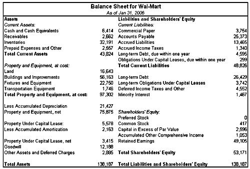 |
| Source: http://www.edgar-online.com |
Here are the entries you'll find on a balance sheet and what each one means.Total Assets
Total assets on the balance sheet are composed of the following:
Current Assets - These are assets that may be converted into cash, sold or consumed within a year or less. These usually include:
- Cash - This is what the company has in cash in the bank. Cash is reported at its market value at the reporting date in the respective currency in which the financials are prepared. Different cash denominations are converted at the market conversion rate.
- Marketable securities (short-term investments) - These can be both equity and/or debt securities for which a ready market exists. Furthermore, management expects to sell these investments within one year's time. These short-term investments are reported at their market value.
- Accounts receivable - This represents the money that is owed to the company for the goods and services it has provided to customers on credit. Every business has customers that will not pay for the products or services the company has provided. Management must estimate which customers are unlikely to pay and create an account called allowance for doubtful accounts. Variations in this account will impact the reported sales on the income statement. Accounts receivable reported on the balance sheet are net of their realizable value (reduced by allowance for doubtful accounts).
- Notes receivable - This account is similar in nature to accounts receivable but it is supported by more formal agreements such as a "promissory notes" (usually a short-term loan that carries interest). Furthermore, the maturity of notes receivable is generally longer than accounts receivable but less than a year. Notes receivable is reported at its net realizable value (the amount that will be collected).
- Inventory - This represents raw materials and items that are available for sale or are in the process of being made ready for sale. These items can be valued individually by several different means, including at cost or current market value, and collectively by FIFO (first in, first out), LIFO (last in, first out) or average-cost method. Inventory is valued at the lower of the cost or market price to preclude overstating earnings and assets.
- Prepaid expenses - These are payments that have been made for services that the company expects to receive in the near future. Typical prepaid expenses include rent, insurance premiums and taxes. These expenses are valued at their original (or historical) cost.
Long-Term assets - These are assets that may not be converted into cash, sold or consumed within a year or less. The heading "Long-Term Assets" is usually not displayed on a company's consolidated balance sheet. However, all items that are not included in current assets are considered long-term assets. These are:
- Investments - These are investments that management does not expect to sell within the year. These investments can include bonds, common stock, long-term notes, investments in tangible fixed assets not currently used in operations (such as land held for speculation) and investments set aside in special funds, such as sinking funds, pension funds and plan-expansion funds. These long-term investments are reported at their historical cost or market value on the balance sheet.
- Fixed assets - These are durable physical properties used in operations that have a useful life longer than one year. This includes:
- Machinery and equipment - This category represents the total machinery, equipment and furniture used in the company's operations. These assets are reported at their historical cost less accumulated depreciation.
- Buildings or Plants - These are buildings that the company uses for its operations. These assets are depreciated and are reported at historical cost less accumulated depreciation.
- Land - The land owned by the company on which the company's buildings or plants are sitting on. Land is valued at historical cost and is not depreciable under U.S. GAAP.
- Other assets - This is a special classification for unusual items that cannot be included in one of the other asset categories. Examples include deferred charges (long-term prepaid expenses), non-current receivables and advances to subsidiaries.
- Intangible assets - These are assets that lack physical substance but provide economic rights and advantages: patents, franchises, copyrights, goodwill, trademarks and organization costs. These assets have a high degree of uncertainty in regard to whether future benefits will be realized. They are reported at historical cost net of accumulated depreciation.
Total Liabilities
Liabilities have the same classifications as assets: current and long term.
Current liabilities - These are debts that are due to be paid within one year or the operating cycle, whichever is longer. Such obligations will typically involve the use of current assets, the creation of another current liability or the providing of some service.
Usually included in this section are:
- Bank indebtedness - This amount is owed to the bank in the short term, such as a bank line of credit.
- Accounts payable - This amount is owed to suppliers for products and services that are delivered but not paid for.
- Wages payable (salaries), rent, tax and utilities - This amount is payable to employees, landlords, government and others.
- Accrued liabilities (accrued expenses) - These liabilities arise because an expense occurs in a period prior to the related cash payment. This accounting term is usually used as an all-encompassing term that includes customer prepayments, dividends payables and wages payables, among others.
- Notes payable (short-term loans) - This is an amount that the company owes to a creditor, and it usually carries an interest expense.
- Unearned revenues (customer prepayments) - These are payments received by customers for products and services the company has not delivered or for which the company has not yet started to incur any cost for delivery.
- Dividends payable - This occurs as a company declares a dividend but has not yet paid it out to its owners.
- Current portion of long-term debt - The currently maturing portion of the long-term debt is classified as a current liability. Theoretically, any related premium or discount should also be reclassified as a current liability.
- Current portion of capital-lease obligation - This is the portion of a long-term capital lease that is due within the next year.
4. Long-term Liabilities - These are obligations that are reasonably expected to be liquidated at some date beyond one year or one operating cycle. Long-term obligations are reported as the present value of all future cash payments. Usually included are:
- Notes payables - This is an amount the company owes to a creditor, which usually carries an interest expense.
- Long-term debt (bonds payable) - This is long-term debt net of current portion.
- Deferred income tax liability - GAAP allows management to use different accounting principles and/or methods for reporting purposes than it uses for corporate tax fillings to the IRS. Deferred tax liabilities are taxes due in the future (future cash outflow for taxes payable) on income that has already been recognized for the books. In effect, although the company has already recognized the income on its books, the IRS lets it pay the taxes later due to the timing difference. If a company's tax expense is greater than its tax payable, then the company has created a future tax liability (the inverse would be accounted for as a deferred tax asset).
- Pension fund liability - This is a company's obligation to pay its past and current employees' post-retirement benefits; they are expected to materialize when the employees take their retirement for structures like a defined-benefit plan. This amount is valued by actuaries and represents the estimated present value of future pension expense, compared to the current value of the pension fund. The pension fund liability represents the additional amount the company will have to contribute to the current pension fund to meet future obligations.
- Long-term capital-lease obligation - This is a written agreement under which a property owner allows a tenant to use and rent the property for a specified period of time. Long-term capital-lease obligations are net of current portion.
Learn more about balance sheets in Reading The Balance Sheet and Breaking Down The Balance Sheet.
Financial Statements - The Income Statement
The income statement measures a company's financial performance over a specific accounting period. Financial performance is assessed by giving a summary of how the business incurs its revenues and expenses through both operating and non-operating activities. It also shows the net profit or loss incurred over a specific accounting period, typically over a fiscal quarter or year. The income statement is also known as the "profit and loss statement" or "statement of revenue and expense."
The income statement is divided into two parts: the operating items section and the non-operating items section.
The operating items section discloses information about revenues and expenses that are a direct result of the regular business operations. For example, if a business creates sports equipment, then the operating items section would talk about the revenues and expenses involved with the production of sports equipment.
The non-operating items section discloses revenue and expense information about activities that are not tied directly to a company's regular operations. For example, if the sport equipment company sold a factory and some old plant equipment, then this information would be in the non-operating items section.Income statements can be presented in one of two ways: multi-step and single-step. Both single and multi-step formats conform to GAAP standards. Both yield the same net income figure; the main difference is how they are formatted, not how figures are calculated. The two formats are illustrated below in two simplistic examples:
| Multi-Step Format | Single-Step Format |
| Net Sales | Net Sales |
| Cost of Sales | Materials and Production |
| Gross Income* | Marketing and Administrative |
| Selling, General and Administrative Expenses (SG&A) | Research and Development Expenses (R&D) |
| Operating Income* | Other Income & Expenses |
| Other Income & Expenses | Pretax Income |
| Pretax Income* | Taxes |
| Taxes | Net Income |
| Net Income (after tax)* | -- |
Sample Income Statement
Now let's take a look at a sample income statement for company XYZ for Fiscal Year (FY) ending 2008 and 2009. Expenses are in parentheses.
| Income Statement For Company XYZ FY 2008 and 2009 |
| (Figures USD) | 2008 | 2009 |
| Net Sales | 1,500,000 | 2,000,000 |
| Cost of Sales | (350,000) | (375,000) |
| Gross Income | 1,150,000 | 1,625,000 |
| Operating Expenses (SG&A) | (235,000) | (260,000) |
| Operating Income | 915,000 | 1,365,000 |
| Other Income (Expense) | 40,000 | 60,000 |
| Extraordinary Gain (Loss) | - | (15,000) |
| Interest Expense | (50,000) | (50,000) |
| Net Profit Before Taxes (Pretax Income) | 905,000 | 1,360,000 |
| Taxes | (300,000) | (475,000) |
| Net Income | 605,000 | 885,000 |
Here are some of the different entries that may be found on the income statement and what each one means.
- Sales - These are defined as total sales (revenues) during the accounting period. Remember these sales are net of returns, allowances and discounts.
- Cost of Goods Sold (COGS) - These are all the direct costs that are related to the product or rendered service sold and recorded during the accounting period. (Reminder: matching principle.)
- Operating expenses - These include all other expenses that are not included in COGS but are related to the operation of the business during the specified accounting period. This account is most commonly referred to as "SG&A" (sales general and administrative) and includes expenses such as selling, marketing, administrative salaries, sales salaries, maintenance, administrative office expenses (rent, computers, accounting fees, legal fees), research and development (R&D), depreciation and amortization, etc.
- Other revenues & expenses - These are all non-operating expenses such as interest earned on cash or interest paid on loans.
- Income taxes - This account is a provision for income taxes for reporting purposes.
The Components of Net Income:
- Operating income from continuing operations - This comprises all revenues net of returns, allowances and discounts, less the cost and expenses related to the generation of these revenues. The costs deducted from revenues are typically the COGS and SG&A expenses.
- Recurring income before interest and taxes from continuing operations - In addition to operating income from continuing operations, this component includes all other income, such as investment income from unconsolidated subsidiaries and/or other investments and gains (or losses) from the sale of assets. To be included in this category, these items must be recurring in nature. This component is generally considered to be the best predictor of future earnings. However, non-cash expenses such as depreciation and amortization are not assumed to be good indicators of future capital expenditures. Since this component does not take into account the capital structure of the company (use of debt), it is also used to value similar companies.
- Recurring (pre-tax) income from continuing operations - This component takes the company's financial structure into consideration as it deducts interest expenses.
- Pre-tax earnings from continuing operations - Included in this category are items that are either unusual or infrequent in nature but cannot be both. Examples are an employee-separation cost, plant shutdown, impairments, write-offs, write-downs, integration expenses, etc.
- Net income from continuing operations - This component takes into account the impact of taxes from continuing operations.
Non-Recurring Items
Discontinued operations, extraordinary items and accounting changes are all reported as separate items in the income statement. They are all reported net of taxes and below the tax line, and are not included in income from continuing operations. In some cases, earlier income statements and balance sheets have to be adjusted to reflect changes.
- Income (or expense) from discontinued operations - This component is related to income (or expense) generated due to the shutdown of one or more divisions or operations (plants). These events need to be isolated so they do not inflate or deflate the company's future earning potential. This type of nonrecurring occurrence also has a nonrecurring tax implication and, as a result of the tax implication, should not be included in the income tax expense used to calculate net income from continuing operations. That is why this income (or expense) is always reported net of taxes. The same is true for extraordinary items and cumulative effect of accounting changes (see below).
- Extraordinary items - This component relates to items that are both unusual and infrequent in nature. That means it is a one-time gain or loss that is not expected to occur in the future. An example is environmental remediation.
- Cumulative effect of accounting changes - This item is generally related to changes in accounting policies or estimations. In most cases, these are non cash-related expenses but could have an effect on taxes.
- Unusual or Infrequent Items Included in this category are items that are either unusual or infrequent in nature but they cannot be both.
Examples of unusual or infrequent items:
- Gains (or losses) as a result of the disposition of a company's business segment including:
- Plant shutdown costs
- Lease-breaking fees
- Employee-separation costs
- Gains (or losses) as a result of the disposition of a company's assets or investments (including investments in subsidiary segments) including:
- Plant shut-down costs
- Lease-breaking fees
- Gains (or losses) as a result of a lawsuit
- Losses of operations due to an earthquake
- Impairments, write-offs, write-downs and restructuring costs
- Integration expenses related to the acquisition of a business
- Extraordinary Items Events that are both unusual and infrequent in nature are qualified as extraordinary expenses.
Example of extraordinary items:
- Losses from expropriation of assets
- Gain (or losses) from early retirement of debt
Discontinued Operations
Sometimes management decides to dispose of certain business operations but either has not yet done so or did it in the current year after it had generated income or losses. To be accounted for as a discontinued operation, the business must be physically and operationally distinct from the rest of the firm. Keep in mind these basic definitions:
- Measurement date â This is the date when the company develops a formal plan for disposing.
- Phase-out period â This is the time between the measurement date and the actual disposal date.
The income or loss from discontinued operations is reported separately, and past income statements must be restated, separating the income or loss from discontinued operations.
On the measurement date, the company will accrue any estimated loss during the phase-out period and estimated loss on the sale of the disposal. Any expected gain on the disposal cannot be reported until after the sale is completed (the same rule applies to the sale of a portion of a business segment).
Accounting Changes
Accounting changes occur for two reasons:
- As a result of a change in an accounting principle.
- As a result of a change in an accounting estimate.
The most common form of a change in accounting principle is the switch from the LIFO inventory accounting method to another method such FIFO or average cost basis.
The most common form of a change in accounting estimates is a change in depreciation method for new assets or change in depreciable lives/salvage values, which is considered a change in accounting estimates and not a change in accounting principle. Note that past income does not need to be restated from the LIFO inventory accounting method to another method such FIFO or average cost basis.
In general, prior years' financial statements do not need to be restated unless it is a change in:
- Inventory accounting methods (LIFO to FIFO)
- Change to or from full-cost method (This is used in oil and gas exploration. The successful-efforts method capitalizes only the costs associated with successful activities while the full-cost method capitalizes all the costs associated with all activities.)
- Change from or to percentage-of-completion method (see revenue-recognition methods)
- All changes just prior to a company's IPO
Prior Period Adjustments
These adjustments are related to accounting errors. These errors are typically not reported in the income statement but are reported in retained earnings (found in changes in retained earnings). These errors are disclosed as footnotes explaining the nature of the error and its effect on net income.
For further reading about income statements, see Understanding The Income Statement and Fundamental Analysis: The Income Statement.
Financial Statements - Cash Flow
The statement of cash flow reports the impact of a firm's operating, investing and financial activities on cash flows over an accounting period.
The cash flow statement shows the following:
- How the company obtains and spends cash
- Why there may be differences between net income and cash flows
- If the company generates enough cash from operation to sustain the business
- If the company generates enough cash to pay off existing debts as they mature
- If the company has enough cash to take advantage of new investment opportunities
Segregation of Cash Flows
The statement of cash flows is segregated into three sections:
- Operating activities
- Investing activities
- Financing activities
1. Cash Flow from Operating Activities (CFO)
CFO is cash flow that arises from normal operations such as revenues and cash operating expenses net of taxes.
This includes:
- Cash inflow (+)
- Revenue from sale of goods and services
- Interest (from debt instruments of other entities)
- Dividends (from equities of other entities)
- Cash outflow (-)
- Payments to suppliers
- Payments to employees
- Payments to government
- Payments to lenders
- Payments for other expenses
2. Cash Flow from Investing Activities (CFI)
CFI is cash flow that arises from investment activities such as the acquisition or disposition of current and fixed assets.
This includes:
- Cash inflow (+)
Sale Sale - Collection of principal on loans to other entities
- Cash outflow (-)
- Purchase of property, plant and equipment
- Purchase of debt or equity securities (other entities)
- Lending to other entities
3. Cash flow from financing activities (CFF)
CFF is cash flow that arises from raising (or decreasing) cash through the issuance (or retraction) of additional shares, or through short-term or long-term debt for the company's operations. This includes:
- Cash inflow (+)
Sale - Issuance of debt securities
- Cash outflow (-)
- Dividends to shareholders
- Redemption of long-term debt
- Redemption of capital stock
A cash flow statement looks like this:
| 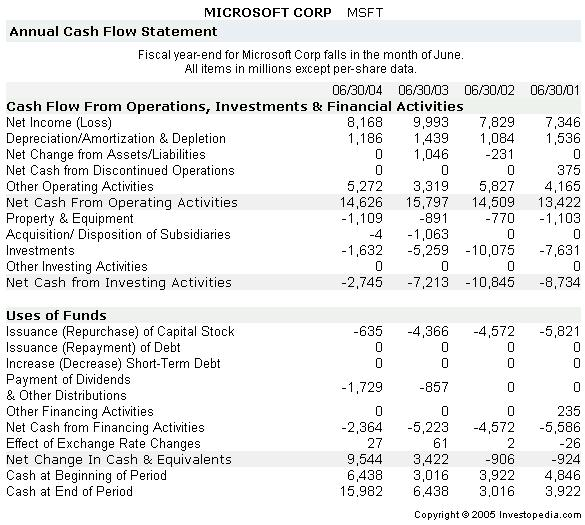 |
Reporting Non-Cash Investing and Financing Transactions
Information for the preparation of the statement of cash flow is derived from three sources:
- Comparative balance sheets
- Current income statements
- Selected transaction data (footnotes)
Some investing and financing activities do not flow through the statement of cash flow because they do not require the use of cash.
Examples Include:
- Conversion of debt to equity
- Conversion of preferred equity to common equity
- Acquisition of assets through capital leases
- Acquisition of long-term assets by issuing notes payable
- Acquisition of non-cash assets (patents, licenses) in exchange for shares or debt securities
Though these items are typically not included in the statement of cash flow, they can be found as footnotes to the financial statements.
Find out more about the cash flow statement in the following articles:
Financial Statements: Cash Flow
Fundamental Analysis: The Cash Flow Statement
Cash Flow From Investing
The Essentials Of Corporate Cash Flow
What Is A Cash Flow Statement?
Taxes - Types Of Taxes
A business must pay a variety of taxes based on the company's physical location, ownership structure and nature of the business. Business taxes can have a huge impact on the profitability of businesses and the amount of business investment. Taxation is a very important factor in the financial investment decision-making process because a lower tax burden allows the company to lower prices or generate higher revenue, which can then be paid out in wages, salaries and/or dividends.Business may be required to remit the following types of taxes:
Federal Income Tax: A tax levied by a national government on annual income.
State and/or Local Income Tax: A tax levied by a state or local government on annual income. Not all states have implemented state level income taxes.
Payroll Tax: A tax an employer withholds and/or pays on behalf of their employees based on the wage or salary of the employee. In most countries, including the United States, both state and federal authorities collect some form of payroll tax. In the
Unemployment Tax: A federal tax that is allocated to state unemployment agencies to fund unemployment assistance for laid-off workers.
Sales Tax: A tax imposed by the government at the point of sale on retail goods and services. It is collected by the retailer and passed on to the state. Sales tax is based on a percentage of the selling prices of the goods and services and is set by the state. Technically, consumers pay sales taxes, but effectively, business pay them since the tax increases consumers costs and causes them to buy less.
Foreign Tax: Income taxes paid to a foreign government on income earned in that country.
Value-Added Tax: A national sales tax collected at each stage of production or consumption of a good. Depending on the political climate, the taxing authority often exempts certain necessary living items, such as food and medicine from the tax.
Taxes - Types Of Credits
Businesses can reduce their tax liability with deductions and credits. The IRS allows businesses to deduct expenses that are considered ordinary and necessary for that line of business, and it provides credits to encourage specific business activities. Deductions reduce the amount of income on which a company must pay tax, while credits directly reduce a company's tax liability. In other words, a deduction might mean that a company pays tax on $750,000 instead of $1,000,000; a credit might mean that a company can subtract $50,000 from its $250,000 tax bill.
Some common business deductions and credits include the following:
Cost of Goods Sold: The amount spent to purchase inventory, including products purchased for resale, raw materials, freight, storage, labor and factory overhead. Indirect costs such as rent, interest and administrative costs must be capitalized.
Capital Expenses: Major expenses for ongoing business assets, including startup costs and improvements, must be capitalized. However, up to $5,000 in startup costs can be deducted in the year the business is opened.
Rent: The cost of leasing a place of business is tax deductible.
Interest: The cost of borrowing money for business activities can be deducted.
Employees' Pay: The salaries and wages paid to employees are tax deductible. So are retirement contributions for employees, directors and officers.
Taxes: Business taxes paid to state, local and foreign tax authorities are tax deductible.
Insurance: Premiums for business insurance such as property, casualty and liability insurance are tax deductible.
IRS Publication 535, Business Expenses, provides more detail about tax deductible business expenses.
Source: IRS Offical Website
Credits
The IRS offers various tax credits for business activities it wants to promote. These include research, oil recovery, reforestation, starting a pension plan, providing low-income housing, employing a member of a targeted group such as veterans or ex-felons, providing employment in an urban empowerment zone, and a number of other activities. All qualifying credits are tallied up and claimed on General Business Tax Credit Form 3800.
For further reading, see Give Your Taxes Some Credit, Starting A Small Business: Taxes, The Impact Of U.S. Corporate Taxation On Investment Decisions And CFC Transfer Pricing and Understanding The U.S. Tax Withholding System.
Capital Cost Allowance And Depreciation - Types Of Depreciation
The capital cost allowance (CCA) is a rate of depreciation used for income tax purposes only. This term primarily relates to Canadian taxation. The CCA rate that can be claimed depends on the asset itself; for example, computer software has a much higher CCA rate than buildings or furniture. The CCA is essentially a business tax deduction that helps Canadian businesses reduce their taxes.
Depreciation Accounting
In the
Straight-line Depreciation
The simplest and most commonly used method, straight-line depreciation is calculated by taking the purchase or acquisition price of an asset, subtracting the salvage value (value at which it can be sold once the company no longer needs it) and dividing by the total productive years for which the asset can reasonably be expected to benefit the company (or its useful life).
Example: For $2 million, Company ABC purchased a machine that will have an estimated useful life of five years. The company also estimates that in five years, the company will be able to sell it for $200,000 for scrap parts.
| Depreciation Expense = Total Acquisition Cost â Salvage Value / Useful Life |
| 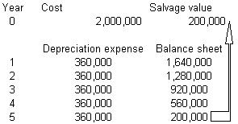 |
Straight-line depreciation produces a constant depreciation expense. At the end of the asset's useful life, the asset is accounted for in the balance sheet at its salvage value.
Unit-of-Production Depreciation
This method provides for depreciation by means of a fixed rate per unit of production. Under this method, one must first determine the cost per one production unit and then multiply that cost per unit with the total number of units the company produced within an accounting period to determine its depreciation expense.
| Depreciation Expense
= Total Acquisition Cost - Salvage Value / Estimated Total Units |
Estimated total units = the total units this machine can produce over its lifetime
Depreciation expense = depreciation per unit * number of units produced during an accounting period
Example:
Company ABC purchased a machine for $2 million that can produce 300,000 products over its useful life. The company estimates that this machine has a salvage value of $200,000.
| 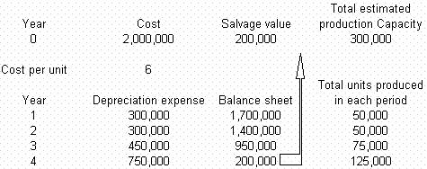 |
Unit-of-production depreciation produces a variable depreciation expense and is more reflective of production-to-cost (see matching principle).
At the end of its useful life, the asset's accumulated depreciation is equal to its total cost minus its salvage value. Furthermore, its accumulated production units equal the total estimated production capacity. One of the drawbacks of this method is that if the units of products decrease (due to slowing demand for the product, for example), the depreciation expense also decreases. This results in an overstatement of reported income and asset value.
Hours-of-Service Depreciation
This is the same concept as unit of production depreciation except that the depreciation expense is a function of total hours of service used during an accounting period.
Accelerated Depreciation
Accelerated depreciation allows companies to write off their assets faster in earlier years than the straight-line depreciation method and to write off a smaller amount in the later years. The major benefit of using this method is the tax shield it provides. Companies with a large tax burden might like to use the accelerated-depreciation method, even if it reduces the income shown on the financial statement.
This depreciation method is popular for writing off equipment that might be replaced before the end of its useful life if it becomes obsolete ( computers, for example).
Companies that have used accelerated depreciation will declare fewer earnings in the beginning years and will seem more profitable in the later years. Companies that will be raising financing (via an IPO or venture capital) are more likely to use accelerated depreciation in the first years of operation and raise financing in the later years to create the illusion of increased profitability (and therefore higher valuation).
The two most common accelerated-depreciation methods are the sum-of-year (SYD) method and double-declining-balance method (DDB):
Sum-of-Year Method:
| Depreciation In Year i
= ((n-i+1) / n!) * (total acquisition cost - salvage value) |
Example: For $2 million, Company ABC purchased a machine that will have an estimated useful life of five years. The company also estimates that in five years, the company will be able to sell it for $200,000 for scrap parts.
n! = 1+2+3+4+5 = 15
n = 5
| 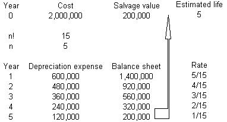 |
The sum-of-year depreciation method produces a variable depreciation expense. At the end of the useful life of the asset, its accumulated depreciation is equal to the accumulated depreciation under the straight-line depreciation.
Double-Declining-Balance Method
The DDB method simply doubles the straight-line depreciation amount that is taken in the first year, and then that same percentage is applied to the un-depreciated amount in subsequent years.
| DDB In year i = (2 / n) * (total acquisition cost - accumulated depreciation)
n = number of years |
Example
For $2 million, Company ABC purchased a machine that will have an estimated useful life of five years. The company also estimates that in five years the company will be able to sell it for $200,000 for scrap parts.
| 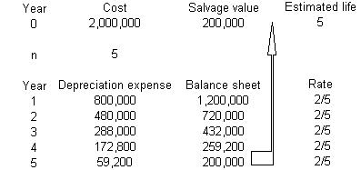 |
The double-declining-balance method produces a very aggressive depreciation schedule. The asset cannot be depreciated beyond its salvage value.
Capital Cost Allowance And Depreciation - Other Depreciation Considerations
Change in Useful life or Salvage Value
All depreciation methods estimate both the useful life of an asset and its salvage value. As time passes the useful life of a company's equipment may be cut short (due to new technology, for example), and its salvage value may also be affected. Once this happens there is asset impairment.
Companies can do two things:
1) They can accelerate the asset's depreciation and fix the reduction in useful life or salvage value over time.
2) They can do the recommended thing, which is to recognize the impairment and report it on the income statement right away.Changes in useful life and salvage value are considered changes in accounting estimates, not changes in accounting principle. As a result, there is no need to restate past financial statements.
Sale, Exchange or Disposal of Depreciable Assets
Companies that are in the business of exploring, extracting and/or transforming natural resources such as timber, gold, silver, oil and gas are known as "natural resource companies." The main assets these companies have are their inventory of natural resources. These assets must be reported at their carrying cost (or cost of carry). The carrying costs for natural resources include the cost of acquiring the lands or mines, the cost of timber-cutting rights and the cost of exploration and development of the natural resources. These costs can be capitalized or expensed. The costs that are capitalized are included in the cost of carry. The cost of carry does not include the cost of machinery and equipment used in the extraction process.
When a resource company purchases a plot of land, it not only pays for the physical asset but also pays a large premium because of what is contained in the plot of land. However, once a company starts extracting the oil or natural resource from the land, the land loses value, because the natural resources extracted from a plot of land will never regenerate. That loss in value is called "depletion." That is why cost of carry is depleted over time. The depletion of these assets must be included in the income statement's accounting period. This is the only time land can be depleted.
The carrying costs of natural resources are allocated to an accounting period by means of the units-of-production method.
Example:
A company acquired cutting rights for $1 million. With these cutting rights, the company will be able to cut 5,000 trees. In its first year of operation, the company cut 200 trees.
Journal entries:
| 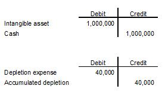 |
Certain types of assets are amortized rather than depreciated. Amortization describes the deduction of capital expenses over a specific period of time (usually over the asset's life). More specifically, this method measures the consumption of the value of intangible assets, such as a patent or a copyright.What is the difference between amortization and depreciation? Because very few assets last forever, one of the main principles of accrual accounting requires that an asset's cost be proportionally expensed based on the time period over which the asset was used. Depreciation and amortization (as well as depletion) methods are used to prorate the cost of a specific type of asset to the asset's life. Remember, these methods are calculated by subtracting the asset's salvage value from its original cost.
Amortization usually refers to spreading an intangible asset's cost over that asset's useful life. For example, a patent on a piece of medical equipment usually has a life of 17 years. The cost involved with creating the medical equipment is spread out over the life of the patent with each portion being recorded as an expense on the company's income statement.
Depreciation, on the other hand, refers to prorating a tangible asset's cost over that asset's life. For example, an office building can be used for a number of years before changes in circumstances result in it being sold. The cost of the building is spread out over the predicted life of the building, with a portion of the cost being expensed each accounting year.
Depletion refers to the allocation of the cost of natural resources over time. For example, an oil well has a finite life before all of the oil is pumped out. Therefore, the oil well's setup costs are spread out over the predicted life of the oil well.
It is important to note that in some countries, such as Canada, the terms amortization and depreciation are often used interchangeably to refer to both tangible and intangible assets.
Here is an example of how amortization works. Suppose XYZ Biotech spent $30 million dollars on a piece of medical equipment and that the patent on the equipment lasts 15 years. The business would record $2 million each year as an amortization expense.
While amortization and depreciation are often used interchangeably, technically this is an incorrect practice because amortization refers to intangible assets and depreciation refers to tangible assets.
Amortization can be calculated easily using most modern financial calculators, spreadsheet software packages such as Microsoft Excel, or amortization charts and tables.
To learn more about amortization and depreciation, read Financial Statements: Long-Lived Assets.
Cash Flow And Relationships Between Financial Statement - The Relationship Between Financial Statements
The income statement, balance sheet and cash flow statement are all interrelated. The income statement describes how the assets and liabilities were used in the stated accounting period. The cash flow statement explains cash inflows and outflows, and it will ultimately reveal the amount of cash the company has on hand, which is also reported in the balance sheet. By themselves, each financial statement only provides a portion of the story of a company's financial condition; together, they provide a more complete picture.
The Relationship Between the Financial Statements
| 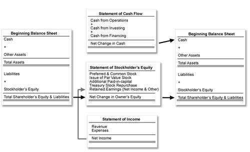 |
Stockholders and potential creditors analyze a company's financial statements and calculate a number of financial ratios with the data they contain to identify the company's financial strengths and weaknesses and determine whether the company is a good investment/credit risk. Managers use them to aid in decision making.(To learn more, check out Reading The Balance Sheet, Understanding The Income Statement and The Essentials Of Cash Flow.)
One important way the financial statements are used together is in the calculation of free cash flow (FCF). Smart investors love companies that produce plenty of free cash flow. It signals a company's ability to pay debt and dividends, buy back stock and facilitate the growth of business - all important undertakings from an investor's perspective. However, while free cash flow is a great gauge of corporate health, it does have its limits and is not immune to accounting trickery. (For background reading, see Analyzing Cash Flow The Easy Way.)
Cash Flow And Relationships Between Financial Statement - Free Cash Flow
By establishing how much cash a company has after paying its bills for ongoing activities and growth, FCF is a measure that aims to cut through the arbitrariness and "guesstimations" involved in reported earnings. Regardless of whether a cash outlay is counted as an expense in the calculation of income or turned into an asset on the balance sheet, free cash flow tracks the money.
To calculate FCF, make a beeline for the company's cash flow statement and balance sheet. There you will find the item cash flow from operations (also referred to as "operating cash"). From this number, subtract estimated capital expenditure required for current operations:
| Cash Flow From Operations (Operating Cash)
- Capital Expenditure ---------------------------- = Free Cash Flow |
| Net income
+ Depreciation/Amortization - Change in Working Capital - Capital Expenditure ---------------------------- = Free Cash Flow |
It might seem odd to add back depreciation/amortization since it accounts for capital spending. The reasoning behind the adjustment is that free cash flow is meant to measure money being spent right now, not transactions that happened in the past. This makes FCF a useful instrument for identifying growing companies with high up-front costs, which may eat into earnings now but have the potential to pay off later.
What Does Free Cash Flow Indicate?Growing free cash flows are frequently a prelude to increased earnings. Companies that experience surging FCF - due to revenue growth, efficiency improvements, cost reductions, share buy backs, dividend distributions or debt elimination - can reward investors tomorrow. That is why many in the investment community cherish FCF as a measure of value. When a firm's share price is low and free cash flow is on the rise, the odds are good that earnings and share value will soon be heading up.
By contrast, shrinking FCF signals trouble ahead. In the absence of decent free cash flow, companies are unable to sustain earnings growth. An insufficient FCF for earnings growth can force a company to boost its debt levels. Even worse, a company without enough FCF may not have the liquidity to stay in business.
Is Free Cash Flow Foolproof?
Although it provides a wealth of valuable information that investors really appreciate, FCF is not infallible. Crafty companies still have leeway when it comes to accounting sleight of hand.
Without a regulatory standard for determining FCF, investors often disagree on exactly which items should and should not be treated as capital expenditures. Investors must therefore keep an eye on companies with high levels of FCF to see if these companies are under-reporting capital expenditure and R&D. Companies can also temporarily boost FCF by stretching out their payments, tightening payment collection policies and depleting inventories. These activities diminish current liabilities and changes to working capital, but the impacts are likely to be temporary.
The Trick of Hiding Receivables
Let's look at yet another example of FCF tomfoolery, which involves specious calculations of the current accounts receivable. When a company reports revenue, it records an account receivable, which represents cash that has yet to be received. The revenues then increase net income and cash from operations, but that increase is typically offset by an increase in current accounts receivable, which is then subtracted from cash from operations. When companies record their revenues as such, the net impact on cash from operations and free cash flow should be zero since no cash has been received.
What happens when a company decides to record the revenue, even though the cash will not be received within a year? The receivable for a delayed cash settlement is therefore "non-current" and can get buried in another category like "other investments." Revenue is still recorded and cash from operations increases, but no current account receivable is recorded to offset revenues. Thus, cash from operations and free cash flow enjoy an unjustified boost. Tricks like this one can be hard to catch. (For more insight, see 5 Tricks Companies Use During Earnings Season.)
Finding an all-purpose tool for testing company fundamentals still proves elusive. Like all performance metrics, FCF has its limits. On the other hand, provided that investors keep their guard up, free cash flow is a very good place to start hunting.
Time Value Of Money - Introduction To The Time Value Of Money
In addition to being able to understand financial statements, it's important to be able to estimate the value of an investment in the present and in the future.
The idea that money available at the present time is worth more than the same amount in the future due to its potential earning capacity is called the time value of money. This core principle of finance holds that, provided money can earn interest, any amount of money is worth more the sooner it is received. Thus, at the most basic level, the time value of money demonstrates that, all things being equal, it is better to have money now rather than later.
But why is this? A $100 bill now has the same value as a $100 bill one year from now, doesn't it? Actually, although the bill is the same, you can do much more with the money if you have it now because over time you can earn more interest on your money.
By receiving $10,000 today (Option A), you are poised to increase the future value of your money by investing and gaining interest over a period of time. If you receive the money three years down the line (Option B), you don't have time on your side, and the payment received in three years would be your future value. To illustrate, we have provided a timeline:
| 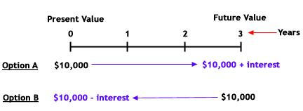 |
If you choose Option A, your future value will be $10,000 plus any interest acquired over the three years. The future value for Option B, on the other hand, would only be $10,000. So how can you calculate exactly how much more Option A is worth compared to Option B? Let's take a look.
Future Value Basics
If you choose Option A and invest the total amount at a simple annual rate of 4.5%, the future value of your investment at the end of the first year is $10,450, which is calculated by multiplying the principal amount of $10,000 by the interest rate of 4.5% and then adding the interest gained to the principal amount:
| Future value of investment at end of first year:
= ($10,000 x 0.045) + $10,000 = $10,450 |
You can also calculate the total amount of a one-year investment with a simple manipulation of the above equation:
- Original equation: ($10,000 x 0.045) + $10,000 = $10,450
- Manipulation: $10,000 x [(1 x 0.045) + 1] = $10,450
- Final equation: $10,000 x (0.045 + 1) = $10,450
The manipulated equation above is simply a removal of the like-variable of $10,000 (the principal amount) by dividing the entire original equation by $10,000.
If the $10,450 left in your investment account at the end of the first year is left untouched and you invested it at 4.5% for another year, how much would you have? To calculate this, you would take the $10,450 and multiply it again by 1.045 (0.045 +1). At the end of two years, you would have $10,920:
| Future value of investment at end of second year:
= $10,450 x (1+0.045) = $10,920.25 |
The above calculation is then equivalent to the following equation:
| Future Value = $10,000 x (1+0.045) x (1+0.045) |
Think back to math class and the rule of exponents, which states that the multiplication of like terms is equivalent to adding their exponents. In the above equation, the two like terms are (1+0.045), and the exponent on each is equal to 1. Therefore, the equation can be represented as the following:
| 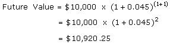 |
We can see that the exponent is equal to the number of years for which the money is earning interest in an investment. So, the equation for calculating the three-year future value of the investment would look like this:
| 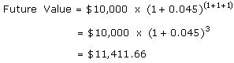 |
This calculation means that we don't need to calculate the future value after the first year, then the second year, then the third year, and so on. If you know how many years you would like to hold a present amount of money in an investment, the future value of that amount is calculated by the following equation:
| 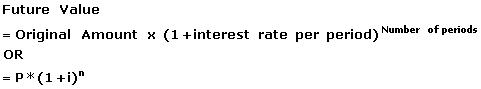 |
For related reading, see Time Value Of Money: Determining Your Future Worth.
Time Value Of Money - Future Value And Compounding
There are two ways to calculate Future Value (FV):
1) For an asset with simple annual interest: = Original Investment x (1+(interest rate*number of years))
2) For an asset with interest compounded annually: = Original Investment x ((1+interest rate)^number of years)Consider the following examples:
1) $1000 invested for five years with simple annual interest of 10% would have a future value of $1,500.00.
2) $1000 invested for five years at 10%, compounded annually has a future value of $1,610.51.
When planning investment strategy, it's useful to be able to predict what an investment is likely to be worth in the future, taking the impact of compound interest into account. This formula allows you (or your calculator) to do just that:
| Pn = P0(1+r)n
Pnis future value of P0
P0 is original amount invested
r is the rate of interest n is the number of compounding periods (years, months, etc.) |
Note in the example below that when you increase the frequency of compounding, you also increase the future value of your investment.
P0 = $10,000
Pn is the future value of P0
n = 10 years
r = 9%
Example 1- If interest is compounded annually, the future value (Pn) is $23,674.
Pn = $10,000(1 + .09)10 = $23,674
Example 2 - If interest is compounded monthly, the future value (Pn) is $24,514.
Pn = $10,000(1 + .09/12)120 = $24,514
To read more on this subject, see Continuously Compound Interest and Accelerating Returns With Continuous Compounding.
Time Value Of Money - Present Value And Discounting
Present value, also called "discounted value," is the current worth of a future sum of money or stream of cash flow given a specified rate of return. Future cash flows are discounted at the discount rate; the higher the discount rate, the lower the present value of the future cash flows. Determining the appropriate discount rate is the key to properly valuing future cash flows, whether they are earnings or obligations.If you received $10,000 today, the present value would be $10,000 because present value is what your investment gives you if you were to spend it today. If you received $10,000 in a year, the present value of the amount would not be $10,000 because you do not have it in your hand now, in the present. To find the present value of the $10,000 you will receive in the future, you need to pretend that the $10,000 is the total future value of an amount that you invested today. In other words, to find the present value of the future $10,000, we need to find out how much we would have to invest today in order to receive that $10,000 in the future.
To calculate present value, or the amount that we would have to invest today, you must subtract the (hypothetical) accumulated interest from the $10,000. To achieve this, we can discount the future payment amount ($10,000) by the interest rate for the period. In essence, all you are doing is rearranging the future value equation above so that you may solve for P. The above future value equation can be rewritten by replacing the P variable with present value (PV) and manipulating the equation as follows:
| 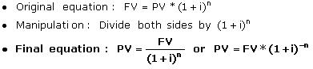 |
Let's walk backwards from the $10,000 offered in Option B. Remember, the $10,000 to be received in three years is really the same as the future value of an investment. If today we were at the two-year mark, we would discount the payment back one year. At the two-year mark, the present value of the $10,000 to be received in one year is represented as the following:
| Present value of future payment of $10,000 at end of year two: 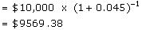 |
Note that if we were at the one-year mark today, the above $9,569.38 would be considered the future value of our investment one year from now.
At the end of the first year we would be expecting to receive the payment of $10,000 in two years. At an interest rate of 4.5%, the calculation for the present value of a $10,000 payment expected in two years would be the following:
| Present value of $10,000 in one year:
|

{kind=link}
{kind=link}
{kind=link}
{kind=link}
{kind=link}
{kind=link}
{kind=link}
{kind=link}
{kind=link}
{kind=link}
{kind=link}
{kind=link}
{kind=link}
{kind=link}
Of course, because of the rule of exponents, we don't have to calculate the future value of the investment every year counting back from the $10,000 investment at the third year. We could put the equation more concisely and use the $10,000 as the future value. So, here is how you can calculate today's present value of the $10,000 expected from a three-year investment earning 4.5%:
| 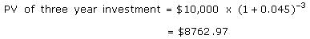 |
{kind=link}
The present value of a future payment of $10,000 is worth $8,762.97 today if interest rates are 4.5% per year. In other words, choosing Option B is like taking $8,762.97 now and then investing it for three years. The equations above illustrate that Option A is better not only because it offers you money right now but because it offers you $1,237.03 ($10,000 - $8,762.97) more in cash! Furthermore, if you invest the $10,000 that you receive from Option A, your choice gives you a future value that is $1,411.66 ($11,411.66 - $10,000) greater than the future value of Option B.
Present Value of a Future Payment
Let's add a little spice to our investment knowledge. What if the payment in three years is more than the amount you'd receive today? Say you could receive either $15,000 today or $18,000 in four years. Which would you choose? The decision is now more difficult. If you choose to receive $15,000 today and invest the entire amount, you may actually end up with an amount of cash in four years that is less than $18,000. You could find the future value of $15,000, but since we are always living in the present, let's find the present value of $18,000 if interest rates are currently 4%. Remember that the equation for present value is the following:
| 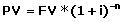 |
{kind=link}
In the equation above, all we are doing is discounting the future value of an investment. Using the numbers above, the present value of an $18,000 payment in four years would be calculated as the following:
| Present Value |
{kind=link}
From the above calculation we now know our choice is between receiving $15,000 or $15,386.48 today. Of course we should choose to postpone payment for four years! (For related reading, see Anything But Ordinary: Calculating The Present And Future Value Of Annuities.)
These calculations demonstrate that time literally is money - the value of the money you have now is not the same as it will be in the future and vice versa. It is important to know how to calculate the time value of money so that you can distinguish between the worth of investments that offer you returns at different times.
Discounted Cash Flow Valuation - Introduction To Discounted Cash Flow Valuation
Discounted cash flow (DCF) is a valuation method used to estimate the attractiveness of an investment opportunity. DCF analysis uses future free cash flow projections and discounts them (most often using the weighted average cost of capital, which we'll discuss in section 13 of this walkthrough) to arrive at a present value, which is then used to evaluate the potential for investment. If the value arrived at through DCF analysis is higher than the current cost of the investment, the opportunity may be a good one.
The formula for calculating DCF is usually given something like this:
| PV = CF1 / (1+k) + CF2 / (1+k)2 + ⦠[TCF / (k - g)] / (1+k)n-1 |
Where:
PV = present value
CFi = cash flow in year i
k = discount rate
TCF = the terminal year cash flow
g = growth rate assumption in perpetuity beyond terminal year
n = the number of periods in the valuation model including the terminal year
There are many variations when it comes to what you can use for your cash flows and discount rate in a DCF analysis. For example, free cash flows can be calculated as operating profit + depreciation + amortization of goodwill - capital expenditures - cash taxes - change in working capital. Although the calculations are complex, the purpose of DCF analysis is simply to estimate the money you'd receive from an investment and to adjust for the time value of money.
Discounted cash flow models are powerful, but they do have shortcomings. DCF is merely a mechanical valuation tool, which makes it subject to the axiom "garbage in, garbage out." Small changes in inputs can result in large changes in the value of a company. Instead of trying to project the cash flows to infinity, terminal value techniques are often used. A simple annuity is used to estimate the terminal value past 10 years, for example. This is done because it is harder to come to a realistic estimate of the cash flows as time goes on.
At a time when financial statements are under close scrutiny, the choice of what metric to use for making company valuations has become increasingly important. Wall Street analysts are emphasizing cash flow-based analysis for making judgments about company performance.
DCF analysis is a key valuation tool at analysts' disposal. Analysts use DCF to determine a company's current value according to its estimated future cash flows. For investors keen on gaining insights on what drives share value, few tools can rival DCF analysis.
Accounting scandals and inappropriate calculation of revenues and capital expenses give DCF new importance. With heightened concerns over the quality of earnings and reliability of standard valuation metrics like P/E ratios, more investors are turning to free cash flow, which offers a more transparent metric for gauging performance than earnings. It is harder to fool the cash register. Developing a DCF model demands a lot more work than simply dividing the share price by earnings or sales. But in return for the effort, investors get a good picture of the key drivers of share value: expected growth in operating earnings, capital efficiency, balance sheet capital structure, cost of equity and debt, and expected duration of growth. An added bonus is that DCF is less likely to be manipulated by aggressive accounting practices.
DCF analysis shows that changes in long-term growth rates have the greatest impact on share valuation. Interest rate changes also make a big difference. Consider the numbers generated by a DCF model offered by Bloomberg Financial Markets. Sun Microsystems, which in 2012 traded on the market at $3.25, is valued at almost $5.50, which makes its price of $3.25 a steal. The model assumes a long-term growth rate of 13%. If we cut the growth rate assumption by 25%, Sun's share valuation falls to $3.20. If we raise the growth rate variable by 25%, the shares go up to $7.50. Similarly, raising interest rates by one percentage point pushes the share value to $3.55; a 1% fall in interest rates boosts the value to about $7.70.
Investors can also use the DCF model as a reality check. Instead of trying to come up with a target share price, they can plug in the current share price and, working backwards, calculate how fast the company would need to grow to justify the valuation. The lower the implied growth rate, the better - less growth has therefore already been "priced into" the stock.
Best of all, unlike comparative metrics like P/Es and price-to-sales ratios, DCF produces a bona fide stock value. Because it does not weigh all the inputs included in a DCF model, ratio-based valuation acts more like a beauty contest: stocks are compared to each other rather than judged on intrinsic value. If the companies used as comparisons are all over-priced, the investor can end up holding a stock with a share price ready for a fall. A well-designed DCF model should, by contrast, keep investors out of stocks that look cheap only against expensive peers.
DCF models are powerful, but they do have shortcomings. Small changes in inputs can result in large changes in the value of a company. Investors must constantly second-guess valuations; the inputs that produce these valuations are always changing and are susceptible to error.
Meaningful valuations depend on the user's ability to make solid cash flow projections. While forecasting cash flows more than a few years into the future is difficult, crafting results into eternity (which is a necessary input) is near impossible. A single, unexpected event can immediately make a DCF model obsolete. By guessing at what a decade of cash flow is worth today, most analysts limit their outlook to 10 years. Investors should watch out for DCF models that project to ridiculous lengths of time. Also, the DCF model focuses on long-range investing; it isn't suited for short-term investments.
Investors shouldn't base a decision to buy a stock solely on discounted cash flow analysis - it is a moving target, full of challenges. If the company fails to meet financial performance expectations, if one of its big customers jumps to a competitor, or if interest rates take an unexpected turn, the model's numbers have to be re-run. Any time expectations change, the DCF-generated value is going to change.
While many finance courses espouse the gospel of DCF analysis as the preferred valuation methodology for all cash flow generating assets, in practice, DCF can be difficult to apply in the valuation of stocks. Even if one believes the gospel of DCF, other valuation approaches are useful to help generate a complete valuation picture of a stock.
Alternative Methodologies
Even if one believes that DCF is the final word in assessing the value of an equity investment, it is very useful to supplement the approach with multiple-based target price approaches. If you are going to project income and cash flows, it is easy to use the supplementary approaches. It is important to assess which trading multiples (P/E, price/cash flow, etc.) are applicable based on the company's history and its sector. Choosing a target multiple range is where it gets tricky.
While this is analogous to arbitrary discount rate selection, by using a trailing earnings number two years out and an appropriate P/E multiple to calculate a target price, this will entail far fewer assumptions to "value" the stock than under the DCF scenario. This improves the reliability of the conclusion relative to the DCF approach. Because we know what a company's P/E or price/cash flow multiple is after every trade, we have a lot of historical data from which to assess the future multiple possibilities. In contrast, the DCF model discount rate is always theoretical, and we do not really have any historical data to draw from when calculating it.
For more insight, read Discounted Cash Flow Analysis, Top 3 Pitfalls Of Discounted Cash Flow Analysis and our DCF Analysis Tutorial.
Discounted Cash Flow Valuation - Annuities And The Future Value And Present Value Of Multiple Cash Flows
At some point in your life you may have had to make a series of fixed payments over a period of time (such as rent or car payments) or you may have received a series of payments over a period of time, such as bond coupons. These are called annuities. If you understand the time value of money and have an understanding of future and present value, you're ready to learn about annuities and how their present and future values are calculated.
What Are Annuities?
Annuities are essentially series of fixed payments required from you or paid to you at a specified frequency over the course of a fixed period of time. The most common payment frequencies are yearly (once a year), semi-annually (twice a year), quarterly (four times a year) and monthly (once a month).There are two basic types of annuities: ordinary annuities and annuities due.
- Ordinary Annuity: Payments are required at the end of each period. For example, straight bonds usually pay coupon payments at the end of every six months until the bond's maturity date.
- Annuity Due: Payments are required at the beginning of each period. Rent is an example of annuity due. You are usually required to pay rent when you first move in at the beginning of the month and then on the first of each month thereafter.
Since the present and future value calculations for ordinary annuities and annuities due are slightly different, we will first discuss the present and future value calculation for ordinary annuities.
Calculating the Future Value of an Ordinary Annuity
If you know how much you can invest per period for a certain time period, the future value of an ordinary annuity formula is useful for finding out how much you would have in the future by investing at your given interest rate. If you are making payments on a loan, the future value is useful for determining the total cost of the loan.
Let's now run through Example 1. Consider the following annuity cash flow schedule:
| 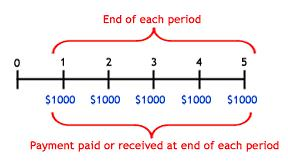 |
{kind=link}
In order to calculate the future value of the annuity, we have to calculate the future value of each cash flow. Let's assume that you are receiving $1,000 every year for the next five years, and you invested each payment at 5%. The following diagram shows how much you would have at the end of the five-year period:
| 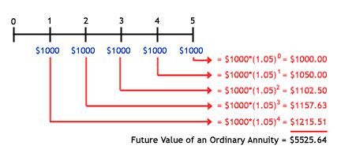 |
{kind=link}
Since we have to add the future value of each payment, you may have noticed that, if you have an ordinary annuity with many cash flows, it would take a long time to calculate all the future values and then add them together. Fortunately, there's a formula that serves as a short cut for finding the accumulated value of all cash flows received from an ordinary annuity:
| 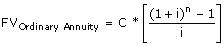 |
{kind=link}
C = Cash flow per period
i = interest rate
n = number of payments
If we were to use the above formula for Example 1 above, this is the result:
| 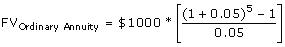 |
{kind=link}
= $1000*[5.53]
= $5525.63
Note that the one cent difference between $5,525.64 and $5,525.63 is due to a rounding error in the first calculation. Each of the values of the first calculation must be rounded to the nearest penny - the more you have to round numbers in a calculation the more likely rounding errors will occur. So, the above formula not only provides a short-cut to finding the future value (FV) of an ordinary annuity but also gives a more accurate result. (Now that you know how to do these on your own, check out our Future Value of an Annuity Calculator for the easy method.)
Calculating the Present Value of an Ordinary Annuity
If you would like to determine today's value of a series of future payments, you need to use the formula that calculates the present value (PV) of an ordinary annuity. This is the formula you would use as part of a bond pricing calculation. The PV of ordinary annuity calculates the present value of the coupon payments that you will receive in the future.
For Example 2, we'll use the same annuity cash flow schedule as we did in Example 1. To obtain the total discounted value, we need to take the present value of each future payment and, as we did in Example 1, add the cash flows together.
| 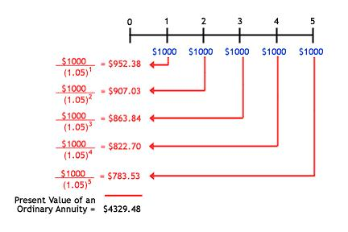 |
{kind=link}
Again, calculating and adding all these values will take a considerable amount of time, especially if we expect many future payments. As such, there is a mathematical shortcut we can use for the PV of an ordinary annuity.
| 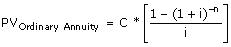 |
{kind=link}
C = Cash flow per period
i = interest rate
n = number of payments
The formula provides us with the PV in a few easy steps. Here is the calculation of the annuity represented in the diagram for Example 2:
| 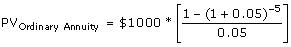 |
{kind=link}
= $1000*[4.33]
= $4329.48
Now that you know the long way to get present value of an annuity, you can check out our Present Value of an Annuity Calculator.
Calculating the Future Value of an Annuity Due
When you are receiving or paying cash flows for an annuity due, your cash flow schedule would appear as follows:
| 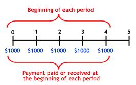 |
{kind=link}
Since each payment in the series is made one period sooner, we need to discount the formula one period back. A slight modification to the FV-of-an-ordinary-annuity formula accounts for payments occurring at the beginning of each period. In Example 3, let's illustrate why this modification is needed when each $1,000 payment is made at the beginning of the period rather than the end (assuming the interest rate is still 5%):
| 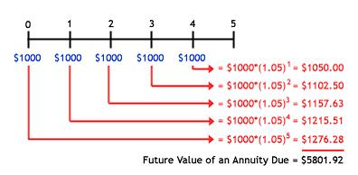 |
{kind=link}
Notice that when payments are made at the beginning of the period, each amount is held for longer at the end of the period. For example, if the $1,000 was invested on January 1st rather than December 31st of each year, the last payment before we value our investment at the end of five years (on December 31st) would have been made a year prior (January 1st) rather than the same day on which it is valued. The future value of annuity formula would then read:
| 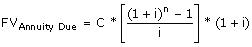 |
{kind=link}
Therefore,
| 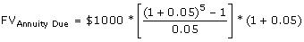 |
{kind=link}
= $1000*5.53*1.05
= $5801.91
Check out our Future Value Annuity Due Calculator to save some time.
Calculating the Present Value of an Annuity Due
For the present value of an annuity due formula, we need to discount the formula one period forward as the payments are held for a lesser amount of time. When calculating the present value, we assume that the first payment was made today.
We could use this formula for calculating the present value of your future rent payments as specified in a lease you sign with your landlord. Let's say for Example 4 that you make your first rent payment at the beginning of the month and are evaluating the present value of your five-month lease on that same day. Your present value calculation would work as follows:
| 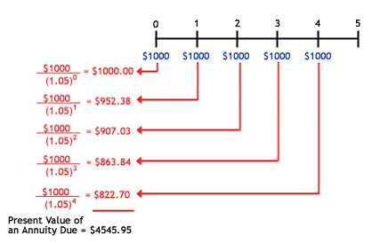 |
{kind=link}
Of course, we can use a formula shortcut to calculate the present value of an annuity due:
| 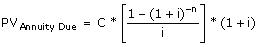 |
{kind=link}
Therefore,
| 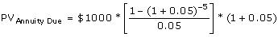 |
{kind=link}
= $1000*4.33*1.05
= $4545.95
Recall that the present value of an ordinary annuity returned a value of $4,329.48. The present value of an ordinary annuity is less than that of an annuity due because the further back we discount a future payment, the lower its present value as each payment or cash flow in ordinary annuity occurs one period further into future.
Now you can see how annuity affects how you calculate the present and future value of any amount of money. Remember that the payment frequencies (or number of payments) and the time at which these payments are made (whether at the beginning or end of each payment period) are all variables you need to account for in your calculations.
For further reading on annuities, check out An Overview Of Annuities and Explaining Types Of Fixed Annuities.
Discounted Cash Flow Valuation - Perpetuities
A perpetuity is a constant stream of identical cash flows with no end. The formula for determining the present value of a perpetuity is as follows:
| 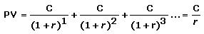 |
{kind=link}
A delayed perpetuity is perpetual stream of cash flows that starts at a predetermined date in the future. For example, preferred fixed dividend paying shares are often valued using a perpetuity formula. If the dividends are going to originate (start) five years from now, rather than next year, the stream of cash flows would be considered a delayed perpetuity.
Although it may seem a bit illogical, an infinite series of cash flows can have a finite present value. Because of the time value of money, each payment is only a fraction of the last.
The net present value (NPV) of a delayed perpetuity is less than a comparable ordinary perpetuity because, based on time value of money principles, the payments have to be discounted to account for the delay. Retirement products are often structured as delayed perpetuities.
Examples of Perpetuities
The perpetuity is not as abstract a concept as you may think. The British-issued bonds, called consols, are a great example of a perpetuity. By purchasing a consol from the British government, the bondholder is entitled to receive annual interest payments forever.
Another example is a type of government bond called an undated issue that has no maturity date and pays interest in perpetuity. While the government can redeem an undated issue if it so chooses, since most existing undated issues have very low coupons, there is little or no incentive for redemption. Undated issues are treated as equity for all practical purposes due to their perpetual nature, but are also known as perpetual bonds.
Perhaps the best-known undated issues are the
Perpetuities and the Dividend Discount Model
The concept of a perpetuity is used often in financial theory, particularly with the dividend discount model (DDM). Unfortunately, the theory is the easy part. The model requires a number of assumptions about a company's dividend payments, growth patterns and future interest rates. Difficulties spring up in the search for sensible numbers to fold into the equation. Here we'll examine this model and show you how to calculate it.
The basic idea is that any stock is ultimately worth no more than what it will provide investors in current and future dividends. Financial theory says that the value of a stock is worth all of the future cash flows expected to be generated by the firm, discounted by an appropriate risk-adjusted rate. According to the DDM, dividends are the cash flows that are returned to the shareholder.
To value a company using the DDM, calculate the value of dividend payments that you think a stock will generate in the years ahead. Here is what the model says:
| 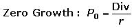 |
{kind=link}
Where:
P= the price at time 0
r= discount rate
For simplicity's sake, consider a company with a $1 annual dividend. If you figure the company will pay that dividend indefinitely, you must ask yourself what you are willing to pay for that company. Assume the expected return (or the required rate of return) is 5%. According to the dividend discount model, the company should be worth $20 ($1.00 / .05).
How do we get to the formula above? It's actually just an application of the formula for a perpetuity:
| 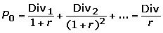 |
{kind=link}
The obvious shortcoming of the model above is that you'd expect most companies to grow over time. If you think this is the case, then the denominator equals the expected return less the dividend growth rate. This is known as the constant growth DDM or the Gordon model after its creator, Myron Gordon. Let's say you think the company's dividend will grow by 3% annually. The company's value should then be $1 / (.05 - .03) = $50. Here is the formula for valuing a company with a constantly growing dividend, as well as the proof of the formula:
| 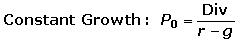 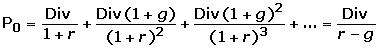 |
{kind=link}
{kind=link}
The classic dividend discount model works best when valuing a mature company that pays a hefty portion of its earnings as dividends, such as a utility company.
The Problem of Forecasting
Proponents of the dividend discount model say that only future cash dividends can give you a reliable estimate of a company's intrinsic value. Buying a stock for any other reason - say, paying 20 times the company's earnings today because somebody will pay 30 times tomorrow - is mere speculation.
In truth, the dividend discount model requires an enormous amount of speculation in trying to forecast future dividends. Even when you apply it to steady, reliable, dividend-paying companies, you still need to make plenty of assumptions about their future. This model is only as good as the assumptions it is based upon. Furthermore, the inputs that produce valuations are always changing and susceptible to error.
The first big assumption that the DDM makes is that dividends are steady or grow at a constant rate indefinitely. But even for steady, utility-type stocks, it can be tricky to forecast exactly what the dividend payment will be next year, never mind a dozen years from now. (Find out some of the reasons why companies cut dividends in Your Dividend Payout: Can You Count On It?)
Multi-Stage Dividend Discount Models
To get around the problem posed by unsteady dividends, multi-stage models take the DDM a step closer to reality by assuming that the company will experience differing growth phases. Stock analysts build complex forecast models with many phases of differing growth to better reflect real prospects. For example, a multi-stage DDM may predict that a company will have a dividend that grows at 5% for seven years, 3% for the following three years and then at 2% in perpetuity.
However, such an approach brings even more assumptions into the model - although it doesn't assume that a dividend will grow at a constant rate, it must guess when and by how much a dividend will change over time.
What Should Be Expected?
Another sticking point with the DDM is that no one really knows for certain the appropriate expected rate of return to use. It's not always wise simply to use the long-term interest rate because the appropriateness of this can change.
The High-Growth Problem
No fancy DDM model is able to solve the problem of high-growth stocks. If the company's dividend growth rate exceeds the expected return rate, you cannot calculate a value because you get a negative denominator in the formula. Stocks don't have a negative value. Consider a company with a dividend growing at 20% while the expected return rate is only 5%: in the denominator (r-g) you would have -15% (5%-20%)!
In fact, even if the growth rate does not exceed the expected return rate, growth stocks, which do not pay dividends, are even tougher to value using this model. If you hope to value a growth stock with the dividend discount model, your valuation will be based on nothing more than guesses about the company's future profits and dividend policy decisions. Most growth stocks do not pay out dividends. Rather, they reinvest earnings into the company with the hope of providing shareholders with returns by means of a higher share price.
Consider Microsoft, which did not pay a dividend for decades. Given this fact, the model might suggest the company was worthless at that time, which is completely absurd. Remember, only about one-third of all public companies pay dividends. Furthermore, even companies that do offer payouts are allocating less and less of their earnings to shareholders.
The dividend discount model is by no means the be-all and end-all for valuation. However, learning about the dividend discount model does encourage critical thinking. It forces investors to evaluate different assumptions about growth and future prospects. If nothing else, the DDM demonstrates the underlying principle that a company is worth the sum of its discounted future cash flows. Whether or not dividends are the correct measure of cash flow is another question. The challenge is to make the model as applicable to reality as possible, which means using the most reliable assumptions available.
Discounted Cash Flow Valuation - The Effect Of Compounding
Compounding is the ability of an asset to generate earnings, which are then reinvested in order to generate their own earnings. In other words, compounding refers to generating earnings from previous earnings.
Suppose you invest $10,000 into Cory's Tequila Company (ticker: CTC). The first year, the shares rises 20%. Your investment is now worth $12,000. Based on good performance, you hold the stock. In Year 2, the shares appreciate another 20%. Therefore, your $12,000 grows to $14,400. Rather than your shares appreciating an additional $2,000 (20%) like they did in the first year, they appreciate an additional $2,400, because the $2,000 you gained in the first year grew by 20% too.
If you extrapolate the process out, the numbers can start to get very big as your previous earnings start to provide returns. In fact, $10,000 invested at 20% annually for25 years would grow to nearly $1,000,000 - and that's without adding any money to the investment!
Interest is often compounded monthly, quarterly, semiannually or annually. With continuous compounding, any interest earned immediately begins earning interest on itself. Albert Einstein allegedly called compound interest "the greatest mathematical discovery of all time." We think this is true partly because, unlike the trigonometry or calculus you studied back in high school, compounding can be applied to everyday life.
The wonder of compounding (sometimes called "compound interest") transforms your working money into a highly powerful income-generating tool. Compounding is the process of generating earnings on an asset's reinvested earnings. To work, it requires two things: the reinvestment of earnings and time. The more time you give your investments, the more you are able to accelerate the income potential of your original investment.
To demonstrate, let's look at another example:
If you invest $10,000 today at 6%, you will have $10,600 in one year ($10,000 x 1.06). Now let's say that rather than withdraw the $600 gained from interest, you keep it in there for another year. If you continue to earn the same rate of 6%, your investment will grow to $11,236.00 ($10,600 x 1.06) by the end of the second year.
Because you reinvested that $600, it works together with the original investment, earning you $636, which is $36 more than the previous year. This little bit extra may seem like peanuts now, but let's not forget that you didn't have to lift a finger to earn that $36. More importantly, this $36 also has the capacity to earn interest. After the next year, your investment will be worth $11,910.16 ($11,236 x 1.06). This time you earned $674.16, which is $74.16 more interest than the first year. This increase in the amount made each year is compounding in action: interest earning interest on interest and so on. This will continue as long as you keep reinvesting and earning interest.
Starting Early
Consider two individuals; we'll name them Pam and Sam. Pam and Sam are the same age. When Pam was 25 she invested $15,000 at an interest rate of 5.5%. For simplicity, let's assume the interest was compounded annually. By the time Pam reaches 50, she will have $57,200.89 ($15,000 x [1.055^25]) in her bank account.
Pam's friend, Sam, did not start investing until he reached age 35. At that time, he invested $15,000 at the same interest rate of 5.5% compounded annually. By the time Sam reaches age 50, he will have $33,487.15 ($15,000 x [1.055^15]) in his bank account.
What happened? Both Pam and Sam are 50 years old, but Pam has $23,713.74 ($57,200.89 - $33,487.15) more in her savings account than Sam, even though he invested the same amount of money. By giving her investment more time to grow, Pam earned a total of $42,200.89 in interest and Sam earned only $18,487.15.
The following chart shows Pam and Sam's earnings:
| 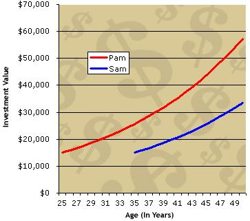 |
{kind=link}
You can see that both investments start to grow slowly and then accelerate, as reflected in the increase in the curves' steepness. Pam's line becomes steeper as she nears her 50s not simply because she has accumulated more interest, but because this accumulated interest is itself accruing more interest.
Pam's line gets even steeper (her rate of return increases) in another 10 years. At age 60 she would have nearly $100,000 in her bank account, while Sam would only have around $60,000 - a $40,000 difference!
| 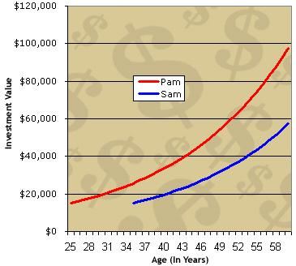 |
{kind=link}
The effect of compound interest depends on frequency. Assume an annual interest rate of 12%. If we start the year with $100 and compound only once, at the end of the year, the principal grows to $112 ($100 x 1.12 = $112). If we instead compound each month at 1%, we end up with more than $112 at the end of the year. Specifically, we end up with $100 x 1.01^12 at $112.68. The final amount is higher because the interest compounded more frequently.
Compounding amplifies the growth of your working money and maximizes the earning potential of your investments - but remember, because time and reinvesting make compounding work, you must keep your hands off the principal and earned interest. (For related reading, see Overcoming Compounding's Dark Side. For a more advanced discussion of compound interest, read Accelerating Returns With Continuous Compounding.
Loans And Amortization - Introduction To Loans
Businesses often need to borrow money to finance business investment activities. Here are some of the types of loans a business might take out.Basic Loans
A commercial loan is a debt-based funding arrangement that a business can set up with a financial institution. The proceeds of commercial loans may be used to fund large capital expenditures and/or operations that a business may otherwise be unable to afford. This type of loan is usually short-term in nature and is almost always backed with some sort of collateral. Commercial loans usually charge flexible rates of interest that are tied to the bank prime rate or else to the London Interbank Offered Rate (LIBOR). Many borrowers must file regular financial statements, usually at least annually. Lenders also usually require proper maintenance of the loan collateral property.
Due to expensive upfront costs and regulation-related hurdles, smaller businesses do not typically have direct access to the debt and equity markets for financing purposes. Therefore, they must rely on financial institutions to meet their financing needs.
A term loan is a loan from a bank for a specific amount that has a specified repayment schedule and a floating interest rate. Term loans almost always mature between one and 10 years. Businesses use term loans for month-to-month operations or to purchase fixed assets such as production equipment.
An unsecured loan is issued and supported only by the borrower's creditworthiness, rather than by some sort of collateral. Generally, a borrower must have a high credit rating to receive an unsecured loan. Commercial paper is an example of an unsecured loan. A secured loan is backed by collateral; if it is not repaid, the lender can seize the collateral and sell it to recover the funds it lent.
An acquisition loan helps a company purchase a specific asset that is determined before the loan is granted. Acquisition loans are sought when a company wants to complete an acquisition for an asset but does not have enough liquid capital to do so. The company may be able to get more favorable terms on an acquisition loan because the assets being purchased have a tangible value, as opposed to capital being used to fund daily operations or release a new product line. The acquisition loan is typically only available to be used for a short window of time and only for specific purposes. Once repaid, funds available through an acquisition loan cannot be re-borrowed as with a revolving line of credit at a bank.
Revolving Credit
Revolving credit is another way businesses can borrow money, but the structure is a bit different than an ordinary loan.
A line of credit establishes a maximum loan balance that the bank will permit the borrower to maintain. The borrower can draw down on the line of credit at any time, as long as he or she does not exceed the maximum set in the agreement.
The advantage of a line of credit over a regular loan is that interest is usually charged only on the part of the line of credit that is used, and the borrower can draw on the line of credit at any time. Depending on the agreement with the financial institution, the line of credit may be classified as a demand loan, which means that any outstanding balance will have to be paid immediately at the financial institution's request.
Revolving credit may also be called an evergreen loan or a standing loan. Credit cards are also a type of revolving credit.
More Complex Loans
A self-liquidating loan is a type of short or intermediate-term credit that is repaid with money generated by the assets purchased. The repayment schedule and maturity of a self-liquidating loan are designed to coincide with the timing of the assets' income generation. These loans are intended to finance purchases that will quickly and reliably generate cash.
A business might use a self-liquidating loan to purchase extra inventory in anticipation of the holiday shopping season. The revenue generated from selling that inventory would be used to repay the loan.
Self-liquidating loans are not always a good credit choice. For example, they do not make sense for fixed assets, such as real estate, or depreciable assets, such as machinery.
Another type of loan related to a business's assets is an asset-conversion loan, a short-term loan that is typically repaid by converting an asset, usually inventory or receivables, into cash.
For example, let's say the TSJ Sports Conglomerate is short on cash it needs to pay its employees this month. One option they might explore is trying to get an asset-conversion loan to fill that short-term cash void.
Another type of loan that can help a business meet its day to day needs is a cash flow loan. Reasons for needing a cash flow loan could be seasonal-demand changes, business expansion or changes in the business cycle. Cash-flow loans can help in temporary situations, but if cash flow problems persist then companies need to improve their cash conversion cycle and get customers to pay faster.
A working capital loan can also be used to finance everyday operations of a company. It is not used to buy long-term assets or investments, but rather to clear up accounts payable, pay wages and salaries, and so on.
A company can also pledge its accounts receivable (AR) as collateral for a loan. A non-notification loan is a type of full-recourse loan that is securitized by accounts receivable. Customers making accounts-receivable payments are not notified that their account/payment is being used as collateral for a loan. They continue making payments to the company that rendered services or made the original loan, and the company then uses those payments to repay their lender for financing obtained. If customers do not pay accounts receivable, the company is still liable for repaying the loan it obtained using the AR as security.
A bridge loan, also known as "interim financing," "gap financing" or a "swing loan," is a short-term loan that is used until a company secures permanent financing or removes an existing obligation. This type of financing allows the user to meet current obligations by providing immediate cash flow. The loans are short term (up to one year) with relatively high interest rates and are backed by some form of collateral such as real estate or inventory.
As the term implies, these loans "bridge the gap" between times when financing is needed. They can be customized for many different situations. For example, let's say that a company is doing a round of equity financing that is expecting to close in six months. A bridge loan could be used to secure working capital until the round of funding goes through.
This is not an exhaustive list of the types of loans available to businesses, but it gives a general idea of the different options available. Businesses should shop around at different institutions to determine which lender offers the best terms for the loan.
Loans And Amortization - Alternatives To Loans
When conventional credit markets get tight, individuals and businesses are pushed to seek alternative lenders to obtain financing. Some of these alternative financing sources have been around for a long time, but the 2007-2008 credit crunch spawned some new potential financing sources for business owners and individuals, as well as some new ways to access them. Here are seven unconventional ways businesses can borrow money and the benefits, dangers and drawbacks of each.
1. Factoring
Factoring (also known as accounts receivable financing) is one of the oldest methods of in-house financing. Simply put, factoring is when a business sells its accounts receivable to a financial institution or "factor." The factor will advance funds on a portion of the receivables, usually 75-80% of their face value. The remaining 20-25% is known as the "reserve" and is initially held by the factor. The amount of the reserve will vary with the quality of the receivables and the historical average of the payers. Historically late payers will increase the amount of the required reserve. (For more on factoring, see Taking The Sting Out Of Receivables.)
The factor handles the transactions, administers the accounts, conducts credit assessments and handles collections. For these services and the funds advance, the factoring costs to the borrower may exceed 20% of the face value of the receivables.
Once the accounts are paid, the borrower receives the difference between the face value and the reserve. The factor usually gets a 2-3% fee for the first 30 days, with late charges ranging from 0.067-0.125% per day thereafter.
The benefits of factoring include quick access to cash (usually within 10 days) and the fact that with a growing business, more accounts receivable will be coming in. There are now some online accounts receivable markets in which factors bid on a business's accounts receivable.
The dangers of factoring can be exacerbated when business owners do not know who they are dealing with. Deal only with well-known, reputable factors. Although it may be convenient, it is inadvisable to factor too many of your accounts receivable as it is expensive and may get in the way of establishing a track record with conventional lenders.
Also, some factors may require that your customers make their payables checks out to the factor. This may give your customers a negative view of the state of your business. Fortunately, this requirement can often be negotiated away if addressed at the outset.
2. Hedge-Fund Lenders
According to an August 2008 Businessweek article, hedge fund lenders are being referred to as "the new corporate ATMs." Hedge funds will often loan money into higher risk businesses, such as asset or technology-concept backed companies; the size of the loan will depend on the quality of the pitch made by the borrower. The decision to lend is usually made after some due diligence but with greater flexibility than that experienced with conventional lenders.
The benefit of hedge fund loans is that access to funds is usually quick. The dangers include high borrowing costs and prepayment penalties. Some hedge funds have been known to fund risky loans to exploit the internal information gained in the process, which can benefit their other trading. (For related reading, see A Brief History Of The Hedge Fund.)
3. Peer-to-Peer Lenders
Peer-to-peer lenders may include family, friends and even strangers who are interested in your success. This can be a formal or informal arrangement. The benefits of this type of loan are quick access to cash and flexibility in the repayment requirements. This financing source may also have a downside: non-business issues and non-financial paybacks can get intertwined with the lending situation. Loans from family and friends may come with expectations of employment or free or discounted products from you or your business.
Another peer-to-peer credit source is the online social lending marketplace, such as that found at Prosper. The benefits of social online lending sources can include a loan at relatively low rates for high-risk business ventures and more flexible terms than those offered from other lending sources. In this scenario, you place your lending needs online and potential lenders bid on your loan by agreeing to provide the requested loan at a given interest rate. The borrower will usually accept the lowest rate offered with the best repayment terms. This lending source accounts for a very small volume of business loans, only $200-$300 million per year nationwide. Dangers and drawbacks include not knowing your lender, making your loan requirements public and not establishing a credit history with one lender. (For more on this type of loan, read
Peer-To-Peer Lending Opens Doors For Lenders/Borrowers.)4. Customer Lenders
Borrowing from business customers started in the early 2000s with community supported agricultural loans (CSAs). In CSAs, farmers' customers loaned money prior to the planting season and took payment in harvested product at discounted prices.
This model expanded, especially in some retail arenas like local food markets. One Boston neighborhood specialty food market used it successfully in 2008 to pay for store upgrades, according to a May 2005 article in Businessweek. The owner accepted needed cash from a number of customers and agreed to supply them with a given dollar amount of food every week for the coming year at a discount from store retail prices.
To participate in customer lending, a business must be well-established in the neighborhood, possess a good list of customers and have earned the trust of those customers.
Dangers and drawbacks include customers wanting uneven amounts of product and/or non-stocked products, and customers dropping out of the repayment-with-product program and demanding cash back.
5. Credit Card Lenders
Often used by owners to start a business, financing from credit cards has the benefit of easy and early access to cash if your credit history is good.
This method has several dangers and drawbacks, however. Credit card financing is usually limited in the amount available to borrowers based on the borrower's demonstrated ability to earn and repay the loan. Because this is the only collateral, credit card rates are high and subject to huge rate penalties for delayed or missed payments on any outstanding bills. For example, a delayed payment on a utility bill might send your credit card rate soaring, affecting all other aspects of your credit and financial status. (For related reading, see Six Major Credit Card Mistakes.)
6. Convertible Debt Instruments
Convertible debt instruments are essentially asset-backed loans that can require the business owner to give up some future equity in the business if the lender wishes to convert the debt to an equity position in the company. One of the benefits is that the lender incurs less risk in making this type of loan and therefore is more likely to make the loan. It is also less risky for the lender than a straight equity investment if the lender just wants to be paid back with a return and does not want ownership. This may occur if the company's bottom line growth is not performing as anticipated.
The dangers and drawbacks to the borrower are the potential loss of future equity if the company does well. Conversely, the owner may be required to pay back unconverted debt if the company is performing below budget. (To learn more about this type of financing, read Why Companies Issue Convertible Bonds.)
7. Venture-Capital-Backed Company Loans
Although limited to a small group of qualifying companies (and usually geographically concentrated in California and the Boston area), this bank-based lending source has significant benefits for qualifying companies. This arrangement allows companies with previous backing from venture capital companies that have established relationships with certain banks to access bank lending based primarily on the bank's reliance on the due diligence done by the previous venture capital firms.
With these loans, borrowers have access to bank lenders previously unavailable to the company, quicker access due to the pre-screening by the venture capital firm and access to bank financing with a higher risk threshold than a stand-alone bank loan.
This bank lending comes with a high interest rate and probable future stock warrant coverage requirements, which allows the lender to purchase shares in the borrowing company at a future date at a specified fixed price or a price under current market price at the time of purchase. It is also currently limited to a small percentage of borrowers. (For more on how venture capitalists operate, read Cashing In On The Venture Capital Cycle.)
Availability and choice of alternative lender(s) will be governed by the unique variables inherent in the needs, capacities and credit history of the borrowing business. These will include timing requirements, asset bases, geographic location, risk tolerances and the ability to pitch the soundness and success potential of the business, among others. If thorough and competent credit market shopping and evaluation is done, businesses may still be able to get the financing they need when the bank says "no."
Loans And Amortization - Amortization
There are two types of amortization. One relates to the way certain business expenses are deducted, which we discussed in Section 2. The other relates to the way a loan is repaid, which we'll discuss here. Amortization describes the paying off of debt in regular installments over a period of time. An amortized loan has scheduled periodic payments of both principal and interest. With a self-amortizing loan, the periodic payments consist of both principal and interest in an amount such that the loan will be paid off by the end of a scheduled term. Assuming the loan is a fixed-rate loan, the amount of each payment and the breakdown of the principal and the interest that comprise each payment can be known in advance. If the loan is an adjustable-rate loan, it can still be self-amortizing, but because the interest rate is subject to change, the amount and breakdown of each payment cannot be known in advance.
Borrowers who choose fully amortized loans are less likely to experience "payment shock" than borrowers who choose loans that are not fully amortized. Payments on loans that are not initially fully amortized must at some point become amortized over the remaining term of the loan in order for the outstanding principal balance to be repaid. The shorter the remaining term, the larger the increase required in the periodic payments to amortize the loan over the remaining term.
With a fully amortizing loan, the principal balance decreases with each payment. With a negatively amortizing loan, the principal balance increases each month because the payments fail to cover the interest due. The unpaid interest, called "deferred interest," is added to the loan's principal, which ultimately causes the borrower to owe more money.
For example, consider a loan with an 8% annual interest rate, a remaining principal balance of $100,000, and a provision that allows the borrower to make $500 payments at a certain number of scheduled payment dates. The interest due on the loan at the next scheduled payment would be: 0.08 / 12 x 100,000 = $666.67. If the borrower makes a $500 payment, $166.67 in deferred interest ($666.67 - $500) will be added to the principal balance of the loan for a total remaining principal balance of $100,166.67. The next month's interest charge would be based on this new principal balance amount, and the calculation would continue each month leading to increases in the loan's principal balance or negative amortization.
Negative amortization cannot continue indefinitely. At some point, the loan must start to amortize over its remaining term. Typically, negatively amortizing loans have scheduled dates when the payments are recalculated, so that the loan will amortize over its remaining term, or they have a negative amortization limit which states that when the principal balance of the loan reaches a certain contractual limit the payments will be recalculated.
With a non-amortizing loan, payments on the principal are not made, while interest payments or minimum payments are made regularly. As a result, the value of principal does not decrease at all over the life of the loan. The principal is then paid as a lump sum at the maturity of the loan. Examples of non-amortizing loan agreements are balloon mortgages and deferred interest programs.
An amortization schedule is a chart showing a complete breakdown of periodic blended loan payments. It shows the amount of principal and the amount of interest that comprise each payment so that the loan will be paid off at the end of its term. Early in the schedule, the majority of each periodic payment is interest. Later in the schedule, the majority of each periodic payment is put toward the principal.
If you know the term of a loan and the total periodic payment, an easy way to calculate an amortization schedule is to do the following: Starting in month one, multiply the loan balance by the periodic interest rate. This will be the interest amount of the first month's payment. Subtract that amount from the total payment, which will give you the principal amount.
To calculate the next month's interest and principal payments, subtract the principal payment made in month one from the loan balance, and then repeat the steps from above.
As an alternative, you can let a loan amortization calculator do the work for you.
Bonds - Introduction To Bonds
Companies may issue bonds to finance operations. Most companies can borrow from banks, but view direct borrowing from a bank as more restrictive and expensive than selling debt on the open market through a bond issue.
The costs involved in borrowing money directly from a bank are prohibitive to a number of companies. In the world of corporate finance, many chief financial officers (CFOs) view banks as lenders of last resort because of the restrictive debt covenants that banks place on direct corporate loans. Covenants are rules placed on debt that are designed to stabilize corporate performance and reduce the risk to which a bank is exposed when it gives a large loan to a company. In other words, restrictive covenants protect the bank's interests; they're written by securities lawyers and are based on what analysts have determined to be risks to that company's performance.
Here are a few examples of the restrictive covenants faced by companies: they can't issue any more debt until the bank loan is completely paid off; they can't participate in any share offerings until the bank loan is paid off; they can't acquire any companies until the bank loan is paid off, and so on. Relatively speaking, these are straightforward, unrestrictive covenants that may be placed on corporate borrowing. However, debt covenants are often much more convoluted and carefully tailored to fit the borrower's business risks. Some of the more restrictive covenants may state that the interest rate on the debt increases substantially should the chief executive officer (CEO) quit or if earnings per share drop in a given time period. Covenants are a way for banks to mitigate the risk of holding debt, but for borrowing companies they are seen as an increased risk.
Simply put, banks place greater restrictions on what a company can do with a loan and are more concerned about debt repayment than bondholders. Bond markets tend to be more forgiving than banks and are often seen as being easier to deal with. As a result, companies are more likely to finance operations by issuing bonds than by borrowing from a bank.What Is a Corporate Bond?
Similar to a mortgage with a bank, bonds are an issue by a borrower to a lender. When you buy a corporate bond, you are loaning your money to a corporation for a predetermined period of time (known as the maturity). In most cases, the bond's par value is $1,000. This is the face value of the bond and the amount the company (the borrower) will repay the lender (you) once the bond matures.
Of course, you're not going to loan your money for free. The borrower must also pay you a premium, known as a "coupon," at a predetermined interest rate in exchange for using your money. These interest payments are usually made every six months until the bond reaches maturity.
There are three important factors to consider before buying a bond. The first is the issuer. The second is the interest (or coupon) you will receive. The third is the maturity date, the day when the company must repay your principal.
Objectives and Risks
Corporate bonds offer a slightly higher yield because they carry a higher default risk than government bonds. Corporate bonds are not the greatest for capital appreciation, but they do offer an excellent source of income, especially for retirees. Corporate bonds are also highly useful for tax-deferred retirement savings accounts, which allow you to avoid taxes on the semiannual interest payments.
The risks associated with corporate bonds depend entirely on the issuing company. Purchasing bonds from well-established and profitable companies is much less risky than purchasing bonds from firms in financial trouble. Bonds from extremely unstable companies are called junk bonds and are very risky because they have a high risk of default.
Strengths
Many corporate bonds offer a higher rate of return than government bonds for only slightly more risk.
The risk of losing your principal is very low if you only buy bonds in well-established companies with a good track record. This may take a bit of research.
Weaknesses
Fixed interest payments are taxed at the same rate as income.
Corporate bonds offer little protection against inflation because the interest payments are usually a fixed amount until maturity.
Three Main Uses
1. Capital Appreciation
2. Income
3. Safe Investment
How to Buy Or Sell a Corporate Bond
Corporate bonds can be purchased through a full service or discount broker, a commercial bank or other financial intermediaries. The best time to buy a corporate bond is when interest rates are relatively high.
You can also open an account with a bond broker, but be warned that most bond brokers require a minimum initial deposit of $5,000. If you cannot afford this amount, we suggest looking at a mutual fund that specializes in bonds (or a bond fund).
If you do decide to purchase a bond through your broker, he or she may tell you that the trade is commission free. Don't be fooled. What typically happens is that the broker will mark up the price slightly; this markup is really the same as a commission. To make sure that you are not being taken advantage of, simply look up the latest quote for the bond and determine whether the markup is acceptable.
For further reading, see Bond Basics: How Do I Buy Bonds?, Bondholders' Rights and Debt Reckoning.
Bonds - Types Of Bonds
This section describes the various types of bonds that a company might issue. (To learn about government-issued bonds, read Basics Of Federal Bond Issues, Savings Bonds For Income And Safety and 20 Investments: Municipal Bonds.)
Corporate Bonds
A company can issue bonds just as it can issue stock. Large corporations have a lot of flexibility as to how much debt they can issue: the limit is whatever the market will bear. Generally, a short-term corporate bond has a maturity of less than five years, intermediate is five to 12 years and long term is more than 12 years.
Corporate bonds are characterized by higher yields because there is a higher risk of a company defaulting than a government. The upside is that they can also be the most rewarding fixed-income investments because of the risk the investor must take on. The company's credit quality is very important: the higher the quality, the lower the interest rate the investor receives.
Variations on corporate bonds include convertible bonds, which the holder can convert into stock, and callable bonds, which allow the company to redeem an issue prior to maturity.
Convertible Bonds
A convertible bond may be redeemed for a predetermined amount of the company's equity at certain times during its life, usually at the discretion of the bondholder. Convertibles are sometimes called "CVs."
Issuing convertible bonds is one way for a company to minimize negative investor interpretation of its corporate actions. For example, if an already public company chooses to issue stock, the market usually interprets this as a sign that the company's share price is somewhat overvalued. To avoid this negative impression, the company may choose to issue convertible bonds, which bondholders will likely convert to equity should the company continue to do well.
From the investor's perspective, a convertible bond has a value-added component built into it: it is essentially a bond with a stock option hidden inside. Thus, it tends to offer a lower rate of return in exchange for the value of the option to trade the bond into stock.
Callable Bonds
Callable bonds, also known as "redeemable bonds," can be redeemed by the issuer prior to maturity. Usually a premium is paid to the bond owner when the bond is called.
The main cause of a call is a decline in interest rates. If interest rates have declined since a company first issued the bonds, it will likely want to refinance this debt at a lower rate. In this case, the company will call its current bonds and reissue new, lower-interest bonds to save money.
Term Bonds
Term bonds are bonds from the same issue that share the same maturity dates. Term bonds that have a call feature can be redeemed at an earlier date than the other issued bonds. A call feature, or call provision, is an agreement that bond issuers make with buyers. This agreement is called an "indenture," which is the schedule and the price of redemptions, plus the maturity dates.
Some corporate and municipal bonds are examples of term bonds that have 10-year call features. This means the issuer of the bond can redeem it at a predetermined price at specific times before the bond matures.
A term bond is the opposite of a serial bond, which has various maturity schedules at regular intervals until the issue is retired.
Amortized Bonds
An amortized bond is a financial certificate that has been reduced in value for records on accounting statements. An amortized bond is treated as an asset, with the discount amount being amortized to interest expense over the life of the bond. If a bond is issued at a discount - that is, offered for sale below its par (face value) - the discount must either be treated as an expense or amortized as an asset.
As we discussed in Section 4, amortization is an accounting method that gradually and systematically reduces the cost value of a limited life, intangible asset. Treating a bond as an amortized asset is an accounting method in the handling of bonds. Amortizing allows bond issuers to treat the bond discount as an asset until the bond's maturity. (To learn more about bond premium amortization, read Premium Bonds: Problems And Opportunities.)
Adjustment Bonds
Issued by a corporation during a restructuring phase, an adjustment bond is given to the bondholders of an outstanding bond issue prior to the restructuring. The debt obligation is consolidated and transferred from the outstanding bond issue to the adjustment bond. This process is effectively a recapitalization of the company's outstanding debt obligations, which is accomplished by adjusting the terms (such as interest rates and lengths to maturity) to increase the likelihood that the company will be able to meet its obligations.
If a company is near bankruptcy and requires protection from creditors (Chapter 11), it is likely unable to make payments on its debt obligations. If this is the case, the company will be liquidated, and the company's value will be spread among its creditors. However, creditors will generally only receive a fraction of their original loans to the company. Creditors and the company will work together to recapitalize debt obligations so that the company is able to meet its obligations and continue operations, thus increasing the value that creditors will receive.
Junk Bonds
A junk bond, also known as a "high-yield bond" or "speculative bond," is a bond rated "BB" or lower because of its high default risk. Junk bonds typically offer interest rates three to four percentage points higher than safer government issues.
Angel Bonds
Angel bonds are investment-grade bonds that pay a lower interest rate because of the issuing company's high credit rating. Angel bonds are the opposite of fallen angels, which are bonds that have been given a "junk" rating and are therefore much more risky.
An investment-grade bond is rated at minimum "BBB" by S&P and Fitch, and "Baa" by Moody's. If the company's ability to pay back the bond's principal is reduced, the bond rating may fall below investment-grade minimums and become a fallen angel.
For more about bonds, see our Bond Basics Tutorial and Advanced Bond Concepts Tutorial.
Bonds - Bond Valuation
The fundamental principle of bond valuation is that the bond's value is equal to the present value of its expected (future) cash flows. The valuation process involves the following three steps:
1. Estimate the expected cash flows.
2. Determine the appropriate interest rate or interest rates that should be used to discount the cash flows.
3. Calculate the present value of the expected cash flows found in step one by using the interest rate or interest rates determined in step two.
Determining Appropriate Interest Rates
The minimum interest rate that an investor should accept is the yield for a risk-free bond (a Treasury bond for a
For non-Treasury bonds, such as corporate bonds, the rate or yield that would be required would be the on-the-run government security rate plus a premium that accounts for the additional risks that come with non-Treasury bonds.
As for the maturity, an investor could just use the final maturity date of the issue compared to the Treasury security. However, because each cash flow is unique in its timing, it would be better to use the maturity that matches each of the individual cash flows.
Computing a Bond's Value
First, we need to find the present value (PV) of the bond's future cash flows. The present value is the amount that would have to be invested today to generate that future cash flow. PV is dependent on the timing of the cash flow and the interest rate used to calculate the present value. To figure out the value, the PV of each individual cash flow must be found. Then, just add the figures together to determine the bond's price.
|
PV at time T = expected cash flows in period T / (1 + I) to the T power |
After you calculate the expected cash flows, you will need to add the individual cash flows:
|
Value = present value @ T1 + present value @ T2 + present value @Tn |
Let's throw some numbers around to further illustrate this concept.
Example: The Value of a Bond
Bond GHJ matures in five years with a coupon rate of 7% and a maturity value of $1,000. For simplicity's sake, let's assume that the bond pays annually and the discount rate is 5%.
The cash flow for each of the years is as follows:
Year One = $70
Year Two = $70
Year Three = $70
Year Four = $70
Year Five = $1,070
Thus, the PV of the cash flows is as follows:
Year One = $70 / (1.05) to the 1st power = $66.67
Year Two = $70 / (1.05) to the 2nd power = $ 63.49
Year Three = $70 / (1.05) to the 3rd power = $ 60.47
Year Four = $70 / (1.05) to the 4th power = $ 57.59
Year Five = $1,070 / (1.05) to the 5th power = $ 838.37
Now to find the value of the bond:
Value = $66.67 + $63.49 + $60.47 + $57.59 + $838.37
Value = $1,086.59
How Does the Value of a Bond Change?
As rates increase or decrease, the discount rate that is used also changes. Let's change the discount rate in the above example to 10% to see how it affects the bond's value.
Example: The Value of a Bond when Discount Rates Change
PV of the cash flows is:
Year One = $70 / (1.10) to the 1st power = $ 63.63
Year Two = $70 / (1.10) to the 2nd power = $ 57.85
Year Three = $70 / (1.10) to the 3rd power = $ 52.63
Year Four = $70 / (1.10) to the 4th power = $ 47.81
Year Five = $1,070 / (1.10) to the 5th power = $ 664.60
Value = 63.63 + 57.85 + 52.63 + 47.81 + 664.60 = $ 886.52
- As we can see from the above examples, an important property of PV is that for a given discount rate, the older a cash flow value is, the lower its present value.
- We can also compute the change in value from an increase in the discount rate used in our example. The change = $1,086.59 - $886.52 = $200.07.
- Another property of PV is that the higher the discount rate, the lower the value of a bond; the lower the discount rate, the higher the value of the bond.
If the discount rate is higher than the coupon rate the PV will be less than par. If the discount rate is lower than the coupon rate, the PV will be higher than par value. |
How Does a Bond's Price Change as it Approaches its Maturity Date?
As a bond moves closer to its maturity date, its price will move closer to par. There are three possible scenarios:
1.If a bond is at a premium, the price will decline over time toward its par value.
2. If a bond is at a discount, the price will increase over time toward its par value.
3. If a bond is at par, its price will remain the same.
To show how this works, let's use our original example of the 7% bond, but now let's assume that a year has passed and the discount rate remains the same at 5%.
Example: Price Changes Over Time
Let's compute the new value to see how the price moves closer to par. You should also be able to see how the amount by which the bond price changes is attributed to it being closer to its maturity date.
PV of the cash flows is:
Year One = $70 / (1.05) to the 1st power = $66.67
Year Two = $70 / (1.05) to the 2nd power = $ 63.49
Year Three = $70 / (1.05) to the 3rd power = $ 60.47
Year Four = $1,070 / (1.05) to the 4th power = $880.29
Value = $66.67 + $63.49 + $60.47 + $880.29 = $1,070.92
As the price of the bond decreases, it moves closer to its par value. The amount of change attributed to the year's difference is $15.67.
An individual can also decompose the change that results when a bond approaches its maturity date and the discount rate changes. This is accomplished by first taking the net change in the price that reflects the change in maturity, then adding it to the change in the discount rate. The two figures should equal the overall change in the bond's price.
Computing the Value of a Zero-coupon Bond
A zero-coupon bond may be the easiest of securities to value because there is only one cash flow - the maturity value.
The formula to calculate the value of a zero coupon bond that matures N years from now is as follows:
| Maturity value / (1 + I) to the power of the number of years * 2
Where I is the semi-annual discount rate. |
Example: The Value of a Zero-Coupon Bond
For illustration purposes, let's look at a zero coupon with a maturity of three years and a maturity value of $1,000 discounted at 7%.
I = 0.035 (.07 / 2)
N = 3
Value of a Zero-Coupon Bond
= $1,000 / (1.035) to the 6th power (3*2)
= $1,000 / 1.229255
= $813.50
Arbitrage-free Valuation Approach
Under a traditional approach to valuing a bond, it is typical to view the security as a single package of cash flows, discounting the entire issue with one discount rate. Under the arbitrage-free valuation approach, the issue is instead viewed as various zero-coupon bonds that should be valued individually and added together to determine value. The reason this is the correct way to value a bond is that it does not allow a risk-free profit to be generated by "stripping" the security and selling the parts at a higher price than purchasing the security in the market.
As an example, a five-year bond that pays semi-annual interest would have 11 separate cash flows and would be valued using the appropriate yield on the curve that matches its maturity. So the markets implement this approach by determining the theoretical rate the U.S. Treasury would have to pay on a zero-coupon treasury for each maturity. The investor then determines the value of all the different payments using the theoretical rate and adds them together. This zero-coupon rate is the Treasury spot rate. The value of the bond based on the spot rates is the arbitrage-free value.
Determining Whether a Bond Is Under or Over Valued
What you need to be able to do is value a bond like we have done before using the more traditional method of applying one discount rate to the security. The twist here, however, is that instead of using one rate, you will use whatever rate the spot curve has that coordinates with the proper maturity. You will then add the values up as you did previously to get the value of the bond.
You will then be given a market price to compare to the value that you derived from your work. If the market price is above your figure, then the bond is undervalued and you should buy the issue. If the market price is below your price, then the bond is overvalued and you should sell the issue.
How Bond Coupon Rates and Market Rates Affect Bond Price
If a bond's coupon rate is above the yield required by the market, the bond will trade above its par value or at a premium. This will occur because investors will be willing to pay a higher price to achieve the additional yield. As investors continue to buy the bond, the yield will decrease until it reaches market equilibrium. Remember that as yields decrease, bond prices rise.
- If a bond's coupon rate is below the yield required by the market, the bond will trade below its par value or at a discount. This happens because investors will not buy this bond at par when other issues are offering higher coupon rates, so yields will have to increase, which means the bond price will drop to induce investors to purchase these bonds. Remember that as yields increase, bond prices fall.
Bonds - Bond Ratings
A bond rating is a grade given to a bond that indicates its credit quality. Private independent rating services provide these evaluations of a bond issuer's financial strength or its ability to pay a bond's principal and interest in a timely fashion.Bond ratings are expressed as letters ranging from "AAA," which is the highest grade, to "C" or "D" ("junk"), which is the lowest grade. Different rating services use the same letter grades, but use various combinations of upper and lower-case letters to differentiate themselves.
The bond rating system helps investors determine a company's credit risk. Think of a bond rating as the report card for a company's credit rating. Blue-chip firms, which are safer investments, have a high rating, while risky companies have a low rating. The chart below illustrates the different bond rating scales from the major rating agencies in the United States: Moody's, Standard and Poor's and Fitch Ratings.
| Bond Rating | Grade | Risk | |
| Moody\'s | S&P/ Fitch | ||
| Aaa | AAA | Investment | Highest Quality |
| Aa | AA | Investment | High Quality |
| A | A | Investment | Strong |
| Baa | BBB | Investment | Medium Grade |
| Ba, B | BB, B | Junk | Speculative |
| Caa/Ca/C | CCC/CC/C | Junk | Highly Speculative |
| C | D | Junk | In Default |
Notice that if the company falls below a certain credit rating, its grade changes from investment quality to junk status. Junk bonds are aptly named: they are the debt of companies in some sort of financial difficulty. Because these bonds are so risky, they have to offer much higher yields than any other debt. Bonds are not inherently safer than stocks. Certain types of bonds can be just as risky, if not riskier, than stocks.
Rating the creditworthiness of a bond issuer, despite the number crunching, is as much an art form as it is a science. While companies like Moody's and A.M. Best gather and analyze mountains of data, the rating itself comes down to the informed opinion of an analyst or a rating committee.
The organizations that rate bonds look at an issuer's assets, debts, income, expenses and financial history. In addition, they give special attention to the trustworthiness of a company to repay previous bond issues on time and in full.
Rating agencies regularly review bond ratings every six to 12 months. However, a bond may be reviewed at any time the agency deems necessary for reasons including missed or delayed payments to investors, issuance of new bonds, changes to an issuer's underlying financial fundamentals, or other broad economic developments. (For more on this subject, read The Debt Ratings Debate.)
Institutional and individual investors rely on bond rating agencies and their in-depth research to make investment decisions. Rating agencies play an integral role in the investment process and can make or break a company's success in both the primary and secondary bond markets. While the rating agencies provide a robust service and are worth the fees they earn, the value of such ratings has been widely questioned since the 2008 financial crisis, and the agencies' timing and opinions have been criticized when dramatic downgrades have come very quickly.
Investors should not rely solely on the bond rating agency's rating and should supplement the ratings with their own research. It's also important to frequently review the ratings over the life of a bond. (Read more in Bond Rating Agencies: Can You Trust Them? and Why Bad Bonds Get Good Ratings.)
Occasionally, firms will not have their bonds rated, in which case it is solely up to the investor to judge a firm's repayment ability. Because the rating systems differ for each agency and change from time to time, it is prudent to research the rating definition for the bond issue you are considering.
Bonds - The Bond Market
The bond market is where debt securities are issued and traded. The bond market primarily includes government-issued securities and corporate debt securities, and it facilitates the transfer of capital from savers to the issuers or organizations that requires capital for government projects, business expansions and ongoing operations. The bond market is alternatively referred to as the debt, credit or fixed-income market. Although the bond market appears complex, it is really driven by the same risk and return tradeoffs as the stock market.Most trading in the bond market occurs over the counter through organized electronic trading networks and is composed of the primary market (through which debt securities are issued and sold by borrowers to lenders) and the secondary market (through which investors buy and sell previously issued debt securities among themselves). Although the stock market often commands more media attention, the bond market is actually many times bigger and is vital to the ongoing operation of the public and private sectors.
The bond market can essentially be broken down into three main groups: issuers, underwriters and purchasers.
The issuers sell bonds or other debt instruments in the bond market to fund the operations of their organizations. This area of the market is mostly made up of governments, banks and corporations. The biggest of these issuers is the government, which uses the bond market to help fund a country's operations. Banks are also key issuers in the bond market, and they can range from local banks up to supranational banks such as the European Investment Bank. The final major issuer is the corporate bond market, which issues debt to finance corporate operations.
The underwriting segment of the bond market is traditionally made up of investment banks and other financial institutions that help the issuer to sell the bonds in the market. In general, selling debt is not as easy as just taking it to the market. In most cases, millions if not billions of dollars are transacted in one offering. As a result, a lot of work needs to be done to prepare for the offering, such as creating a prospectus and other legal documents. In general, the need for underwriters is greatest for the corporate debt market because there are more risks associated with this type of debt.
The final players in the bond market are those who buy the debt. Buyers basically include every group mentioned as well as any other type of investor, including the individual. Governments play one of the largest roles in the market because they borrow and lend money to other governments and banks. Furthermore, governments often purchase debt from other countries if they have excess reserves of that country's money as a result of trade between countries. For example,
Getting bond quotes and general information about a bond issue is considerably more difficult than researching a stock or a mutual fund. There is not a lot of individual investor demand for the information; most bond information is available only through higher level tools that are not accessible to the average investor.
In most cases, if you have a brokerage account, you will have access to that firm's research tools, which may include bond quotes and other information. Your brokerage is therefore the first place that you should look for bond information. However, there are also free tools available online that provide some basic information such as the bond's current price, coupon rate, yield to maturity (YTM), bond rating and other pertinent information. Online services can be limited, however, if they do not give you the volume of bonds that trade hands or a bid-ask spread, making it difficult to measure the true price of the bond.
Bonds - How Inflation And Interest Rates Affect Bonds
Ownership of a bond is the ownership of a stream of future cash payments. Those cash payments are usually made in the form of periodic interest payments and the return of principal when the bond matures. In the absence of credit risk (the risk of default), the value of that stream of future cash payments is simply a function of your required return based on your inflation expectations. In this section we'll break down bond pricing, define the term "bond yield" and demonstrate how inflation expectations and interest rates determine the value of a bond.
Measures of Risk
There are two primary risks that must be assessed when investing in bonds: interest rate risk and credit risk. Though our focus is on how interest rates affect bond pricing, otherwise known as interest rate risk, it's also important that a bond investor be aware of credit risk. (Read Managing Interest Rate Risk to learn more about the risk that comes with changing rates.)
Interest rate risk is the risk of changes in a bond's price due to changes in prevailing interest rates. Changes in short-term versus long-term interest rates can affect various bonds in different ways, which we'll soon discuss.
Credit risk, meanwhile, is the risk that the bond's issuer will not make scheduled interest and/or principal payments. The probability of a negative credit event or default affects a bond's price. The higher the risk of a negative credit event occurring, the higher the interest rate investors will demand for assuming that risk.
In this section, we'll focus on interest-rate risk. (To learn about credit risk, read Corporate Bonds: An Introduction To Credit Risk.)
Calculation of a Bond's Yield and Price
To understand how interest rates affect a bond's price, you must understand the concept of yield. While there are several different types of yield calculations, for the purposes of this article we will use the yield-to-maturity (YTM) calculation. A bond's YTM is simply the discount rate that can be used to make the present value of all of a bond's cash flows equal to its price. In other words, a bond's price is the sum of the present value of each cash flow where the present value of each cash flow is calculated using the same discount factor. This discount factor is the yield. When a bond's yield rises, by definition, its price falls, and when a bond's yield falls, by definition, its price increases. (To learn more on this concept, be sure to read Get Acquainted With Bond Price/Yield Duo.)
A Bond's Relative Yield
The maturity or term of a bond largely affects its yield. To understand this statement, you must understand what is known as the yield curve. The yield curve represents the YTM of a class of bonds (in this case U.S. Treasury bonds). In most interest rate environments, the longer the term to maturity, the higher the yield will be. This should make intuitive sense because the longer the period of time before a cash flow is received, the more chance there is that the required discount rate (or yield) will move higher. (Be sure to read Bond Yield Curve Holds Predictive Powers to learn more about this measure of economic activity, inflation levels and interest rate expectations.)
Inflation Expectations Determine Investors' Yield Requirements
Inflation is a bond's worst enemy. Inflation erodes the purchasing power of a bond's future cash flows. Put simply, the higher the current rate of inflation and the higher the (expected) future rates of inflation, the higher the yields will rise across the yield curve, as investors will demand this higher yield to compensate for inflation risk.
Short-Term and Long-Term Interest Rates, and Inflation Expectations
Inflation - and expectations of future inflation - are a function of the dynamics between short-term and long-term interest rates. Worldwide, short-term interest rates are administered by nations' central banks. In the
Central banks do not control long-term interest rates. Market forces (supply and demand) determine equilibrium pricing for long-term bonds, which set long-term interest rates. If the bond market believes that the FOMC has set the fed funds rate too low, expectations of future inflation increase, which means long-term interest rates increase relative to short-term interest rates - the yield curve gets steeper. If the market believes that the FOMC has set the fed funds rate too high, the opposite happens, and long-term interest rates decrease relative to short-term interest rates, flattening the yield curve. (Whenever you hear the latest inflation update on the news, chances are that interest rates are mentioned in the same breath. Read the Inflation And Interest Rates section of our Inflation Tutorial to learn more about their relationship.)
The Timing of a Bond's Cash Flows and Interest Rates
The timing of a bond's cash flows is important. This includes the bond's term to maturity. If market participants believe that there is higher inflation on the horizon, interest rates and bond yields will rise (and prices will decrease) to compensate for the loss of the purchasing power of future cash flows. Those bonds with the longest cash flows will see their yields rise and prices fall the most. This should be intuitive if you think about a present value calculation - when you change the discount rate used on a stream of future cash flows, the longer until a cash flow is received, the more its present value is affected. The bond market has a measure of price change relative to interest rate changes; this important bond metric is known as duration. (To learn more about duration, be sure to check out the Duration section of our Advanced Bond Concepts Tutorial.)
Summing It Up
Interest rates, bond yields (prices) and inflation expectations have a correlation to each other. Movements in short-term interest rates, as dictated by a nation's central bank, will affect different bonds with different terms to maturity differently depending on the market's expectations of future levels of inflation.
For example, a change in short-term interest rates that does not affect long-term interest rates will have little effect on a long-term bond's price and yield. However, a change (or no change when the market perceives that one is needed) in short-term interest rates that affects long-term interest rates can greatly affect a long-term bond's price and yield. Put simply, changes in short-term interest rates have more of an effect on short-term bonds than long-term bonds, and changes in long-term interest rates have an effect on long-term bonds, but not short-term bonds.
The key to understanding how a change in interest rates will affect a certain bond's price and yield is to recognize where on the yield curve that bond lies (the short end or the long end) and to understand the dynamics between short- and long-term interest rates. With this knowledge, you can use different measures of duration and convexity to become a seasoned bond market investor.
Bonds - Duration
Bond duration is a measure of the sensitivity of the price (the value of principal) of a fixed-income investment to a change in interest rates. Duration is expressed as a number of years. Rising interest rates mean falling bond prices, while declining interest rates mean rising bond prices.
The duration number is a complicated calculation involving present value, yield, coupon, final maturity and call features. Fortunately for investors, this indicator is a standard data point provided in the presentation of comprehensive bond and bond mutual fund information. The bigger the duration number, the greater the interest-rate risk or reward for bond prices.
It is a common misconception among non-professional investors that bonds and bond funds are risk-free. They are not. As you learned in the last section, investors need to be aware of two main risks that can affect a bond's investment value: credit risk (default) and interest rate risk (rate fluctuations). The duration indicator addresses the latter issue.
The term duration has a special meaning in the context of bonds. It is a measurement of how long, in years, it takes for the price of a bond to be repaid by its internal cash flows. It is an important measure for investors to consider, as bonds with higher durations carry more risk and have higher price volatility than bonds with lower durations.
For each of the two basic types of bonds the duration is the following:
1. Zero-Coupon Bond - Duration is equal to its time to maturity.
2. Vanilla Bond - Duration will always be less than its time to maturity.
Let's first work through some visual models that demonstrate the properties of duration for a zero-coupon bond and a vanilla bond.
Duration of a Zero-Coupon Bond
| 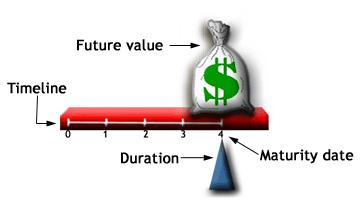 |
{kind=link}
The red lever above represents the four-year time period it takes for a zero-coupon bond to mature. The money bag balancing on the far right represents the future value of the bond - the amount that will be paid to the bondholder at maturity. The fulcrum, or the point holding the lever, represents duration, which must be positioned where the red lever is balanced. The fulcrum balances the red lever at the point on the time line at which the amount paid for the bond and the cash flow received from the bond are equal. The entire cash flow of a zero-coupon bond occurs at maturity, so the fulcrum is located directly below this one payment.
Duration of a Vanilla or Straight Bond
Consider a vanilla or straight bond that pays coupons annually and matures in five years. Its cash flows consist of five annual coupon payments and the last payment includes the face value of the bond.
| 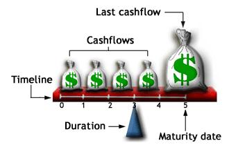 |
{kind=link}
The money bags represent the cash flows you will receive over the five-year period. To balance the red lever at the point where total cash flows equal the amount paid for the bond, the fulcrum must be farther to the left, at a point before maturity. Unlike the zero-coupon bond, the straight bond pays coupon payments throughout its life and therefore repays the full amount paid for the bond sooner.
Factors Affecting Duration
It is important to note, however, that duration changes as the coupons are paid to the bondholder. As the bondholder receives a coupon payment, the amount of the cash flow is no longer on the time line, which means it is no longer counted as a future cash flow that goes towards repaying the bondholder. Our model of the fulcrum demonstrates this: as the first coupon payment is removed from the red lever and paid to the bondholder, the lever is no longer in balance because the coupon payment is no longer counted as a future cash flow.
| 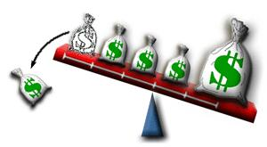 |
{kind=link}
The fulcrum must now move to the right in order to balance the lever again:
| 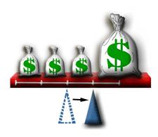 |
{kind=link}
Duration: Other Factors
Besides the movement of time and the payment of coupons, there are other factors that affect a bond's duration, including the coupon rate and its yield. Bonds with high coupon rates and, in turn, high yields will tend to have lower durations than bonds that pay low coupon rates or offer low yields. This makes empirical sense, because when a bond pays a higher coupon rate or has a high yield, the holder of the security receives repayment for the security at a faster rate.
Types of Duration
There are four main types of duration calculations, each of which differ in the way they account for factors such as interest rate changes and the bond's embedded options or redemption features. The four types of durations are Macaulay duration, modified duration, effective duration and key-rate duration.
|
Macaulay Duration The formula usually used to calculate a bond\'s basic duration is the Macaulay duration, which was created by Frederick Macaulay in 1938, although it was not commonly used until the 1970s. Macaulay duration is calculated by adding the results of multiplying the present value of each cash flow by the time it is received and dividing by the total price of the security. The formula for Macaulay duration is as follows:
Remember that bond price equals:
So the following is an expanded version of Macaulay duration:
Example 1: Betty holds a five-year bond with a par value of $1,000 and coupon rate of 5%. For simplicity, let's assume that the coupon is paid annually and that interest rates are 5%. What is the Macaulay duration of the bond?
= 4.55 years Fortunately, if you are seeking the Macaulay duration of a zero-coupon bond, the duration would be equal to the bond's maturity, so there is no calculation required. Modified Duration Modified duration is a modified version of the Macaulay model that accounts for changing interest rates. Because they affect yield, fluctuating interest rates will affect duration, so this modified formula shows how much the duration changes for each percentage change in yield. For bonds without any embedded features, bond price and interest rate move in opposite directions, so there is an inverse relationship between modified duration and an approximate 1% change in yield. Because the modified duration formula shows how a bond's duration changes in relation to interest rate movements, the formula is appropriate for investors wishing to measure the volatility of a particular bond. Modified duration is calculated as the following:
OR
Let's continue to analyze Betty's bond and run through the calculation of her modified duration. Currently her bond is selling at $1,000, or par, which translates to a yield to maturity of 5%. Remember that we calculated a Macaulay duration of 4.55.
= 4.33 years Our example shows that if the bond's yield changed from 5% to 6%, the duration of the bond will decline to 4.33 years. Because it calculates how duration will change when interest increases by 100 basis points, the modified duration will always be lower than the Macaulay duration. Effective Duration The modified duration formula discussed above assumes that the expected cash flows will remain constant, even if prevailing interest rates change; this is also the case for option-free fixed-income securities. On the other hand, cash flows from securities with embedded options or redemption features will change when interest rates change. For calculating the duration of these types of bonds, effective duration is the most appropriate method. Effective duration requires the use of binomial trees to calculate the option-adjusted spread (OAS). There are entire courses built around just those two topics, so the calculations involved for effective duration are beyond the scope of this section. There are, however, many programs available to investors wishing to calculate effective duration. Key-Rate Duration The final duration calculation to learn is key-rate duration, which calculates the spot durations of each of the 11 "key" maturities along a spot rate curve. These 11 key maturities are at the three-month and one, two, three, five, seven, 10, 15, 20, 25, and 30-year portions of the curve. In essence, key-rate duration, while holding the yield for all other maturities constant, allows the duration of a portfolio to be calculated for a one-basis-point change in interest rates. The key-rate method is most often used for portfolios such as the bond ladder, which consists of fixed-income securities with differing maturities. Here is the formula for key-rate duration:
The sum of the key-rate durations along the curve is equal to the effective duration. |
{kind=link}
{kind=link}
{kind=link}
{kind=link}
{kind=link}
{kind=link}
{kind=link}
{kind=link}
{kind=link}
{kind=link}
Duration and Bond Price Volatility
We have established that when interest rates rise, bond prices fall, and vice versa. But how does one determine the degree of a price change when interest rates change? Generally, bonds with a high duration will have a higher price fluctuation than bonds with a low duration. But it is important to know that there are also three other factors that determine how sensitive a bond's price is to changes in interest rates. These factors are term to maturity, coupon rate and yield to maturity. Knowing what affects a bond's volatility is important to investors who use duration-based immunization strategies, which we discuss below, in their portfolios.
|
Factors 1 and 2: Coupon Rate and Term to Maturity If term to maturity and a bond\'s initial price remain constant, the higher the coupon, the lower the volatility, and the lower the coupon, the higher the volatility. If the coupon rate and the bond\'s initial price are constant, the bond with a longer term to maturity will display higher price volatility and a bond with a shorter term to maturity will display lower price volatility. Therefore, if you would like to invest in a bond with minimal interest rate risk, a bond with high coupon payments and a short term to maturity would be optimal. An investor who predicts that interest rates will decline would best potentially capitalize on a bond with low coupon payments and a long term to maturity, since these factors would magnify a bond\'s price increase. Factor 3: Yield to Maturity (YTM) The sensitivity of a bond\'s price to changes in interest rates also depends on its yield to maturity. A bond with a high yield to maturity will display lower price volatility than a bond with a lower yield to maturity, but a similar coupon rate and term to maturity. Yield to maturity is affected by the bond\'s credit rating, so bonds with poor credit ratings will have higher yields than bonds with excellent credit ratings. Therefore, bonds with poor credit ratings typically display lower price volatility than bonds with excellent credit ratings. |
All three factors affect the degree to which bond price will be altered in the face of a change in prevailing interest rates. These factors work together and against each other.
So, if a bond has both a short term to maturity and a low coupon rate, its characteristics have opposite effects on its volatility: the low coupon raises volatility and the short term to maturity lowers volatility. The bond's volatility would then be an average of these two opposite effects.
Immunization
As we mentioned in the above section, the interrelated factors of duration, coupon rate, term to maturity and price volatility are important for those investors employing duration-based immunization strategies. These strategies aim to match the durations of assets and liabilities within a portfolio for the purpose of minimizing the impact of interest rates on the net worth. To create these strategies, portfolio managers use Macaulay duration.
For example, say a bond has a two-year term with four coupons of $50 and a par value of $1,000. If the investor did not reinvest his or her proceeds at some interest rate, he or she would have received a total of $1,200 at the end of two years. However, if the investor were to reinvest each of the bond cash flows until maturity, he or she would have more than $1,200 in two years. Therefore, the extra interest accumulated on the reinvested coupons would allow the bondholder to satisfy a future $1,200 obligation in less time than the maturity of the bond.
Understanding what duration is, how it is used and what factors affect it will help you to determine a bond's price volatility. Volatility is an important factor in determining your strategy for capitalizing on interest rate movements. Furthermore, duration will also help you to determine how you can protect your portfolio from interest rate risk.
Stock Valuation - Introduction To Stock Valuation
When trying to figure out which valuation method to use to value a stock for the first time, most investors will quickly discover the overwhelming number of valuation techniques available to them today. There are the simple-to-use ones, such as the comparables method, and there are the more involved methods, such as the discounted cash flow model. Which one should you use?Unfortunately, there is no one method that is best suited for every situation. Each stock is different, and each industry sector has unique properties that may require varying valuation approaches. Here, we'll provide an overview of the two basic categories of stock - common and preferred - and then discuss how to value each.
Stock Valuation - Common Stock Features
Stock is sometimes referred to as shares, securities or equity. Simply put, common stock is ownership in part of a company. For every stock you own in a company, you own a small piece of the office furniture, company cars and even that lunch the boss paid for with the company credit card. More importantly, you are entitled to a portion of the company's profits and any voting rights attached to the stock. With some companies, the profits are typically paid out in dividends. The more shares you own, the larger the portion of the company (and profits) you own. (For related reading, see 10 Dividend Aristocrats.)
Common stock is just that: common. The majority of stocks trading today take this form. Common stock represents ownership in a company and a portion of profits (dividends). Investors also have voting rights (one vote per share) to elect the board members who oversee the major decisions made by management. In the long term, common stock, by means of capital growth, yields higher rewards than other forms of investment securities. This higher return comes at a cost, as common stock entails the most risk. Should a company go bankrupt and liquidate, the common shareholders will not receive money until the creditors, bondholders and preferred shareholders are paid. (To learn more about stocks, see our Stock Basics Tutorial.)
Objectives and Risks
Over the long term, no investment provides better returns at a reasonable risk than common stock. History dictates that common stocks average 11-12% per year and outperform just about every other type of security including bonds and preferred shares. Stocks provide potential for capital appreciation and income and offer protection against moderate inflation.
The risks associated with stocks can vary widely, and they usually depend on the company. Purchasing stock in a well-established and profitable company means there is much less risk you'll lose your investment, whereas purchasing a penny stock increases your risks substantially. If you use margin, you can also dramatically increase your leverage in a stock, but this is only recommended for experienced investors. (For more on stock investing, read Buffett: Penny Stocks, Day Trading Are My Real Key To Wealth.)
How to Buy or Sell It
The most common method for buying stocks is to use a brokerage, either full service or discount. There is no minimum investment for most stocks (other than the price per share), but many brokerages require clients to have at least $500 to open an account. Dividend reinvestment plans (DRIPs) and direct investment plans (DIPs) are two ways individual companies allow shareholders to purchase stock directly from them for a minimal cost. DRIPs are also a great way to invest money at regular intervals.
Strengths
|
| Weaknesses
Your original investment is not guaranteed. There is always the risk that the stock you invest in will decline in value, and you may lose your entire principal. Your stock is only as good as the company in which you invest - a poor company means poor stock performance. |
| Three Main Uses
1. Capital Appreciation 2. Income 3. Liquidity |
Stock Valuation - Preferred Stock Features
Within the vast spectrum of financial instruments, preferred stocks (or preferreds) occupy a unique place. Because of their characteristics, they straddle the line between stocks and bonds. Technically, they are equity securities, but they share many characteristics with debt instruments. Some investment commentators refer to them as hybrid securities. In this article, we provide a thorough overview of preferred shares and compare them to some better-known investment vehicles.
Because so much of the commentary about preferreds compares them to bonds and other debt instruments, let's first look at the similarities and differences between preferreds and bonds.
Bonds and Preferreds: Similarities
Interest Rate Sensitivity
Preferreds are issued with a fixed par value and pay dividends based on a percentage of that par at a fixed rate. Just like bonds, which also make fixed payments, the market value of preferred shares is sensitive to changes in interest rates. If interest rates rise, the value of the preferred shares would need to fall to offer investors a better rate. If rates fall, the opposite would hold true. However, the relative move of preferred yields is usually less dramatic than that of bonds. (For further reading, check out Trying To Predict Interest Rates.)
Callability
Preferreds technically have an unlimited life because they have no fixed maturity date, but they may be called by the issuer after a certain date. The motivation for the redemption is generally the same as for bonds; a company calls securities that pay higher rates than what the market is currently offering. Also, as is the case with bonds, the redemption price may be at a premium to par to enhance the preferred's initial marketability. (To read more, see Call Features: Don't Get Caught Off Guard.)
Senior Securities
Like bonds, preferreds are senior to common stock; however, bonds have more seniority than preferreds. The seniority of preferreds applies to both the distribution of corporate earnings (as dividends) and the liquidation of proceeds in case of bankruptcy. With preferreds, the investor is standing closer to the front of the line for payment than common shareholders, although not by much.
Convertibility
As with convertible bonds, preferreds can often be converted into the common stock of the issuing company. This feature gives investors flexibility, allowing them to lock in the fixed return from the preferred dividends and, potentially, to participate in the capital appreciation of the common stock. (For further reading, see Introduction To Convertible Preferred Shares and Convertible Bonds: An Introduction.)
Ratings
Like bonds, preferred stocks are rated by the major credit rating companies, such as Standard & Poor's and Moody's. The rating for preferreds is generally one or two tiers below that of the same company's bonds because preferred dividends do not carry the same guarantees as interest payments from bonds and they are junior to all creditors. (For more insight, read What Is A Corporate Credit Rating?)
Bonds and Preferreds: DifferencesType of Security
As observed earlier, preferred stock is equity; bonds are debt. Most debt instruments, along with most creditors, are senior to any equity.
Payments
Preferreds pay dividends. These are fixed dividends, normally for the life of the stock, but they must be declared by the company's board of directors. As such, there is not the same array of guarantees that are afforded to bondholders. This is because bonds are issued with the protection of an indenture. With preferreds, if a company has a cash problem, the board of directors can decide to withhold preferred dividends; the trust indenture prevents companies from taking the same action on bonds. Another difference is that preferred dividends are paid from the company's after-tax profits, while bond interest is paid before taxes. This factor makes it more expensive for the issuing company to issue and pay dividends on preferred stocks. (To read more, see How And Why Do Companies Pay Dividends?)
Yields
Computing current yields on preferreds is similar to performing the same calculation on bonds: the annual dividend is divided by the price. For example, if a preferred stock is paying an annualized dividend of $1.75 and is currently trading in the market at $25, the current yield is: $1.75/$25 = 7%. In the market, however, yields on preferreds are typically higher than those of bonds from the same issuer, reflecting the higher risk the preferreds present for investors.
Volatility
While preferreds are interest rate sensitive, they are not as price sensitive to interest rate fluctuations as bonds. However, their prices do reflect the general market factors that affect their issuers to a greater degree than the same issuer's bonds.
Accessibility for the Average Investor
Information about a company's preferred shares is easier to access than information about the company's bonds, making preferreds, in a general sense, easier to trade (and perhaps more liquid). The low par values of the preferred shares also make investing easier because bonds, with par values around $1,000, often have minimum purchase amounts (i.e. five bonds).
Common and Preferred Stocks: Similarities
Payments
Both common and preferred stocks are equity instruments that pay dividends from the company's after-tax profits.
Common and Preferred Stocks: Differences
Payments
Preferreds have fixed dividends and, although they are never guaranteed, the issuer has a greater obligation to pay them. Common stock dividends, if they exist at all, are paid after the company's obligations to all preferred stockholders have been satisfied.
Appreciation
This is where preferreds lose their luster for many investors. If, for example, a pharmaceutical research company discovers an effective cure for the flu, its common stock will soar, while the preferreds in the same company might only increase by a few points. The lower volatility of preferred stocks may look attractive, but preferreds will not share in a company's success to the same degree as common stock. (To learn more, read 5 Signs Of A Market-Beating Stock.)
Voting
Whereas common stock is often called voting equity, preferred stocks usually have no voting rights.
Types of Preferred Stock
Although the possibilities are nearly endless, these are the basic types of preferred stocks:
- Cumulative: Most preferred stock is cumulative, meaning that if the company withholds part (or all) of the expected dividends, these are considered dividends in arrears and must be paid before any other dividends. Preferred stock that doesn't carry the cumulative feature is called straight, or noncumulative, preferred.
- Callable: The majority of preferred shares are redeemable, giving the issuer the right to redeem the stock at a date and price specified in the prospectus.
- Convertible: The timing for conversion and the conversion price specific to the individual issue will be laid out in the preferred stock's prospectus.
- Participating: Preferred stock has a fixed dividend rate. If the company issues participating preferreds, those stocks gain the potential to earn more than their stated rate. The exact formula for participation will be found in the prospectus. Most preferreds are non-participating.
- Adjustable-Rate Preferred Stock (ARPS): These relatively recent additions to the spectrum pay dividends based on several factors stipulated by the company. Dividends for ARPSs are keyed to yields on U.S. government issues, providing the investor limited protection against adverse interest rate markets.
Why Preferreds?
A company may choose to issue preferreds for a couple of reasons:
|
Institutions tend to invest in preferred stock because IRS rules allow
The fact that individuals are not eligible for such favorable tax treatment should not automatically exclude preferreds from consideration. In many cases, the individual tax rate under the new rules is 15%. That compares favorably with paying taxes at the ordinary rate on interest received from corporate bonds. However, because the 15% rate is not an across-the-board fact, investors should seek competent tax advice before diving into preferreds.
Preferred Stock Pros
- Higher fixed-income payments than bonds or common stock
- Lower investment per share compared to bonds
- Priority over common stocks for dividend payments and liquidation proceeds
- Greater price stability than common stocks
- Greater liquidity than corporate bonds of similar quality
Preferred Stock Cons
- Callability
- Lack of specific maturity date makes recovery of invested principal uncertain
- Limited appreciation potential
- Interest rate sensitivity
- Lack of voting rights
An individual investor looking into preferred stocks should carefully examine both their advantages and drawbacks. There are a number of strong companies in stable industries that issue preferred stocks that pay dividends above investment-grade bonds. The starting point for research on a specific preferred is the stock's prospectus, which you can often find online. If you're looking for relatively safe returns, you shouldn't overlook the preferred stock market. (To learn more, see Is Your Portfolio Light On Stocks? It May Be Time For A Switch.)
Stock Valuation - Common Stock Valuation
Valuation methods typically fall into two main categories: absolute and relative.
Two Categories of Valuation Models
Absolute valuation models attempt to find the intrinsic or "true" value of an investment based only on fundamentals. Looking at fundamentals simply means you would only focus on such things as dividends, cash flow and growth rate for a single company, and you wouldn't worry about any other companies. Valuation models that fall into this category include the dividend discount model, discounted cash flow model, residual income models and asset-based models.
In contrast to absolute valuation models, relative valuation models operate by comparing the company in question to other similar companies. These methods generally involve calculating multiples or ratios, such as the price-to-earnings multiple, and comparing them to the multiples of other comparable firms. For instance, if the P/E of the firm you are trying to value is lower than the P/E multiple of a comparable firm, that company may be said to be relatively undervalued. Generally, this type of valuation is a lot easier and quicker to do than the absolute valuation methods, which is why many investors and analysts start their analysis with this method.
Let's take a look at some of the more popular valuation methods available to investors, and see when it is appropriate to use each model. (For related reading, see Top Things To Know For An Investment Banking Interview.)
1. Dividend Discount Model (DDM)
The dividend discount model (DDM) is one of the most basic absolute valuation models. The dividend model calculates the "true" value of a firm based on the dividends the company pays its shareholders. The justification for using dividends to value a company is that dividends represent the actual cash flows going to the shareholder, thus valuing the present value of these cash flows should give you a value for how much the shares should be worth. So, the first thing you should check if you want to use this method is if the company actually pays a dividend.
Secondly, it is not enough for the company to just a pay dividend; the dividend should also be stable and predictable. The companies that pay stable and predictable dividends are typically mature blue-chip companies in mature and well-developed industries. These type of companies are often best suited for this type of valuation method. For instance, take a look at the dividends and earnings of company XYZ below and see if you think the DDM model would be appropriate for this company:
| 2005 | 2006 | 2007 | 2008 | 2009 | 2010 | |
| Dividends Per Share | $0.50 | $0.53 | $0.55 | $0.58 | $0.61 | $0.64 |
| Earnings Per Share | $4.00 | $4.20 | $4.41 | $4.63 | $4.86 | $5.11 |
In this example, the earnings per share are consistently growing at an average rate of 5%, and the dividends are also growing at the same rate. This means the firm's dividend is consistent with its earnings trend which would make it easy to predict for future periods. In addition, you should check the payout ratio to make sure the ratio is consistent. In this case the ratio is 0.125 for all six years, which is good, and makes this company an ideal candidate for the dividend model. (For more on the DDM, see Digging Into the Dividend Discount Model.)
2. Discounted Cash Flow Model (DCF)
What if the company doesn't pay a dividend or its dividend pattern is irregular? In this case, move on to check if the company fits the criteria to use the discounted cash flow model. Instead of looking at dividends, the DCF model uses a firm's discounted future cash flows to value the business. The big advantage of this approach is that it can be used with a wide variety of firms that don't pay dividends, and even for companies that do pay dividends, such as company XYZ in the previous example.
The DCF model has several variations, but the most commonly used form is the Two-Stage DCF model. In this variation, the free cash flows are generally forecasted for five to ten years, and then a terminal value is calculated to account for all of the cash flows beyond the forecast period. So, the first requirement for using this model is for the company to have predictable free cash flows, and for the free cash flows to be positive. Based on this requirement alone, you will quickly find that many small high-growth firms and non-mature firms will be excluded due to the large capital expenditures these companies generally face.
For example, take a look at the simplified cash flows of the following firm:
| 2005 | 2006 | 2007 | 2008 | 2009 | 2010 | |
| Operating Cash Flow | 438 | 789 | 1462 | 890 | 2565 | 510 |
| Capital Expenditures | 785 | 995 | 1132 | 1256 | 2235 | 1546 |
| Free Cash Flow | -347 | -206 | 330 | -366 | 330 | -1036 |
In this snapshot, the firm has produced increasingly positive operating cash flow, which is good. But you can see by the high level of capital expenditures that the company is still investing a lot of its cash back into the business in order to grow. This results in negative free cash flows for four of the six years, making it extremely difficult (nearly impossible) to predict the cash flows for the next five to ten years. So, in order to use the DCF model most effectively, the target company should generally have stable, positive and predictable free cash flows. Companies that have the ideal cash flows suited for the DCF model are typically the mature firms that are past the growth stages. (To learn more about this method, see Taking Stock of Discounted Cash Flow.)
3. Comparables Method
The last method we'll look at is sort of a catch-all method that can be used if you are unable to value the company using any of the other models, or if you simply don't want to spend the time crunching the numbers. The method doesn't attempt to find an intrinsic value for the stock like the previous two valuation methods do; it simply compares the stock's price multiples to a benchmark to determine if the stock is relatively undervalued or overvalued. The rationale for this is based off of the Law of One Price, which states that two similar assets should sell for similar prices. The intuitive nature of this method is one of the reasons it is so popular.
This method can be used in almost all circumstances because of the vast number of multiples that can be applied, such as the price-to-earnings (P/E), price-to-book (P/B), price-to-sales (P/S), price-to-cash flow (P/CF) and many others. Of these ratios, the P/E ratio is the most commonly used one because it focuses on the earnings of the company, which is one of the primary drivers of an investment's value. (For more on this subject, see 6 Basic Financial Ratios And What They Reveal.)
When can you use the P/E multiple for a comparison? You can generally use it if the company is publicly traded because you need the price of the stock, and you need to know the earnings of the company. Secondly, the company should be generating positive earnings because a comparison using a negative P/E multiple would be meaningless. And lastly, the earnings quality should be strong; earnings should not be too volatile and the accounting practices used by management should not drastically distort the reported earnings. (Companies can manipulate their numbers, so you need to learn how to determine the accuracy of EPS. Read How To Evaluate The Quality Of EPS.)
These are just some of the main criteria investors should look at when choosing which ratio or multiples to use. If the P/E multiple cannot be used, simply look at using a different ratio such as the price-to-sales multiple.
No one valuation method is perfect for every situation, but by knowing the characteristics of the company, you can select the valuation method that best suits the situation. In addition, investors are not limited to just using one method. Often, investors will perform several valuations to create a range of possible values or average all of the valuations into one.
Stock Valuation - Preferred Stock Valuation
Preferred shares have the qualities of both a stock and a bond, which makes valuation a little different than a common share. The owner of the preferred share is part owner of the company, just like a common shareholder. The stake in the company is in proportion to the held stocks. Also, there is a fixed payment which is similar to a bond issued by the company. The fixed payment is in the form of a dividend and will be the basis of the valuation method for a preferred share. These payments could come quarterly, monthly or yearly, depending on the policy stated by the company.
Valuation
Preferred stocks have a fixed dividend, which means we can calculate the value by discounting each of these payments to the present day. This fixed dividend is not guaranteed in common shares. If you take these payments and calculate the sum of the present values into perpetuity, you will find the value of the stock.
For example, if ABC Company pays a 25 cent dividend every month and the required rate of return is 6% per year, then the expected value of the stock, using the dividend discount approach, would be $0.25/0.005 = $50. The discount rate was divided by 12 to get 0.005, but you could also use the yearly dividend of (0.25*12) $3 and divide it by the yearly discount rate of 0.06 to get $50. The point is that each issued dividend payment in the future needs to be discounted back to the present and each value is then added together.
{kind=link}
Where:
V = the value
D1 = the dividend next period
r = the required rate of return
Considerations
Although the preferred shares give a dividend, which is usually guaranteed, the payment can be cut if there are not enough earnings to accommodate a distribution. This risk of a cut payment needs to be accounted for. This risk increases as the payout ratio (dividend payment compared to earnings) gets higher. Also, if the dividend has a chance of growing, the value of the shares will be higher than the result of the constant dividend calculation, given above.
Preferred shares usually lack the voting rights of common shares. This might be a valuable feature to individuals who own large amounts of shares, but for the average investor this voting right does not have much value. However, it still needs to be accounted for when evaluating the marketability of preferred shares.
Preferred shares have an implied value similar to a bond. This means the value will also move inversely with interest rates. When the interest rate goes up, the value of the preferred shares will go down, holding everything else constant. This is to account for other investment opportunities and is reflected in the discount rate used.
Callable
If the preferred shares are callable, the company gains a benefit and the purchaser should pay less, compared to if there was no call provision. The call provision allows the company to basically take the shares off of the market at a predetermined price. A company might add to this if the current market interest rates are high (requiring a higher dividend payment) and the company expects the interest rates to go down. This is a benefit to the issuing company, because they can essentially issue new shares at a lower dividend payment. (Due to their lowered price, callable shares pose risk: read Bond Call Features: Don't Get Caught Off Guard.)
Growing Dividend
If the dividend has a history of predictable growth, or the company states a constant growth will occur, you need to account for this. The calculation is known as the Gordon Growth Model.
{kind=link}
The added g is the growth of the payments.
By subtracting the growth number, the cash flows are discounted by a lower number resulting in a higher value.
Preferred shares are a type of equity investment, which provide a steady stream of income and potential appreciation. Both of these features need to be taken into account when attempting to determine value. Calculations using the dividend discount model are difficult because of the assumptions involved, such as the required rate of return and the growth or length of higher returns.
The dividend payment is usually easy to find; the difficult part comes when this payment is changing or potentially could change in the future. Also, finding a proper discount rate is very difficult and if this figure is off, it could drastically change the calculated value of the shares. When it comes to classroom homework, these numbers will be simply given, but in the real world we are left to estimate the discount rate or pay a company to do the calculation.
Stock Valuation - Stock Market Reporting
One of the primary tools for reporting stock market activity is the ticker tape. You've seen them on business programs or financial news networks: a flashing series of baffling letters, arrows and numbers scrolling along the bottom of your TV screen. (For a short history of the letters, read The Evolution Of Ticker Symbols and Wall Street History: Windows 1.0 And Ticker-Tape Parades.)
While many people simply block out the ticker tape, others use it to stay on top of market sentiment and track the activity of certain stocks. But what exactly is that cryptic script reeling by? It obviously tells us something about stocks and the markets, but how does one understand the ticker tape and use it to his or her advantage?
Brief History
Firstly, a tick is any movement, up or down, however small, in the price of a security. Hence, a ticker tape automatically records each transaction that occurs on the exchange floor, including trading volume, onto a narrow strip of paper, or tape.
The first ticker tape was developed in 1867, following the advent of the telegraph machine, which allowed for information to be printed in easy-to-read scripts. During the late 19th century, most brokers who traded at the New York Stock Exchange (NYSE) kept an office near it to ensure they were getting a steady supply of the tape and thus the most recent transaction figures of stocks. These latest quotes were delivered by messengers, or "pad shovers," who ran a circuit between the trading floor and brokers' offices. The shorter the distance between the trading floor and the brokerage, the more up-to-date the quotes were.
Ticker-tape machines introduced in 1930 and 1964 were twice as fast as their predecessors, but they still had about a 15-20 minute delay between the time of a transaction and the time it was recorded. It wasn't until 1996 that a real-time electronic ticker was launched. It is these up-to-the-minute transaction figures - namely price and volume - that we see today on TV news shows, financial wires and websites. And while the actual tape has been done away with, it has retained the name. (See How Has The Stock Market Changed? to learn more about the evolution of trading.)
Due to the nature of the markets, investors from all corners of the globe are trading a variety of stocks in different lots and blocks at any given time. Therefore what you see one minute on a ticker could change the next, particularly for those stocks with high trading volume, and it could be some time before you see your ticker symbol appear again with the latest trading activity.
Reading the Ticker Tape
Here's an example of a quote shown on a typical ticker tape:
{kind=link}
 |
Throughout the trading day, these quotes will continually scroll across the screen of financial channels or wires, showing current, or slightly delayed, data. In most cases the ticker will quote only stocks of one exchange, but it is common to see the numbers of two exchanges scrolling across the screen.
You can tell where a stock trades by looking at the number of letters in the stock symbol. If the symbol has three letters, the stock likely trades on the NYSE or American Stock Exchange (AMEX). A four-letter symbol indicates the stock likely trades on the Nasdaq. Some Nasdaq stocks have five letters, which usually means the stock is foreign. This is designated by an 'F' or 'Y' at the end of the stock symbol. To learn more, see Why do some stock symbols have three letters while others have four?
On many tickers, colors are also used to indicate how the stock is trading. Here is the color scheme most TV networks use:
| Green indicates the stock is trading higher than the previous day\'s close.
Red indicates the stock is trading lower than the previous day\'s close. Blue or white means the stock is unchanged from the previous closing price. |
Before 2001, stocks were quoted as a fraction, but with the emergence of decimalization all stocks on the NYSE and Nasdaq trade as decimals. The advantage to investors and traders is that decimalization allows investors to enter orders to the penny (as opposed to fractions like 1/16).
Which Quotes Get Priority?
There are literally millions of trades executed on more than 10,000 different stocks each and every day. As you can imagine, it's impossible to report every single trade on the ticker tape. Quotes are selected according to several factors, including the stocks' volume, price change, how widely they are held and if there is significant news surrounding the companies.
For example, a stock that trades 10 million shares a day will appear more times on the ticker tape than a small stock that trades 50,000 shares a day. Or if a smaller company not usually featured on the ticker has some ground-breaking news, it will likely be added to the ticker. The only times the quotes are shown in predetermined order are before the trading day starts and after it has finished. At those times, the ticker simply displays the last quote for all stocks in alphabetical order.
Constantly watching a ticker tape is not the best way to stay informed about the markets, but many believe it can provide some insight. Tick indicators are used to easily identify those stocks whose last trade was either an uptick or a downtick. This is used as an indicator of market sentiment for determining the market's trend.
So next time you're watching TV or surfing a website with a ticker, you'll understand what all those numbers and symbols scrolling across your screen really mean. Just remember that it can be near impossible to see the exact price and volume at the precise moment it is being traded. Think of a ticker tape as providing you with a general picture of a stock's "current" activity.
Stock tables are another source of stock market reporting. Open any financial paper and you will see stock quotes that look something like the image below. In this section, we'll explain how to make sense of these tables so that you can use the information to your advantage.
Let's take a look at the stock/quotes table:
{kind=link}
Columns 1 & 2: 52-Week High and Low. These are the highest and lowest prices at which a stock has traded over the past 52 weeks (one year). This typically does not include the previous day's trading.
Column 3: Company Name and Type of Stock. This column lists the name of the company. If there are no special symbols or letters following the name, it is common stock. Different symbols imply different classes of shares. For example, "pf" means the shares are preferred stock.
Column 4: Ticker Symbol. This is the unique alphabetic name which identifies the stock. If you watch financial TV, the ticker tape will quote the latest prices alongside this symbol. If you are looking for stock quotes online, you always search for a company by the ticker symbol. If you don't know a particular company's ticker symbol, you can search for it at sites like Investopedia.
Column 5: Dividend Per Share. This indicates the annual dividend payment per share. If this space is blank, the company does not currently pay out dividends.
Column 6: Dividend Yield. This is the percentage return on the dividend. Dividend yield is calculated as annual dividends per share divided by price per share.
Column 7: Price/Earnings Ratio (P/E ratio). This is calculated by dividing the current stock price by earnings per share from the last four quarters. (For more on how to interpret this, see Understand The P/E Ratio.)
Column 8: Trading Volume. This figure shows the total number of shares traded for the day, listed in hundreds. To get the actual number traded, add two zeros to the end of the number listed.
Column 9 & 10: Day High and Low. This indicates the price range in which the stock has traded throughout the day. In other words, these are the maximum and the minimum prices that people have paid for the stock.
Column 11: Close. The close is the last trading price recorded when the market closed on the day. If the closing price is more than 5% above or below the previous day's close, the entire listing for that stock is bold-faced. Keep in mind, you are not guaranteed to get this price if you buy the stock the next day because the price is constantly changing, even after the exchange is closed for the day. The close is merely an indicator of past performance and, except in extreme circumstances, it serves as a ballpark of what you should expect to pay.
Column 12: Net Change. This is the dollar value change in the stock price from the previous day's closing price. When you hear about a stock being "up for the day," it means the net change was positive.
Quotes on the Internet
Nowadays, it's far more convenient for most people to get stock quotes off the internet. This method is superior because most sites update throughout the day and give you more information, news, charting and research.
Net Present Value And Internal Rate Of Return - Introduction To Net Present Value And Internal Rate Of Return
Net present value (NPV) is the difference between the present value of cash inflows and the present value of cash outflows. NPV compares the value of a dollar today to the value of that same dollar in the future, taking inflation and returns into account. NPV analysis is sensitive to the reliability of future cash inflows that an investment or project will yield and is used in capital budgeting to assess the profitability of an investment or project.
NPV is calculated using the following formula:
{kind=link}
If the NPV of a prospective project is positive, the project should be accepted. However, if NPV is negative, the project should probably be rejected because cash flows will also be negative.
For example, if a retail clothing business wants to purchase an existing store, it would first estimate the future cash flows that store would generate, then discount those cash flows into one lump-sum present value amount, say $565,000. If the owner of the store was willing to sell his business for less than $565,000, the purchasing company would likely accept the offer as it presents a positive NPV investment. Conversely, if the owner would not sell for less than $565,000, the purchaser would not buy the store, as the investment would present a negative NPV. (Sometimes losing investments aren't what they seem. Learn more in How To Profit From Investment "Losers".)
Internal rate of return (IRR) is the discount rate often used in capital budgeting that makes the net present value of all cash flows from a particular project equal to zero. Generally speaking, the higher a project's internal rate of return, the more desirable it is to undertake the project. As such, IRR can be used to rank several prospective projects a firm is considering. Assuming all other factors are equal among the various projects, the project with the highest IRR would probably be considered the best and undertaken first.
You can think of IRR as the rate of growth a project is expected to generate. While the actual rate of return that a given project ends up generating will often differ from its estimated IRR rate, a project with a substantially higher IRR value than other available options would still provide a much better chance of strong growth.
IRRs can also be compared against prevailing rates of return in the securities market. If a firm can't find any projects with IRRs greater than the returns that can be generated in the financial markets, it may simply choose to invest its retained earnings into the market. (For related reading, see The Top New Investment: Doing Nothing.)
Differences between NPV and IRR and Their Uses
Both NPV and IRR are primarily used in capital budgeting, the process by which companies determine whether a new investment or expansion opportunity is worthwhile. Given an investment opportunity, a firm needs to decide whether undertaking the investment will generate net economic profits or losses for the company.
To do this, the firm estimates the future cash flows of the project and discounts them into present value amounts using a discount rate that represents the project's cost of capital and its risk. Next, all of the investment's future positive cash flows are reduced into one present value number. Subtracting this number from the initial cash outlay required for the investment provides the net present value (NPV) of the investment.
Let's illustrate with an example: suppose JKL Media wants to buy a small publishing company. JKL determines that the future cash flows generated by the publisher, when discounted at a 12% annual rate, yield a present value of $23.5 million. If the publishing company's owner is willing to sell for $20 million, then the NPV of the project would be $3.5 million ($23.5 - $20 = $3.5). The $3.5 million dollar NPV represents the intrinsic value that will be added to JKL Media if it undertakes this acquisition.
So, JKL Media's project has a positive NPV, but from a business perspective, the firm should also know what rate of return will be generated by this investment. To do this, the firm would simply recalculate the NPV equation, this time setting the NPV factor to zero, and solve for the now-unknown discount rate. The rate that is produced by the solution is the project's internal rate of return (IRR).
For this example, the project's IRR could, depending on the timing and proportions of cash flow distributions, be equal to 17.15%. Thus, JKL Media, given its projected cash flows, has a project with a 17.15% return. If there were a project that JKL could undertake with a higher IRR, it would probably pursue the higher-yielding project instead. Thus, you can see that the usefulness of the IRR measurement lies in its ability to represent any investment opportunity's return and to compare it with other possible investments. (Learn about industry-specific investment options in Fine Art Funds: A Beautiful Investment, The Perfect Investment For Chocolate-Lovers and The Shoe-Lover's Investment Portfolio.)
Net Present Value And Internal Rate Of Return - Net Present Value
The net present value approach is the most intuitive and accurate valuation approach to capital budgeting problems. Discounting the after-tax cash flows by the weighted average cost of capital allows managers to determine whether a project will be profitable or not. And unlike the IRR method, NPVs reveal exactly how profitable a project will be in comparison to alternatives. The NPV rule states that all projects which have a positive net present value should be accepted while those that are negative should be rejected. If funds are limited and all positive NPV projects cannot be initiated, those with the high discounted value should be accepted.
In the two examples below, assuming a discount rate of 10%, project A and project B have respective NPVs of $126,000 and $1,200,000. These results signal that both capital budgeting projects would increase the value of the firm, but if the company only has $1 million to invest at the moment, project B is superior.
| Investment | Inflows | ||||
| Year 0 | Year 1 | Year 2 | Year 3 | Year 4 | Year 5 |
| -1,000,000 | 300,000 | 300,000 | 300,000 | 300,000 | 300,000 |
| Investment | Inflows | ||||
| Year 0 | Year 1 | Year 2 | Year 3 | Year 4 | Year 5 |
| -1,000,000 | 300,000 | -300,000 | 300,000 | 300,000 | 3,000,000 |
Some of the major advantages of the NPV approach include the overall usefulness and easy understandability of the figure. NPV provides a direct measure of added profitability, allowing one to simultaneously compare multiple mutually exclusive projects and even though the discount rate it subject to change, a sensitivity analysis of the NPV can typically signal any overwhelming potential future concerns. Although the NPV approach is subject to fair criticisms that the value-added figure does not factor in the overall magnitude of the project, the profitability index (PI), a metric derived from discounted cash flow calculations, can easily fix this concern. We'll discuss the profitability index in a later section. (It's never too early to start learning about money. Read 5 Ways To Teach Your Kids The Value Of A Dollar.)
Here is another example of how companies use NPV.
Using the company's cost of capital, the net present value (NPV) is the sum of the discounted cash flows minus the original investment.
{kind=link}
| Projects with NPV > 0 increase stockholders\' return Projects with NPV < 0 decrease stockholders\' return |
Example: Net Present Value
Assume Newco is deciding between two machines (Machine A and Machine B) in order to add capacity to its existing plant. Using the cash flows in the table below, let's calculate the NPV for each machine and decide which project Newco should accept. Assume Newco's cost of capital is 8.4%.
Expected after-tax cash flows for the new machines
{kind=link}
Calculation and Answer:
NPVA = -5,000 + 500 + 1,000 + 1,000 + 1,500 + 2,500 + 1,000 = $469
(1.084)1 (1.084)2 (1.084)3 (1.084)4 (1.084)5 (1.084)6
NPVB = -2,000 + 500 + 1,500 + 1,500 + 1,500 + 1,500 + 1,500 = $3,929
(1.084)1 (1.084)2 (1.084)3 (1.084)4 (1.084)5 (1.084)6
Given that both machines have NPV > 0, both projects are acceptable. However, for mutually exclusive projects, the decision rule is to choose the project with the greatest NPV. Since the NPVB > NPVA, Newco should choose the project for Machine B.
We'll discuss additional applications of NPV in the following pages.
Net Present Value And Internal Rate Of Return - Payback Rule
When a firm is presented with a capital budgeting decision, one of its first tasks is to determine whether the project will prove to be profitable. The net present value (NPV), internal rate of return (IRR) and payback period (PB) methods are the most common approaches to project selection. Although an ideal capital budgeting solution is such that all three metrics will indicate the same decision, these approaches will often produce contradictory results. Depending on managements' preferences and selection criteria, more emphasis will be put on one approach over another.
The payback rule, also called the payback period, is the length of time required to recover the cost of an investment.
The payback period is calculated as follows:
Cost of Project
Annual Cash Inflows
All other things being equal, the better investment is the one with the shorter payback period.
For example, if a project costs $100,000 and is expected to return $20,000 annually, the payback period will be $100,000 / $20,000, or five years. (Learn more about payback's applications to personal finance in How Long Until Your Hybrid Pays Off? and Cheap Home Renovations That Pay Off.)
Here is another example. If a capital budgeting project requires an initial cash outlay of $1 million, the PB reveals how many years are required to for the cash inflows to equate to the one million dollar outflow. A short PB period is preferred as it indicated that the project will "pay for itself" within a smaller time frame.
In the following example, the PB period would be three and one-third of a year, or three years and four months.
| Investment | Inflows | ||||
| Year 0 | Year 1 | Year 2 | Year 3 | Year 4 | Year 5 |
| -1,000,000 | 300,000 | 300,000 | 300,000 | 300,000 | 300,000 |
Payback periods are typically used when liquidity presents a major concern. If a company only has a limited amount of funds, they might be able to only undertake one major project at a time. Therefore, management will heavily focus on recovering their initial investment in order to undertake subsequent projects. Another major advantage of using the PB is that it is easy to calculate once the cash flow forecasts have been established.
While the payback rule appears very straightforward, there are two significant problems with this method.
1. It ignores the time value of money.
2. It ignores any benefits that occur after the payback period and therefore does not measure profitability.
Because of these reasons, other methods of capital budgeting like net present value, internal rate of return or discounted cash flow are generally preferred.
Let's take [E1] a closer look at the two major drawbacks to using the PB metric to determine capital budgeting decisions. Firstly, the payback period does not account for time value of money (TVM). Simply calculating the PB provides a metric which places the same emphasis on payments received in year one and year two. Such an error violates one of the basic fundamental principles of finance. Luckily, this problem can easily be amended by implementing a discounted payback period model. Basically, the discounted PB period factors in TVM and allows one to determine how long it take for the investment to be recovered on a discounted cash flow basis.
The second problem is more serious. Both payback periods and discounted payback periods ignore the cash flows that occur towards the end of a project's life, such as the salvage value. Thus the PB is not a direct measure of profitability. The following example has a PB period of four years, which is worse than that of the previous example, but the large $15,000,000 cash inflow occurring in year five is ignored for the purposes of this metric.
| Investment | Inflows | ||||
| Year 0 | Year 1 | Year 2 | Year 3 | Year 4 | Year 5 |
| -1,000,000 | 250,000 | 250,000 | 250,000 | 250,000 | 15,000,000 |
Since the payback period does not reflect the added value of a capital budgeting decision, it is usually considered the least relevant valuation approach. However, if liquidity is a vital consideration, PB periods are of major importance.
The Discounted Payback Period Model
The discounted payback period model is the capital budgeting procedure used to determine the profitability of a project. In contrast to an NPV analysis, which provides the overall value of a project, a discounted payback period gives the number of years it takes to break even from undertaking the initial expenditure. Future cash flows are considered are discounted to time "zero." This procedure is similar to a payback period; however, the payback period only measure how long it take for the initial cash outflow to be paid back, ignoring the time value of money.
Projects that have a negative net present value will not have a discounted payback period, because the initial outlay will never be fully repaid. This is in contrast to a payback period where the gross inflow of future cash flows could be greater than the initial outflow, but when the inflows are discounted, the NPV is negative. (Can a negative ever be a positive? Read more in How Negative Demographics Can Help The Economy.)
Example: Discounted Payback Period
Going back to our earlier example of Newco and the decision about which machine to purchase, let's determine the discounted payback period for Machine A and Machine B, and determine which project Newco should accept. Recall that Newco's cost of capital is 8.4%.
Discounted Cash Flows for Machine A and Machine B
Calculation and Answer:
Payback period for Machine A = 5 + 147 = 5.24
616
Payback period for Machine B = 2 + 262 = 2.22
1178
Machine A violates management's maximum payback period of five years and should thus be rejected. Machine B meets management's maximum payback period of five years and has the shortest payback period.
Net Present Value And Internal Rate Of Return - Average Accounting Return
Average accounting return, also called accounting rate of return or ARR, is an accounting method used for the purposes of comparison with other capital budgeting calculations, such as NPV, PB period and IRR.
ARR provides a quick estimate of a project's worth over its useful life. ARR is calculated by finding a capital investment's average operating profits before interest and taxes but after depreciation and amortization (also known as "EBIT") and dividing that number by the book value of the average amount invested. It can be expressed as the following:
ARR = Average Profit / Average Investment
The result is expressed as a percentage. In other words, ARR compares the amount invested to the profits earned over the course of a project's life. The higher the ARR, the better.
The major drawbacks of ARR are as follows:
1. It uses operating profit rather than cash flows. Some capital investments have high upkeep and maintenance costs, which bring down profit levels.2. Unlike NPV and IRR, it does not account for the time value of money. By ignoring the time value of money, the capital investment under consideration will appear to have a higher level of return than what will occur in reality. The capital investment may appear to be more lucrative than the alternatives, such as investing in the financial markets, when it is actually less lucrative.
Here is a simple example of an ARR calculation: A project requiring an average investment of $1,000,000 and generating an average annual profit of $150,000 would have an ARR of 15%.
While ARR is easy to calculate and can be used to gauge the results of other capital budgeting calculations, it is not the most accurate metric.
Net Present Value And Internal Rate Of Return - Internal Rate Of Return
The internal rate of return (IRR) is frequently used by corporations to compare and decide between capital projects. The IRR is the interest rate (also known as the discount rate) that will bring a series of cash flows (positive and negative) to a net present value (NPV) of zero (or to the current value of cash invested). Using IRR to obtain net present value is known as the discounted cash flow method of financial analysis. (For more insight, read the Discounted Cash Flow Analysis tutorial.)
For example, a corporation will evaluate an investment in a new plant versus an extension of an existing plant based on the IRR of each project. In such a case, each new capital project must produce an IRR that is higher than the company's cost of capital. Once this hurdle is surpassed, the project with the highest IRR would be the wiser investment, all other factors (including risk) being equal.
Calculation Complexities
The IRR formula can be very complex depending on the timing and variances in cash flow amounts. Without a computer or financial calculator, IRR can only be computed by trial and error. One of the disadvantages of using IRR is that all cash flows are assumed to be reinvested at the same discount rate, although in the real world these rates will fluctuate, particularly with longer term projects. IRR can be useful, however, when comparing projects of equal risk, rather than as a fixed return projection.
Calculating IRR
Many accounting software programs now include an IRR calculator, as do Excel and other programs. A handy alternative for some is the good old HP 12c financial calculator, which will fit in a pocket or briefcase. (Check out the Investopedia Calculators.)
The simplest example of computing an IRR is a mortgage with even payments. Assume an initial mortgage amount of $200,000 and monthly payments of $1,050 for 30 years. The IRR (or implied interest rate) on this loan annually is 4.8%.
Because the stream of payments is equal and spaced at even intervals, an alternative approach is to discount these payments at a 4.8% interest rate, which will produce a net present value of $200,000. Alternatively, if the payments are raised to, say $1,100, the IRR of that loan will rise to 5.2%.
The formula for IRR, using this example, is as follows:
- Where the initial payment (CF1) is $200,000 (a positive inflow)
- Subsequent cash flows (CF 2, CF 3, CF N) are negative $1,050 (negative because it is being paid out)
- Number of payments (N) is 30 years times 12 = 360 monthly payments
- Initial Investment is $200,000
- IRR is 4.8% divided by 12 (to equate to monthly payments) = 0.400%
Using the numbers from this example, the formula for calculating IRR is as follows:
|
IRR = .400% |
{kind=link}
Power of Compounding
IRR is also useful in demonstrating the power of compounding. For example, if you invest $50 every month in the stock market over a 10-year period, that money would turn into $7,764 at the end of the 10 years with a 5% IRR.
In other words, to get a future value of $7,764 with monthly payments of $50 per month for 10 years, the IRR that will bring that flow of payments to a net present value of zero is 5%.
Compare this investment strategy to investing a lump-sum amount; to get the same future value of $7,764 with an IRR of 5%, you would have to invest $4,714 today, in contrast to the $6,000 invested in the $50-per-month plan. So, one way of comparing lump-sum investments versus payments over time is to use the IRR.
Other IRR Uses
Another common use of IRR is in the computation of portfolio, mutual fund or individual stock returns. In most cases, the advertised return will include the assumption that any cash dividends are reinvested in the portfolio or stock. Therefore, it is important to scrutinize the assumptions when comparing returns of various investments.
What if you don't want to reinvest dividends, but need them as income when paid? And if dividends are not assumed to be reinvested, are they paid out or are they left in cash? What is the assumed return on the cash? IRR and other assumptions are particularly important on instruments like whole life insurance policies and annuities, where the cash flows can become complex. Recognizing the differences in the assumptions is the only way to compare products accurately. (Learn more about life insurance in 5 Things You Didn't Know About Life Insurance and Does Spiderman Need Life Insurance?)
In capital budgeting, the IRR rule is as follows:
IRR > cost of capital = accept project
IRR < cost of capital = reject project
In the example below, the IRR is 15%. If the firm's actual discount rate for discounted cash flow models is less than 15%, the project should be accepted.
| Investment | Inflows | ||||
| Year 0 | Year 1 | Year 2 | Year 3 | Year 4 | Year 5 |
| -1,000,000 | 300,00 | 300,000 | 300,000 | 300,000 | 300,000 |
The primary advantage of implementing the internal rate of return as a decision-making tool is that it provides a benchmark figure for every project that can be assessed in reference to a company's capital structure. The IRR will usually produce the same types of decisions as net present value models, and it allows firms to compare projects on the basis of returns on invested capital.
Although IRR is easy to compute with either a financial calculator or computer software, there are some downfalls to using this metric. Similar to the PB method, the IRR does not give a true sense of the value that a project will add to a firm - it simply provides a benchmark figure for what projects should be accepted based on the firm's cost of capital. The internal rate of return does not allow for an appropriate comparison of mutually exclusive projects; therefore managers might be able to determine that project A and project B are both beneficial to the firm, but they would not be able to decide which one is better if only one may be accepted.
Another error arising with the use of IRR analysis presents itself when the cash flow streams from a project are unconventional, meaning that there are additional cash outflows following the initial investment. Unconventional cash flows are common in capital budgeting since many projects require future capital outlays for maintenance and repairs. In such a scenario, an IRR might not exist, or there might be multiple internal rates of return. In the example below two IRRs exist - 12.7% and 787.3%.
| Investment | Inflows | ||||
| Year 0 | Year 1 | Year 2 | Year 3 | Year 4 | Year 5 |
| -1,000,000 | 10,000,000 | -10,000,000 | 0 | 0 | 0 |
The IRR is a useful valuation measure when analyzing individual capital budgeting projects, not those which are mutually exclusive. It provides a better valuation alternative to the PB method, yet falls short on several key requirements.
Net Present Value And Internal Rate Of Return - Advantages And Disadvantages Of NPV and IRR
Now that you're familiar with both NPV and IRR and understand the shortcomings of PB period and ARR, let's compare the advantages and disadvantages of NPV and IRR.Advantages:
- The NPV method is a direct measure of the dollar contribution to the stockholders.
- The IRR method shows the return on the original money invested.
Disadvantages:
- The NPV method does not measure the project size.
- The IRR method can, at times, give you conflicting answers when compared to NPV for mutually exclusive projects. The "multiple IRR problem" can also be an issue, as discussed below.
The Multiple IRR Problem
A multiple IRR problem occurs when cash flows during the project lifetime are negative (i.e. the project operates at a loss or the company needs to contribute more capital).
This is known as a "non-normal cash flow," and such cash flows will give multiple IRRs.
Why Do NPV and IRR Methods Produce Conflicting Rankings?
When a project is an independent project, meaning the decision to invest in a project is independent of any other projects, both the NPV and IRR will always give the same result, either rejecting or accepting a project.
While NPV and IRR are useful metrics for analyzing mutually exclusive projects - that is, when the decision must be one project or another - these metrics do not always point you in the same direction. This is a result of the timing of cash flows for each project. In addition, conflicting results may simply occur because of the project sizes.
The timing of cash flows as well as project sizes can produce conflicting results in the NPV and IRR methods.
Example: NPV and IRR Analysis
Assume once again that Newco needs to purchase a new machine for its manufacturing plant. Newco has narrowed it down to two machines that meet its criteria (Machine A and Machine B), and now it has to choose one of the machines to purchase. Further, Newco has assumed the following analysis on which to base its decision:
{kind=link}
We first determine the NPV for each machine as follows:
NPVA = ($5,000) + $2,768 + $2.553 = $321
NPVB = ($10,000) + $5,350 + $5,106 = $456
According to the NPV analysis alone, Machine B is the most appropriate choice for Newco to purchase.
The next step is to determine the IRR for each machine using our financial calculator. The IRR for Machine A is equal to 13%, whereas the IRR for Machine B is equal to 11%.
According to the IRR analysis alone, Machine A is the most appropriate choice for Newco to purchase.
The NPV and IRR analysis for these two projects give us conflicting results. This is most likely due to the timing of the cash flows for each project as well as the size difference between the two projects.
Net Present Value And Internal Rate Of Return - Profitability Index
A profitability index attempts to identify the relationship between the costs and benefits of a proposed project. The profitability index is calculated by dividing the present value of the project's future cash flows by the initial investment. A PI greater than 1.0 indicates that profitability is positive, while a PI of less than 1.0 indicates that the project will lose money. As values on the profitability index increase, so does the financial attractiveness of the proposed project.
The PI ratio is calculated as follows:
PV of Future Cash Flows
Initial Investment
A ratio of 1.0 is logically the lowest acceptable measure for the index. Any value lower than 1.0 would indicate that the project's PV is less than the initial investment, and the project should be rejected or abandoned. The profitability index rule states that the ratio must be greater than 1.0 for the project to proceed.
For example, a project with an initial investment of $1 million and present value of future cash flows of $1.2 million would have a profitability index of 1.2. Based on the profitability index rule, the project would proceed. Essentially, the PI tells us how much value we receive per dollar invested. In this example, each dollar invested yields $1.20.
The profitability index rule is a variation of the net present value (NPV) rule. In general, if NPV is positive, the profitability index would be greater than 1; if NPV is negative, the profitability index would be below 1. Thus, calculations of PI and NPV would both lead to the same decision regarding whether to proceed with or abandon a project.
However, the profitability index differs from NPV in one important respect: being a ratio, it ignores the scale of investment and provides no indication of the size of the actual cash flows.
The PI can also be thought of as turning a project's NPV into a percentage rate.
(Find some profitable ideas in 8 Ways To Make Money With Real Estate and Outside The Box Ways To Get Money.)
Net Present Value And Internal Rate Of Return - Capital Budgeting
Capital budgeting is the process of planning for projects on assets with cash flows of a period greater than one year.
These projects can be classified as:
·Replacement decisions to maintain the business
·Existing product or market expansion
·New products and services
·Regulatory, safety and environmental
·Other, including pet projects or difficult-to-evaluate projects
Additionally, projects can be classified as mutually exclusive or independent:
Mutually exclusive projects are potential projects that are unrelated, and any combination of those projects can be accepted.
Independent projects indicate there is only one project among all possible projects that can be accepted.
The Importance of Capital Budgeting
Capital budgeting is important for many reasons:
- Since projects approved via capital budgeting are long term, the firm becomes tied to the project and loses some of its flexibility during that period.
- When making the decision to purchase an asset, managers need to forecast the revenue over the life of that asset.
- Lastly, given the length of the projects, capital-budgeting decisions ultimately define the strategic plan of the company.
(To learn about the importance of budgeting on a personal level, read 6 Reasons Why You NEED A Budget and 11 Most Common Budgeting Mistakes.)
In capital budgeting, there are a number of different approaches that can be used to evaluate any given project, and each approach has its own distinct advantages and disadvantages.
All other things being equal, using internal rate of return (IRR) and net present value (NPV) measurements to evaluate projects often results in the same findings. However, there are a number of projects for which using IRR is not as effective as using NPV to discount cash flows. IRR's major limitation is also its greatest strength: it uses one single discount rate to evaluate every investment.
Although using one discount rate simplifies matters, there are a number of situations that cause problems for IRR. If an analyst is evaluating two projects, both of which share a common discount rate, predictable cash flows, equal risk and a shorter time horizon, IRR will probably work. The catch is that discount rates usually change substantially over time. For example, think about using the rate of return on a T-bill in the last 20 years as a discount rate. One-year T-bills returned between 1- 12% in the last 20 years, so clearly the discount rate is changing.
Without modification, IRR does not account for changing discount rates, so it's just not adequate for longer-term projects with discount rates that are expected to vary.
Another type of project for which a basic IRR calculation is ineffective is a project with a mixture of multiple positive and negative cash flows. For example, consider a project for which marketers must reinvent the style every couple of years to stay current in a fickle, trendy niche market. If the project has cash flows of -$50,000 in year one (initial capital outlay), returns of $115,000 in year two and costs of $66,000 in year three because the marketing department needed to revise the look of the project, a single IRR can't be used. Recall that IRR is the discount rate that makes a project break even. If market conditions change over the years, this project can have two or more IRRs, as seen below.
{kind=link}
Thus, there are at least two solutions for IRR that make the equation equal to zero, so there are multiple rates of return for the project that produce multiple IRRs. The advantage to using the NPV method here is that NPV can handle multiple discount rates without any problems. Each cash flow can be discounted separately from the others.
Another situation that causes problems for users of the IRR method is when the discount rate of a project is not known. In order for the IRR to be considered a valid way to evaluate a project, it must be compared to a discount rate. If the IRR is above the discount rate, the project is feasible; if it is below, the project is considered infeasible. If a discount rate is not known, or cannot be applied to a specific project for whatever reason, the IRR is of limited value. In cases like this, the NPV method is superior. If a project's NPV is above zero, then it is considered to be financially worthwhile.
So, why is the IRR method still commonly used in capital budgeting? Its popularity is probably a direct result of its reporting simplicity. The NPV method is inherently complex and requires assumptions at each stage - discount rate, likelihood of receiving the cash payment, etc. The IRR method simplifies projects to a single number that management can use to determine whether or not a project is economically viable. The result is simple, but for any project that is long-term, that has multiple cash flows at different discount rates or that has uncertain cash flows - in fact, for almost any project at all - simple IRR isn't good for much more than presentation value.
Capital Investment Decisions - Introduction To Capital Investment Decisions
Capital investments are funds invested in a firm or enterprise for the purposes of furthering its business objectives. Capital investment may also refer to a firm's acquisition of capital assets or fixed assets such as manufacturing plants and machinery that are expected to be productive over many years. Sources of capital investment are manifold and can include equity investors, banks, financial institutions, venture capital and angel investors. While capital investment is usually earmarked for capital or long-life assets, a portion may also be used for working capital purposes.Capital investment encompasses a wide variety of funding options. While funding for capital investment is generally in the form of common or preferred equity issuance, it may also be through straight or convertible debt. Funding may range from an amount of less than $100,000 in seed financing for a start-up to amounts in the hundreds of millions for massive projects in capital-intensive sectors like mining, utilities and infrastructure.
In this section, we'll examine various components of a company's capital investment decisions, including project cash flows, incremental cash flows and more.
Capital Investment Decisions - Project Cash Flows
When beginning capital-budgeting analysis, it is important to determine a project's cash flows. These cash flows can be segmented as follows:
1. Initial Investment Outlay
These are the costs that are needed to start the project, such as new equipment, installation, etc.
2. Operating Cash Flow over a Project's Life
This is the additional cash flow a new project generates.
3. Terminal-Year Cash Flow
This is the final cash flow, both the inflows and outflows, at the end of the project's life; for example, potential salvage value at the end of a machine's life.Example: Expansion Project
Newco wants to add to its production capacity and is looking closely at investing in Machine B. Machine B has a cost of $2,000, with shipping and installation expenses of $500 and a $300 cost in net working capital. Newco expects the machine to last for five years, at which point Machine B will have a book value (BV) of $1,000 ($2,000 minus five years of $200 annual depreciation) and a potential market value of $800.
With respect to cash flows, Newco expects the new machine to generate an additional $1,500 in revenues and costs of $200. We will assume Newco has a tax rate of 40%. The maximum payback period that the company has established is five years.
Let's calculate the project's initial investment outlay, operating cash flow over the project's life and the terminal-year cash flow for the expansion project.
Answer:
Initial Investment Outlay:
Machine cost + shipping and installation expenses + change in net working capital = $2,000 + $500 + $300 = $2,800
Operating Cash Flow:
CFt = (revenues - costs)*(1 - tax rate)
CF1 = ($1,500 - $200)*(1 - 40%) = $780
CF2 = ($1,500 - $200)*(1 - 40%) = $780
CF3 = ($1,500 - $200)*(1 - 40%) = $780
CF4 = ($1,500 - $200)*(1 - 40%) = $780
CF5 = ($1,500 - $200)*(1 - 40%) = $780
Terminal Cash Flow:
| Tips and Tricks The key metrics for determining the terminal cash flow are salvage value of the asset, net working capital and tax benefit/loss from the asset. |
The terminal cash flow can be calculated as illustrated:
Return of net working capital +$300
Salvage value of the machine +$800
Tax reduction from loss (salvage < BV) +$80
Net terminal cash flow $1,180
Operating CF5+$780
Total year-five cash flow $1,960
For determining the tax benefit or loss, a benefit is received if the book value of the asset is more than the salvage value, and a tax loss is recorded if the book value of the asset is less than the salvage value.
Capital Investment Decisions - Incremental Cash Flows
Incremental cash flow is the additional operating cash flow that an organization receives from taking on a new project. A positive incremental cash flow means that the company's cash flow will increase with the acceptance of the project.
There are several components that must be identified when looking at incremental cash flows: the initial outlay, cash flows from taking on the project, terminal cost (or value) and the scale and timing of the project. A positive incremental cash flow is a good indication that an organization should spend some time and money investing in the project.
Incremental Cash Flow and Capital Budgeting
When determining incremental cash flows from a new project, several problems arise: sunk costs, opportunity costs, externalities and cannibalization.
1. Sunk Costs
These are the initial outlays required to analyze a project that cannot be recovered even if a project is accepted. As such, these costs will not affect the future cash flows of the project and should not be considered when making capital-budgeting decisions.
Suppose Newco is considering whether to make an addition to its current plant to increase production. To determine if the new addition is worthwhile, Newco hired a consulting firm for $50,000 to analyze the addition and the effect it will have on production. The $50,000 is considered a sunk cost. If the project is rejected, the $50,000 will still be paid, and if the project is accepted, the $50,000 will not affect the future cash flows of the addition.
2. Opportunity Cost
This is the cost of not going forward with a project or the cash outflows that will not be earned as a result of utilizing an asset for another alternative. For example, the opportunity cost of Newco's new addition considered above is the cost of the land on which the company is considering putting the new plant addition. As such, it should be included in the analysis of the project.
3. Externality
In the consideration of incremental cash flows of a new project, there may be effects on the existing operations of the company to consider, known as "externalities." For example, the addition to Newco's plant is for the purpose of producing a new product. It must be considered whether the new product may actually take away or add to sales of the existing product.
4. Cannibalization
Cannibalization is the type of externality where the new project takes sales away from the existing product.
Changes in Net Working Capital
A change in net working capital is essentially the changes in current assets minus changes in current liabilities. Within the capital-budgeting process, a project typically adds to current assets given additional inventories or potential increases in accounts receivables from new sales. The increases to current assets, however, are offset by current liabilities needed to finance the new project.
Overall, there may be a change to net working capital from the new project.
- If the change in net working capital is positive, the change to current assets outweighs the change in the current liabilities.
- If, however, the change in net working capital is negative, the change to current liabilities outweighs the change in current assets.
Capital Investment Decisions - Pro Forma Financial Statements
Many companies issue pro-forma financial statements in addition to generally accepted accounting principles (GAAP) -adjusted statements as a way to provide investors with a better understanding of operating results. In legitimate cases, pro forma financial statements take out one-time charges to smooth earnings. However, companies can also manipulate their financial results under the guise of pro-forma financial statements to provide a picture that is rosier than reality. Let's take a closer look at what pro-forma financial statements are, when they are useful and how companies can use them to dupe investors.
What Are Pro-Forma Earnings?
Pro-forma earnings describe a financial statement that has hypothetical amounts, or estimates, built into the data to give a "picture" of a company's profits if certain nonrecurring items were excluded. Pro-forma earnings are not computed using standard GAAP and usually leave out one-time expenses that are not part of normal company operations, such as restructuring costs following a merger. Such an expense can be rightfully viewed as a one-time item that does not contribute to the company's representative valuation.
Essentially, a pro-forma financial statement can exclude anything a company believes obscures the accuracy of its financial outlook, and it can be a useful piece of information to help assess a company's future prospects. Every investor should stress GAAP net income, which is the "official" profitability determined by accountants, but a look at pro-forma earnings can also be an informative exercise.
Pro forma earnings figures are inherently different for different companies. There are no universal guidelines that companies must follow when reporting pro forma earnings, which is why the distinction between pro forma and earnings reported using GAAP is very, very important.
GAAP enforces strict guidelines that companies must follow when reporting earnings, but pro forma figures are better thought of as "hypothetical," computed according to the estimated relevance of certain events and conditions experienced by the company. Basically, companies use their own discretion in calculating pro forma earnings, including or excluding items depending on what they feel accurately represents the company's true performance.
For example, net income does not tell the whole story when a company has one-time charges that are irrelevant to future profitability. Some companies therefore strip out certain costs that get in the way. This kind of earnings information can be very useful to investors who want an accurate view of a company's normal earnings outlook, but by omitting items that reduce reported earnings, this process can make a company appear profitable even when it is losing money. We like to call pro forma the "everything-but-the-bad-stuff earnings."
The problem, however, is that there isn't nearly as much regulation of pro-forma earnings as there is of financial statements falling under GAAP rules, so sometimes companies bend or even abuse the rules to make earnings appear better than they really are. Because traders and brokers focus so closely on whether the company beats or meets analyst expectations, the headlines that follow a company's earnings announcements can mean everything. And, if a company missed non-pro-forma expectations but stated that it beat the pro-forma expectations, its stock price will not suffer as badly; it might even go up - at least in the short term.
Problems with Pro Forma
Despite the positive reasoning behind pro-forma statements, there are many ways in which pro-forma earnings can be manipulated. Items often left out of pro forma figures include the following: depreciation, goodwill, amortization, restructuring and merger costs, interest and taxes, stock-based employee pay, losses at affiliates and one-time expenses. The theory behind excluding non-cash items such as amortization is that these are not true expenses and therefore do not represent the company's actual earnings potential. Amortization, for example, is not an item that is paid for as a part of cash flow. But under GAAP, amortization is considered an expense because it represents the loss of value of an asset. (See What is the difference between amortization and depreciation? to learn more.)
One-time cash expenses are often excluded from pro forma because they are not a regular part of operations and are therefore considered an irrelevant factor in the performance of a company's core activities. Under GAAP, however, a one-time expense is included in earnings calculations because, even though it is not a part of operations, a one-time expense is still a sum of money that exited the company and therefore decreased income.
Sometimes companies even take unsold inventory off their balance sheets when reporting pro-forma earnings. Ask yourself this: does producing that inventory cost money? Of course it does, so why should the company simply be able to write it off? It is bad management to produce goods that can't be sold, and a company's poor decisions shouldn't be erased from the financial statements. The Securities and Exchange Commission (SEC) will investigate companies suspected of trying to deceive investors in the pro-forma modification of earnings. (Read more about how companies are regulated in Compliance: The Price Companies Pay.)
This isn't to say companies are always dishonest with pro-forma earnings; pro forma doesn't mean the numbers are automatically being manipulated. But by being skeptical when reading pro-forma earnings, you may end up saving yourself big money. To evaluate the legitimacy of pro-forma earnings, be sure to look at what the excluded costs are and decide whether these costs should be considering impactful. Intangibles like depreciation and goodwill are okay to write down occasionally, but if the company is doing it every quarter, the reasons for doing so might be less than honorable. (For further reading, see Impairment Charges: The Good, The Bad and The Ugly.)
The dotcom era of the late 1990s saw some of the worst abusers of pro-forma earnings manipulations. Many Nasdaq-listed companies utilized pro-forma earnings management to report more robust pro-forma numbers. Taken cumulatively, the difference between GAAP earnings and pro-forma earnings for the dotcom sector during its heyday exceeded billions of dollars.
One of the more notable occurrences of this phenomenon is Network Associates. The company went so far as to exclude its dotcom department's operating earnings. The dotcom department wasn't making or spending pretend money, so why did the company exclude these numbers? No doubt the department was losing money and decided to hide those numbers that reflected poor company strategy from investors. (Learn about dotcom companies that made it in 5 Successful Companies That Survived The Dotcom Bubble.)
Benefits of Pro-Forma Analysis
Pro-forma figures are supposed to give investors a clearer view of company operations. For some companies, pro-forma earnings provide a much more accurate view of their financial performance and outlook because of the nature of their businesses. Companies in certain industries tend to use pro-forma reporting more than others, as the impetus to report pro-forma numbers is usually a result of industry characteristics. For example, some cable and telephone companies almost never make a net operating profit because they are constantly writing down big depreciation costs.
In cases where pro-forma earnings do not include non-cash charges, investors can see what the actual cash profit is. For example, recall AOL Time Warner's massive goodwill write-off of about $54 billion in 2002 to reflect the value of AOL's merger with Time Warner in the previous year. With accounting charges nearing $100 billion, Time Warner's GAAP earnings for the year probably would not have been a very good predictor of future prospects - those extraordinary expenses would probably never occur again. Analysis of pro-forma earnings is an important exercise to undertake before considering an investment in a company that reports pro-forma numbers, so be sure to do so.
Also, when a company undergoes substantial restructuring or completes a merger, significant one-time charges can occur. These types of expenses do not compose part of the business's ongoing cost structure and therefore can unfairly weigh on short-term profit numbers. An investor concerned with valuing the long-term potential of the company would do well to analyze pro-forma earnings, which exclude these non-recurring expenses.
Pro-forma financial statements are also prepared and used by corporate managers and investment banks to assess the operating prospects for their own businesses in the future and to assist in the valuation of potential takeover targets. They are useful tools to help identify a company's core value drivers and analyze changing trends within company operations.
GAAP Manipulation
Aside from misusing pro-forma income statements, companies can also mislead investors by creatively classifying their income in several ways, including the following:
- Operating income is not strictly defined under the GAAP because classification lines are often subject to discretion. Items that are classified into this element can be selectively chosen by management. For example, non-recurring income such as special charges, shareholder class action settlements and unusual events may be included or omitted within the metric to present a value that will please shareholders.
- Sales and gross profits can also be manipulated in many ways within the constraints of the GAAP. For example, companies can classify sales as either the gross amount billed to a customer or expected amounts to be received. Furthermore, sales can also depend on whether or not shipping and handling is treated as a part of revenues. Finally, gross margins can be manipulated by moving certain expenses between SG&A and other costs of sales.
In the end, these changes create artificially higher or lower income-statement metrics that can mislead shareholders.
The Bottom Line
To sum up, pro-forma earnings are informative when official earnings are blurred by large amounts of asset depreciation and goodwill. But, when you see pro forma, it's up to you to dig deeper to see why the company is treating its earnings as such. Remember that when you read pro-forma figures, they have not undergone the same level of scrutiny as GAAP earnings and are not subject to the same level of regulation.
Although a company reporting pro forma earnings is not doing anything fraudulent or dishonest (because it does report exactly what is and what is not included), it is very important for investors to know and evaluate what went into the company's pro forma calculation, as well as to compare the pro forma figure to the GAAP figure. Often, companies can have a positive pro forma earnings figure while having a negative GAAP earnings figure.
A final cautionary note for when you are analyzing pro forma figures: because companies' definitions of pro forma vary, you must be very careful when comparing pro forma figures between different companies. If you are not aware of how the companies define their pro forma figures, you may be inadvertently comparing apples to oranges.
Do your homework and maintain a balanced perspective when reading pro-forma statements. Try to identify the key differences between GAAP earnings and pro-forma earnings and determine whether the differences are reasonable or if they are only there to make a losing company look better. You want to base your decisions on as clear a financial picture as possible.
Capital Investment Decisions - Operating Cash Flow And Alternative Definitions Of Operating Cash Flow
The cash flow statement summarizes a business's cash inflows and outflows over a period of time. It is important because it is very difficult for a business to manipulate its cash situation. There is plenty that aggressive accountants can do to manipulate earnings, but it's tough to fake cash in the bank. For this reason, some investors use the cash flow statement as a more conservative measure of a company's performance.
Operating cash flow (OCF) is found on the cash flow statement and is calculated through a series of adjustments to net income. OCF is arguably a better measure of a business's profits than earnings because a company can show positive net earnings on the income statement and still not be able to pay its debts. Cash flow is what pays the bills, and OCF can serve as a check on the quality of a company's earnings. If a firm reports record earnings but negative cash, it may be using aggressive accounting techniques.Overview of the Statement of Cash Flows
The statement of cash flows for non-financial companies consists of three main parts:
1. Operating flows - The net cash generated from operations (net income and changes in working capital).
2. Investing flows - The net result of capital expenditures, investments, acquisitions, etc.
3. Financing flows - The net result of raising cash to fund the other flows or repaying debt.
By taking net income and making adjustments to reflect changes in the working capital accounts on the balance sheet (receivables, payables, inventories) and other current accounts, the operating cash flow section shows how cash was generated during the period. It is this translation process from accrual accounting to cash accounting that makes the operating cash flow statement so important.
Accrual Accounting vs. Cash Flows
The key differences between accrual accounting and real cash flow are demonstrated by the concept of the cash cycle. A company's cash cycle is the process that converts sales (based upon accrual accounting) into cash as follows:
- Cash is used to make inventory.
-Inventory is sold and converted into accounts receivables (because customers are given 30 days to pay).
-Cash is received when the customer pays (which also reduces receivables).
There are many ways that cash from legitimate sales can get trapped on the balance sheet. The two most common are for customers to delay payment (resulting in a buildup of receivables) and for inventory levels to rise because the product is not selling or is being returned.
For example, a company may legitimately record a $1 million sale but because that sale allowed the customer to pay within 30 days, the $1 million in sales does not mean the company made $1 million cash. If the payment date occurs after the close of the end of the quarter, accrued earnings will be greater than operating cash flow because the $1 million is still in accounts receivable.
Harder to Fudge Operating Cash Flows
Not only can accrual accounting give a rather provisional report of a company's profitability, but under GAAP it allows management a range of choices to record transactions. While this flexibility is necessary, it also allows for earnings manipulation. Because managers will generally book business in a way that will help them earn their bonus, it is usually safe to assume that the income statement will overstate profits rather than understate them.
An example of income manipulation is called "stuffing the channel." To increase their sales, a company can provide retailers with incentives such as extended terms or a promise to take back the inventory if it is not sold. Inventories will then move into the distribution channel and sales will be booked. Accrued earnings will increase, but cash may actually never be received because the inventory may be returned by the customer. While this may increase sales in one quarter, it is a short-term exaggeration and ultimately "steals" sales from the following periods (as inventories are sent back). (Note: While liberal return policies, such as consignment sales, are not allowed to be recorded as sales, companies have been known to do so quite frequently during a market bubble.)
The operating cash flow statement will catch these gimmicks. When operating cash flow is less than net income, there is something wrong with the cash cycle. In extreme cases, a company could have consecutive quarters of negative operating cash flow and, in accordance with GAAP, legitimately report positive earnings per share (EPS). In this situation, investors should determine the source of the cash hemorrhage (inventories, receivables, etc.) and whether this situation is a short-term issue or long-term problem. (For more on cash flow manipulation, see Cash Flow On Steroids: Why Companies Cheat.)
Cash Exaggerations
While the operating cash flow statement is more difficult to manipulate, there are ways for companies to temporarily boost cash flows. Some of the more common techniques include delaying payment to suppliers (extending payables); selling securities; and reversing charges made in prior quarters (such as restructuring reserves).
Some view the selling of receivables for cash - usually at a discount - as a way for companies to manipulate cash flows. In some cases, this action may be a cash flow manipulation; but it can also be a legitimate financing strategy. The challenge is being able to determine management's intent.
Cash Is King
A company can only live by EPS alone for a limited time. Eventually, it will need cash to pay suppliers and, most importantly, the bankers. There are many examples of once-respected companies who went bankrupt because they could not generate enough cash. Strangely, despite all this evidence, investors are consistently hypnotized by EPS and market momentum and ignore the warning signs.
Investors can avoid a lot of bad investments if they analyze a company's operating cash flow. It's not hard to do, but it is important to do because the talking heads and analysts are all too often focused on EPS.
Alternative Methods of Calculating OCF
The bottom-up approach to operating cash flow takes the company's bottom line--that is, its net income--and adds back non-cash expenses such as depreciation and amortization.
OCF = N + D
The top-down approach starts with total sales and subtracts only cash expenses (primarily fixed costs, variable costs and taxes), leaving out non-cash expenses such as depreciation and amortization.
OCF = S - C - T
Because depreciation is tax deductible, it reduces a firm's tax liability. The tax shield method of computing operating cash flow takes this fact into account by multiplying the company's depreciation expense by its tax rate.
OCF = (S - C) x (1 - T) + D x T
Each of these three methods yields the same number for OCF.
(Taxes have a major impact on companies' bottom lines. Learn how in 6 Ways Small Businesses Can Save On Taxes.)
Capital Investment Decisions - Cost Cutting And Asset Replacement
In Section 4 of this walkthrough, we discussed the use of discounted cash flow as a valuation method for estimating the attractiveness of an investment opportunity. We showed how DCF analysis uses future free cash flow projections and discounts them to arrive at a present value, and how if the present value is higher than the current cost of the investment, the opportunity may be a good one. In this section, we'll discuss how DCF analysis can be used to determine the value of cost cutting and asset replacement projects under a company's consideration. (Read more about the importance of evaluating the cost effectiveness of new projects in 5 Of The Most Adaptive Companies and 5 Big Companies' Biggest Blunders.)
Cost Cutting
Cost cutting refers to measures implemented by a company to reduce its expenses and improve profitability. Cost cutting measures may include laying off employees, reducing employee pay, switching to a less expensive employee health insurance program, downsizing to a smaller office, lowering monthly bills, changing hours of service, restructuring debt or upgrading to more efficient systems.Let's say a company wants to upgrade its computer system to improve efficiency. While the new computer system will cost money, its purpose is to cut costs. But will it cut costs enough to make the purchase worthwhile? To find out, we can use DCF analysis. (Learn more about the importance of computer software in Most Costly Computer Hacks Of All Time.)
Assume the following:
- Cost of new computer system: $100,000
- Annual savings from improved efficiency: $25,000
- Lifespan of new computer system: 5 years
- Corporate tax rate: 35%
- Depreciation: straight-line basis to zero
- System value in 5 years: $25,000
- Discount rate: 10%
Step 1: Identify capital spending. In this case, it is $100,000.
Step 2: Identify the salvage value of the new computer system using the following calculation:
Salvage Value x (1 -0 35)
Salvage Value = $25,000 x (0.65) = $16,250
Step 3: Calculate the actual annual savings from improved efficiency, taking taxes and depreciation into account. The computer system upgrade will save $25,000 a year. In other words, it will increase operating cash flow by $25,000 a year. On the plus side, the additional depreciation expense of $20,000 a year ($100,000 / 5). Subtracting the depreciation deduction from the increase in operating income gives us $25,000 - $20,000 = $5,000, or earnings before interest and taxes (EBIT). This $5,000 increase in cash flow will be taxed at the company's 35% tax rate, yielding $5,000 x 0.35 = $1,750 in additional tax liability for the company each year. EBIT + Depreciation - Taxes = OCF, so $5,000 + $20,000 - $1,750 = $23,250. (Learn more about depreciation in Depreciation: Straight-Line Vs. Double-Declining Methods.)
Step 4: Calculate the annual cash flows from undertaking the system upgrade.
Year 0:
-$100,000
Years 1 - 4:
$23,250/yr. = $23,250 x 4 = $93,000
Year 5:
$23,250 + $16,250 salvage value = $39,500
Total: -$100,000 + $93,000 + $39,500 = $32,500
Step 5: Calculate the net present value (NPV) using the discount rate, project life, initial cost and each year's cash flows using an NPV calculator and determine if the upgrade is truly cost-saving. In this case, the discount rate is 10%, the project life is five years, the initial cost is $100,000 and each year's cash flows are provided in step 4. The result is an NPV of -$1,774,24, so the system upgrade would actually not cut costs and thus should not be undertaken. (For related reading, see Should computer software be classified as an intangible asset or part of property, plant and equipment? and Lady Godiva Accounting Principles.)
Asset Replacement
Earlier in this section, we discussed how to determine a project's cash flows. Here, we'll consider how to analyze those cash flows to determine whether a company should undertake a replacement project. Replacement projects are projects that companies invest in to replace old assets in order to maintain efficiencies.
Assume Newco is planning to add new machinery to its current plant. There are two machines Newco is considering, with cash flows as follows:
Discounted Cash Flows for Machine A and Machine B
{kind=link}
Calculate the NPV for each machine and decide which machine Newco should invest in. As calculated previously, Newco's cost of capital is 8.4%.
Formula:
{kind=link}
Answer:
NPVA = -5,000 + 500 + 1,000 + 1,000 + 1,500 + 2,500 + 1,000 = $469
(1.084)1 (1.084)2 (1.084)3 (1.084)4 (1.084)5 (1.084)6
NPVB = -2,000 + 500 + 1,500 + 1,500 + 1,500 + 1,500 + 1,500 = $3,929
(1.084)1 (1.084)2 (1.084)3 (1.084)4 (1.084)5 (1.084)6
When considering mutually exclusive projects and NPV alone, remember that the decision rule is to invest in the project with the greatest NPV. As Machine B has the greatest NPV, Newco should invest in Machine B.
Example: Replacement Project
Now, let us assume that rather than investing in an additional machine, as in our earlier expansion project example, Newco is exploring replacing its current machine with a newer, more efficient machine. Based on the current market, Newco can sell the old machine for $200, but this machine has a book value of $500.
The new machine Newco is looking to invest capital in has a cost of $2,000, with shipping and installation expenses of $500 and $300 in net working capital. Newco expects the machine to last for five years, at which point Machine B would have a book value of $1,000 ($2,000 minus five years of $200 annual depreciation) and a potential market value of $800.
With respect to cash flows, Newco expects the new machine to generate an additional $1,500 in revenues and costs of $200. We will assume Newco has a tax rate of 40%. The maximum payback period that the company established is five years.
As required in the LOS, calculate the project's initial investment outlay, operating cash flow over the project's life and the terminal-year cash flow for the replacement project.
Answer:
Initial Investment Outlay
Computing the initial investment outlay of a replacement project is slightly different than the computation for an existing project. This is primarily because of the expected cash flow a company may receive on the sale of the equipment to be replaced.
Value of the old machine = sale value + tax benefit/loss
= $200 + $120
= $320
Sale of old equipment + machine cost + shipping and installation expenses + change in net working capital = $320 + $2,000 + $500 + $300 = $3,120
| In the analysis of either an expansion or a replacement project, the operating cash flows and terminal cash flows are calculated the same . |
Operating cash flow:
CFt = (revenues - costs)*(1 - tax rate)
CF1 = ($1,500 - $200)*(1 - 40%) = $780
CF2 = ($1,500 - $200)*(1 - 40%) = $780
CF3 = ($1,500 - $200)*(1 - 40%) = $780
CF4 = ($1,500 - $200)*(1 - 40%) = $780
CF5 = ($1,500 - $200)*(1 - 40%) = $780
Terminal Cash Flow:
The terminal cash flow can be calculated as illustrated:
Return of net working capital +$300
Salvage value of the machine +$800
Tax reduction from loss (salvage < BV) +$80
Net terminal cash flow $1,180
Operating CF5+$780
Total year 5 cash flow $1,960
Project Analysis And Valuation - Introduction To Project Analysis And Valuation
Valuation analysis is used to evaluate the potential merits of an investment or to objectively assess the value of a business or asset. Valuation analysis is one of the core duties of a fundamental investor, as valuations (along with cash flows) are typically the most important drivers of asset prices over the long term.
Valuation analysis should answer the simple yet vital question: what is something worth? The analysis is then based on either current data or projections of the future.
In this section, we'll consider how companies can value any projects they're considering to determine whether they are worth undertaking. (For related reading, see 5 Crazy Corporate Valuations That Proved Too Low and Valuing Private Companies.)
For the purposes of this lesson, projects can be divided into two categories:
1. Expansion projects are projects companies invest in to expand the business's earnings.
2. Replacement projects are projects companies invest in to replace old assets and maintain efficiencies.
Determining a Project's Cash Flows
When beginning capital-budgeting analysis, it is important to determine the cash flows of a project. These cash flows can be segmented as follows:
1. Initial Investment Outlay
These are the costs that are needed to start the project, such as new equipment, installation, etc.
2. Operating Cash Flow over a Project's Life
This is the additional cash flow a new project generates.
3. Terminal-Year Cash Flow
This is the final cash flow, both the inflows and outflows at the end of the project's life, such as potential salvage value at the end of a machine's life.
Project Analysis And Valuation - Scenario / What-If Analysis
Scenario analysis evaluates the expected value of a proposed investment or business activity. The statistical mean is the highest probability event expected in a certain situation. By creating various scenarios that may occur and combining them with the probability that they will occur, an analyst can better determine the value of an investment or business venture, and the probability that the expected value calculated will actually occur.
Determining the probability distribution of an investment is equal to determining the risk inherent in that investment. By comparing the expected return to the expected risk and overlaying that with an investor's risk tolerance, you may be able to make better decisions about whether to invest in a prospective business venture. This article will present some simple examples of various ways to conduct scenario analysis and provide rationale for their use. (To learn more about probability distributions, read Find The Right Fit With Probability Distributions.)
Overview
Historical performance data is required to provide some insight into the variability of an investment's performance and to help investors understand the risk that has been borne by shareholders in the past. By examining periodic return data, an investor can gain insight into an investment's past risk. For example, because variability equates to risk, an investment that provided the same return every year is deemed to be less risky than an investment that provided annual returns that fluctuated between negative and positive. Although both investments may provide the same overall return for a given investment horizon, the periodic returns demonstrate the risk differentials in these investments. (For more insight, read Measure Your Portfolio's Performance.)
Strict regulations over the calculation and presentation of past returns ensure the comparability of return information across securities, investment managers and funds. However, past performance does not provide any guarantee about an investment's future risk or return. Scenario analysis attempts to understand a venture's potential risk/return profile; by performing an analysis of multiple pro-forma estimates for a given venture and denoting a probability for each scenario, one begins to create a probability distribution (risk profile) for that particular business enterprise.
Examples
Scenario analysis can be applied in many ways. The typical method is to perform multi-factor analysis (models containing multiple variables) in the following ways:
- Creating a Fixed Number of Scenarios
- Determining the High/Low Spread
- Creating Intermediate Scenarios
- Random Factor Analysis
- Numerous to Infinite Number of Scenarios
- Monte Carlo Analysis
Many analysts will create a multivariate model (a model with multiple variables), plug in their best guess for the value of each variable and come up with one forecasted value. The mean of any probability distribution is the one that has the highest probability of occurrence. By using a value for each variable that is expected to be the most probable, the analyst is in fact calculating the mean value of the potential distribution of potential values. Although the mean has informational value, as previously stated, it does not show any potential variation in the outcomes.
Risk analysis is concerned with trying to determine the probability that a future outcome will be something other than the mean value. One way to show variation is to calculate an estimate of the extreme and the least probable outcomes on the positive and negative side of the mean. The simplest method to forecast potential outcomes of an investment or venture is to produce an upside and downside case for each outcome and then to speculate the probability that it will occur. The figure below uses a three scenario method evaluating a base case (B) (mean value), upside case (U) and a downside case (D).
{kind=link}
For example a simple two factor analysis:
Value V= Variable A + Variable B, where each variable value is not constrained.
By assigning two extreme upside and downside values for A and B, we would then get our three scenario values. By assigning the probability of occurrence, let us assume:
50% for Value (B) = 200
25% for Value (U) = 300
25% for Value (D) =100
When assigning probabilities the sum of the probabilities assigned must equal 100%. By graphing these values and their probabilities we can infer a rather crude probability distribution - the distribution of all calculated values and the probability of those values occurring. By forming the upside and downside cases we begin to get an understanding of other possible return outcomes, but there are many other potential outcomes within the set bounded by the extreme upside and downside already estimated.
The figure below presents one method for determining the fixed number of outcomes between the two extremes. Assuming that each variable acts independently, that is, its value is not dependent on the value of any other variable, we can conduct an upside, base and downside case for each variable. In the simplistic two factor model, this type of analysis would result in a total of nine outcomes. A three-factor model using three potential outcomes for each variable would end up with 27 outcomes, and so forth. The equation for determining the total number of outcomes using this method is equal to (YX), where Y= the number of possible scenarios for each factor and X= the number of factors in the model. (For more, see Modern Portfolio Theory Stats Primer.)
{kind=link}
In Figure 2, there are nine outcomes but not nine separate values. For example, the outcome for BB could be equal to the outcome DU or UD. To finalize this study, the analyst would assign the probabilities for each outcome and then add those probabilities for any like values. We would expect that the value corresponding to the mean, in this case being BB, would appear the most times since the mean is the value with the highest probability of occurring. The frequency of like values increases the probability of occurrence. The more times values do not repeat, especially the mean value, the higher the probability that future returns will be something other than the mean. The more factors one has in a model and the more factor scenarios one includes, the more potential scenario values are calculated resulting in a robust analysis and insight into the risk of a potential investment.
Drawbacks of Scenario Analysis
The major drawback for these types of fixed outcome analyses are the probabilities estimated and the outcome sets bounded by the values for the extreme positive and negative events. Although they may be low probability events, most investments, or portfolios of investments, have the potential for very high positive and negative returns. Investors must remember that although they don't happen often, these low probability events do happen and it is risk analysis that helps determine whether these potential events are within an investor's risk tolerance. (For related reading, see Personalizing Risk Tolerance and Risk Tolerance Only Tells Half The Story.)
A method to circumvent the problems inherent in the previous examples is to run an extreme number of trials of a multivariate model. Random factor analysis is completed by running thousands and even hundreds of thousands of independent trials with a computer to assign values to the factors in a random fashion. The most common type of random factor analysis is called "Monte Carlo" analysis, where factor values are not estimated but are chosen randomly from a set bounded by the variable's own probability distribution. (To learn more about this analysis, read Introduction To Monte Carlo Simulation.)
Standards set for reporting investment performance ensure that investors are provided with the risk profile (variability of performance) for past performance of investments. Because past performance does not have any bearing on future risk or return, it is up to the investor or business owners to determine the future risk of their investments by creating pro-forma models. The output of any forecast will only produce the expected or mean value of that initiative - the outcome that the analyst believes has the highest probability of occurrence. By conducting scenario analysis an investor can produce a risk profile for a forecasted investment and create a basis for comparing prospective investments.
Project Analysis And Valuation - Break-Even Analysis
Break-even analysis is used to determine the point at which revenue received equals the costs associated with receiving the revenue. Break-even analysis calculates what is known as a margin of safety, the amount that revenues exceed the break-even point. This is the amount that revenues can fall while still staying above the break-even point.Break-even analysis is a supply-side analysis; it only analyzes the costs of the sales. It does not analyze how demand may be affected at different price levels.
For example, if it costs $50 to produce a widget and there are fixed costs of $1,000, the break-even point for selling the widgets would be:
If selling for $100: 20 Widgets (Calculated as 1000/(100-50)=20)
If selling for $200: 7 Widgets (Calculated as 1000/(200-50)=6.7)
In this example, if someone sells the product for a higher price, the break-even point will come faster. What the analysis does not show is that it may be easier to sell 20 widgets at $100 each than seven widgets at $200 each. A demand-side analysis would give the seller that information.
The break-even point is the point at which gains equal losses. Reaching the break-even point is a business's first step toward profitability.
In conducting a break-even analysis, you need to know what your costs are. There are three types of costs: fixed, variable and semi-variable.
A fixed cost is a cost that does not change with an increase or decrease in the amount of goods or services produced. Fixed costs are expenses that a company must pay independent of any business activity. These costs are one of the main components of the total cost of a good or service. An example of a fixed cost would be a company's lease on a building. If a company has to pay $10,000 each month to cover the cost of the lease but does not manufacture anything during the month, the lease payment is still due in full.
In economics, a business can achieve economies of scale when it produces enough goods to spread fixed costs. For example, the $100,000 lease spread out over 100,000 widgets means that each widget carries with it $1 in fixed costs. If the company produces 200,000 widgets, the fixed cost per unit drops to 50 cents.
Variable costs are dependent on production output. They rise as production increases and fall as production decreases. Variable costs differ from fixed costs such as rent, advertising, insurance and office supplies, which tend to remain the same regardless of production output.
Variable costs can include direct material costs or direct labor costs necessary to complete a certain project. For example, a company may have variable costs associated with the packaging of one of its products. As the company moves more of this product, the costs for packaging will increase. Conversely, when fewer of these products are sold, the costs for packaging will decrease.
Semi-variable costs, also called semi-fixed costs, comprise a mixture of fixed and variable components. Costs are fixed for a set level of production or consumption then become variable after that level is exceeded. With semi-variable costs, greater levels of production increase total cost, but if no production occurs, then a fixed cost is still incurred.
Labor costs in a factory are semi-variable. The fixed portion is the wage paid to workers for their regular hours. The variable portion is the overtime pay they receive when they exceed their regular hours.
The next step in break-even analysis is determining what price to charge for your good or service. Let's look at some of the pricing strategies companies use.
With competition-driven pricing, the seller establishes its prices based on what its competitors charge. Competition-driven pricing focuses on determining a price that will achieve the most profitable market share and does not always mean that the price is identical to the competitions'. Determining how to profitably achieve the greatest market share without incurring excessive costs requires strategic decision making. The firm must focus not only on obtaining the largest market share, but in finding the combination of margin and market share that will be the most profitable in the long run.
Penetration pricing is a marketing strategy firms use to attract customers to a new product or service. This strategy means offering a low price for a new product or service during its debut in order to attract customers away from competitors. The goal of this pricing strategy is to make customers aware of the new product due to its lower price in the marketplace relative to rivals.
When applied correctly, penetration pricing can increase both market share and sales volume. High sales volume may then lead to lower production costs and higher inventory turnover, both of which are positive for any firm with fixed overhead.
The chief disadvantage of penetration pricing is that the increase in sales volume may not lead to a profit if prices are kept too low. As well, if the price is only an introductory campaign, customers may leave the brand once prices begin to rise to levels more in line with competitors' prices.
Variable cost-plus pricing is a pricing method in which the selling price is established by adding a markup to total variable costs. The expectation is that the markup will contribute to meeting all or a part of fixed costs and generate some level of profit. Variable cost-plus pricing is especially useful in competitive scenarios such as contract bidding, but is not suitable in situations where fixed costs are a major component of total costs.
For example, assume total variable costs for manufacturing one unit of a product are $10 and a markup of 50% is added. The selling price as determined by this variable cost-plus pricing method would be $15. If the contribution to fixed costs per unit is estimated at $4, then profit per unit would be $1.
With customer-driven pricing, the seller makes a pricing decision based on what the customer can justify paying given the value of the product or service from the consumer's perspective. To optimize this pricing strategy, companies need to consider how to best segment the market so that prices reflect the differences in value perceived by different types of consumers. Companies must ensure that there is a comprehensive understanding of the customer and what he or she values. A company will make the most money if they can figure out the maximum each customer will pay and charge them that amount.
Companies can charge high prices on some products relative to their production costs and consumers will still buy them. For example, movie theater popcorn is dramatically marked up compared to the grocery store equivalent, and bottled water is exponentially more expensive than tap water. Other products have very thin profit margins. (For more on this topic, see 6 Outrageously Overpriced Products.)
To learn more about pricing strategies, read 4 Pricing Strategies That Increase Your Spending, 2 Key Tactics Retailers Use To Increase Sales and The Pros And Cons Of Price Wars.
Once you know a company's production costs and its pricing strategy, you can project when it is likely to break even and when it is likely to generate a profit. If the product or service is new, it can be difficult to predict demand, which is a third factor in break-even analysis. If the company must sell 1,000 units to break even, there has to be a demand for 1,001 units before the company will see a profit. If expected demand is only 200 units, the product or service may be a bad investment. If the company is established and has a history of selling the same product or service, it may be able to predict demand more accurately and thus perform a more accurate break-even analysis.
For related reading, see Analyzing Retail Stocks, Measuring Company Efficiency and 3 Secrets Of Successful Companies.
Capital Market History - Introduction To Capital Markets History
Both the stock and bond markets are a part of the capital markets. Any government or corporation requires capital (funds) to finance its operations and to engage in its own long-term investments. To acquire these funds, a company raises money through the sale of securities - stocks and bonds in the company's name. For example, when a company conducts an initial public offering (IPO), it is tapping the investing public for capital and is therefore using the capital markets. When a country's government issues Treasury bonds in the bond market to fund its spending initiatives, it is also using the capital markets. (Read more about initial public offerings in Top IPO Nations and The Biggest IPO Flops.)When companies and governments sell securities, they do so in the primary market. When investors trade these securities on exchanges and over the counter, it's called the secondary market. Thus, both the primary and secondary markets for stocks and bonds make up the capital markets. The capital markets are extensively regulated; in the United States this regulator is the Securities and Exchange Commission (SEC).
In this section, we'll examine the factors that affect stock and bond returns, the history of these markets, how they have performed and what influences performance.
Capital Market History - Risk And Returns
Returns are the gains or losses from a security in a particular period and are usually quoted as a percentage.What kind of returns can investors expect from the capital markets? A number of factors influence returns.
Risk: In the investing world, the dictionary definition of risk is the chance that an investment's actual return will be different than expected. Risk means you have the possibility of losing some, or even all, of your original investment. Low levels of uncertainty (low risk) are associated with low potential returns. High levels of uncertainty (high risk) are associated with high potential returns. The risk/return tradeoff is the balance between the desire for the lowest possible risk and the highest possible return. Investment risks can be divided into two categories: systematic and unsystematic. (Read Financial Concepts: The Risk/Return Tradeoff to learn more; also see sections 11 and 12 of this walkthrough.)
Systematic Risk: Also known as "market risk" or "un-diversifiable risk", systematic risk is the uncertainty inherent to the entire market or entire market segment. Also referred to as volatility, systematic risk is the the day-to-day fluctuations in a stock's price. Volatility is a measure of risk because it refers to the behavior, or "temperament," of your investment rather than the reason for this behavior. Because market movement is the reason why people can make money from stocks, volatility is essential for returns, and the more unstable the investment the more chance there is that it will experience a dramatic change in either direction.
Interest rates, recession and wars all represent sources of systematic risk because they affect the entire market and cannot be avoided through diversification. Systematic risk can be mitigated only by being hedged.
Unsystematic Risk: Also known as "specific risk," "diversifiable risk" or "residual risk," this type of uncertainty comes with the company or industry you invest in and can be reduced through diversification. For example, news that is specific to a small number of stocks, such as a sudden strike by the employees of a company you have shares in, is considered to be unsystematic risk. (Find out more in Extreme Investing: World's Riskiest Investments.)
Credit or Default Risk: Credit risk is the risk that a company or individual will be unable to pay the contractual interest or principal on its debt obligations. This type of risk is of particular concern to investors who hold bonds in their portfolios. Government bonds, especially those issued by the federal government, have the least amount of default risk and the lowest returns, while corporate bonds tend to have the highest amount of default risk but also higher interest rates. Bonds with a lower chance of default are considered to be investment grade, while bonds with higher chances of default are considered to be junk bonds. Bond rating services, such as Moody's, allows investors to determine which bonds are investment-grade and which bonds are junk. (To read more, see Junk Bonds: Everything You Need To Know and What Is A Corporate Credit Rating.)
Country Risk: Country risk refers to the risk that a country won't be able to honor its financial commitments. When a country defaults on its obligations it can harm the performance of all other financial instruments in that country as well as other countries it has relations with. Country risk applies to stocks, bonds, mutual funds, options and futures that are issued within a particular country. This type of risk is most often seen in emerging markets or countries that have a severe deficit. (For related reading, see What Is An Emerging Market Economy? and Country Risk: What Happens When A President Dies?)
Foreign-Exchange Risk: When investing in foreign countries you must consider the fact that currency exchange rates can change the price of the asset as well. Foreign-exchange risk applies to all financial instruments that are in a currency other than your domestic currency. As an example, if you are a resident of America and invest in some Canadian stock in Canadian dollars, even if the share value appreciates, you may lose money if the Canadian dollar depreciates in relation to the American dollar.
Interest Rate Risk: Interest rate risk is the risk that an investment's value will change as a result of a change in interest rates. This risk affects the value of bonds more directly than stocks. (To learn more, read How Interest Rates Affect The Stock Market.)
Political Risk: Political risk represents the financial risk that a country's government will suddenly change its policies. This is a major reason why developing countries lack foreign investment.
Some additional factors that influence actual returns are as follows:
Taxes: Different types of investments are taxed differently. The type of account an investment is held in and a taxpayer's tax bracket also affect the amount by which taxes diminish investment returns. For example, the interest paid on municipal bond investments is generally not taxable, and gains on investments held in a retirement account like an IRA or 401(k) are not taxable until the money is withdrawn. (Check out Capital Gains Tax 101 and Retirement Savings: Tax-Deferred Or Tax-Exempt? for further reading.)
Fees: Investors pay brokerage fees to buy and sell certain investments. They also pay management fees. These fees diminish investment returns. (To learn more, read Don't Let Brokerage Fees Undermine Your Investment Returns.)
Compounding: As we discussed in Section 4, the frequency with which your investment returns are reinvested and able to earn additional returns can significantly impact your total returns. The more frequently earnings are compounded, the better. Daily compounding is better than annual compounding.
Now that we understand the major factors that influence returns, let's look at the historical returns, average returns and variability of returns from investing in the stock and bond markets.
Capital Market History - Historical Record Of Stocks And Bonds
In the book "Triumph Of The Optimists: 101 Years Of Global Investment Returns" (2002), Elroy Dimson, Paul Marsh and Mike Staunton offer the most complete study of historical global market returns. The book documents market returns for 16 countries from 1900 to 2000. From this research, it is evident that three important changes took place in the global stock market in the last century: the United States achieved market dominance; the exchanges were consolidated; and secular sector rotation occurred. Unfortunately, understanding the past doesn't necessarily make predicting the markets' future any easier. Let's look at what happened in the past century and why some experts say history may not be destined to repeat itself.
To the Winner Go the Spoils
Unfortunately, until "Triumph Of The Optimists" was published, most of the available historical stock market data for the years prior to 1970 was only for the U.S. market. This isn't surprising, since the
Other countries have lesser-known histories. For example, it took the United Kingdom much longer to recover from the world wars. Its diminished role after the collapse of the British Empire and the complicated bureaucracies of the colonial system slowed the United Kingdom's growth immeasurably. According to the authors, problems with defense spending, labor, productivity and investment plagued the British economy and markets until the mid-1970s.
The United States, on the other hand, suffered relatively little disruption to its stock market during the world wars and didn't have the prolonged declines that many of the European and Asian markets experienced. In fact, the
Past Success and Future Performance
Many valuable lessons can be learned from history, but extrapolating historical returns into the future is difficult and complicated. For instance, few investors in 1900 could have predicted the monumental changes that would take place in the world after 1913. The two world wars, socialist revolutions, the Great Depression and the Bretton Woods Agreement all had a profound impact on the global economy and stock markets until the 1970s. The impact of these events suggests that although we can study the past, the social and economic events that might affect the markets in the future are often unpredictable. (For more insight, see Dollarization Explained and What Is the International Monetary Fund?)
Furthermore, despite the clear success of the
The graphs below show a breakdown of the world markets in both 1900 and 2000 and the anomalous growth of the
{kind=link}
{kind=link}
Globalization and Consolidation
The stock markets of 1900 had more regional exchanges than those of today. For example, Dimson, Marsh and Staunton state that the United States and United Kingdom each had 20 to 30 different regional exchanges. Most of these exchanges - such as the Los Angeles Oil Exchange, which dealt with the petroleum industry - focused on the industries prevalent in their areas.
The difference between the number of exchanges in the early twentieth century and the number that exists today is due mostly to advancements in telecommunications and innovation within financial markets. In "Globalization Myths" (1996), Paul Bairoch and Richard Kozul-Wright describe how, between 1930 and 1990, the cost of a three-minute telephone call from
Sector Rotation Like You Have Never Seen Before
Many investors today focus on short-term sector rotation to add value to their portfolios. According to Dimson, Marsh and
{kind=link}
{kind=link}
Just as a country's influence over global economics evolves, so do the sectors of an economy. As these two tables show, the economies of 1900 and 2000 had few similarities. Of particular note are the sectors that were small in 1900 and 2000. For instance, 84% of the sectors today (represented by market capitalization) were of immaterial size or were non-existent at the beginning of the last century. These sweeping changes also make extrapolating future market performance from past events difficult. (Check out Sector Rotation: The Essentials and The Stages Of Industry Growth.)
Technological advancements have a big impact on the stock market. Just as railroads consumed the investing public in the latter part of the nineteenth century, computers and the internet did the same at the end of the twentieth century. For all we know, the dominant sector at the end of the twenty-first century may not even exist today. Which technologies will have the most profound impact on the world's productivity in the future? In order to successfully invest in these technologies, you will need to predict these changes before they affect the market - a task that is much easier said than done.
Can the United States continue its dominance for another century? Change is inevitable, but one thing is certain: the stock markets of 2100 will look very different than those of today. The incredible advancements in telecommunications have left their mark on the world stock markets, and major centers like
As far as the historical returns the stock market has brought to investors, it all depends on the time frame you examine, but let's take a very broad perspective.
Writing about historic stock market returns in the Concise Encyclopedia of Economics at www.econlib.org, Jeremy J. Siegel, Russell E. Palmer Professor of Finance at the
Siegel also gives an average compound inflation-adjusted rate of return of 6.8% for the stock market from 1802 to 2002. He further notes, "A 6.8% annual rate of return means that if all dividends are reinvested, the purchasing power of stocks has doubled, on average, every ten years over the past two centuries."
An Unkind Century for Bond Investors
Equity investors triumphed over bond investors during the 20th century because the risk premium built into bonds during the 1900s was much too low to compensate investors for the turmoil that would hit the bond market over the next century. This period saw two secular bear and bull markets in U.S. fixed income, with inflation peaking at the end of the First and Second World Wars as a result of increased government spending during those periods.
The first bull market started after World War I and lasted until after World War II. According to Dimson, Marsh and Staunton, the U.S. government kept bond yields artificially low through the inflationary period of World War II and up to 1951. It wasn't until these restrictions were lifted that the bond market began to reflect the new inflationary environment. For example, from a low of 1.9% in 1951, long-term
The graph below shows real government bond returns for the 20th century. While all of the countries listed in the table below showed positive real returns on their equity markets during this period, the same could not be said about their bond markets.
{kind=link}
The countries that did show negative real returns were those most affected by the world wars. For example,
The graph below contrasts real government bond returns for the first and second halves of the 20th century. Notice how the countries that saw their bond markets do very poorly in the first half of the 20th century saw a reversal in their fates in the second half:
{kind=link}
While this illustration gives you a good feel for the government bond market, the
The Bond Market Would Never Be the Same
In the 1970s, the globalization of the world markets began again in earnest. Not since the Gilded Age had the world seen such globalization, and this change would really start to impact the bond markets in the 1980s. Until then, retail investors, mutual funds and foreign investors were not a big part of the bond market. According to Daniel Fuss' 2001 article "Fixed Income Management: Past, Present And Future," the bond market would see more development and innovation in the last two decades of the 20th century than it had in the previous two centuries. For example, new asset classes such as inflation-protected securities, asset-backed securities (ABS), mortgage-backed securities, high-yield securities and catastrophe bonds were created. Early investors in these new securities were compensated for taking on the challenge of understanding and pricing them. (To learn more, see Event-Linked Bonds: Competing Against a Catastrophe.)
Innovation in the 21st Century
Entering the 21st century, the bond market was coming off its greatest bull market. Long-term bond yields had compressed from a high of nearly 15% in 1981 to 7% by the end of the century, leading to higher bond prices. Innovation in the bond market also increased during the last three decades of the 20th century, and this trend will likely continue. Furthermore, securitization may be unstoppable, and anything and everything with future material cash flows is open to being turned into an ABS. Healthcare receivables, mutual fund fees and student loans, for example, are just a few of the areas being developed for the ABS marketplace.
Another likely development is that derivatives will become a bigger part of institutional fixed income with the use of such instruments as interest-rate futures, interest-rate swaps and credit default swaps. Based on issuance and liquidity, the United States and the Eurobond markets will maintain their dominance of the global bond market. As bond market liquidity improves, bond exchange-traded funds (ETFs) will continue gaining market share. ETFs have the ability to demystify fixed-income investing for the retail client through their tradability and transparency (for example, Barclays iShares website contains daily data on its bond ETFs). Finally, continued strong demand for fixed income by the likes of pension funds will only help accelerate these trends over the next few decades. (For more information, read Can You Count On Your Pension? and Bond ETFs: A Viable Alternative.)
Many retail investors shun the bond market because it can be difficult to understand and it doesn't offer the same level of potential upside as the stock market. Furthermore, investing in fixed income during the past century was not an overly lucrative proposition. As a result, today's fixed-income investor should demand a higher risk premium. If this occurs, it will have important implications for asset allocation decisions. Increased demand for fixed income will only help to further innovation.
Capital Market History - Average Market Returns
Average returns are the simple mathematical average of a series of returns generated over a period of time. An average return is calculated the same way a simple average is calculated for any set of numbers; the numbers are added together into a single sum, and then the sum is divided by the count of the numbers in the set.For example, suppose an investment had returned the following annual returns over a period of five full years: 10%, 15%, 10%, 0% and 5%. To calculate the average return for the investment over this five-year period, the five annual returns would be added together and then divided by five. This produces an annual average return of 8%.
Seeking average returns rather than trying to beat the market is a widely recommended investment strategy. We'll explain why this is the case in a later section, Capital Market Efficiency. For now, let's assume you want to follow this advice and seek average returns. How do you do it?
First, you must define which average you're trying to achieve. To do this, you need to find an index - an imaginary portfolio of securities - that mimics the portion of the market you'll be investing in. If you're investing in the entire S&P 500, an S&P 500 index will tell you how that segment of the market has performed over a given time period.
On
Along with the DJIA, the Standard & Poor's 500 is one of the world's best known indexes, and is the most commonly used benchmark for the stock market. Other prominent indexes include the DJ Wilshire 5000 (total stock market), the MSCI EAFE (foreign stocks in
Technically, you can't actually invest in an index, but index mutual funds and exchange-traded funds (based on indexes) make it possible to invest in securities representing broad market segments and/or the total market.
Average returns can be defined very broadly or more narrowly. The average return for the S&P 500 will differ from the average return for technology stocks. Likewise, the average return for the total bond market will differ from the average return on U.S. Treasury notes. The time period under consideration also influences average returns. For example, while the stock returned an average of 11.31% from 1928 through 2010, it returned an average of 3.54% from 2001 to 2010.
Index investing is a form of passive investing that aims to generate the same rate of return as an underlying market index, no matter how low or how high that return is. Investors that use index investing seek to replicate the performance of a specific index - generally an equity or fixed-income index - by purchasing shares of an investment vehicle such as index funds or exchange-traded funds that closely track the performance of these indexes.
Proponents of index investing eschew active investment management because they believe that it is impossible to "beat the market" once trading costs and taxes are taken into account. As index investing is relatively passive, index funds usually have lower management fees and expenses than actively managed funds. Lower trading activity may also result in more favorable taxation for index funds as compared with actively managed funds.
It is hard to believe that indexes have been around for less than half the history of stock exchanges. In this section we will look at the history of these investment vehicles.
It's not unusual for people to talk about "the market" as if there were a common meaning for the word. But in reality, the many indexes of the differing segments of the market don't always move in tandem. If they did, there would be no reason to have multiple indexes. By gaining a clear understanding of how indexes are created and how they differ, you will be on your way to making sense of the daily movements in the marketplace. Here we'll compare and contrast the main market indexes so that the next time you hear someone refer to "the market," you'll have a better idea of what they mean.
The Dow
If you ask an investor how "the market" is doing, you might get an answer that is based on the Dow. The Dow Jones Industrial Average (DJIA) is one of the oldest, most well-known and most frequently used indexes in the world. It includes the stocks of 30 of the world's largest and most influential companies. The DJIA is what's known as a price-weighted index. It was originally computed by adding up the per-share price of the stocks of each company in the index and dividing this sum by the number of companies - that's why it's called an average. Unfortunately, it is no longer this simple to calculate. Over the years, stock splits, spin-offs and other events have resulted in changes in the divisor, making it a very small number (less than 0.2).
The DJIA represents about a quarter of the value of the entire U.S. stock market, but a percent change in the Dow should not be interpreted as a definite indication that the entire market has dropped by the same percent. This is because of the Dow's price-weighted function. The basic problem is that a $1 change in the price of a $120 stock in the index will have the same effect on the DJIA as a $1 change in the price of a $20 stock, even though one stock has changed by 0.8% and the other by 5%.
A change in the Dow represents changes in investors' expectations of the earnings and risks of the large companies included in the average. Because the general attitude toward large-cap stocks often differs from the attitude toward small-cap stocks, international stocks or technology stocks, the Dow should not be used to represent sentiment in other areas of the marketplace. On the other hand, because the Dow is made up of some of the most well-known companies in the United States, large swings in this index generally correspond to the movement of the entire market, although not necessarily on the same scale. (For more information on this index, see Calculating The Dow Jones Industrial Average.)
The S&P 500
When investors say that their portfolios have "beaten the market," they are usually referring to the performance of the S&P 500. The Standard & Poor's 500 Stock Index is a larger and more diverse index than the DJIA. Made up of 500 of the most widely traded stocks in the United States, it represents about 70% of the total value of U.S. stock markets. In general, the S&P 500 index gives a good indication of movement in the U.S. marketplace as a whole.
Because the S&P 500 index is market weighted (also referred to as capitalization weighted), every stock in the index is represented in proportion to its total market capitalization. In other words, if the total market value of all 500 companies in the S&P 500 drops by 10%, the value of the index also drops by 10%. A 10% movement in all stocks in the DJIA, by contrast, would not necessarily cause a 10% change in the index. Many people consider the market weighting used in the S&P 500 to be a better measure of the market's movement because two portfolios can be more easily compared when changes are measured in percentages rather than dollar amounts. (To learn more, check out Market Capitalization Defined and How is the value of the S&P 500 calculated?)
The S&P 500 index includes companies in a variety of sectors, such as energy, industrials, information technology, healthcare, financials and consumer staples.
The Wilshire 5000
The Wilshire 5000 is sometimes called the "total stock market index" or "total market index" because it includes more than 7,000 of the 10,000-plus securities that are publicly traded in the United States. All publicly-traded companies with headquarters in the United States that have readily available price data are included in the Wilshire 5000. Finalized in 1974, this index is extremely diverse, including stocks from every industry. Although it's a near-perfect measure of the entire U.S. market, the Wilshire 5000 is referred to less often than the less comprehensive S&P 500 when people talk about the entire market.
[E1]The Nasdaq Composite Index
Most investors know that the Nasdaq is the exchange on which technology stocks are traded. The Nasdaq Composite Index is a market-value-weighted index of all stocks traded on the Nasdaq stock exchange. This index includes more than 5,000 companies, including some that are not based in the United States. Although this index is known for its large portion of technology stocks, the Nasdaq Composite also includes stocks from financial, industrial, insurance and transportation industries, among others. The Nasdaq Composite includes large and small firms but, unlike the Dow and the S&P 500, it also includes many speculative companies with small market capitalizations. Consequently, its movement generally indicates the performance of the technology industry as well as investors' attitudes toward more speculative stocks. (For further reading, see What is the difference between the Dow and the Nasdaq?)
The Russell 2000
The Russell 2000 is a market value weighted index of the 2,000 smallest stocks in the Russell 3000, an index of the 3,000 largest publicly-traded companies, based on market cap, in the
It's good to know what's going on in the many diverse segments of the U.S. and international markets. If you're going to pick just one index or market to talk about, however, you can't go wrong with the S&P 500, which offers a good indication of the movements in the U.S. market in general. By watching indexes and keeping track of their movements over time, you can get a good handle on the investing public's general attitude toward companies of all different sizes and from varying industries.
Index Funds
Index funds have provided investors with a return that is directly linked to individual markets while charging minimal amounts for expenses. Despite their benefits, not everyone seems to know exactly what index funds are and how they compare to the many other funds offered by different companies.
Active and Passive Management
Before we get into the details of index funds, it's important to understand the two different styles of mutual-fund management: passive and active.
Most mutual funds fit under the active management category. Active management involves the art of stock picking and market timing. This means the fund manager will put his/her skills to the test trying to pick securities that will perform better than the market. Because actively managed funds require more hands-on research and because they experience a higher volume of trading, their expenses are higher.
Passively managed funds, on the other hand, do not attempt to beat the market. A passive strategy instead seeks to match the risk and return of the stock market or a segment of it. You can think of passive management as the buy-and-hold approach to money management.
What Is an Index Fund?
An index fund is passive management in action: it is a mutual fund that attempts to mimic the performance of a particular index. For instance, a fund that tracks the S&P 500 index would own the same stocks as those within the S&P 500. It's as simple as that! These funds believe that tracking the market's performance will produce a better result compared to the other funds.
What Benefits Are They Providing?
There are two main reasons why somebody chooses to invest in an index fund. The first reason is related to an investing theory known as the efficient market hypothesis. This theory states that it is impossible for investors to gain above-average returns because all relevant information that may affect a stock's price is already incorporated within its price. Thus, index fund managers and their investors believe that if you can't beat the market, you might as well join it.
The second reason to choose an index fund is the low expense ratios. Typically, the range for these funds is around 0.2-0.5%, which is much lower than the 1.3-2.5% often seen for actively managed funds. But the cost savings don't stop there. Index funds don't have the sales charges known as loads, which many mutual funds have.
In bull markets when returns are high these ratios are not as noticeable for investors; however, when bear markets come around, the higher expense ratios become more conspicuous as they are directly deducted from meager returns. For example, if the return on a mutual fund is 10% and the expense ratio is 3%, then the real return to the investor is only 7%.
What Are You Missing Out On?
One of the major arguments of active managers is that, by investing in an index fund, investors are giving up before they have even started. As an index fund will always earn a return identical to that of the market it is tracking, index investors will not be able to participate if any anomalies occur. For instance, during the tech boom of the late '90s, when new technologies companies reached record highs, index funds were unable to match the record amounts of some actively-managed funds. (For additional reading, see How To Calculate Your Investment Return and Achieving Better Returns In Your Portfolio.)
What Are the Results?
Generally, when you look at mutual fund performance over the long run, you can see a trend of actively-managed funds underperforming the S&P 500 index. A common statistic is that the S&P 500 outperforms 80% of mutual funds. While this statistic is true in some years, it's not always the case.
A better comparison is provided by Burton Malkiel, the man who popularized efficient market theory in his book "A Random Walk Down Wall Street." The 1999 edition of his book begins by comparing $10,000 investment in the S&P 500 index fund to the same amount in the average actively-managed mutual fund. From the start of 1969 through to
Are Index Funds Better?
It's true that over the short term some mutual funds will outperform the market by significant amounts. But picking the good funds out of the thousands that exist is almost as difficult as picking stocks yourself! Whether or not you believe in efficient markets, the costs in most mutual funds make it very difficult to outperform an index fund over the long term. (To learn more about index investing, read our Index Investing Tutorial, The ABCs Of Stock Indexes and How Stock Market Indexes Changed Investing.)
Capital Market History - Variability Of Returns
The actual returns you experience from investing in stocks and bonds will not necessarily reflect historical or average returns. As you'll read in any investment prospectus, past performance is not a guarantee of future returns. No one can really predict what will happen in the markets; the past is only a guide. Earlier we discussed the different types of risk and other factors that can affect returns. In this section we'll discuss some of the factors that affect the variability of returns.Predicting Market Performance
There are two prices that are critical for any investor to know: the current price of the investment he or she owns or plans to own, and its future selling price. Despite this, investors are constantly reviewing past pricing history and using it to influence their future investment decisions. Some investors won't buy a stock or index that has risen too sharply because they assume that it's due for a correction, while other investors avoid a falling stock because they fear that it will continue to deteriorate.
Does academic evidence support these types of predictions, based on recent pricing? In this section, we'll look at four different views of the market and learn more about the associated academic research that supports each view. The conclusions will help you better understand how the market functions and perhaps eliminate some of your own biases.
Momentum
"Don't fight the tape." This widely quoted piece of stock market wisdom warns investors not to get in the way of market trends. The assumption is that the best bet about market movements is that they will continue in the same direction. This concept has its roots in behavioral finance. With so many stocks to choose from, why would investors keep their money in a stock that's falling, as opposed to one that's climbing? (For more insight, see the Behavioral Finance tutorial.)
Studies have found that mutual fund inflows are positively correlated with market returns. Momentum plays a part in the decision to invest and when more people invest, the market goes up, encouraging even more people to buy. It's a positive feedback loop.
A 1993 study by Narasimhan Jegadeesh and Sheridan Titman, "Returns to Buying Winners and Selling Losers," suggests that individual stocks have momentum. They found that stocks that have performed well during the past few months are more likely to continue their outperformance next month. The inverse also applies; stocks that have performed poorly are more likely to continue their poor performance.
However, this study only looked ahead a single month. Over longer periods, the momentum effect appears to reverse. According to a 1985 study by Werner DeBondt and Richard Thaler, "Does the Stock Market Overreact?" stocks that have performed well in the past three to five years are more likely to underperform the market in the next three to five years and vice versa. This suggests that something else is going on: mean reversion.
Mean Reversion
Experienced investors who have seen many market ups and downs often take the view that the market will even out over time. Historically high market prices often discourage these investors from investing, while historically low prices may represent an opportunity.
The tendency of a variable, such as a stock price, to converge on an average value over time is called mean reversion. The phenomenon has been found in several economic indicators, including exchange rates, gross domestic product (GDP), interest rates and unemployment. (For more insight, check out Economic Indicators To Know and Economic Indicators For The Do-It-Yourself Investor.)
The research is still inconclusive about whether stock prices revert to the mean. Some studies show mean reversion in some data sets over some periods, but many others do not. For example, in 2000, Ronald Balvers, Yangru Wu and Erik Gilliland found some evidence of mean reversion over long investment horizons in the relative stock index prices of 18 countries, which they described in the "Journal of Finance."
However, even they weren't completely convinced. They wrote in their study, "A serious obstacle in detecting mean reversion is the absence of reliable long-term series, especially because mean-reversion, if it exists, is thought to be slow and can only be picked up over long horizons."
Given that academia has access to at least 80 years of stock market research, this finding suggests that if the market does have a tendency to mean revert, it is a phenomenon that happens slowly and almost imperceptibly over many years or even decades.
Martingales
Another possibility is that past returns just don't matter. In 1965, Paul Samuelson studied market returns and found that past pricing trends had no effect on future prices and reasoned that in an efficient market, there should be no such effect. His conclusion was that market prices are martingales.
A martingale is a mathematical series in which the best prediction for the next number is the current number. The concept is used in probability theory to estimate the results of random motion. For example, suppose that you have $50 and bet it all on a coin toss. How much money will you have after the toss? You may have $100 or you may have $0 after the toss, but statistically the best prediction is $50, your original starting position. The prediction of your fortunes after the toss is a martingale. (To learn how this applies to trading, see Forex Trading The Martingale Way.)
In stock option pricing, stock market returns could be assumed to be martingales. According to this theory, the valuation of the option does not depend on the past pricing trend, or on any estimate of future price trends. The current price and the estimated volatility are the only stock-specific inputs.
A martingale in which the next number is more likely to be higher is known as a sub-martingale. In popular literature, this motion is known as a random walk with upward drift. This description is consistent with the more than 80 years of stock market pricing history. Despite many short-term reversals, the overall trend has been consistently higher. (To learn more about random walk, read Financial Concepts: Random Walk.)
If stock returns are essentially random, the best prediction for tomorrow's market price is simply today's price, plus a very small increase. Rather than focusing on past trends and looking for possible momentum or mean reversion, investors should instead concentrate on managing the risk inherent in their volatile investments.
Value Investing
Value investors purchase stock cheaply and expect to be rewarded later. Their hope is that an inefficient market has underpriced the stock, but that the price will adjust over time. The question is does this happen and why would an inefficient market make this adjustment? (For more on value investing, read How To Profit From An Inefficient Market and Is Warren Buffett Really A Value Investor?)
Research suggests that this mispricing and readjustment consistently happens, although it presents very little evidence for why it happens.
In 1964, Gene Fama and Ken French studied decades of stock market history and developed the three-factor model to explain stock market prices. The most significant factor in explaining future price returns was valuation, as measured by the price-to-book ratio. Stocks with low price-to-book ratios delivered significantly better returns than other stocks. (To read more about this ratio, see Value By The Book.)
Valuation ratios tend to move in the same direction, and in 1977, Sanjoy Basu found similar results for stocks with low price-earnings (P/E) ratios. Since then, the same effect has been found in many other studies across dozens of markets. (For more on this, check out Understanding The P/E Ratio.)
However, studies have not explained why the market is consistently mispricing these "value" stocks and then adjusting later. The only conclusion that could be drawn is that these stocks have extra risk for which investors demand additional compensation. (To learn more about this phenomenon, read The Equity-Risk Premium: More Risk For Higher Returns and Calculating The Equity Risk Premium.)
Price is the driver of the valuation ratios; therefore, the findings do support the idea of a mean-reverting stock market. As prices climb, the valuation ratios get higher and, as a result, future predicted returns are lower. However, the market P/E ratio has fluctuated widely over time and has never been a consistent buy or sell signal.
Even after decades of study by the brightest minds in finance, there are no solid answers. The only conclusion that can be drawn is that there may be some momentum effects in the short term and a weak mean reversion effect in the long term.
The current price is a key component of valuation ratios such as P/B and P/E that have been shown to have some predictive power on the future returns of a stock. However, these ratios should not be viewed as specific buy and sell signals, just as factors that have been shown to play a role in increasing or reducing the expected long-term return. (For further reading, see Projected Returns: Honing The Craft.)
Does Higher Risk Really Lead to Higher Returns?
Many widely accepted financial models are built around the premise that investors should expect higher returns if they are willing to accept more risk. But will investing in a portfolio of risky stocks really help increase your investment returns over time?
The Low Down on Low-Volatility Stocks
If modern portfolio theory holds true, a portfolio of risky, highly-volatile stocks should have higher returns than a portfolio of safer, less-volatile stocks. However, stock market researchers are discovering that this may not always be the case. A March 2010 study by Malcolm Baker, Brendan Bradley and Jeffrey Wurgler, published in the Jan/Feb 2011 Financial Analysts Journal and titled, "Benchmarks as Limits to Arbitrage: Understanding the Low-Volatility Anomaly," demonstrated that from January 1968 to December 2008, portfolios of low-risk stocks actually outperformed portfolios of high-risk stocks by a whopping margin.
The study sorted the largest 1,000
These results fly in the face of the notion that risk (volatility) and investment returns are always joined at the hip. Over the study period, a low-risk stock investor would have benefited from a more consistent compounding scenario with less exposure to the market's most overvalued stocks. (For related reading on how volatility affects your portfolio, check out Volatility's Impact On Market Returns.)
Fast Money?
Proponents of behavioral finance have presented the idea that low-risk stocks are a bargain over time because investors irrationally shun them, preferring stocks with a more volatile "lottery style" payoff. Backers of this school of thought also believe that investors have a tendency to identify great "stories" with great stocks. Not surprisingly, these highly touted "story stocks" tend to be among the market's most expensive and most volatile. Overconfidence plays a role here, too. As a whole, investors misjudge their ability to assess when stocks will "pop or drop," making highly volatile stocks appear like a better proposition than they really are. Even the so called "smart money" has a tendency to gravitate toward risky stocks.
Many institutional investors are compensated based on short-term investment performance and their ability to attract new investors. This gives them an incentive to pass up less volatile stocks for riskier ones, especially in the midst of a raging bull market. Whether it is bad habits or disincentives, investors have a tendency to pile into the market's riskiest stocks, which drive down their potential for future gains relative to less volatile ones. Consequently, low-risk stocks tend to outperform over time.
Before You Bet the Farm on Low-Volatility
Before you trade all of your technology stocks in for a portfolio of utilities, keep in mind that like most stock market anomalies, this one probably exists because it is not easy to exploit. A study published in September 2011 by Rodney Sullivan and Xi Li, "The Limits to Arbitrage Revisited: The Low-Risk Anomaly," explored the viability of actually trading the low-volatility stock anomaly from 1962 to 2008. Over the 45-year study period, Sullivan and Li found that "the efficacy of trading the well-known low-volatility stock anomaly is quite limited." Issues cited in the study include the need for frequent portfolio rebalancing and the high transaction costs associated with trading illiquid stocks. According to the study, illiquid stocks are where most of the abnormal returns associated with the low-volatility anomaly are concentrated.
There are a few other issues associated with investing in low-volatility stocks. First, low-volatility stock investing strategies can suffer long periods of underperformance relative to the broader stock market. They also have a tendency to be heavily concentrated in a few sectors like utilities and consumer staples. (Among the methods used to measure volatility, specifically in technical analysis, is calculating average true range. Read more in Measure Volatility With Average True Range.)
The positive relationship between risk and expected returns may hold true when investing across different asset classes, but the same may not always be true when investing within a particular asset class, like stocks. While it is dangerous to assume that you can boost your investment returns simply by investing in a portfolio of risky stocks, it can be equally as dangerous to assume that researchers of the low-volatility stock anomaly have somehow discovered a silver bullet to achieving higher returns.
Stock investors shouldn't overlook the importance of consistency when attempting to compound their investment returns. They should also take into account that the stability of a company's stock price is often a reflection of the true quality of its underlying earnings stream.
Making Sense of Market Anomalies
In the non-investing world, an anomaly is a strange or unusual occurrence. In financial markets, anomalies refer to situations when a security or group of securities performs contrary to the notion of efficient markets, where security prices are said to reflect all available information at any point in time.
With the constant release and rapid dissemination of new information, sometimes efficient markets are hard to achieve and even more difficult to maintain. There are many market anomalies; some occur once and disappear, while others are continuously observed.
Can anyone profit from such strange behavior? Let's look at some popular recurring anomalies and examine whether any attempt to exploit them could be worthwhile.
Calendar Effects
Anomalies that are linked to a particular time are called calendar effects. Some of the most popular calendar effects include the weekend effect, the turn-of-the-month effect, the turn-of-the-year effect and the January effect.
- Weekend Effect: The weekend effect describes the tendency of stock prices to decrease on Mondays, meaning that closing prices on Monday are lower than closing prices on the previous Friday. For some unknown reason, returns on Mondays have been consistently lower than every other day of the week. In fact, Monday is the only weekday with a negative average rate of return.
| Years | Monday | Tuesday | Wednesday | Thursday | Friday |
| 1950-2004 | -0.072% | 0.032% | 0.089% | 0.041% | 0.080% |
| Source: Fundamentals of Investments, McGraw Hill, 2006 |
- Turn-of-the-Month Effect: The turn-of-the-month effect refers to the tendency of stock prices to rise on the last trading day of the month and the first three trading days of the next month.
| Years | Turn of the Month | Rest of Days |
| 1962-2004 | 0.138% | 0.024% |
| Source: Fundamentals of Investments, McGraw Hill, 2006 |
- Turn-of-the-Year Effect: The turn-of-the-year effect describes a pattern of increased trading volume and higher stock prices in the last week of December and the first two weeks of January.
| Years | Turn of the Year | Rest of Days |
| 1950-2004 | 0.144% | 0.039% |
| Source: Fundamentals of Investments, McGraw Hill, 2006 |
- January Effect: Amid the turn-of-the-year market optimism, there is one class of securities that consistently outperforms the rest. Small-company stocks outperform the market and other asset classes during the first two to three weeks of January. This phenomenon is referred to as the January effect. (Keep reading about this effect in January Effect Revives Battered Stocks.)
Occasionally, the turn-of-the-year effect and the January effect may be addressed as the same trend, because much of the January effect can be attributed to the returns of small-company stocks.
Why Do Calendar Effects Occur?
So, what's with Mondays? Why are turning days better than any other days? It has been jokingly suggested that people are happier heading into the weekend and not so happy heading back to work on Mondays, but there is no universally accepted reason for the negative returns on Mondays.
Unfortunately, this is the case for many calendar anomalies. However, the January effect may have the most valid explanation. It is often attributed to the turn of the tax calendar; investors sell off stocks at year's end to cash in gains and sell losing stocks to offset their gains for tax purposes. Once the New Year begins, there is a rush back into the market and particularly into small-cap stocks.
Announcements and Anomalies
Not all anomalies are related to the time of week, month or year. Some are linked to the announcement of information regarding stock splits, earnings, and mergers and acquisitions.
- Stock Split Effect: Stock splits increase the number of shares outstanding and decrease the value of each outstanding share, with a net effect of zero on the company's market capitalization. However, before and after a company announces a stock split, the stock price normally rises. The increase in price is known as the stock split effect.
Many companies issue stock splits when their stock has risen to a price that may be too expensive for the average investor. As such, stock splits are often viewed by investors as a signal that the company's stock will continue to rise. Empirical evidence suggests that the signal is correct. (For related reading, see Understanding Stock Splits.)
- Short-Term Price Drift: After announcements, stock prices react and often continue to move in the same direction. For example, if a positive earnings surprise is announced, the stock price may immediately move higher. Short-term price drift occurs when stock price movements related to the announcement continue long after the announcement.
Short-term price drift occurs because information may not be immediately reflected in the stock's price.
- Merger Arbitrage: When companies announce a merger or acquisition, the value of the company being acquired tends to rise while the value of the bidding firm tends to fall. Merger arbitrage plays on potential mispricing after the announcement of a merger or acquisition.
The bid submitted for an acquisition may not be an accurate reflection of the target firm's intrinsic value; this represents the market anomaly that arbitrageurs aim to exploit. Arbitrageurs aim to take advantage of the pattern that bidders usually offer premium rates to purchase target firms. (To read more about M&As, see The Merger - What To Do When Companies Converge and Biggest Merger and Acquisition Disasters.)
Superstitious Indicators
Aside from anomalies, there are some nonmarket signals that some people believe will accurately indicate the direction of the market. Here is a short list of superstitious market indicators:
- The Super Bowl Indicator: When a team from the old American Football League wins the game, the market will close lower for the year. When an old National Football League team wins, the market will end the year higher. Silly as it may seem, the Super Bowl indicator was correct more than 80% of the time over a 40-year period ending in 2008. However, the indicator has one limitation: it contains no allowance for an expansion-team victory.
- The Hemline Indicator: The market rises and falls with the length of skirts. Sometimes this indicator is referred to as the "bare knees, bull market" theory. To its merit, the hemline indicator was accurate in 1987, when designers switched from miniskirts to floor-length skirts just before the market crashed. A similar change also took place in 1929, but many argue as to which came first, the crash or the hemline shifts.
- The Aspirin Indicator: Stock prices and aspirin production are inversely related. This indicator suggests that when the market is rising, fewer people need aspirin to heal market-induced headaches. Lower aspirin sales should indicate a rising market. (See more superstitious anomalies at World's Wackiest Stock Indicators.)
Why Do Anomalies Persist?
These effects are called anomalies for a reason: they should not occur and they definitely should not persist. No one knows exactly why anomalies happen. People have offered several different opinions, but many of the anomalies have no conclusive explanations. There seems to be a chicken-or-the-egg scenario with them too - which came first is highly debatable.
Profiting From Anomalies
It is highly unlikely that anyone could consistently profit from exploiting anomalies. The first problem lies in the need for history to repeat itself. Second, even if the anomalies recurred like clockwork, once trading costs and taxes are taken into account, profits could dwindle or disappear. Finally, any returns will have to be risk-adjusted to determine whether trading on the anomaly allowed an investor to beat the market. (For related reading, see Market Cycles: The Key To Maximum Returns and The Stock Cycle: What Goes Up Must Come Down.)
Capital Market History - Capital Market Efficiency
An important debate among stock market investors is whether the market is efficient - that is, whether it reflects all the information made available to market participants at any given time. The efficient market hypothesis (EMH) maintains that all stocks are perfectly priced according to their inherent investment properties, the knowledge of which all market participants possess equally. At first glance, it may be easy to see a number of deficiencies in the efficient market theory, created in the 1970s by Eugene Fama. At the same time, however, it's important to explore its relevancy in the modern investing environment. (For background reading, see What Is Market Efficiency?)
Tutorial: Behavioral Finance
Financial theories are subjective. In other words, there are no proven laws in finance, but rather ideas that try to explain how the market works. Here we'll take a look at where the efficient market theory has fallen short in terms of explaining the stock market's behavior.
EMH Tenets and Problems with EMH
First, the efficient market hypothesis assumes that all investors perceive all available information in precisely the same manner. The numerous methods for analyzing and valuing stocks pose some problems for the validity of the EMH. If one investor looks for undervalued market opportunities while another investor evaluates a stock on the basis of its growth potential, these two investors will already have arrived at a different assessment of the stock's fair market value. Therefore, one argument against the EMH points out that since investors value stocks differently, it is impossible to ascertain what a stock should be worth in an efficient market.
Secondly, under the efficient market hypothesis, no single investor is ever able to attain greater profitability than another with the same amount of invested funds: their equal possession of information means they can only achieve identical returns. But consider the wide range of investment returns attained by the entire universe of investors, investment funds and so forth. If no investor had any clear advantage over another, would there be a range of yearly returns in the mutual fund industry from significant losses to 50% profits, or more? According to the EMH, if one investor is profitable, it means the entire universe of investors is profitable. In reality, this is not the case.
Thirdly (and closely related to the second point), under the efficient market hypothesis, no investor should ever be able to beat the market, or the average annual returns that all investors and funds are able to achieve using their best efforts. This idea would naturally imply, as many market experts often maintain, that the absolute best investment strategy is simply to place all of one's investment funds into an index fund, which would increase or decrease according to the overall level of corporate profitability or losses. There are, however, many examples of investors who have consistently beat the market - you need look no further than Warren Buffett to find an example of someone who's managed to beat the averages year after year. (To learn more about Warren Buffett and his style of investing, see Warren Buffett: How He Does It and The Greatest Investors. For more reading on beating the market, see the frequently asked question What does it mean when people say they "beat the market"? How do they know they've done so?)
Qualifying the EMH
Eugene Fama never imagined that his efficient market would be 100% efficient all the time. Of course, it's impossible for the market to attain full efficiency all the time, as it takes time for stock prices to respond to new information released into the investment community. The efficient hypothesis, however, does not give a strict definition of how much time prices need to revert to fair value. Moreover, under an efficient market, random events are entirely acceptable but will always be ironed out as prices revert to the norm.
It is important to ask whether EMH undermines itself in its allowance for random occurrences or environmental eventualities. There is no doubt that such eventualities must be considered under market efficiency but, by definition, true efficiency accounts for those factors immediately. In other words, prices should respond nearly instantaneously with the release of new information that can be expected to affect a stock's investment characteristics. So, if the EMH allows for inefficiencies, it may have to admit that absolute market efficiency is impossible.
Increasing Market Efficiency?
Although it is relatively easy to pour cold water on the efficient market hypothesis, its relevance may actually be growing. With the rise of computerized systems to analyze stock investments, trades and corporations, investments are becoming increasingly automated on the basis of strict mathematical or fundamental analytical methods. Given the right power and speed, some computers can immediately process any and all available information, and even translate such analysis into an immediate trade execution.
Despite the increasing use of computers, most decision-making is still done by human beings and is therefore subject to human error. Even at an institutional level, the use of analytical machines is anything but universal. While the success of stock market investing is based mostly on the skill of individual or institutional investors, people will continually search for the surefire method of achieving greater returns than the market averages.
If the EMH is accurate, however, it would have the following implications for investors.EMH and Technical Analysis
Technical analysis bases decisions on past results. EMH, however, believes past results cannot be used to outperform the market. As a result, EMH negates the use of technical analysis as a means to generate investment returns.
With respect to fundamental analysis, the EMH also states that all publicly available information is reflected in security prices and as such, abnormal returns are not achievable through the use of this information. This negates the use of fundamental analysis as a means to generate investment returns.
EMH and the Portfolio Management Process
As we have discussed, the portfolio management process begins with an investment policy statement, including an investor's objectives and constraints. Given EMH, the portfolio management process should not focus on achieving above-average returns for the investor. It should focus purely on risks given that above-average returns are not achievable.
A portfolio manager's goal is to outperform a specific benchmark with specific investment ideas. The EMH implies that this goal is unachievable, and a portfolio manager should not be able to achieve above average returns.
Why Invest in Index Funds?
Given the discussion on the EMH, the overall assumption is that no investor is able to generate an abnormal return in the market. If that is the case, an investor can expect to make a return equal to the market return. An investor should thus focus on the minimizing his costs to invest. To achieve a market rate of return, diversification in a numerous amounts of stocks is required, which may not be an option for a smaller investor. As such, an index fund would be the most appropriate investment vehicle, allowing the investor to achieve the market rate of return in a cost effective manner.
Is The Market Truly Efficient?
It's safe to say the market is not going to achieve perfect efficiency anytime soon. For greater efficiency to occur, the following criteria must be met: (1) universal access to high-speed and advanced systems of pricing analysis, (2) a universally accepted analysis system of pricing stocks, (3) an absolute absence of human emotion in investment decision-making, (4) the willingness of all investors to accept that their returns or losses will be exactly identical to all other market participants. It is hard to imagine even one of these criteria of market efficiency ever being met.
Return, Risk And The Security Market Line - An Introduction To Risk And Return
Whether it is investing, driving or just walking down the street, everyone exposes themselves to risk. Your personality and lifestyle play a big role in how much risk you are comfortably able to take on. If you invest in stocks and have trouble sleeping at night, you are probably taking on too much risk. (For more insight, see A Guide To Portfolio Construction.) Risk is defined as the chance that an investment's actual return will be different than expected. This includes the possibility of losing some or all of the original investment.
Those of us who work hard for every penny we earn have a hard time parting with money. Therefore, people with less disposable income tend to be, by necessity, more risk averse. On the other end of the spectrum, day traders feel that if they aren't making dozens of trades a day, there is a problem. These people are risk lovers.
When investing in stocks, bonds or any other investment instrument, there is a lot more risk than you'd think. In this section, we'll take a look at the different kind of risks that often threaten investors' returns, ways of measuring and calculating risk, and methods for managing risk.
Return, Risk And The Security Market Line - Expected Return, Variance And Standard Deviation Of A Portfolio
Expected return is calculated as the weighted average of the likely profits of the assets in the portfolio, weighted by the likely profits of each asset class.Expected return is calculated by using the following formula:
{kind=link}
Written another way, the same formula is as follows:E(R) = w1R1 + w2Rq + ...+ wnRn
Example: Expected Return
For a simple portfolio of two mutual funds, one investing in stocks and the other in bonds, if we expect the stock fund to return 10% and the bond fund to return 6% and our allocation is 50% to each asset class, we have the following:
Expected return (portfolio) = (0.1)*(0.5) + (0.06)*(0.5) = 0.08, or 8%
Expected return is by no means a guaranteed rate of return. However, it can be used to forecast the future value of a portfolio, and it also provides a guide from which to measure actual returns.
Let's look at another example. Assume an investment manager has created a portfolio with Stock A and Stock B. Stock A has an expected return of 20% and a weight of 30% in the portfolio. Stock B has an expected return of 15% and a weight of 70%. What is the expected return of the portfolio?
E(R) = (0.30)(0.20) + (0.70)(0.15)
= 6% + 10.5% = 16.5%
The expected return of the portfolio is 16.5%.
Now, let's build on our knowledge of expected returns with the concept of variance.
Variance
Variance (Ï2) is a measure of the dispersion of a set of data points around their mean value. In other words, variance is a mathematical expectation of the average squared deviations from the mean. It is computed by finding the probability-weighted average of squared deviations from the expected value. Variance measures the variability from an average (volatility). Volatility is a measure of risk, so this statistic can help determine the risk an investor might take on when purchasing a specific security.
Example: Variance
Assume that an analyst writes a report on a company and, based on the research, assigns the following probabilities to next year's sales:
| Scenario | Probability | Sales ($ Millions) |
| 1 | 0.10 | $16 |
| 2 | 0.30 | $15 |
| 3 | 0.30 | $14 |
| 3 | 0.30 | $13 |
The analyst's expected value for next year's sales is (0.1)*(16.0) + (0.3)*(15.0) + (0.3)*(14.0) + (0.3)*(13.0) = $14.2 million.
Calculating variance starts by computing the difference in each potential sales outcome from $14.2 million, then squaring:
| Scenario | Probability | Deviation from Expected Value | Squared |
| 1 | 0.1 | (16.0 - 14.2) = 1.8 | 3.24 |
| 2 | 0.30 | (15.0 - 14.2) = 0.8 | 0.64 |
| 3 | 0.30 | (14.0 - 14.2) = - 0.2 | 0.04 |
| 4 | 0.30 | (13.0 - 14.2) = - 1.2 | 1.44 |
Variance then weights each squared deviation by its probability, giving us the following calculation:
(0.1)*(3.24) + (0.3)*(0.64) + (0.3)*(0.04) + (0.3)*(1.44) = 0.96
Portfolio Variance
Now that we've gone over a simple example of how to calculate variance, let's look at portfolio variance.
The variance of a portfolio's return is a function of the variance of the component assets as well as the covariance between each of them. Covariance is a measure of the degree to which returns on two risky assets move in tandem. A positive covariance means that asset returns move together. A negative covariance means returns move inversely. Covariance is closely related to "correlation," wherein the difference between the two is that the latter factors in the standard deviation.
Modern portfolio theory says that portfolio variance can be reduced by choosing asset classes with a low or negative covariance, such as stocks and bonds. This type of diversification is used to reduce risk.
Portfolio variance looks at the covariance or correlation coefficient for the securities in the portfolio. Portfolio variance is calculated by multiplying the squared weight of each security by its corresponding variance and adding two times the weighted average weight multiplied by the covariance of all individual security pairs. Thus, we get the following formula to calculate portfolio variance in a simple two-asset portfolio:
(weight(1)^2*variance(1) + weight(2)^2*variance(2) + 2*weight(1)*weight(2)*covariance(1,2)
Here is the formula stated another way:
| Portfolio Variance = w2A*Ï2(RA) + w2B*Ï2(RB) + 2*(wA)*(wB)*Cov(RA, RB)
Where: wA and wB are portfolio weights, Ï2(RA) and Ï2(RB) are variances and Cov(RA, RB) is the covariance |
Example: Portfolio Variance
Data on both variance and covariance may be displayed in a covariance matrix. Assume the following covariance matrix for our two-asset case:
| Stock | Bond | |
| Stock | 350 | 80 |
| Bond | 150 |
From this matrix, we know that the variance on stocks is 350 (the covariance of any asset to itself equals its variance), the variance on bonds is 150 and the covariance between stocks and bonds is 80. Given our portfolio weights of 0.5 for both stocks and bonds, we have all the terms needed to solve for portfolio variance.
Portfolio variance = w2A*Ï2(RA) + w2B*Ï2(RB) + 2*(wA)*(wB)*Cov(RA, RB) =(0.5)2*(350) + (0.5)2*(150) + 2*(0.5)*(0.5)*(80) = 87.5 + 37.5 + 40 = 165.
Standard Deviation
Standard deviation can be defined in two ways:
1. A measure of the dispersion of a set of data from its mean. The more spread apart the data, the higher the deviation. Standard deviation is calculated as the square root of variance.
2. In finance, standard deviation is applied to the annual rate of return of an investment to measure the investment's volatility. Standard deviation is also known as historical volatility and is used by investors as a gauge for the amount of expected volatility.
Standard deviation is a statistical measurement that sheds light on historical volatility. For example, a volatile stock will have a high standard deviation while a stable blue chip stock will have a lower standard deviation. A large dispersion tells us how much the fund's return is deviating from the expected normal returns.
Example: Standard Deviation
Standard deviation (Ï) is found by taking the square root of variance:
(165)1/2 = 12.85%.
We used a two-asset portfolio to illustrate this principle, but most portfolios contain far more than two assets. The formula for variance becomes more complicated for multi-asset portfolios. All terms in a covariance matrix need to be added to the calculation.
Let's look at a second example that puts the concepts of variance and standard deviation together.
Example: Variance and Standard Deviation of an Investment
Given the following data for Newco's stock, calculate the stock's variance and standard deviation. The expected return based on the data is 14%.
| Scenario | Probability | Return | Expected Return |
| Worst Case | 10% | 10% | 0.01 |
| Base Case | 80% | 14% | 0.112 |
| Best Case | 10% | 18% | 0.018 |
Answer:
Ï2 = (0.10)(0.10 - 0.14)2 + (0.80)(0.14 - 0.14)2 + (0.10)(0.18 - 0.14)2
= 0.0003
The variance for Newco's stock is 0.0003.
Given that the standard deviation of Newco's stock is simply the square root of the variance, the standard deviation is 0.0179, or 1.79%.
(For further reading, see Investing Myths That Need To Go and 5 Reasons You Should Love Stocks.)
Return, Risk And The Security Market Line - Portfolios
A portfolio is a grouping of financial assets such as stocks, bonds and cash equivalents, as well as their mutual fund, exchange-traded fund and closed-fund counterparts. Portfolios are held directly by investors or managed by financial professionals.Investors should construct an investment portfolio in accordance with their risk tolerance and investing objectives. Think of an investment portfolio as a pie that is divided into pieces of varying sizes representing different asset classes and/or types of investments to accomplish an appropriate risk-return portfolio allocation.
A conservative investor might favor a portfolio with large cap value stocks, broad-based market index funds, investment-grade bonds and a position in liquid, high-grade cash equivalents. In contrast, a risk-loving investor might add some small cap growth stocks to an aggressive, large cap growth stock position, assume some high-yield bond exposure, and look to real estate, international and alternative investment opportunities for his or her portfolio.
A common way to evaluate portfolio returns is to compare them to a benchmark, such as an index. These are the most common benchmarks:
- Standard & Poor's 500 - for large-cap stocks
- Russell 2000 - for small-cap stocks
- Europe, Australia and Far East Index (EAFE) - for international stocks
Portfolio Weight
Portfolio weight is the percentage composition of a particular holding in a portfolio. Portfolio weights can be calculated using different approaches; the most basic type of weight is determined by dividing the dollar value of a security by the total dollar value of the portfolio. Another approach is to divide the number of units of a given security by the total number of shares held in the portfolio.
Portfolio weights are not necessarily applied only to specific securities; investors can calculate the weights of their portfolios in terms of sector, geographical region, index exposure, short and long positions, type of security (such as bonds or small cap technology companies) or any other type of category. Essentially, portfolio weights are determined based on the particular investment strategy.
The Portfolio Management Process
The portfolio management process is the method an investor uses to aid him in meeting his investment goals.
The procedure is as follows:
- Create a Policy Statement â A policy statement is the statement that contains the investor's goals and constraints as they relate to his investments.
- Develop an Investment Strategy â This entails creating a strategy that combines the investor's goals and objectives with current financial market and economic conditions.
- Implement the Plan Created â This entails putting the investment strategy to work by investing in a portfolio that meets the client's goals and constraint requirements.
- Monitor and Update the Plan â Both markets and investors' needs change as time passes. As such, it is important to monitor for these changes as they occur and to update the plan to adjust accordingly.
Policy Statement
A policy statement is the statement that contains the investor's goals and constraints as it relates to his investments. This step could be considered to be the most important of all the steps in the portfolio management process. The statement requires the investor to consider his true financial needs, both in the short run and the long run. It helps to guide the investment portfolio manager in meeting the investor's needs. When there is market uncertainty or the investor's needs change, the policy statement will help to guide the investor in making the necessary adjustments to the portfolio in a disciplined manner.
Expressing Investment Objectives in Terms of Risk and Return
Return objectives are important to determine. They help to focus an investor on meeting his financial goals and objectives. However, risk must be considered as well. An investor may require a high rate of return, which is typically accompanied by a higher risk. Despite the need for a high return, an investor may be uncomfortable with the risk that is attached to that higher-return portfolio. As such, it is important to consider not only return but also the investor's risk tolerance in a policy statement.
Factors Affecting Risk Tolerance
Many factors can affect an investor's risk tolerance:
- Age â An investor may have lower risk tolerance as they get older and financial constraints are more prevalent.
- Family situation â An investor may have higher income needs if they are supporting a child in college or an elderly relative.
- Wealth and income â An investor may have a greater ability to invest in a portfolio if he or she has existing wealth or high income.
- Psychological â An investor may simply have a lower tolerance for risk based on his personality.
Return Objectives and Investment Constraints
Return objectives can be divided into the following categories:
- Capital Preservation - Capital preservation is the need to maintain capital. To accomplish this objective, the return objective should, at a minimum, be equal to the inflation rate. In other words, the nominal rate of return would equal the inflation rate. With this objective, an investor simply wants to preserve his existing capital.
- Capital Appreciation - Capital appreciation is the need to grow, rather than simply preserve, capital. To accomplish this objective, the return objective should be equal to a return that exceeds the expected inflation rate. With this objective, an investor's intention is to grow his existing capital base.
- Current Income - Current income is the need to create income from the investor's capital base. This objective is common among retired investors who no longer have income from work and therefore need to generate income from their investments to meet living expenses and other spending needs.
- Total Return - Total return is the need to grow the capital base through both capital appreciation and reinvestment of that appreciation.
Investment Constraints
When creating a policy statement, it is important to consider an investor's constraints. There are five types of constraints that need to be considered when creating a policy statement:
- Liquidity Constraints - Liquidity constraints identify an investor's need for liquidity (or cash). For example, within the next year, an investor needs $50,000 for the purchase of a new home. The $50,000 would be considered a liquidity constraint because it needs to be set aside (be liquid) for the investor.
- Time Horizon - A time horizon constraint develops a timeline of an investor's various financial needs. The time horizon also affects an investor's ability to accept risk. If an investor has a long time horizon, the investor may have a greater ability to accept risk because he would have a longer time period to recoup any losses. This is unlike an investor with a shorter time horizon, such as an investor nearing retirement, whose ability to accept risk may be lower because he would not have the ability to recoup any losses.
- Tax Concerns - After-tax returns are the returns investors are focused on when creating an investment portfolio. If an investor is currently in a high tax bracket as a result of her income, it may be important to focus on investing more heavily in tax-deferred investments.
- Legal and Regulatory - Legal and regulatory factors can act as an investment constraint and must be considered. An example of this would occur in a trust. A trust could require that no more than 10% of the trust be distributed each year. Legal and regulatory constraints such as this one often can't be changed and must not be overlooked.
- Unique Circumstances - Any special needs or constraints not recognized in any of the constraints listed above would fall in this category. An example of a unique circumstance would be the constraint an investor might place on investing in any company they do not consider socially responsible, such as a tobacco company.
The Importance of Asset Allocation
Asset allocation is the process of dividing a portfolio among major asset categories such as bonds, stocks and cash. The purpose of asset allocation is to reduce risk by diversifying the portfolio.
The ideal asset allocation differs based on the risk tolerance of the investor. For example, a young executive might have an asset allocation of 80% equity, 20% fixed income, while a retiree would be more likely to have 80% in fixed income and 20% in equities.
Citizens in other countries around the world would have different asset allocation strategies depending on the types and risks of securities available for placement in their portfolios. For example, a retiree located in the United States would most likely have a large portion of his portfolio allocated to U.S. treasuries, since the U.S. government is considered to have an extremely low risk of default. On the other hand, a retiree in a country with political unrest would most likely have a large portion of their portfolio allocated to foreign treasury securities.
Portfolio Management Theories
Risk Aversion
Risk aversion is an investor's general desire to avoid risky investments. Investors typically wish to maximize their returns with the least amount of risk possible. When faced with two investment opportunities with similar returns, a good investor will always choose the investment with the least risk as there is no benefit to choosing a higher level of risk unless there is also an increased level of potential return.
Markowitz Portfolio Theory
Harry Markowitz developed this portfolio model. This model includes not only expected return, but also the level of risk for a particular return. Markowitz assumed the following about an individual's investment behavior:
- Given the same level of expected return, an investor will choose the investment with the lowest amount of risk.
- Investors measure risk in terms of an investment's variance or standard deviation.
- For each investment, the investor can quantify the investment's expected return and the probability of those returns over a specified time horizon.
- Investors seek to maximize their utility.
- Investors make decisions based on an investment's risk and return, therefore, an investor's utility curve is based on risk and return.
The Efficient Frontier
Markowitz's work on an individual's investment behavior is important not only when looking at individual investment, but also in the context of a portfolio. The risk of a portfolio takes into account each investment's risk and return as well as the investment's correlation with the other investments in the portfolio.
A portfolio is considered efficient if it gives the investor a higher expected return with the same or lower level of risk as compared to another investment. The efficient frontier is simply a plot of those efficient portfolios, as illustrated below.
{kind=link}
While an efficient frontier illustrates each of the efficient portfolios relative to risk and return levels, each of the efficient portfolios may not be appropriate for every investor. Recall that when creating an investment policy, return and risk management are the key objectives. An investor's risk profile is illustrated with indifference curves. The optimal portfolio is the point on the efficient frontier that is tangential to the investor's highest indifference curve. (See our article, A Guide to Portfolio Construction, for some essential steps when taking a systematic approach to constructing a portfolio.)
Return, Risk And The Security Market Line - Expected And Unexpected Returns
As we described earlier, expected return is the average of a probability distribution of possible returns.
Although this is what you expect the return to be, there is no guarantee that it will be the actual return. However, shareholders' expectations are already factored into expected returns. Sometimes news confirms investor expectations and has no effect on stock price. Unexpected news can affect share price in a negative or positive way depending on whether it differs from expectations in a negative or positive way. Keep in mind that positive news that is not as good as investors expected can cause a stock's price to move down, while negative news that is not as bad as investors expected can cause a stock's price to move up.
Unexpected return is the portion of an investment gain or loss that is attributable to unforeseen events. If a pharmaceutical company's new drug was rejected by the FDA and stockholders thought it would be approved, the decline in the stock's price based on that news would be an unexpected return.
Total Return = Expected Return + Unexpected Return
Actual return is an investor's real gain or loss.
Actual return can be expressed in the following formula:
Actual Return = Expected Return (ex-ante) + Effect of Firm-Specific and Economy-Wide News
As opposed to expected return, actual return is what investors actually receive from their investments. The discrepancy between actual and expected return is due to systematic and unsystematic risk. (For more on this subject, read Is The Stock Market Really Worth Your Money? and 5 Signs Of Winning Investments.)
The Capital Asset Pricing Model (CAPM)
Pronounced as though it were spelled "cap-m," this model was originally developed in 1952 by Harry Markowitz and fine-tuned over a decade later by others, including William Sharpe. The capital asset pricing model (CAPM) describes the relationship between risk and expected return, and it serves as a model for the pricing of risky securities.
CAPM says that the expected return of a security or a portfolio equals the rate on a risk-free security plus a risk premium. If this expected return does not meet or beat our required return, the investment should not be undertaken.
The commonly used formula to describe the CAPM relationship is as follows:
| Required (or expected) Return = RF Rate + (Market Return - RF Rate)*Beta |
For example, let's say that the current risk free-rate is 5%, and the S&P 500 is expected to return to 12% next year. You are interested in determining the return that Joe's Oyster Bar Inc (JOB) will have next year. You have determined that the stock's beta value is 1.9. The overall stock market has a beta of 1.0, so JOB's beta of 1.9 tells us that it carries more risk than the overall market; this extra risk means that we should expect a higher potential return than the 12% of the S&P 500. We can calculate this as the following:
| Required (or expected) Return = | 5% + (12% - 5%)*1.9 |
| Required (or expected) Return = | 18.3% |
What CAPM tells us is that Joe's Oyster Bar has a required rate of return of 18.3%. So, if you invest in JOB, you should be getting at least 18.3% return on your investment. If you don't think that JOB will produce those kinds of returns, then you should consider investing in a different company.
It is important to remember that high-beta shares usually give the highest returns. Over a long period of time, however, high beta shares are the worst performers during market declines (bear markets). While you might receive high returns from high beta shares, there is no guarantee that the CAPM return is realized. (Learn more about CAPM in The Capital Asset Pricing Model: An Overview, Taking Shots At CAPM, Reduce Your Risk With ICAPM and Catch On To The CCAPM.)
We'll explain systematic risk, unsystematic risk and beta in the next section.
Return, Risk And The Security Market Line - Systematic And Unsystematic Risk
Unsystematic risk, also known as "specific risk," "diversifiable risk" or "residual risk," is the type of uncertainty that comes with the company or industry you invest in. Unsystematic risk can be reduced through diversification. For example, news that is specific to a small number of stocks, such as a sudden strike by the employees of a company you have shares in, is considered to be unsystematic risk.Systematic risk, also known as "market risk" or "un-diversifiable risk", is the uncertainty inherent to the entire market or entire market segment. Also referred to as volatility, systematic risk consists of the day-to-day fluctuations in a stock's price. Volatility is a measure of risk because it refers to the behavior, or "temperament," of your investment rather than the reason for this behavior. Because market movement is the reason why people can make money from stocks, volatility is essential for returns, and the more unstable the investment the more chance there is that it will experience a dramatic change in either direction.
Interest rates, recession and wars all represent sources of systematic risk because they affect the entire market and cannot be avoided through diversification. Systematic risk can be mitigated only by being hedged.
Systematic risk underlies all other investment risks. If there is inflation, you can invest in securities in inflation-resistant economic sectors. If interest rates are high, you can sell your utility stocks and move into newly issued bonds. However, if the entire economy underperforms, then the best you can do is attempt to find investments that will weather the storm better than the broader market. Popular examples are defensive industry stocks, for example, or bearish options strategies.
Beta is a measure of the volatility, or systematic risk, of a security or a portfolio in comparison to the market as a whole. In other words, beta gives a sense of a stock's market risk compared to the greater market. Beta is also used to compare a stock's market risk to that of other stocks. Investment analysts use the Greek letter 'Ã' to represent beta. Beta is used in the capital asset pricing model (CAPM), as we described in the previous section.
Beta is calculated using regression analysis, and you can think of beta as the tendency of a security's returns to respond to swings in the market. A beta of 1 indicates that the security's price will move with the market. A beta of less than 1 means that the security will be less volatile than the market. A beta of greater than 1 indicates that the security's price will be more volatile than the market. For example, if a stock's beta is 1.2, it's theoretically 20% more volatile than the market.
Many utility stocks have a beta of less than 1. Conversely, most high-tech Nasdaq-based stocks have a beta greater than 1, offering the possibility of a higher rate of return, but also posing more risk.
Beta helps us to understand the concepts of passive and active risk. The graph below shows a time series of returns (each data point labeled "+") for a particular portfolio R(p) versus the market return R(m). The returns are cash-adjusted, so the point at which the x and y axes intersect is the cash-equivalent return. Drawing a line of best fit through the data points allows us to quantify the passive, or beta, risk and the active risk, which we refer to as alpha.
{kind=link}
The gradient of the line is its beta. For example, a gradient of 1.0 indicates that for every unit increase of market return, the portfolio return also increases by one unit. A manager employing a passive management strategy can attempt to increase the portfolio return by taking on more market risk (i.e., a beta greater than 1) or alternatively decrease portfolio risk (and return) by reducing the portfolio beta below 1.Essentially, beta expresses the fundamental tradeoff between minimizing risk and maximizing return. Let's give an illustration. Say a company has a beta of 2. This means it is two times as volatile as the overall market. Let's say we expect the market to provide a return of 10% on an investment. We would expect the company to return 20%. On the other hand, if the market were to decline and provide a return of -6%, investors in that company could expect a return of -12% (a loss of 12%). If a stock had a beta of 0.5, we would expect it to be half as volatile as the market: a market return of 10% would mean a 5% gain for the company. (For further reading, see Beta: Know The Risk.)
Investors expecting the market to be bullish may choose funds exhibiting high betas, which increase investors' chances of beating the market. If an investor expects the market to be bearish in the near future, the funds that have betas less than 1 are a good choice because they would be expected to decline less in value than the index. For example, if a fund had a beta of 0.5 and the S&P 500 declined 6%, the fund would be expected to decline only 3%. (Learn more about volatility in Understanding Volatility Measurements and Build Diversity Through Beta.)
Here is a basic guide to various betas:
- Negative beta - A beta less than 0 - which would indicate an inverse relation to the market - is possible but highly unlikely. Some investors used to believe that gold and gold stocks should have negative betas because they tended to do better when the stock market declined, but this hasn't proved to be true over the long term.
- Beta of 0 - Basically, cash has a beta of 0. In other words, regardless of which way the market moves, the value of cash remains unchanged (given no inflation).
- Beta between 0 and 1 - Companies with volatilities lower than the market have a beta of less than 1 (but more than 0). Many utilities fall in this range.
- Beta of 1 - A beta of 1 represents the volatility of the given index used to represent the overall market against which other stocks and their betas are measured. The S&P 500 is such an index. If a stock has a beta of 1, it will move the same amount and direction as the index. So, an index fund that mirrors the S&P 500 will have a beta close to 1.
- Beta greater than 1 - This denotes a volatility that is greater than the broad-based index. Many technology companies on the Nasdaq have a beta higher than 1.
- Beta greater than 100 - This is impossible as it essentially denotes a volatility that is 100 times greater than the market. If a stock had a beta of 100, it would be expected to go to 0 on any decline in the stock market. If you ever see a beta of over 100 on a research site, it is usually either the result of a statistical error or a sign that the given stock has experienced large swings due to low liquidity, such as an over-the-counter stock. For the most part, stocks of well-known companies rarely have a beta higher than 4.
Why You Should Understand Beta
Are you prepared to take a loss on your investments? Many people are not and therefore opt for investments with low volatility. Other people are willing to take on additional risk because with it comes the possibility of increased reward. It is very important that investors not only have a good understanding of their risk tolerance, but also know which investments match their risk preferences.
By using beta to measure volatility, you can better choose those securities that meet your criteria for risk. Investors who are very risk-averse should put their money into investments with low betas such as utility stocks and Treasury bills. Those investors who are willing to take on more risk may want to invest in stocks with higher betas.
Many brokerage firms calculate the betas of securities they trade, and then publish their calculations in a beta book. These books offer estimates of the beta for almost any publicly-traded company. The problem is that most of us don't have access to these brokerage books, and the calculation for beta can often be confusing, even for experienced investors.
However, there are other resources. One of the better-known websites as of 2012 that publishes beta is Yahoo! Finance (enter a company's name, then click on Key Statistics and look under Stock Price History). The beta calculated on Yahoo! compares the activity of the stock over the last five years and compares it to the S&P 500. A beta of "0.00" simply means that the stock either is a new issue or doesn't yet have a beta calculated for it.
Warnings about Beta
The most important caveat for using beta to make investment decisions is that beta is a historical measure of a stock's volatility. Past beta figures or historical volatility do not necessarily predict future beta or future volatility. In other words, if a stock's beta is 2 right now, there is no guarantee that in a year the beta will be the same. One study by Gene Fama and Ken French called "The Cross-Section of Expected Stock Returns" (published in 1992 in the Journal of Finance) on the reliability of past beta concluded that for individual stocks past beta is not a good predictor of future beta. An interesting finding in this study is that betas seem to revert back to the mean. This means that higher betas tend to fall back toward 1 and lower betas tend to rise toward 1.
The second caveat for using beta is that it is a measure of systematic risk, which is the risk that the market as a whole faces. The market index to which a stock is being compared is affected by market-wide risks. So, since it is found by comparing the volatility of a stock to the index, beta only takes into account the effects of market-wide risks on the stock. The other risks companies face are firm-specific risks, which are not grasped fully in the beta measure. So, while beta will give investors a good idea about how changes in the market affect the stock, it does not look at all the risks faced by the company alone.
The following is a chart of IBM's stock for the trading period of June 2004 to June 2005. The red line is the IBM percent change over the period and the green line is the percent change of the S&P 500. This chart helps to illustrate how IBM moved in relation to the market, as represented by the S&P 500 during the one-year period.
{kind=link}
On June 8, 2005, the beta for IBM on Yahoo! was 1.636, meaning that up to that point, IBM had the tendency to move more sharply in either direction compared to the S&P 500. The chart above demonstrates IBM's tendency for higher volatility. When the market moved up, IBM (red line) tended to move up more (see the Oct.-to-Dec. range), and IBM's stock fell more than the market when it declined (see the Jan.-to-Mar. range). The large drop in IBM stock from Mar to Apr 2005, while coinciding with a smaller drop in the S&P, resulted from a firm-specific risk: the company missed its earnings estimates.
By showing IBM's behavior over this period, this chart demonstrates both the value that comes with the use of beta and the caution that needs to be shown when using it. It helps measure volatility, but it is not the whole story.
Analysts, brokers and planners have used beta for decades to help them determine the risk level of an investment, and you should be aware of this risk measure in your investment decision-making.
Return, Risk And The Security Market Line - Security Market Line And Beta Basics
The security market line ("SML" or "characteristic line") graphs the systematic (or market) risk versus the return of the whole market at a certain time and shows all risky marketable securities. The SML essentially graphs the results from the capital asset pricing model (CAPM) formula. The x-axis represents the risk (beta), and the y-axis represents the expected return. The market risk premium is determined from the slope of the SML.
The security market line is a useful tool for determining whether an asset being considered for a portfolio offers a reasonable expected return for risk. Individual securities are plotted on the SML graph. If the security's risk versus expected return is plotted above the SML, it is undervalued because the investor can expect a greater return for the inherent risk. A security plotted below the SML is overvalued because the investor would be accepting less return for the amount of risk assumed.Expected values for the SML are calculated with the following equation:
| Es = rf + Bs(Emkt - rf) |
Where: rf = the risk-free rate
Bs = the beta of the investment
Emkg = the expected return of the market
Es = the expected return of the investment
The beta is thus the sensitivity of the investment to the market or current portfolio. It is the measure of the riskiness of a project. When taken in isolation, a project may be considered more or less risky than the current risk profile of a company. By using the SML as a means to calculate a company's WACC, this risk profile would be accounted for.
Example:
When a new product line for Newco is considered, the project's beta is 1.5. Assuming the risk-free rate is 4% and the expected return on the market is 12%, compute the cost of equity for the new product line.
Answer:
Cost of equity = rf + Bs(Emkt - rf) = 4% + 1.5(12% - 4%) = 16%
The project's required return on retained earnings is therefore 16%, a number which should be used in our calculation of weighted average cost of capital (WACC).
Estimating Beta
In risk analysis, estimating the beta of a project is quite important. But like many estimations, it can be difficult to determine.
The two most widely used methods of estimating beta are:
1. Pure-play method
2. Accounting-beta method
1. Pure-Play Method
When using the pure-play method, a company seeks out companies with a product line that is similar to the line for which the company is trying to estimate the beta. Once these companies are found, the company would then take an average of those betas to determine its project beta.
Suppose Newco would like to add beer to its existing product line of soda. Newco is quite familiar with the beta of making soda given its history. However, determining the beta for beer is not as intuitive since Newco as it has never produced it.
To determine the beta of the new beer project, Newco can take the average beta of other beer makers, such as Anheuser-Busch and Molson Coors.
2. Accounting-Beta Method
When using the accounting-beta method, a company would run a regression using the company's return on assets (ROA) against the ROA for market benchmark, such as the S&P 500. The accounting beta is the slope coefficient of the regression.
The typical procedure for developing a risk-adjusted discount rate is as follows:
1. A company first begins with its cost of capital for the firm.
2. The cost of capital then must be adjusted for the riskiness of the project, by adjusting the company's cost of capital either up or down depending on the risk of the project relative to the firm.
For projects that are riskier, the company's WACC would be adjusted higher, and if the project is less risky, the company's WACC is adjusted lower. The main issue in this procedure is that it is subjective.
Capital Rationing
Essentially, capital rationing is the process of allocating the company's capital among projects to maximize shareholder return.
When making decisions to invest in positive net-present-value (NPV) projects, companies continue to invest until their marginal returns equal their marginal cost of capital. There are times, however, when a company may not have the capital to do this. As such, a company must ration its capital among the best combination of projects with the highest total NPV.
Risk Premium
At its most basic level, risk premium is the return in excess of the risk-free rate of return that an investment is expected to yield. An asset's risk premium is a form of compensation for investors who tolerate the extra risk in a given investment compared to that of a risk-free asset.
Think of a risk premium as a form of hazard pay for your investments. Just as employees who work in relatively dangerous jobs receive hazard pay as compensation for the risks they undertake, risky investments must provide an investor with the potential for larger returns to warrant taking on the additional liability.
For example, high-quality corporate bonds issued by established corporations earning large profits have very little risk of default. Therefore, such bonds will pay a lower interest rate (or yield) than bonds issued by less-established companies with uncertain profitability and relatively higher default risk.
Market Risk Premium
Market risk premium is the difference between the expected return on a market portfolio and the risk-free rate. Market risk premium is equal to the slope of the security market line (SML). Three distinct concepts are part of market risk premium:
1) Required market risk premium is the return of a portfolio over the risk-free rate (such as that of treasury bonds) required by an investor;
2) Historical market risk premium is the historical differential return of the market over Treasury bonds; and
3) Expected market risk premium is the expected differential return of the market over Treasury bonds.
The historical market risk premium will be the same for all investors since the value is based on what actually happened. The required and expected market premiums, however, will differ from investor to investor based on risk tolerance and investing styles. The market risk premium can be calculated as follows:
Market Risk Premium = Expected Return of the Market â Risk-Free Rate
The expected return of the market can be based on the S&P 500, for example, while the risk-free rate is often based on the current returns of treasury bonds.
The Equity Risk Premium: More Risk for Higher Returns
In theory, stocks should provide a greater return than safe investments like Treasury bonds. The difference is called the equity risk premium: the excess return that you can expect from the overall market above a risk-free return. There is vigorous debate among experts about the method employed to calculate the equity premium and, of course, the resulting answer. In this section, we take a look at these methods - particularly the popular supply-side model - and the debates surrounding equity premium estimates.
Why Does It Matter?
The equity premium helps to set portfolio return expectations and determine asset allocation policy. A higher premium, for instance, implies that you would invest a greater share of your portfolio into stocks. Also, the capital asset pricing relates a stock's expected return to the equity premium; a stock that is riskier than the market - as measured by its beta - should offer excess return above the equity premium.
Greater Expectations
Compared to bonds, we expect extra return from stocks due to the following risks:
- Dividends can fluctuate, unlike predictable bond coupon payments.
- When it comes to corporate earnings, bond holders have a prior claim while common stock holders have a residual claim.
- Stock returns tend to be more volatile (although this is less true the longer the holding period).
And history validates theory. If you are willing to consider holding periods of at least 10 or 15 years, U.S. stocks have outperformed Treasuries over any such interval in the last 200 years.
But history is one thing, and what we really want to know is tomorrow's equity premium. Specifically, how much of a premium above a safe investment should we expect for the stock market going forward? Academic studies tend to arrive at lower equity risk premium estimations - in the neighborhood of 2-3%, or even lower! Later in this article, we'll explain why this is always the conclusion of an academic study, whereas money managers often point to recent history and arrive at higher estimations of premiums.
Getting at the Premium
Here are the four ways to estimate the future equity risk premium:
{kind=link}
What a range of outcomes! Opinion surveys naturally produce optimistic estimates, as do extrapolations of recent market returns. But extrapolation is a dangerous business: first, it depends on the time horizon selected, and second, we cannot know that history will repeat itself. Professor William Goetzmann of Yale has cautioned, "History, after all, is a series of accidents; the existence of the time series since 1926 might itself be an accident." For example, one widely accepted historical accident concerns the abnormally low long-term returns to bondholders that started right after World War II (and subsequently low bond returns increased the observed equity premium). Bond returns were low in part because bond buyers in the 1940s and 1950s - misunderstanding government monetary policy - clearly did not anticipate inflation.
Return, Risk And The Security Market Line - Building A Supply-Side Model
Let's review the most popular approach, which is to build a supply-side model. There are three steps:
- Estimate the expected total return on stocks.
- Estimate the expected risk-free return (bond).
- Find the difference: expected return on stocks minus risk-free return equals the equity risk premium.
We'll keep it simple and sidestep a few technical issues. Specifically, we are looking at expected returns that are long-term, real, compound and pre-tax. By long-term, we mean something like 10 years, as short horizons raise questions of market timing. (That is, it is understood that markets will be over or under-valued in the short run.)
By "real," we mean net of inflation. Even if we estimated the stock and bond returns in nominal terms, inflation would fall out of the subtraction anyhow. And by "compound," we mean to ignore the ancient question of whether forecasted returns ought to be calculated as arithmetic or geometric (time-weighed) averages.
Finally, although it is convenient to refer to pre-tax returns (as virtually all academic studies do), individual investors should care about after-tax returns. Taxes make a difference. Let's say the risk-free rate is 3% and the expected equity premium is 4%; we therefore expect equity returns of 7%. Say we earn the risk-free rate entirely in bond coupons taxed at ordinary income tax rates of 35%, whereas equities may be deferred entirely into a capital gains rate of 15% (i.e., no dividends). The after-tax picture in this case makes equities look even better.
Step One: Estimate the Expected Total Return on Stocks
Dividend-Based Approach
The two leading supply-side approaches start with either dividends or earnings. The dividend-based approach says that returns are a function of dividends and their future growth. Consider an example with a single stock that today is priced at $100, pays a constant 3% dividend yield (dividend per share divided by stock price), but for which we also expect the dividend - in dollar terms - to grow at 5% per year.
{kind=link}
In this example, you can see that if we grow the dividend at 5% per year and insist on a constant dividend yield, the stock price must go up 5% per year too. The key assumption is that the stock price is fixed as multiple of the dividend. If you like to think in terms of P/E ratios, it is the equivalent to assuming that 5% earnings growth and a fixed P/E multiple must push the stock price up 5% per year. At the end of five years, our 3% dividend yield naturally gives us a 3% return ($19.14 if the dividends are reinvested). And the growth in dividends has pushed the stock price to $127.63, which gives us an additional 5% return. Together, we get a total return of 8%.
That's the idea behind the dividend-based approach: the dividend yield (%) plus the expected growth in dividends (%) equals the expected total return (%). In formulaic terms, it is just a re-working of the Gordon Growth Model, which says that the fair price of a stock (P) is a function of the dividend per share (D), growth in the dividend (g) and the required or expected rate of return (k):
{kind=link}
Earnings-Based Approach
Another approach looks at the price-to-earnings (P/E) ratio and its reciprocal: the earnings yield (earnings per share ÷ stock price). The idea is that the market's expected long-run real return is equal to the current earnings yield. For example, at the end of 2003, the P/E for the S&P 500 was almost 25. This theory says that the expected return is equal to the earnings yield of 4% (1 ÷ 25 = 4%). If that seems low, remember it's a real return. Add a rate of inflation to get a nominal return.
Here is the math that gets you the earnings-based approach:
{kind=link}
Whereas a growth factor is explicitly added to the dividend-based approach, growth is implicit to the earnings model. It assumes the P/E multiple already impounds future growth. For example, if a company has a 4% earnings yield but doesn't pay dividends, then the model assumes the earnings are profitably reinvested at 4%.
Even experts disagree here. Some "rev up" the earnings model on the idea that, at higher P/E multiples, companies can use high-priced equity to make progressively more profitable investments. Arnott and Bernstein - authors of perhaps the definitive study - prefer the dividend approach precisely for the opposite reason. They show that, as companies grow, the retained earnings they often opt to reinvest result in only sub-par returns - in other words, the retained earnings should have instead been distributed as dividends.
Handle with Care
Let's remember that the equity premium refers to a long-term estimate for the entire market of publicly-traded stocks. Lately several studies have cautioned that we should expect a fairly conservative premium in the future.
There are two reasons why academic studies, regardless of when they are conducted, are certain to produce low equity risk premiums.
The first is that the studies make an assumption that the market is correctly valued. In both the dividend-based approach and earnings-based approach, the dividend yield and earnings yield have reciprocal valuation multiples:
{kind=link}
Both models assume that the valuation multiples - the price-to-dividend and P/E ratio - are correct in the present and will not change going forward. This is understandable, for what else can these models do? It is notoriously difficult to predict an expansion or contraction of the market's valuation multiple. The earnings model might forecast 4% based on a P/E ratio of 25. And earnings may grow at 4%, but if the P/E multiple expands to 30 in the next year, then the total market return will be 25%, where multiple expansion alone contributes 20%! (30/25 -1 = +20%)
The second reason low equity premiums tend to characterize academic estimates is that the total market growth is limited over the long-term. You'll recall that we have a factor for dividend growth in the dividend-based approach. Academic studies assume that dividend growth for the overall market - and, for that matter, earnings or EPS growth - cannot exceed the total economy's growth over the long term. If the economy grows at 4% as measured by gross domestic product (GDP) or national income, then studies assume that markets cannot collectively outpace this growth rate. Therefore, if you start with an assumption that the market's current valuation is approximately correct and you set the economy's growth as a limit on long-term dividend growth (or earnings or earnings per share growth), a real equity premium of 4 or 5% is pretty much impossible to exceed.
Now that we have explored the risk premium models and their challenges, it is time to look at them with actual data. The first step is to find a reasonable range of expected equity returns; step two is to deduct a risk-free rate of return and step three is to try to arrive at a reasonable equity risk premium.
Return, Risk And The Security Market Line - Calculating The Equity Risk Premium
In this section, we take a deeper look at the assumptions and validity of the risk premium by looking at the calculation process in action with actual data. Recall the three steps of calculating the risk premium: (1) estimate the expected return on stocks, (2) estimate the expected return on safe bonds and (3) subtract the difference to get the equity risk premium.
Step One: Estimate the Expected Total Return on Stocks
Estimating future stock returns is the most difficult (if not impossible) step. Here are the two methods of forecasting long-term stock returns:
{kind=link}
Plugging into the Earnings Model
The earnings-based model says that the expected return is equal to the earnings yield. Consider the 15-year history of the S&P 500 Index, ending on December 31, 2003:
{kind=link}
In the above graph, we split the S&P 500 index (violet line) into two pieces: earnings per share (green line) and the P/E multiple (blue solid line). At every point, you can multiply EPS by the P/E multiple to get the index value. For example, on the last day of December 2003, the S&P index reached 1112. At that time, the EPS of the combined companies was $45.20 and the P/E multiple therefore was 24.6x ($45.20 x 24.6 = 1112).
As the index finished the year with a P/E of almost 25, the earnings yield was 4% (1 ÷ 25 = 4%). According to the earnings-based approach, the expected real return (before inflation) was therefore 4%. The underlying intuitive idea is "mean reversion": the theory that P/E multiples cannot get too high or too low before they revert back to some natural middle ground. Consequently, a high P/E implies lower future returns and a low P/E implies higher future returns.
Graphically, we can also see why some academics warn that next decade's equity returns cannot keep pace with the double-digit returns of the 1990s. Consider the 10-year period from 1988 to 1998, omitting the acute bubble at the end of the decade. EPS grew at an annualized rate of 6.4%, but the S&P index grew a whopping 16%! The difference arose from so-called "multiple expansion": an increase in the P/E multiple from about 12 to 28x. Academic skeptics use simple logic. If you start from a base P/E multiple of about 25x at the end of 2003, you can only realize aggressive long-term returns that outpace earnings growth with further expansion of the P/E multiple.
Plugging into the Dividend Model
The dividend model says that expected return equals dividend yield plus growth in dividends (all in a percentage). Here is the dividend yield on the S&P 500 from 1988 to 2003:
{kind=link}
The index ended 2003 with a dividend yield of 1.56%. We only need to add a long-term forecast of growth in the markets' dividends per share. One way to do this is to assume that dividend growth will track with economic growth. And we have several economic measures to choose from, including gross national product, per capita GDP and per capita gross national product.
Let's take real GDP which has been consistent over the long run at 3-4%. To use this measure for estimating future equity returns, we need to acknowledge a realistic relationship between it and dividend growth. It is a big leap to assume that 4% real GDP growth will translate into 4% growth in dividends per share. Dividend growth has rarely, if ever, kept pace with GDP growth and there are two good reasons why.
First, private entrepreneurs create a disproportionate share of economic growth; the public markets often do not participate in the economy's most rapid growth. Second, the dividend yield approach is concerned with per share growth, and there is "leakage" because companies dilute their share base by issuing stock options (while it is true that stock buybacks have an offsetting effect, they rarely compensate for stock option dilution. Publicly-traded companies are remarkably consistent "net diluters").
History tells us that real GDP growth of 4% translates, at best, into roughly 2% growth in real dividends per share, or 3% if we are really optimistic. If we add our growth forecast to the dividend yield at the end of 2003, we get about 3.5% to 4.5% (1.56% + 2 to 3% = 3.5% to 4.5%). We happen to match the 4% predicted by the earnings model, and both numbers are expressed in real terms, before inflation.
Step Two: Estimate the Expected "Risk-Free" Rate
The nearest thing to a safe long-term investment is the Treasury Inflation Protected Security (TIPS). Because the coupon payments and principal are adjusted semi-annually for inflation, the TIPS yield is already a real yield. TIPS are not truly risk-free; if interest rates move up or down, their price moves, respectively, down or up. However, if you hold a TIPS bond to maturity, you can lock in a real rate of return.
{kind=link}
In the above chart, we compare the nominal 10-year Treasury yield (blue line) to its equivalent real yield (violet). The real yield simply deducts inflation. The short green line is important as it represents the 10-year TIPS yield during the year 2002. We expect the inflation-adjusted yield on the regular 10-year Treasury (violet) to track closely with the 10-year TIPS (green). At the end of 2003, they were close enough. The 10-year TIPS yield was just shy of 2%, and the real yield on the Treasury was about 2.3%. Therefore, the 2% real yield becomes our best guess at future real returns on a safe bond investment.
Step Three: Subtract the Estimated Bond Return from the Estimated Stock Return
When we subtract our forecast of bond returns from stock returns, we get an estimated equity risk premium of +1.5% to +2.5%:
All Sorts of Assumptions
This model attempts a forecast and therefore requires assumptions - enough for some experts to reject the model entirely. However, some assumptions are safer than others. If you reject the model and its outcome, it is important to understand exactly where and why you disagree with it. There are three assumptions made in this model, ranging from safe to dubious.
First, the model does assume that the entire stock market will outperform risk-free securities over the long term. But we could say this is a safe assumption because it allows for the varying returns of different sectors and the short-term vagaries of the market. Take the calendar year 2003, during which the S&P 500 jumped 26% while experiencing a modest decline in the P/E multiple.
No equity risk premium model would have predicted such a jump, but this jump does not invalidate the model. It was caused largely by phenomena that cannot be sustained over the long haul: a 17% increase in the combined forward EPS (i.e. EPS estimates for four future quarters) and an almost unbelievable 60%-plus increase in trailing EPS (according to S&P, from $27.60 to $45.20).
Second, the model requires that real growth in dividends per share - or EPS, for that matter - be limited to very low single-digit growth rates in the long run. This assumption seems secure but is reasonably debated. On the one hand, any serious study of historical returns (like those by Robert Arnott, Peter Bernstein or Jeremy Siegel) proves the sad fact that such growth rarely gets above 2% for a sustained period.
On the other hand, optimists allow for the possibility that technology could unleash a discontinuous leap in productivity that could lead to higher growth rates; who knows, maybe the new economy is just around the bend. But even if this happens, the benefits will surely accrue to selected sectors of the market rather than all stocks. Also, it is plausible that publicly traded companies could reverse their historical conduct, executing more share buybacks, granting fewer stock options and reversing the eroding effects of dilution.
Finally, the model's dubious assumption is that current valuation levels are approximately correct. We've assumed that, at the end of 2003, the P/E multiple of 25x and the price-to-dividend yield of 65x (1 ÷ 1.5% dividend yield) are going to hold going forward. Clearly, this is just a guess! If we could predict valuation changes, the full form of the equity risk premium model would read as follows:
{kind=link}
The equity risk premium is a long-term prediction of how much the stock market will outperform safe bonds. The premium is calculated as the difference between the estimated real return on stocks and the estimated real return on safe bonds, and the model makes a key assumption that current valuation multiples are roughly correct. When the dividend yield on stocks is close enough to the TIPS yield (at the end of 2003, they were less than 50 basis points apart), the subtraction conveniently reduces the premium to a single number: the long-term growth rate of dividends paid per share.
Cost of Capital
Cost of capital is the minimum required return necessary to make a capital budgeting project, such as building a new factory, worthwhile. Cost of capital includes the cost of debt and the cost of equity.
The cost of capital determines how a company can raise money (through a stock issue, borrowing or a mix of the two). The cost of capital must equal or exceed the rate of return that a firm would receive if it invested in a different vehicle with the same level of risk. We'll discuss the cost of capital in depth in section 13 of this walkthrough. (Read more about investing and risk in 5 Essential Things You Need To Know About Every Stock You Buy and What Your Portfolio Says About You.)
Return, Risk And The Security Market Line - Arbitrage Pricing Theory
Arbitrage pricing theory (APT) is an asset pricing model based on the idea that an asset's returns can be predicted using the relationship between that same asset and many common risk factors. Created in 1976 by Stephen Ross, this theory predicts a relationship between the returns of a portfolio and the returns of a single asset through a linear combination of many independent macro-economic variables.The arbitrage pricing theory describes the price where a mispriced asset is expected to be. APT is often viewed as an alternative to the capital asset pricing model (CAPM), since the APT has more flexible assumption requirements. Whereas the CAPM formula requires the market's expected return, APT uses the risky asset's expected return and the risk premium of a number of macro-economic factors.
Arbitrageurs use the APT model to profit by taking advantage of mispriced securities. A mispriced security will have a price that differs from the theoretical price predicted by the model. By going short an overpriced security while concurrently going long the portfolio the APT calculations were based on, the arbitrageur is in a position to make a theoretically risk-free profit.
Risk Management And Options - Introduction To Risk Management
We tend to think of risk in predominantly negative terms, as something to be avoided or as a threat that we hope won't materialize. In the investment world, however, risk is inseparable from performance and, rather than being desirable or undesirable, is simply necessary. Understanding risk is one of the most important parts of a financial education. This section will examine ways in which we measure and manage risk in making investment decisions.
Tutorial: Managing Risk And DiversificationRisk - Good, Bad and Necessary
A common definition for investment risk is "deviation from an expected outcome." We can express this deviation in absolute terms or relative to something else like a market benchmark. Deviation can be positive or negative, and it relates to the idea of "no pain, no gain" - to achieve higher returns in the long run, you have to accept more short-term volatility. How much volatility depends on your risk tolerance - an expression of the capacity to assume volatility based on specific financial circumstances and the propensity to do so, taking into account your psychological comfort with uncertainty and the possibility of incurring large short-term losses. (To learn more, read Determining Risk And The Risk Pyramid and Personalizing Risk Tolerance.)
Absolute Measures of Risk
One of the most commonly used absolute risk metrics is standard deviation, a statistical measure of dispersion around a central tendency. For example, during a 15-year period from August 1, 1992 to July 31, 2007, the average annualized total return of the S&P 500 Stock Index was 10.7%. This number tells you what happened for the whole period, but it doesn't say what happened along the way.
The average standard deviation of the S&P 500 for that same period was 13.5%. Statistical theory tells us that in normal distributions (the familiar bell-shaped curve) any given outcome should fall within one standard deviation of the mean about 67% of the time and within two standard deviations about 95% of the time. Thus, an S&P 500 investor could expect the return at any given point during this time to be 10.7% +/- 13.5% just under 70% of the time and +/- 27.0% for 95% of the time. (For more insight, read The Uses And Limits Of Volatility.)
Risk and Psychology
While standard deviation information may be helpful, it does not fully address an investor's risk concerns. The field of behavioral finance has contributed an important element to the risk equation, demonstrating asymmetry between how people view gains and losses. In the language of prospect theory, an area of behavioral finance introduced by Amos Tversky and Daniel Kahneman in 1979, investors exhibit loss aversion - they put more weight on the pain associated with a loss than the good feeling associated with a gain. (For more on this, read Behavioral Finance: Prospect Theory.)
Thus, what investors really want to know is not just how much an asset deviates from its expected outcome, but how bad things look way down on the left-hand tail of the distribution curve. Value at risk (VAR) attempts to provide an answer to this question. The idea behind VAR is to quantify how bad a loss on an investment could be with a given level of confidence over a defined period of time. For example, the following statement would be an example of VAR: "With about a 95% level of confidence, the most you stand to lose on this $1,000 investment over a two-year time horizon is $200." The confidence level is a probability statement based on the statistical characteristics of the investment and the shape of its distribution curve. (To learn more, read Introduction to Value At Risk - Part 1 and Part 2.)
Of course, even a measure like VAR doesn't guarantee that things won't be worse. Spectacular debacles like that of hedge fund Long Term Capital Management (LTCM) in 1998 remind us that so-called "outlier events" may occur. After all, 95% confidence allows that 5% of the time results may be much worse than what VAR calculates. In the case of LTCM, the outlier event was the Russian government's default on its outstanding sovereign debt obligations, an event that caused the hedge fund's performance to be much worse than its expected value at risk. (To learn about LTCM and other similar events, read Massive Hedge Fund Failures and Pocket Change Or Prison: The Galleon Hedge Fund Scandal.)
Another risk measure oriented to behavioral tendencies is drawdown, which refers to any period during which an asset's return is negative relative to a previous high mark. In measuring drawdown, we attempt to address three things: the magnitude of each negative period (how bad), the duration of each (how long) and the frequency (how many times).
In short, risk is inseparable from return. Every investment involves some degree of risk, which can be very close to zero in the case of a U.S. Treasury security or very high for something such as concentrated exposure to Sri Lankan equities or real estate in
In the remainder of this section, we'll talk about a few investment products companies can use to manage some of the financial risks they face. (To learn more about the risks companies face, read Identifying And Managing Business Risks and The Evolution of Enterprise Risk Management.)
Risk Management And Options - Options Basics
The power of options lies in their versatility. They enable you to adapt or adjust your position according to any situation that arises. Options can be as speculative or as conservative as you want. This means you can do everything from protecting a position from a decline to outright betting on the movement of a market or index.
This versatility, however, does not come without its costs. Options are complex securities. This is why, when trading options, you'll see a disclaimer like the following:
Options involve risks and are not suitable for everyone. Option trading can be speculative in nature and carry substantial risk of loss. Only invest with risk capital.
Option trading involves risk, especially if you don't know what you are doing. Because of this, many people suggest you steer clear of options and forget their existence. (For an opposing view, read 5 Reasons Young Investors Should Trade Options.)
On the other hand, being ignorant of any type of investment places you in a weak position. Without knowing about options you would not only forfeit having another item in your investing toolbox, you would also lose insight into the workings of some of the world's largest corporations. Whether it is to hedge the risk of foreign-exchange transactions or to give employees ownership in the form of stock options, most multi-nationals today use options in some form or another.
This section will introduce you to the fundamentals of options.
Options Basics: What Are Options?
An option is a contract that gives the buyer the right, but not the obligation, to buy or sell an underlying asset at a specific price on or before a certain date. An option, just like a stock or bond, is a security. It is also a binding contract with strictly defined terms and properties.
Still confused? The idea behind an option is present in many everyday situations. Say, for example, that you discover a house that you'd love to purchase. Unfortunately, you won't have the cash to buy it for another three months. You talk to the owner and negotiate a deal that gives you an option to buy the house in three months for a price of $200,000. The owner agrees, but for this option, you pay a price of $3,000.
Now, consider two theoretical situations that might arise:
1. It's discovered that the house is actually the true birthplace of Elvis! As a result, the market value of the house skyrockets to $1 million. Because the owner sold you the option, he is obligated to sell you the house for $200,000. In the end, you stand to make a profit of $797,000 ($1 million - $200,000 - $3,000).
2. While touring the house, you discover not only that the walls are chock-full of asbestos, but also that the ghost of Henry VII haunts the master bedroom; furthermore, a family of super-intelligent rats has built a fortress in the basement. Though you originally thought you had found the house of your dreams, you now consider it worthless. On the upside, because you bought an option, you are under no obligation to go through with the sale. Of course, you still lose the $3,000 price of the option.
This example demonstrates two very important points. First, when you buy an option, you have a right but not an obligation to do something. You can always let the expiration date go by, at which point the option becomes worthless. If this happens, you lose 100% of your investment, which is the money you used to pay for the option. Second, an option is merely a contract that deals with an underlying asset. For this reason, options are called derivatives, which means an option derives its value from something else. In our example, the house is the underlying asset. Most of the time, the underlying asset is a stock or an index.
Calls and Puts
The two types of options are calls and puts.
A call gives the holder the right to buy an asset at a certain price within a specific period of time. Calls are similar to having a long position on a stock. Buyers of calls hope that the stock will increase substantially before the option expires.
A put gives the holder the right to sell an asset at a certain price within a specific period of time. Puts are very similar to having a short position on a stock. Buyers of puts hope that the price of the stock will fall before the option expires.
Participants in the Options Market
There are four types of participants in options markets depending on the position they take:
1. Buyers of calls
2. Sellers of calls
3. Buyers of puts
4. Sellers of puts
People who buy options are called holders and those who sell options are called writers; furthermore, buyers are said to have long positions, and sellers are said to have short positions.
Here is the important distinction between buyers and sellers:
- Call holders and put holders (buyers) are not obligated to buy or sell. They have the choice to exercise their rights.
- Call writers and put writers (sellers), however, are obligated to buy or sell. This means that a seller may be required to make good on a promise to buy or sell.
Don't worry if this seems confusing - it is. For this reason we are going to look at options from the point of view of the buyer. Selling options is more complicated and can be even riskier. At this point, it is sufficient to understand that there are two sides of an options contract.
The Lingo
To trade options, you'll have to know the terminology associated with the options market.
The price at which an underlying stock can be purchased or sold is called the strike price. This is the price a stock must go above (for calls) or go below (for puts) before a position can be exercised for a profit. All of this must occur before the expiration date.
An option that is traded on a national options exchange such as the Chicago Board Options Exchange (CBOE) is known as a listed option. These have fixed strike prices and expiration dates. Each listed option represents 100 shares of company stock (known as a contract).
For call options, the option is said to be in-the-money if the share price is above the strike price. A put option is in-the-money when the share price is below the strike price. The amount by which an option is in-the-money is referred to as intrinsic value.
The total cost (the price) of an option is called the premium. This price is determined by factors including the stock price, strike price, time remaining until expiration (time value) and volatility.
(Do you think options are over your head? They aren't. Read Options And Futures: You Already Trade Them.)
Many people mistakenly believe that options are riskier investments than stocks. This stems from the fact that most investors do not fully understand the concept of leverage. However, if used properly, options can have less risk than an equivalent position in a stock. Let's look at how to calculate the potential risk of stock and options positions and discover how options - and the power of leverage - can work in your favor.
What Is Leverage?
Leverage has two basic definitions applicable to option trading. The first defines leverage as the use of the same amount of money to capture a larger position. This is the definition that gets investors into trouble. A dollar amount invested in a stock and the same dollar amount invested in an option do not equate to the same risk. (To learn about how leverage works with a different type of investment, read Leveraged ETFs: Too Risky For Their Own Good? and Top 5 Reasons To Keep Leveraged ETFs To The Pros.)
The second definition characterizes leverage as maintaining the same sized position but spending less money doing so. This is the definition of leverage that a consistently successful trader incorporates into his or her frame of reference. This is the definition that investors must now understand and embrace.
Playing the Numbers
You may believe that if you are going to invest $10,000 in a $50 stock, you would be much better off investing that $10,000 in $10 options. After all, investing $10,000 in a $10 option would allow you to buy 10 contracts and control 1,000 shares.
Meanwhile, $10,000 in a $50 stock would only get you 200 shares. It is easy to see the obvious disparity here and our greed always is seeking a higher potential for profit. Unfortunately, most investors can't see past that. The problem is that there is another disparity here beyond the obvious difference in the numbers of shares an investor can control: risk. This disparity is not so easily seen by investors blinded by greed. (For more insight, see Trading A Stock Vs. Stock Options - Part 1 and Part 2.)
In the example above, the option trade has much more compared to the stock trade. With the stock trade, your entire investment can be lost, but only with an improbable movement in the stock. In order to lose your entire investment, the $50 stock would have to trade down to $0.
In the option trade, however, you stand to lose your entire investment if the stock simply trades down to the long option's strike price. For example, if you own the 40 strike (an in-the-money option), the stock only will need to trade below 40 by expiration for the entire investment to be lost. That represents only a 20% downward move.
Clearly, there is a large risk disparity between owning the same dollar amount of stocks or options. This risk disparity exists because the proper definition of leverage was applied incorrectly to the situation. To correct this problem, let's go over two alternative ways to balance risk disparity while keeping the positions equally profitable.
Conventional Risk Calculation
The first method you can use to balance risk disparity is the standard, tried and true textbook way. Let's go back to our stock trade to examine how this method works.
If you were going to invest $10,000 in a $50 stock, you would receive 200 shares. Instead of purchasing the 200 shares, you could also buy two call option contracts. This is because one contract is worth one hundred shares of stock. Therefore, two contracts would be worth two hundred shares of stock. By purchasing the options, you can spend less money but still control the same number of shares. The number of options is determined by the number of shares that could have been bought with your investment capital.
For example, let's suppose that you decide to buy 1,000 shares of eBay at $41.75 per share for a cost of $41,750. However, instead of purchasing the stock at $41.75, you could also buy 10 of the January 2008 (in-the-money) 30 strike calls for $1,630 per contract. This option has an 86 delta, which means that it will mimic the performance of the stock to 86%. If the stock trades up a dollar, the option will increase in value by eighty-six cents. The option purchase will provide a total capital outlay of $16,300 for the 10 calls. This represents a total savings of $25,450, or about a 60% of what you could have invested in eBay stock.
Being Opportunistic
This $25,450 savings can be used in several ways. First, it can be used to take advantage of other opportunities, providing you with greater diversification. Another interesting concept is that this extra savings can just sit in your trading account and earn money market rates. The collection of the interest from the cost savings can create what is known as a synthetic dividend. During the course of the life of the option, the $25,450 savings will gain 3% interest annually in a money market account. That represents $763 in interest for the year, equivalent to about $63 a month or about $190 per quarter. Divide the $190 per quarter by the 1,000 eBay shares that you control and you have created the equivalent of a $0.19 quarterly dividend. (For related reading, see The Importance Of Diversification and The Power Of Dividend Growth.)
You are now, in a sense, collecting a dividend on a stock that does not pay one while still seeing a very similar performance (86%) from your option position in relation to the stock's movement. Best of all, this can all be accomplished using less than one-third of the funds you would have used had you purchased the stock.
Alternative Risk Calculation
The other alternative for balancing cost and size disparity is based on risk. We'll refer to this as "Ron's risk calculation."
As you've learned, buying $10,000 in stock is not the same as buying $10,000 in options in terms of overall risk. In fact, the money invested in the options was at a much greater risk due to the potential of a greater loss, even when controlling a smaller number of shares. In order to level the playing field, therefore, you must equalize the risk and determine how to have a risk-equivalent option position in relation to the stock position.
Positioning Your Stock
Let's start with your stock position: buying 1,000 shares of a $41.75 stock for a total investment of $41,750. Being the risk-conscious investor that you are, let's suppose that you also enter a stop-loss order, a prudent strategy that is advised by most market experts.
You set your stop order at a price that will limit your loss to 20% of your investment, which is $8,350 of your total investment of $41,750. Assuming that this is the amount that you are willing to lose on the position, this should also be the amount you are willing to spend on an option position. In other words, you should only spend $8,350 buying options. That way, you only have the same dollar amount at risk in the option position as you were willing to lose in your stock position. This strategy equalizes the risk between the two potential investments.
If you own stock, stop orders will not protect you from gap openings. The difference with the option position is that once the stock opens below the strike that you own, you will have already lost all that you could lose of your investment, which is the total amount of money you spent purchasing the calls. However, if you own the stock, you can suffer much greater losses. In this case, if a large decline occurs, the option position becomes less risky than the stock position.
For example, if you purchase a pharmaceutical stock for $60 and it gap-opens down at $20 when the company's drug, which is in Phase III clinical trials, kills four test patients, your stop order will be executed at $20. This will lock in your loss at a hefty $40. Clearly, your stop order doesn't afford much protection in this case.
Other Options
However, let's say that instead of purchasing the stock, you buy the three-month out $50 calls for $11.50. Now your risk scenario changes dramatically - when you buy an option, you are only risking the amount of money that you paid for the option. Therefore, if the stock opens at $20, all of your friends who bought the stock will be out $40, while you will only have lost $11.50. When used in this way, options are actually less risky than stocks.
Getting back to our eBay example, we will now make our option purchase using the appropriate amount of funds as determined by Ron's Risk Calculation. Keep in mind that the choice of the correct option (month and strike) is also essential to this strategy. For now, we'll look for an in-the-money option with a delta of around 80-85. Let's assume that you believe that the eBay movement will be over in the next couple of months and you want to choose an expiration month that matches the time frame you anticipate the movement will take.
For this example, let's choose the eBay April 37.5 calls with an 82 delta, which is trading at a price of $5.20. Remember, the stock is trading at 41.75 and, therefore, the option is in-the-money. Using Ron's Risk Calculation, you've determined that you can spend up to $8,350, or the amount of money you were willing to lose on a stock purchase as determined by your own stop-loss limit. This will allow you to purchase 16 contracts (at a price of $5.20 per share, each contract would be $520). If you divide the total amount ($8,350) by the amount it costs to purchase one contract ($520), you will get 16.057692 as an answer. This means that you can buy 16 contracts for a total expense of $8,320.
When you compare your stock position and your option position, you will find that you have an equal amount of total dollar risk in both positions; however, your option position will cost you much less in terms of capital outlay - you will control 1,600 shares instead of only 1,000 (a 60% increase). This will likely give you a better percentage return while guaranteeing a fixed limited loss under conditions when a stop order on a stock offers limited protection.
Whether using a conventional risk calculation or Ron's Risk Calculation, determining the appropriate amount of money that you should invest in an option will allow you to use the power of leverage that options can provide while keeping a balance in the total risk of the option position over a corresponding stock position. (For related reading, check out Risk Graphs: Visualizing Your Profit Potential and The Four Advantages Of Options.)
Risk Management And Options - Hedging With Options
There are two main reasons why an investor would use options: to speculate and to hedge.
Speculation
You can think of speculation as betting on the movement of a security. The advantage of options is that you aren't limited to making a profit only when the market goes up. Because of the versatility of options, you can also make money when the market goes down or even sideways.
Speculation is the territory in which the big money is made - and lost. The use of options in this manner is the reason options have the reputation of being risky. This is because when you buy an option, you have to be correct in determining not only the direction of the stock's movement, but also the magnitude and the timing of this movement. To succeed, you must correctly predict whether a stock will go up or down, and how much the price will change as well as the time frame it will take for all this to happen. And don't forget commissions! The combinations of these factors means the odds are stacked against you.
So why do people speculate with options if the odds are so skewed? Aside from versatility, it's all about using leverage. When you are controlling 100 shares with one contract, it doesn't take much of a price movement to generate substantial profits.
Hedging
The other function of options is hedging. Think of this as an insurance policy; just as you insure your house or car, options can be used to insure your investments against a downturn. Critics of options say that if you are so unsure of your stock pick that you need a hedge, you shouldn't make the investment. On the other hand, there is no doubt that hedging strategies can be useful, especially for large institutions. Even the individual investor can benefit. Imagine that you wanted to take advantage of technology stocks and their upside, but you also wanted to limit any losses. By using options, you would be able to restrict your downside while enjoying the full upside in a cost-effective way.
Hedging is often considered an advanced investing strategy, but the principles of hedging are fairly simple. Read on for a basic grasp of how this strategy works and how it is used. (For more advanced coverage of this subject, read out How Companies Use Derivatives To Hedge Risk.)
Everyday Hedges
Most people have, whether they know it or not, engaged in hedging. For example, when you take out insurance to minimize the risk that an injury will erase your income or you buy life insurance to support your family in the case of your death, this is a hedge.
You pay money in monthly sums for the coverage provided by an insurance company. Although the textbook definition of hedging is an investment taken out to limit the risk of another investment, insurance is an example of a real-world hedge.
Hedging by the Book Hedging, in the Wall Street sense of the word, is best illustrated by example. Imagine that you want to invest in the budding industry of bungee cord manufacturing. You know of a company called Plummet that is revolutionizing the materials and designs to make cords that are twice as good as its nearest competitor, Drop, so you think that Plummet's share value will rise over the next month.Unfortunately, the bungee cord manufacturing industry is always susceptible to sudden changes in regulations and safety standards, meaning it is quite volatile. This is called industry risk. Despite this, you believe in this company - you just want to find a way to reduce the industry risk. In this case, you are going to hedge by going long on Plummet while shorting its competitor, Drop. The value of the shares involved will be $1,000 for each company.
If the industry as a whole goes up, you make a profit on Plummet, but lose on Drop â hopefully for a modest overall gain. If the industry takes a hit, for example if someone dies bungee jumping, you lose money on Plummet but make money on Drop.
Basically, your overall profit (the profit from going long on Plummet) is minimized in favor of less industry risk. This is sometimes called a pairs trade and it helps investors gain a foothold in volatile industries or find companies in sectors that have some kind of systematic risk. (To learn more, read the Short Selling tutorial and When To Short A Stock.)
Expansion
Hedging has grown to encompass all areas of finance and business. For example, a corporation may choose to build a factory in another country that it exports its product to in order to hedge against currency risk. An investor can hedge his or her long position with put options or a short seller can hedge a position though call options. Futures contracts and other derivatives can be hedged with synthetic instruments.
Basically, every investment has some form of a hedge. Besides protecting an investor from various types of risk, it is believed that hedging makes the market run more efficiently.
One clear example of this is when an investor purchases put options on a stock to minimize downside risk. Suppose that an investor has 100 shares in a company and that the company's stock has made a strong move from $25 to $50 over the last year. The investor still likes the stock and its prospects looking forward but is concerned about the correction that could accompany such a strong move.
Instead of selling the shares, the investor can buy a single put option, which gives him or her the right to sell 100 shares of the company at the exercise price before the expiry date. If the investor buys the put option with an exercise price of $50 and an expiry day three months in the future, he or she will be able to guarantee a sale price of $50 no matter what happens to the stock over the next three months. The investor simply pays the option premium, which essentially provides some insurance from downside risk. (To learn more, read Prices Plunging? Buy A Put!)
Hedging, whether in your portfolio, your business or anywhere else, is about decreasing or transferring risk. It is a valid strategy that can help protect your portfolio, home and business from uncertainty. As with any risk/reward tradeoff, hedging results in lower returns than if you "bet the farm" on a volatile investment, but it lowers the risk of losing your shirt. (For related reading, see Practical And Affordable Hedging Strategies and Hedging With ETFs: A Cost-Effective Alternative.)
Risk Management And Options - Option Valuation
Before venturing into the world of trading options, investors should have a good understanding of the factors that determine the value of an option. These include the current stock price, the intrinsic value, time to expiration (or time value), volatility, interest rates and cash dividends paid.
There are several options pricing models that use these parameters to determine the fair market value of the option. Of these, the Black-Scholes model is the most widely used. In many ways, options are just like any other investment in that you need to understand what determines their price in order to use them to take advantage of moves the market.
Main Drivers of an Option's Price
Let's start with the primary drivers of the price of an option: current stock price, intrinsic value, time to expiration (or time value) and volatility. The current stock price is fairly obvious. The movement of the price of the stock up or down has a direct - although not equal - effect on the price of the option. As the price of a stock rises, it becomes more likely that the price of a call option will rise and that the price of a put option will fall. If the stock price goes down, then the reverse will most likely happen to the price of the calls and puts. (For related reading, see ESOs: Using The Black-Scholes Model.)
Intrinsic Value
Intrinsic value is the value that any given option would have if it were exercised today. Basically, the intrinsic value is the amount by which the strike price of an option is in the money. It is the portion of an option's price that is not lost due to the passage of time. The following equations can be used to calculate the intrinsic value of a call or put option:
| Call Option Intrinsic Value =
Underlying Stock\'s Current Price â Call Strike Price |
| Put Option Intrinsic Value =
Put Strike Price â Underlying Stock\'s Current Price |
The intrinsic value of an option reflects the effective financial advantage that would result from the immediate exercise of that option. Basically, it is an option's minimum value. Options trading at the money or out of the money have no intrinsic value.
For example, let's say General Electric (GE) stock is selling at $34.80. The GE 30 call option would have an intrinsic value of $4.80 ($34.80 â $30 = $4.80) because the option holder can exercise his option to buy GE shares at $30 and then turn around and automatically sell them in the market for $34.80 - a profit of $4.80. In a different example, the GE 35 call option would have an intrinsic value of zero ($34.80 â $35 = -$0.20) because the intrinsic value cannot be negative. It is also important to note that intrinsic value also works in the same way for a put option. For example, a GE 30 put option would have an intrinsic value of zero ($30 â $34.80 = -$4.80) because the intrinsic value cannot be negative. On the other hand, a GE 35 put option would have an intrinsic value of $0.20 ($35 â $34.80 = $0.20).
Time Value
The time value of options is the amount by which the price of any option exceeds the intrinsic value. It is directly related to how much time an option has until it expires as well as the volatility of the stock. The formula for calculating the time value of an option is:
| Time Value = Option Price â Intrinsic Value |
The more time an option has until it expires, the greater the chance it will end up in the money. The time component of an option decays exponentially. The actual derivation of the time value of an option is a fairly complex equation. As a general rule, an option will lose one-third of its value during the first half of its life and two-thirds during the second half of its life. This is an important concept for securities investors because the closer you get to expiration the more of a move in the underlying security is needed to impact the price of the option. Time value is often referred to as extrinsic value. (To learn more, read The Importance Of Time Value.)
Time value is basically the risk premium that the option seller requires to provide the option buyer the right to buy/sell the stock up to the date the option expires. It is like the insurance premium of the option; the higher the risk, the higher the cost to buy the option.
Looking again at the example from above, if GE is trading at $34.80 and the one-month to expiration GE 30 call option is trading at $5, the time value of the option is $0.20 ($5.00 - $4.80 = $0.20). Meanwhile, with GE trading at $34.80, a GE 30 call option trading at $6.85 with nine months to expiration has a time value of $2.05. ($6.85 - $4.80 = $2.05). Notice that the intrinsic value is the same and the difference in the price of the same strike price option is the time value.
An option's time value is also highly dependent on the volatility that the market expects the stock will display up to expiration. For stocks where the market does not expect the stock to move much, the option's time value will be relatively low. The opposite is true for more volatile stocks or those with a high beta, due primarily to the uncertainty of the price of the stock before the option expires. In the table below, you can see the GE example that has already been discussed. It shows the trading price of GE, several strike prices, and the intrinsic and time values for the call and put options.
General Electric is considered a stock with low volatility with a beta of 0.49 for this example.
{kind=link}
Amazon.com Inc. (AMZN) is a much more volatile stock with a beta of 3.47 (see Figure 2). Compare the GE 35 call option with nine months to expiration to the AMZN 40 call option with nine months to expiration. GE has only $0.20 to move up before it is at the money, while AMZN has $1.30 to move up before it is at the money. The time value of these options is $3.70 for GE and $7.50 for AMZN, indicating a significant premium on the AMZN option due to the volatile nature of the AMZN stock.
{kind=link}
An option seller of GE will not expect to get a substantial premium because the buyers do not expect the price of the stock to move significantly. On the other hand, the seller of an AMZN option can expect to receive a higher premium due to the volatile nature of the AMZN stock. Basically, when the market believes a stock will be very volatile, the time value of the option rises. On the other hand, when the market believes a stock will be less volatile, the time value of the option falls. It is this expectation by the market of a stock's future volatility that is key to the price of options. (Keep reading about this subject in The ABCs Of Option Volatility.)
The effect of volatility is mostly subjective, and it is difficult to quantify. Fortunately, there are several calculators that can be used to help estimate volatility. To make this even more interesting, there are also several types of volatility - with implied and historical being the most noted. When investors look at the volatility in the past, it is called either historical volatility or statistical volatility. Historical volatility helps you determine the possible magnitude of future moves of the underlying stock. Statistically, two-thirds of all occurrences of a stock price will happen within plus or minus one standard deviation of the stocks' move over a set time period. Historical volatility looks back in time to show how volatile the market has been. This helps options investors to determine which exercise price is most appropriate to choose for the particular strategy they have in mind. (To read more about volatility, see Using Historical Volatility To Gauge Future Risk.)
Implied volatility is what is implied by the current market prices and is used with the theoretical models. It helps to set the current price of an existing option and assists option players to assess the potential of an option trade. Implied volatility measures what option traders expect future volatility will be. As such, implied volatility is an indicator of the current sentiment of the market. This sentiment will be reflected in the price of the options, which helps traders to assess the future volatility of the option and the stock based on current option prices.
The Bottom Line
A stock investor who is interested in using options to capture a potential move in a stock must understand how options are priced. Besides the underlying price of the stock, the key determinates of the price of an option are its intrinsic value (the amount by which the strike price of an option is in-the-money) and its time value. Time value is related to how much time an option has until it expires and to the option's volatility. Volatility is of particular interest to a stock trader wishing to use options to gain an added advantage. Historical volatility provides the investor with a relative perspective of how volatility impacts options prices, while current option pricing provides the implied volatility that the market currently expects in the future. Knowing the current and expected volatility that is in the price of an option is essential for any investor who wants to take advantage of the movement of a stock's price. (For related reading, see What Is Option Moneyness?)
Risk Management And Options - Warrants
Warrants are a little bit like a living memory of a long-past era of finance. Although relatively uncommon and out of favor in the
Companies will often include warrants as part of a new-issue offering to entice investors into buying the new security. A warrant can also increase a shareholder's confidence in a stock, provided the underlying value of the security actually does increase over time. (Warrants are just one type of equity derivative. Find out about the others in 5 Equity Derivatives And How They Work.)
Types of Warrants
There are two categories of warrants: a call warrant and a put warrant. A call warrant represents a specific number of shares that can be purchased from the issuer at a specific price, on or before a certain date. A put warrant represents a certain amount of equity that can be sold back to the issuer at a specified price, on or before a stated date.
Although there are several kinds of warrants, the most common types are detachable and naked. Detachable warrants are issued in conjunction with other securities (like bonds or preferred stock) and may be traded separately from them. Naked warrants are issued as is and without any accompanying securities.
Other less common types of warrants include wedded warrants (which can only be exercised if the attached bond/preferred stock is surrendered) and covered warrants (which are often issued by financial institutions and rarely issued by the underlying company). Companies will also occasionally issue put warrants to hedge employee option programs.
Characteristics of a Warrant
Warrant certificates have stated particulars regarding the investment tool they represent. All warrants have a specified expiry date, the last day the rights of a warrant can be executed. Warrants are classified by their exercise style: an American warrant, for instance, can be exercised anytime before or on the stated expiry date, and a European warrant, on the other hand, can be carried out only on the day of expiration.
The underlying instrument the warrant represents is also stated on warrant certificates. A warrant typically corresponds to a specific number of shares, but it can also represent a commodity, index or a currency.
The exercise or strike price is the amount that must be paid in order to either buy the call warrant or sell the put warrant. The payment of the strike price results in a transfer of the specified amount of the underlying instrument.
The conversion ratio is the number of warrants needed in order to buy (or sell) one investment unit. Therefore, if the conversion ratio to buy stock XYZ is 3:1, this means that the holder needs three warrants in order to purchase one share. Usually, if the conversion ratio is high, the price of the share will be low, and vice versa.
In the case of an index warrant, an index multiplier would be stated instead. This figure would be used to determine the amount payable to the holder upon the exercise date.
Investing in Warrants
Warrants are transferable, quoted certificates, and they tend to be more attractive for medium-term to long-term investment plans. Because they tend to be high-risk, high-return investment tools that remain largely unexploited in investment strategies, warrants are also an attractive option for speculators and hedgers. Transparency is high, and warrants offer a viable option for private investors as well. This is because the cost of a warrant is commonly low, and the initial investment needed to command a large amount of equity is actually quite small.
Advantages
Let's look at an example that illustrates one of the potential benefits of warrants. Say that XYZ shares are currently priced on the market for $1.50 per share. In order to purchase 1,000 shares, an investor would need $1,500. However, if the investor opted to buy a warrant (representing one share) that was going for $0.50 per warrant, he or she would be in possession of 3,000 shares using the same $1,500.
Because the prices of warrants are low, the leverage and gearing they offer is high. This means that there is a potential for larger capital gains and losses. While it is common for both a share price and a warrant price to move in parallel (in absolute terms) the percentage gain (or loss), will vary significantly because of the initial difference in price. Warrants generally exaggerate share price movements in terms of percentage change.
Here's another example to illustrate these points. Say that share XYZ gains $0.30 per share from $1.50, to close at $1.80. The percentage gain would be 20%. However, with a $0.30 gain in the warrant, from $0.50 to $0.80, the percentage gain would be 60%.
In this example, the gearing factor is calculated by dividing the original share price by the original warrant price: $1.50 / $0.50 = 3. The "3" is the gearing factor - essentially the amount of financial leverage the warrant offers. The higher the number is, the larger the potential for capital gains (or losses).
Warrants can offer significant gains to an investor during a bull market. They can also offer some protection to an investor during a bear market. This is because as the price of an underlying share begins to drop, the warrant may not realize as much loss because the price, in relation to the actual share, is already low. (Leverage can be a good thing, up to a point. Learn more in The Leverage Cliff: Watch Your Step.)
Disadvantages
Like any other type of investment, warrants also have their drawbacks and risks. As mentioned above, the leverage and gearing warrants offer can be high. But these can also work to the disadvantage of the investor. If we reverse the outcome of the example from above and realize a drop in absolute price by $0.30, the percentage loss for the share price would be 20%, while the loss on the warrant would be 60% - obvious when you consider the factor of three used to leverage, but a different matter when it bites a hole in your portfolio.
Another disadvantage and risk to the warrant investor is that the value of the certificate can drop to zero. If that were to happen before it is exercised, the warrant would lose any redemption value.
Finally, a holder of a warrant does not have any voting, shareholding or dividend rights. The investor can therefore have no say in the functioning of the company, even though he or she is affected by any decisions made.
A Bittersweet Stock Jump
One notable instance in which warrants made a big difference to the company and investors took place in the early 1980s when the Chrysler Corporation received governmentally guaranteed loans totaling approximately $1.2 billion. Chrysler used warrants - 14.4 million of them - to "sweeten" the deal for the government and solidify the loans.
Because these loans would keep the auto giant from bankruptcy, management showed little hesitation issuing what they thought was a purely superficial bonus that would never be cashed in. At the time of issuance Chrysler stock was hovering around $5, so issuing warrants with an exercise price of $13 did not seem like a bad idea. However, the warrants ended up costing Chrysler approximately $311 million, as their stock shot up to nearly $30. For the federal government, this "cherry on top" turned quite profitable, but for Chrysler it was an expensive afterthought.
Valuing Warrants with the Black-Scholes Model
Although there are several possible methods for valuing a warrant, a modified version of the Black-Scholes model is most common. This formula is for European-style options and, though American-style options are theoretically worth more, there is not much difference in price in practice.
In the Black-Scholes model, the valuation of a call option is expressed as:
| C = S N(d1) - X e-rT N(d2) |
Where:
| C = price of the call option | |
| S = price of the underlying stock | |
| X = option exercise price | |
| r = risk-free rate | |
| T = time until expiration | |
| N() = area under the normal curve | |
| d1 = [ ln(S/X) + (r + Ï2/2) T ] / Ï T1/2 | |
| d2 = d1 - Ï T1/2 |
Because of the dilution that warrants represent, the value of that call needs to be divided by (1 + q) where q is the ratio of warrants to outstanding shares, assuming each warrant is worth one share.
The Factors That Influence Warrant Prices
Beyond the calculation above, investors should consider the following factors when evaluating the price of a warrant.
Underlying Security Price
The higher the price of the underlying security, the more valuable the warrant becomes. After all, if the price of the stock is below the strike price of the warrant, there is no reason to exercise the warrant because it is cheaper to buy the stock on the open market.
Days to Maturity
Generally speaking, options and warrants are worth less as time goes on and expiration approaches. This phenomenon is also called "time decay," and it will accelerate as expiration approaches if the strike price is above the current price.
Dividend
Warrant-holders are not entitled to receive dividends, and the corresponding reduction in the stock price reduces the value of the warrant.
Interest Rate/Risk-Free Rate
Higher interest rates increase the value of options like warrants.
Implied Volatility
The higher the volatility, the higher the odds that the warrant will eventually be in the money and the higher the value of the warrant will be.
Additional Factors
In addition to those factors that are common between options and warrants, warrants have a few extra factors of their own:
Dilution: Because the exercise of a warrant will increase a company's outstanding shares, this dilution adds a twist to valuation that is not present in normal option valuation.
Premium: Warrants can be issued at premiums; the lower the premium the more valuable the warrant.
Gearing/leverage: Gearing is the ratio of the share price to the warrant premium, and it reflects how much the price of the warrant changes for a given change in the stock. The higher the gearing is, the more valuable the warrant.
Restrictions on exercise: Though very difficult to quantify mathematically, any restrictions on the exercise of warrants will impact the value of a warrant, typically negatively. A common restriction (and one that is easy to quantify) is the difference between American-style and European-style warrants; American-style warrants permit exercise at any time, while European-style warrants can only be exercised on the expiration date.
The Bottom Line
Although warrants are not very common any more, they are not all that hard to value in practice. After all, a warrant is basically just a long-term option issued by a company. Investors need to make a few adjustments for unique factors like dilution, but a basic Black-Scholes options pricing formula will produce a reasonable assessment of the warrant's value. Warrants can offer a smart addition to an investor's portfolio, but warrant investors need to be attentive to market movements due to their risky nature.(To learn more, read Investing In Warrants and How Are Stock Warrants Different From Stock Options?)
Cost Of Capital - Introduction To Cost Of Capital
Cost of capital is the required return necessary to make a capital budgeting project, such as building a new factory, worthwhile. Cost of capital includes the cost of debt and the cost of equity. A company uses debt, common equity and preferred equity to fund new projects, typically in large sums. In the long run, companies typically adhere to target weights for each of the sources of funding. When a capital budgeting decision is being made, it is important to keep in mind how the capital structure may be affected.
Capital structure is a mix of a company's long-term debt, specific short-term debt, common equity and preferred equity. The capital structure represents how a firm finances its overall operations and growth by using different sources of funds.
Debt comes in the form of bond issues or long-term notes payable, while equity is classified as common stock, preferred stock or retained earnings. Short-term debt such as working capital requirements is also considered to be part of the capital structure.
A company's proportion of short and long-term debt is considered when analyzing capital structure. When people refer to capital structure they are most likely referring to a firm's debt-to-equity ratio, which provides insight into how risky a company is. Usually a company more heavily financed by debt poses greater risk, as this firm is relatively highly levered.
Optimal capital structure is the best debt-to-equity ratio for a firm that maximizes its value and minimizes the firm's cost of capital. In theory, debt financing generally offers the lowest cost of capital due to its tax deductibility. However, it is rarely the optimal structure since a company's risk generally increases as debt increases. A healthy proportion of equity capital, as opposed to debt capital, in a company's capital structure is an indication of financial fitness. We'll discuss optimal capital structure further in section 14.
Controllable Factors Affecting Cost of Capital
These are the factors affecting cost of capital that the company has control over:
- Capital Structure Policy
A firm has control over its capital structure, and it targets an optimal capital structure. As more debt is issued, the cost of debt increases, and as more equity is issued, the cost of equity increases.
- Dividend Policy Given that the firm has control over its payout ratio, the breakpoint of the marginal cost of capital schedule can be changed. For example, as the payout ratio of the company increases, the breakpoint between lower-cost internally generated equity and newly issued equity is lowered. (Read How And Why Do Companies Pay Dividends? and Due Diligence On Dividends to learn more.)
- Investment Policy It is assumed that, when making investment decisions, the company is making investments with similar degrees of risk. If a company changes its investment policy relative to its risk, both the cost of debt and cost of equity change.
Uncontrollable Factors Affecting the Cost of Capital
These are the factors affecting cost of capital that the company has no control over:
- Level of Interest Rates The level of interest rates will affect the cost of debt and, potentially, the cost of equity. For example, when interest rates increase the cost of debt increases, which increases the cost of capital.
Tax Rates
Tax rates affect the after-tax cost of debt. As tax rates increase, the cost of debt decreases, decreasing the cost of capital.
Cost Of Capital - Cost Of Equity
The cost of equity is the return that stockholders require for their investment in a company. The traditional formula for cost of equity (COE) is the dividend capitalization model:
{kind=link}
A firm's cost of equity represents the compensation that the market demands in exchange for owning the asset and bearing the risk of ownership. (Learn more about investing in Hate Dealing With Money? Invest Without Stress and Investment Options For Any Income.)
Here's a very simple example: let's say you require a rate of return of 10% on an investment in TSJ Sports. The stock is currently trading at $10 and will pay a dividend of $0.30. Through a combination of dividends and share appreciation you require a $1.00 return on your $10.00 investment. Therefore the stock will have to appreciate by $0.70, which, combined with the $0.30 from dividends, gives you your 10% cost of equity.
A company that earns a return on equity in excess of its cost of equity capital has added value. (For more on ROE, read Keep Your Eyes On The ROE.)
Calculating the Cost of Equity
The cost of equity can be a bit tricky to calculate as share capital carries no "explicit" cost. Unlike debt, which the company must pay in the form of predetermined interest, equity does not have a concrete price that the company must pay, but that doesn't mean no cost of equity exists.
Common shareholders expect to obtain a certain return on their equity investment in a company. The equity holders' required rate of return is a cost from the company's perspective because if the company does not deliver this expected return, shareholders will simply sell their shares, causing the price to drop. The cost of equity is basically what it costs the company to maintain a share price that is theoretically satisfactory to investors. (For further reading on share price, see Top 5 Stocks Back From The Dead and The Highest Priced Stocks In America.)
On this basis, the most commonly accepted method for calculating cost of equity comes from the Nobel Prize-winning capital asset pricing model (CAPM): The cost of equity is expressed formulaically below:
Re = rf + (rm â rf) * β
Where:
- Re = the required rate of return on equity
- rf = the risk free rate
- rm â rf = the market risk premium
- β = beta coefficient = unsystematic risk
But what does this mean?
- Rf â Risk-free rate - This is the amount obtained from investing in securities considered free from credit risk, such as government bonds from developed countries. The interest rate of U.S. Treasury Bills is frequently used as a proxy for the risk-free rate.
- Ã â Beta - This measures how much a company's share price reacts against the market as a whole. A beta of one, for instance, indicates that the company moves in line with the market. If the beta is in excess of one, the share is exaggerating the market's movements; less than one means the share is more stable. Occasionally, a company may have a negative beta (e.g. a gold-mining company), which means the share price moves in the opposite direction to the broader market. (Learn more in Beta: Know The Risk.)
For public companies, you can find database services that publish betas. Few services do a better job of estimating betas than BARRA. While you might not be able to afford to subscribe to the beta estimation service, this site describes the process by which they come up with "fundamental" betas. Bloomberg and Ibbotson are other valuable sources of industry betas.
- (Rm â Rf) = Equity Market Risk Premium (EMRP) - The equity market risk premium (EMRP) represents the returns investors expect to compensate them for taking extra risk by investing in the stock market over and above the risk-free rate. In other words, it is the difference between the risk-free rate and the market rate. It is a highly contentious figure. Many commentators argue that it has gone up due to the notion that holding shares has become more risky.
The EMRP frequently cited is based on the historical average annual excess return obtained from investing in the stock market above the risk-free rate. The average may either be calculated using an arithmetic mean or a geometric mean. The geometric mean provides an annually compounded rate of excess return and will in most cases be lower than the arithmetic mean. Both methods are popular, but the arithmetic average has gained widespread acceptance.
Once the cost of equity is calculated, adjustments can be made to take account of risk factors specific to the company, which may increase or decrease a company's risk profile. Such factors include the size of the company, pending lawsuits, concentration of customer base and dependence on key employees. Adjustments are entirely a matter of investor judgment, and they vary from company to company. (Learn more in The Capital Asset Pricing Model: An Overview.)
Cost of Newly Issued Stock
Cost of newly issued stock (Rc) is the cost of external equity, and it is based on the cost of retained earnings increased for flotation costs (cost of issuing common stock). For a constant-growth company, this can be calculated as follows:
| Rc = D1__ + g
P0 (1-F) where: F = the percentage flotation cost, or (current stock price - funds going to company) / current stock price |
Example: Cost of Newly Issued Stock
Assume Newco's stock is selling for $40, its expected ROE is 10%, next year's dividend is $2 and the company expects to pay out 30% of its earnings. Additionally, assume the company has a flotation cost of 5%. What is Newco's cost of new equity?
Answer:
Rc = 2 + 0.07 = 0.123, or 12.3%
40(1-0.05)
It is important to note that the cost of newly issued stock is higher than the company's cost of retained earnings. This is due to the flotation costs. (For more on newly issued stock, see Why Investors Can't Get Enough Of Social Media IPOs and 5 Signs That Social Media Is The Next Bubble.)
Weighted Average Cost of Equity
Weighted average cost of equity (WACE) is a way to calculate the cost of a company's equity that gives different weight to different aspects of the equities. Instead of lumping retained earnings, common stock and preferred stock together, WACE provides a more accurate idea of a company's total cost of equity.
Here is an example of how to calculate WACE:
First, calculate the cost of new common stock, the cost of preferred stock and the cost of retained earnings. Let's assume we have already done this and the cost of common stock, preferred stock and retained earnings are 24%, 10% and 20% respectively.
Now, calculate the portion of total equity that is occupied by each form of equity. Again, let's assume this is 50%, 25% and 25%, for common stock, preferred stock and retained earnings, respectively.
Finally, multiply the cost of each form of equity by its respective portion of total equity, and sum of the values to get WACE. Our example results in a WACE of 19.5%.
WACE = (.24*.50) + (.10*.25) + (.20*.25) = 0.195 or 19.5%
Determining an accurate cost of equity for a firm is integral in order to be able to calculate the firm's cost of capital. In turn, an accurate measure of the cost of capital is essential when a firm is trying to decide if a future project will be profitable or not.
Cost Of Capital - Cost Of Debt And Preferred Stock
Recall from Section 5 that companies sometimes finance their operations through debt in the form of bonds because bonds provide more flexible borrowing terms than banks. How much do companies pay for this debt?
Compared to cost of equity, cost of debt is fairly straightforward to calculate. The rate applied to determine the cost of debt (Rd) should be the current market rate the company is paying on its debt. If the company is not paying market rates, an appropriate market rate payable by the company should be estimated.
Calculating the Cost of Debt
Because companies benefit from the tax deductions available on interest paid, the net cost of the debt is actually the interest paid less the tax savings resulting from the tax-deductible interest payment.
The after-tax cost of debt can be calculated as follows:
|
After-tax cost of debt = Rd (1-tc) |
| Note: Rd represents the cost to issue new debt, not the cost of the firm\'s existing debt. |
Example: Cost of Debt
Newco plans to issue debt at a 7% interest rate. Newco's total (both federal and state) tax rate is 40%. What is Newco's cost of debt?
Answer:
Rd (1-tc) = 7% (1-0.40) = 4.2%
Calculating the Cost of Preferred Stock
As we discussed in section 6 of this walkthrough, preferred stocks straddle the line between stocks and bonds. Technically, they are equity securities, but they share many characteristics with debt instruments. Preferreds are issued with a fixed par value and pay dividends based on a percentage of that par at a fixed rate.
Cost of preferred stock (Rps) can be calculated as follows:
| Rps = Dps/Pnet where: Dps = preferred dividends Pnet = net issuing price |
Example: Cost of Preferred Stock
Assume Newco's preferred stock pays a dividend of $2 per share and sells for $100 per share. If the cost to Newco to issue new shares is 4%, what is Newco's cost of preferred stock?
Answer:
Rps = Dps/Pnet = $2/$100(1-0.04) = 2.1%
For more on this subject, read Prefer Dividends? Why Not Look At Preferred Stock?
Next, we'll take a look at the weighted average cost of capital, a calculation that will put our formulas for both the cost of equity and the cost of debt to work.
Cost Of Capital - Weighted Average Cost Of Capital (WACC)
Weighted average cost of capital (WACC) is a calculation of a firm's cost of capital in which each category of capital is proportionately weighted. All capital sources - common stock, preferred stock, bonds and any other long-term debt - are included in a WACC calculation. All else equal, the WACC of a firm increases as the beta and rate of return on equity increases, as an increase in WACC notes a decrease in valuation and a higher risk.
The WACC equation is the cost of each capital component multiplied by its proportional weight and then summed:
{kind=link}
Where:
Re = cost of equity
Rd = cost of debt
E = market value of the firm's equity
D = market value of the firm's debt
V = E + D
E/V = percentage of financing that is equity
D/V = percentage of financing that is debt
Tc = corporate tax rate
Broadly speaking, a company's assets are financed by either debt or equity. WACC is the average of the costs of these sources of financing, each of which is weighted by its respective use in the given situation. By taking a weighted average, we can see how much interest the company has to pay for every dollar it finances.
A firm's WACC is the overall required return on the firm as a whole and, as such, it is often used internally by company directors to determine the economic feasibility of expansionary opportunities and mergers. It is the appropriate discount rate to use for cash flows with risk that is similar to that of the overall firm. (Learn more in Evaluating A Company's Capital Structure.)
Further Understanding WACC
The capital funding of a company is made up of two components: debt and equity. Lenders and equity holders each expect a certain return on the funds or capital they have provided. The cost of capital is the expected return to equity owners (or shareholders) and to debtholders, so WACC tells us the return that both stakeholders - equity owners and lenders - can expect. WACC, in other words, represents the investor's opportunity cost of taking on the risk of putting money into a company.
To understand WACC, think of a company as a bag of money. The money in the bag comes from two sources: debt and equity. Money from business operations is not a third source because, after paying for debt, any cash left over that is not returned to shareholders in the form of dividends is kept in the bag on behalf of shareholders. If debt holders require a 10% return on their investment and shareholders require a 20% return, then, on average, projects funded by the bag of money will have to return 15% to satisfy debt and equity holders. The 15% is the WACC.
If the only money the bag held was $50 from debtholders and $50 from shareholders, and the company invested $100 in a project, to meet expectations the project would have to return $5 a year to debtholders and $10 a year to shareholders. This would require a total return of $15 a year, or a 15% WACC.
WACC: An Investment Tool
Securities analysts employ WACC all the time when valuing and selecting investments. In discounted cash flow analysis, for instance, WACC is used as the discount rate applied to future cash flows for deriving a business's net present value. WACC can be used as a hurdle rate against which to assess ROIC performance. It also plays a key role in economic value added (EVA) calculations.
Investors use WACC as a tool to decide whether to invest. The WACC represents the minimum rate of return at which a company produces value for its investors. Let's say a company produces a return of 20% and has a WACC of 11%. That means that for every dollar the company invests into capital, the company is creating nine cents of value. By contrast, if the company's return is less than WACC, the company is shedding value, which indicates that investors should put their money elsewhere.
WACC serves as a useful reality check for investors. To be blunt, the average investor probably wouldn't go to the trouble of calculating WACC because it is a complicated measure that requires a lot of detailed company information. Nonetheless, it helps investors to know the meaning of WACC when they see it in brokerage analysts' reports.
Be warned: the WACC formula seems easier to calculate than it really is. Just as two people will hardly ever interpret a piece of art the same way, rarely will two people derive the same WACC. And even if two people do reach the same WACC, all the other applied judgments and valuation methods will likely ensure that each has a different opinion regarding the components that comprise the company's value.
Cost Of Capital - Divisional And Project Costs of Capital
As the previous section on WACC explained, the WACC is the overall required return on the firm as a whole and, as such, it is often used internally by company directors to determine the economic feasibility of expansionary opportunities and mergers. It is the appropriate discount rate to use for cash flows with risk that is similar to that of the overall firm.What happens when a company wants to finance a project with a risk level that is lower or higher than that of the overall firm? Divisional and project costs of capital allow a firm to use a different cost of capital for company divisions and projects that have different levels of risk.
First, management must determine the project or division's risk as compared to the overall risk of the firm. A higher-risk project requires a discount rate that is higher than the WACC; a lower-risk project requires a discount rate that is lower than the WACC. For example, a company might use WACC minus 10% for very low risk projects, WACC minus 5% for low risk projects, WACC for projects with the same risk as the firm, WACC plus 5% for high risk projects and WACC plus 10% for very high risk projects.
While this method isn't foolproof, it should result in superior decision-making compared to ignoring differential risk and using WACC for everything. Ignoring differential risk would result in accepting or rejecting projects based on an invalid premise.
What would be an example of a project or division that has a higher risk than the firm's risk? Consider a company that wants to undertake a new project through one of its foreign subsidiaries. Capital budgeting for a foreign project is more complex than capital budgeting for a domestic project. Some of the reasons for the complexity are: a) Differing inflation rates, b) Foreign exchange rates and c) intangible factors like political climate.
When conducting capital budgeting for foreign projects, it is important to take into account the national inflation rate of the foreign country. This is important because the inflation rate of the country might affect the interest rates, cost of the project and any potential cash inflows/outflows. Foreign exchange rates also make capital budgeting for foreign projects complex. When the cost of a project is calculated, it is usually done in the currency of the parent company, which is located in the "home" or domestic country. The numbers are then converted to the currency of the foreign country. Since exchange rates fluctuate and are usually not the same at any given time, calculating the cost and benefits of a project can be very complex. (For more on foreign investing, read Why These 3 Countries Could Be Too Risky To Invest In and Potholes In The Golden BRIC Road.)
Intangible factors, like the political and economic climate of the foreign country, add to the complexity of capital budgeting for foreign projects. If the political or economic climate is unstable, it might affect both the cost and cash inflows of the project. Domestic factors are more easily determined since the firm will have a better understanding of the political structure and monetary policy to ensure accurate forecasts; this information is often not understood as well for international markets. All of these factors will increase the risk of a project in a foreign division and require the use of a discount rate that is higher than the WACC. (For a better understanding of the factors which influence international investing, refer to Evaluating Country Risk For International Investing.)
An example of a new project that would not require using a special project cost of capital would be if a clothing store wanted to open a new location. The new project would be extremely similar to the company's existing operations, so WACC is an appropriate discount rate.
The next question is how to determine the appropriate discount rate. For example, should a very high-risk project use a discount rate of WACC plus 10%, 11%, 12%, or higher? The pure play approach offers a solution.
A pure play is a company devoted to one line of business. The company considering the new project can look at other companies operating solely in the same line of business as the potential project. If a furniture store was considering opening a new lighting division, it would look at companies that were exclusively in the lighting business and develop a WACC for those companies. That number could then be used as the discount rate for the furniture store's proposed lighting division. However, if there are no pure play lighting companies, finding an appropriate discount rate becomes more difficult and more subjective. (For related reading, check out The Importance Of Segment Data and Parents And Spinoffs: When To Buy And When To Sell.)
Financial Leverage And Capital Structure Policy - Introduction To Financial Leverage And Capital Structure Policy
Capital structure, the mixture of a firm's debt and equity, is important because it costs a company money to borrow. Capital structure also matters because of the different tax implications of debt vs. equity and the impact of corporate taxes on a firm's profitability. Firms must be prudent in their borrowing activities to avoid excessive risk and the possibility of financial distress or even bankruptcy.
A firm's debt-to-equity ratio also impacts the firm's borrowing costs and its value to shareholders. The debt-to-equity ratio is a measure of a company's financial leverage calculated by dividing its total liabilities by stockholders' equity. It indicates what proportion of equity and debt the company is using to finance its assets.
{kind=link}
A high debt/equity ratio generally means that a company has been aggressive in financing its growth with debt. This can result in volatile earnings as a result of the additional interest expense.
If a lot of debt is used to finance increased operations (high debt to equity), the company could potentially generate more earnings than it would have without this outside financing. If this financing increases earnings by a greater amount than the debt cost (interest), then the shareholders benefit as more earnings are being spread among the same amount of shareholders. However, the cost of this debt financing may outweigh the return that the company generates on the debt through investment and business activities and become too much for the company to handle. Insufficient returns can lead to bankruptcy and leave shareholders with nothing.
The debt/equity ratio also depends on the industry in which the company operates. For example, capital-intensive industries such as auto manufacturing tend to have a debt/equity ratio above 2, while personal computer companies tend to have a debt/equity ratio of under 0.5. (Read more in
Spotting Companies In Financial Distress and Debt Ratios: Introduction.)A company can change its capital structure by issuing debt to buy back outstanding equities or by issuing new stock and using the proceeds to repay debt. Issuing new debt increases the debt-to-equity ratio; issuing new equity lowers the debt-to-equity ratio.As you will recall from Section 13 of this walkthrough, minimizing the weighted average cost of capital (WACC) maximizes the firm's value. This means that the optimal capital structure for a firm is the one that minimizes WACC.
In this section, we'll go into the details of a firm's capital structure, financial leverage, the optimal capital structure and real-world capital structures. We'll also talk about financial distress and bankruptcy, and Modigliani and Miller's ideas about capital structure and firm value when taking corporate taxes into account.
Financial Leverage And Capital Structure Policy - Capital Structure
For stock investors that favor companies with good fundamentals, a strong balance sheet is an important consideration for investing in a company's stock. The strength of a company' balance sheet can be evaluated by three broad categories of investment-quality measurements: working capital adequacy, asset performance and capital structure. In this section, we'll consider the importance of capital structure.
A company's capitalization (not to be confused with market capitalization) describes its composition of permanent or long-term capital, which consists of a combination of debt and equity. A company's reasonable, proportional use of debt and equity to support its assets is a key indicator of balance sheet strength. A healthy capital structure that reflects a low level of debt and a corresponding high level of equity is a very positive sign of financial fitness. (Learn about market capitalization in Market Capitalization Defined.)
Clarifying Capital Structure-Related Terminology
The equity part of the debt-equity relationship is the easiest to define. In a company's capital structure, equity consists of a company's common and preferred stock plus retained earnings, which are summed up in the shareholders' equity account on a balance sheet. This invested capital and debt, generally of the long-term variety, comprises a company's capitalization and acts as a permanent type of funding to support a company's growth and related assets.
A discussion of debt is less straightforward. Investment literature often equates a company's debt with its liabilities. Investors should understand that there is a difference between operational and debt liabilities - it is the latter that forms the debt component of a company's capitalization. That's not the end of the debt story, however.
Among financial analysts and investment research services, there is no universal agreement as to what constitutes a debt liability. For many analysts, the debt component in a company's capitalization is simply a balance sheet's long-term debt. However, this definition is too simplistic. Investors should stick to a stricter interpretation of debt where the debt component of a company's capitalization should consist of the following: short-term borrowings (notes payable), the current portion of long-term debt, long-term debt, and two-thirds (rule of thumb) of the principal amount of operating leases and redeemable preferred stock. Using a comprehensive total debt figure is a prudent analytical tool for stock investors.
Capital Ratios and Indicators
In general, analysts use three different ratios to assess the financial strength of a company's capitalization structure. The first two, the debt and debt/equity ratios, are popular measurements; however, it's the capitalization ratio that delivers the key insights to evaluating a company's capital position.
The debt ratio compares total liabilities to total assets. Obviously, more of the former means less equity and, therefore, indicates a more leveraged position. The problem with this measurement is that it is too broad in scope, which, as a consequence, gives equal weight to operational and debt liabilities. The same criticism can be applied to the debt/equity ratio, which compares total liabilities to total shareholders' equity. Current and non-current operational liabilities, particularly the latter, represent obligations that will be with the company forever. Also, unlike debt, there are no fixed payments of principal or interest attached to operational liabilities.
The capitalization ratio (total debt/total capitalization) compares the debt component of a company's capital structure (the sum of obligations categorized as debt plus the total shareholders' equity) to the equity component. Expressed as a percentage, a low number is indicative of a healthy equity cushion, which is always more desirable than a high percentage of debt. (To continue reading about ratios, see Debt Reckoning.)
Additional Evaluative Debt-Equity Considerations
Funded debt is the technical term applied to the portion of a company's long-term debt that is made up of bonds and other similar long-term, fixed-maturity types of borrowings. No matter how problematic a company's financial condition may be, the holders of these obligations cannot demand immediate and full repayment as long the company pays the interest on its funded debt. In contrast, bank debt is usually subject to acceleration clauses and/or covenants that allow the lender to call its loan. From the investor's perspective, the greater the percentage of funded debt to total debt, the better. Funded debt gives a company more wiggle room.
Factors That Influence a Company's Capital-Structure DecisionThe primary factors that influence a company's capital-structure decision are as follows:
1. Business Risk
Excluding debt, business risk is the basic risk of the company's operations. The greater the business risk, the lower the optimal debt ratio.
As an example, let's compare a utility company with a retail apparel company. A utility company generally has more stability in earnings. The company has less risk in its business given its stable revenue stream. However, a retail apparel company has the potential for a bit more variability in its earnings. Since the sales of a retail apparel company are driven primarily by trends in the fashion industry, the business risk of a retail apparel company is much higher. Thus, a retail apparel company would have a lower optimal debt ratio so that investors feel comfortable with the company's ability to meet its responsibilities with the capital structure [E1] in both good times and bad.
2. Company's Tax Exposure
Debt payments are tax deductible. As such, if a company's tax rate is high, using debt as a means of financing a project is attractive because the tax deductibility of the debt payments protects some income from taxes.
3. Financial Flexibility
Financial flexibility is essentially the firm's ability to raise capital in bad times. It should come as no surprise that companies typically have no problem raising capital when sales are growing and earnings are strong. However, given a company's strong cash flow in the good times, raising capital is not as hard. Companies should make an effort to be prudent when raising capital in the good times and avoid stretching their capabilities too far. The lower a company's debt level, the more financial flexibility a company has.
Let's take the airline industry as an example. In good times, the industry generates significant amounts of sales and thus cash flow. However, in bad times, that situation is reversed and the industry is in a position where it needs to borrow funds. If an airline becomes too debt ridden, it may have a decreased ability to raise debt capital during these bad times because investors may doubt the airline's ability to service its existing debt when it has new debt loaded on top. (Learn more about this industry in Dead Airlines And What Killed Them and 4 Reasons Why Airlines Are Always Struggling.)
4. Management Style
Management styles range from aggressive to conservative. The more conservative a management's approach is, the less inclined it is to use debt to increase profits. An aggressive management may try to grow the firm quickly, using significant amounts of debt to ramp up the growth of the company's earnings per share (EPS).
5. Growth Rate
Firms that are in the growth stage of their cycle typically finance that growth through debt by borrowing money to grow faster. The conflict that arises with this method is that the revenues of growth firms are typically unstable and unproven. As such, a high debt load is usually not appropriate.
More stable and mature firms typically need less debt to finance growth as their revenues are stable and proven. These firms also generate cash flow, which can be used to finance projects when they arise.
6. Market Conditions
Market conditions can have a significant impact on a company's capital-structure condition. Suppose a firm needs to borrow funds for a new plant. If the market is struggling, meaning that investors are limiting companies' access to capital because of market concerns, the interest rate to borrow may be higher than a company would want to pay. In that situation, it may be prudent for a company to wait until market conditions return to a more normal state before the company tries to access funds for the plant. (Read more about market conditions in The Cost Of Unemployment To The Economy andBetting On The Economy: What Are The Odds?)
Financial Leverage And Capital Structure Policy - Financial Leverage
Financial leverage is the degree to which a company uses fixed-income securities such as debt and preferred equity. The more debt financing a company uses, the higher its financial leverage. A high degree of financial leverage means high interest payments, which negatively affect the company's bottom-line earnings per share.
Financial risk is the risk to the stockholders that is caused by an increase in debt and preferred equities in a company's capital structure. As a company increases debt and preferred equities, interest payments increase, reducing EPS. As a result, risk to stockholder return is increased. A company should keep its optimal capital structure in mind when making financing decisions to ensure any increases in debt and preferred equity increase the value of the company. (Learn more about leverage in ETFs: Losing At Leverage and 5 Ways Debt Can Make You Money.)
Degree of Financial Leverage
The formula for calculating a company's degree of financial leverage (DFL) measures the percentage change in earnings per share over the percentage change in EBIT. DFL is the measure of the sensitivity of EPS to changes in EBIT as a result of changes in debt.
Formula:
DFL = percentage change in EPS or EBIT
percentage change in EBIT EBIT-interest
A shortcut to keep in mind with DFL is that if interest is 0, then the DLF will be equal to 1.
Example: Degree of Financial Leverage
With Newco's current production, its sales are $7 million annually. The company's variable costs of sales are 40% of sales, and its fixed costs are $2.4 million. The company's annual interest expense is $100,000. If we increase Newco's EBIT by 20%, how much will the company's EPS increase?
Calculation and Answer:
The company's DFL is calculated as follows:
DFL = ($7,000,000-$2,800,000-$2,400,000)/($7,000,000-$2,800,000-$2,400,000-$100,000)
DFL = $1,800,000/$1,700,000 = 1.058
Given the company's 20% increase in EBIT, the DFL indicates EPS will increase 21.2%. (For further reading, see Will Corporate Debt Drag Your Stock Down?)
Financial Leverage And Capital Structure Policy - Modigliani And Miller's Capital Structure Theories
Modigliani and Miller, two professors in the 1950s, studied capital-structure theory intensely. From their analysis, they developed the capital-structure irrelevance proposition. Essentially, they hypothesized that in perfect markets, it does not matter what capital structure a company uses to finance its operations. They theorized that the market value of a firm is determined by its earning power and by the risk of its underlying assets, and that its value is independent of the way it chooses to finance its investments or distribute dividends.
The basic M&M proposition is based on the following key assumptions:
- No taxes
- No transaction costs
- No bankruptcy costs
- Equivalence in borrowing costs for both companies and investors
- Symmetry of market information, meaning companies and investors have the same information
- No effect of debt on a company's earnings before interest and taxes
Of course, in the real world, there are taxes, transaction costs, bankruptcy costs, differences in borrowing costs, information asymmetries and effects of debt on earnings. To understand how the M&M proposition works after factoring in corporate taxes, however, we must first understand the basics of M&M propositions I and II without taxes.
Modigliani and Miller's Capital-Structure Irrelevance Proposition
The M&M capital-structure irrelevance proposition assumes no taxes and no bankruptcy costs. In this simplified view, the weighted average cost of capital (WACC) should remain constant with changes in the company's capital structure. For example, no matter how the firm borrows, there will be no tax benefit from interest payments and thus no changes or benefits to the WACC. Additionally, since there are no changes or benefits from increases in debt, the capital structure does not influence a company's stock price, and the capital structure is therefore irrelevant to a company's stock price.
However, as we have stated, taxes and bankruptcy costs do significantly affect a company's stock price. In additional papers, Modigliani and Miller included both the effect of taxes and bankruptcy costs.
Modigliani and Miller's Tradeoff Theory of Leverage
The tradeoff theory assumes that there are benefits to leverage within a capital structure up until the optimal capital structure is reached. The theory recognizes the tax benefit from interest payments - that is, because interest paid on debt is tax deductible, issuing bonds effectively reduces a company's tax liability. Paying dividends on equity, however, does not. Thought of another way, the actual rate of interest companies pay on the bonds they issue is less than the nominal rate of interest because of the tax savings. Studies suggest, however, that most companies have less leverage than this theory would suggest is optimal. (Learn more about corporate tax liability in
How Big Corporations Avoid Big Tax Bills and Highest Corporate Tax Bills By Sector.)In comparing the two theories, the main difference between them is the potential benefit from debt in a capital structure, which comes from the tax benefit of the interest payments. Since the MM capital-structure irrelevance theory assumes no taxes, this benefit is not recognized, unlike the tradeoff theory of leverage, where taxes, and thus the tax benefit of interest payments, are recognized.
In summary, the MM I theory without corporate taxes says that a firm's relative proportions of debt and equity don't matter; MM I with corporate taxes says that the firm with the greater proportion of debt is more valuable because of the interest tax shield.
MM II deals with the WACC. It says that as the proportion of debt in the company's capital structure increases, its return on equity to shareholders increases in a linear fashion. The existence of higher debt levels makes investing in the company more risky, so shareholders demand a higher risk premium on the company's stock. However, because the company's capital structure is irrelevant, changes in the debt-equity ratio do not affect WACC. MM II with corporate taxes acknowledges the corporate tax savings from the interest tax deduction and thus concludes that changes in the debt-equity ratio do affect WACC. Therefore, a greater proportion of debt lowers the company's WACC.
Financial Leverage And Capital Structure Policy - Bankruptcy Costs And Optimal Capital Structure
Bankruptcy Costs
M&M II might make it sound as if it is always a good thing when a company increases its proportion of debt relative to equity, but that's not the case. Additional debt is good only up to a certain point because of bankruptcy costs.
Bankruptcy costs can significantly affect a company's cost of capital. When a company invests in debt, the company is required to service that debt by making required interest payments. Interest payments alter a company's earnings as well as cash flow.
For each company there is an optimal capital structure, including a percentage of debt and equity, and a balance between the tax benefits of the debt and the equity. As a company continues to increase its debt over the amount stated by the optimal capital structure, the cost to finance the debt becomes higher as the debt is now riskier to the lender.
The risk of bankruptcy increases with the increased debt load. Since the cost of debt becomes higher, the WACC is thus affected. With the addition of debt, the WACC will at first fall as the benefits are realized, but once the optimal capital structure is reached and then surpassed, the increased debt load will then cause the WACC to increase significantly. (Read more about bankruptcy in Not Too Big To Fail: Corporate Financial Struggles and An Overview Of Corporate Bankruptcy.)
Optimal Capital Structure
Is there an optimal debt-equity relationship? In financial terms, debt is a good example of the proverbial two-edged sword. Astute use of leverage (debt) increases the amount of financial resources available to a company for growth and expansion. The assumption is that management can earn more on borrowed funds than it pays in interest expenses and fees on these funds. However, as successful as this formula may seem, it does require that a company maintain a solid record of complying with its various borrowing commitments. (For more stories on company debt loads, see Will Corporate Debt Drag Your Stock Down? and Burn Rate Key Factor In Company's Sustainability.)
A company considered too highly leveraged (too much debt versus equity) may find its freedom of action restricted by its creditors and/or may have its profitability hurt as a result of paying high interest costs. Of course, the worst-case scenario would be having trouble meeting operating and debt liabilities during periods of adverse economic conditions. Lastly, a company in a highly competitive business, if hobbled by high debt, may find its competitors taking advantage of its problems to grab more market share.
Unfortunately, there is no magic proportion of debt that a company can take on. The debt-equity relationship varies according to industries involved, a company's line of business and its stage of development. However, because investors are better off putting their money into companies with strong balance sheets, common sense tells us that these companies should have, generally speaking, lower debt and higher equity levels. (Read about personal debt in What's Your Debt Really Costing You? and Debt Settlement Arrangements And Your Credit Score.)
What Is the Optimal Capital Structure?
As we have seen, some debt is often better than no debt, but too much debt increases bankruptcy risk. In technical terms, additional debt lowers the weighted average cost of capital. Of course, at some point, additional debt becomes too risky. The optimal capital structure, the ideal ratio of long-term debt to total capital, is hard to estimate. It depends on at least two factors, but keep in mind that the following are general principles:
First, optimal capital structure varies by industry, mainly because some industries are more asset-intensive than others. In very general terms, the greater the investment in fixed assets (plant, property and equipment), the greater the average use of debt. This is because banks prefer to make loans against fixed assets rather than intangibles. Industries that require a great deal of plant investment, such as telecommunications, generally use more long-term debt.
Second, capital structure tends to track with the company's growth cycle. Rapidly growing startups and early stage companies, for instance, often favor equity over debt because their shareholders will forgo dividend payments in favor of future price returns. These companies are considered growth stocks. High-growth companies do not need to give these shareholders cash today; however lenders would expect semi-annual or quarterly interest payments.
In summary, the optimal capital structure is the mix of debt, preferred stock and common equity that will optimize the company's stock price. As a company raises new capital it will focus on maintaining this optimal capital structure.
Financial Leverage And Capital Structure Policy - Extended Pie Model, Observed Capital Structures And Long-Term Financing
Extended Pie Model
The extended pie model draws upon Modigliani and Miller's capital structure irrelevance theory. This model considers both corporate taxes and bankruptcy costs to be a claim on the firm's cash flows and illustrates the proportion of each entity's claim on the company's cash flows using pie charts. These pie charts also show how an increase or decrease in the company's debt relative to its equity increases or decreases each entity's claim.Under the extended pie model, stockholders, bondholders, the government, bankruptcy courts, lawyers and other entities are each considered to have a partial claim on the company's cash flows. The size of each slice of the pie represents each entity's percentage claim.
The extended pie model helps illustrate the relationship between the value of the firm and its cash flows. It is an extension of Modigliani and Miller's theory because it attempts to show a way in which capital structure does not affect the firm's value.
Observed Capital Structures
Observed capital structure refers to the real-life capital structures of various industries as a whole as well as the individual businesses within those industries. Different industries have different proportions of debt and equity because they require varying levels of investment in plant, property and equipment. For example, capital-intensive industries tend to have more debt because banks are willing to make loans against fixed assets. Within the same industry, firms may have similar capital structures because similar businesses may have similar assets and liabilities. However, within the same industry, a given business's capital structure may differ from industry norms because of factors such as firm size, technology requirements and growth stage. (Learn more about the differences among major industries in our Industry Handbook.)
The Ibbotson Cost of Capital Yearbook, which as of February 2012 is published annually and updated quarterly, is a comprehensive and authoritative source of business valuation statistics, including cost of equity, cost of debt and weighted average cost of capital. According to the 2008 yearbook, the industries with the lowest debt levels were computers (5.61%) and drugs (7.25%). The industries with the highest debt levels were cable television (162.03%) and airlines (129.04%).
These numbers can change significantly in even a short amount of time. The same survey in 2004 also found that the industries with the lowest debt levels were drugs (6.38%) and paper and computers (10.24% to 10.68%), but the industries with the highest debt levels were airlines (64.22%) and electric utilities (49.03%). Notice the dramatic increase in the debt levels of the high-debt industries from 2004 to 2008.
Large capital outlays are also a fact of life for most telecom industry players. To finance their CAPEX initiatives, they often rely on debt financing. Department stores and steel companies have also historically had relatively high levels of debt. On the whole, however, U.S. corporations generally prefer equity financing over debt financing and therefore have low debt-to-equity ratios.
Long-Term Financing under Financial Distress/Bankruptcy
Financial distress is a condition in which a company cannot meet or has difficulty paying off its financial obligations to its creditors. The chance of financial distress increases when a firm has high fixed costs, illiquid assets or revenues that are sensitive to economic downturns.
A company under financial distress can incur costs related to the situation, such as more expensive financing, opportunity costs of projects and less productive employees. The firm's cost of borrowing additional capital will usually increase, making it more difficult and expensive to raise much-needed funds. In an effort to satisfy short-term obligations, management might forego profitable longer-term projects. Employees of a distressed firm usually have higher stress, lower morale and lower productivity caused by the increased chance of the company's bankruptcy, which would force them out of their jobs.
Bankruptcy is a legal proceeding involving a person or business that is unable to repay outstanding debts. The bankruptcy process begins with a petition filed by the debtor (most common) or on behalf of creditors (less common). All of the debtor's assets are measured and evaluated, whereupon the assets are used to repay a portion of outstanding debt. Upon the successful completion of bankruptcy proceedings, the debtor is relieved of the debt obligations incurred prior to filing for bankruptcy.
Bankruptcy offers an individual or business a chance to start fresh by forgiving debts that simply can't be repaid while offering creditors a chance to obtain some measure of repayment based on what assets are available.
Bankruptcy filings in the United States can fall under one of several chapters of the Bankruptcy Code, such as Chapter 7 (which involves liquidation of assets), Chapter 11 (company or individual "reorganizations") and Chapter 13 (debt repayment with lowered debt covenants or payment plans). Bankruptcy filing specifications vary widely among different countries, leading to higher and lower filing rates depending on how easily a person or company can complete the process.
Some firms are at greater risk of financial distress than others. Any firm with volatile earnings has an increased risk of financial distress. For example, a retail company might be considered at greater risk of financial distress because many retail companies have dramatically higher sales in the fourth quarter than in other quarters. Firms whose value largely derives from intangible assets are also at higher risk of financial distress since they have little that can be sold off to repay debt. (For related reading, see Well-Established Brands Worth Billions and June Retail Sales: Worthless Data Or Valuable Tool?)
Firms with a higher risk of financial distress are well advised to issue bonds with caution since they may struggle to repay the debt. Financial distress does not just harm bondholders and stockholders who stand to lose their investments; it also harms the firm in ways that make a bad situation worse. As we mentioned above, a firm in financial distress will find it more difficult and more expensive to borrow. Difficulty in borrowing or in obtaining credit from suppliers can diminish inventory and make it harder to make sales and to retain and attract customers. Existing and potential customers may seek alternatives with companies that have better inventories and that they are confident they can return to for repeat business. Financial distress can also cause the firm to lose key talent to more stable job opportunities. Finally, filing for bankruptcy requires expensive legal assistance.
The costs of financial distress and bankruptcy thus illustrate once again why choosing an optimal capital structure and not taking on too much long-term debt are crucial to a firm's vitality and longevity. (Read more in The 5 Best Corporate Comebacks and Cash In On Companies With Declining Sales.)
Dividends - Introduction To Dividends
When a company earns profits from operations, management can do one of two things with those profits. It can choose to retain them - essentially reinvesting them into the company with the hope of creating more profits and thus further stock appreciation. The alternative is to distribute a portion of the profits to shareholders in the form of dividends. Management can also opt to repurchase some of its own shares - a move that would also benefit shareholders.
A company must keep growing at an above-average pace to justify reinvesting in itself rather than paying a dividend. Generally speaking, when a company's growth slows, its stock won't climb as much, and dividends will be necessary to keep shareholders around. This growth slowdown happens to virtually all companies after they attain a large market capitalization. A company will simply reach a size at which it no longer has the potential to grow at annual rates of 30-40% like a small cap, regardless of how much money is plowed back into it. At a certain point, the law of large numbers makes a mega-cap company and growth rates that outperform the market an impossible combination.In this section, we'll take a deeper look at the different types of dividends and the mechanics of dividend payments; how companies establish dividend policy and the different types of dividend policies; the reasons why companies and investors might prefer higher, lower or no dividend payments; and share repurchases, stock splits and stock dividends as an alternative to cash dividends.
Dividends - Cash Dividends And Dividend Payment
A cash dividend is money paid to stockholders, normally out of the corporation's current earnings or accumulated profits. Not all companies pay a dividend. Usually, the board of directors determines if a dividend is desirable for their particular company based upon various financial and economic factors. Dividends are commonly paid in the form of cash distributions to the shareholders on a monthly, quarterly or yearly basis. All dividends are taxable as income to the recipients.
Dividends are normally paid on a per-share basis. If you own 100 shares of the ABC Corporation, the 100 shares is your basis for dividend distribution. Assume for the moment that ABC Corporation was purchased at $100/share, which implies a $10,000 total investment. Profits at the ABC Corporation were unusually high so the board of directors agrees to pay its shareholder $10 per share annually in the form of a cash dividend. So, as an owner of ABC Corporation for a year, your continued investment in ABC Corp should give us $1,000 in dividend dollars. The annual yield is the total dividend amount ($1,000) divided by the cost of the stock ($10,000) which gives us in percentage terms, 10%. If the 100 shares of ABC Corporation were purchased at $200 per share, the yield would drop to 5%, since 100 shares now cost $20,000, or your original $10,000 only gets you 50 shares instead of 100. If the price of the stock moves higher, then dividend yield drops and vice versa.The Mechanics of Dividends
Do dividend-paying stocks make a good overall investment? Dividends are derived from a company's profits, so it is fair to assume that dividends are generally a sign of financial health. From an investment strategy perspective, buying established companies with a history of good dividends adds stability to a portfolio. Your $10,000 investment in ABC Corporation, if held for one year, will be worth $11,000, assuming the stock price after one year is unchanged. Moreover, if ABC Corporation is trading at $90 share a year after you purchased for $100 a share, your total investment after receiving dividends still breaks even ($9,000 stock value + $1,000 in dividends).
Herein lies the appeal to buying stocks with dividends: they help cushion declines in actual stock prices, and they also present an opportunity for stock price appreciation coupled with the steady stream of income that dividends provide.
This is why many investing legends such as John Bogle, Warren Buffett and Benjamin Graham all espouse the virtues of buying stocks that pay a dividend as a critical part of the investment return of an asset. (Discover the issues that complicate these payouts for investors Dividend Facts You May Not Know.)
Risks to Dividends
During the financial meltdown in 2008-2009, all of the major banks either slashed or eliminated their dividend payouts. These companies were known for consistent, stable dividend payouts each quarter for hundreds of years, yet despite their storied history, the dividends were cut.
The lesson is that dividends are not guaranteed and are subject to macroeconomic as well as company-specific risks. Another potential downside to investing in dividend-paying stocks is that companies that pay dividends are not usually high growth leaders. There are a few exceptions, but high-growth companies usually do not pay dividends to shareholders even if they have significantly outperformed over the vast majority of all stocks over the last five years. Growth companies tend to spend more dollars on research and development, capital expansion, retaining talented employees and/or mergers and acquisitions, which leaves them with little to no money to spend on dividends.
For these companies, all earnings are considered retained earnings and are reinvested back into the company instead of rewarding loyal shareholders.
It is equally important to beware of companies with extraordinarily high yields. As we have learned, if a company's stock price continues to decline, its yield goes up. Many rookie investors get teased into purchasing a stock just on the basis of a potential juicy dividend. However, there is no specific rule of thumb in relation to how much is too much in terms of a dividend payout.
The average dividend yield on the S&P 500 companies that pay a dividend historically fluctuates somewhere between 2-5%, depending on market conditions. In general, it pays to do your homework on stocks yielding more than 8% to find out what is truly going on with the company. Doing this due diligence will help you decipher those companies that are truly in financial shambles from those that are temporarily out of favor and therefore present a good investment. (To read more on this subject, see Why Dividends Matter, How Dividends Work For Investors and 6 Common Misconceptions About Dividends.)
How Companies Pay Dividends
Dividend payouts follow a set procedure. To understand it, first we'll define the following terms:
1. Declaration Date
The declaration date is the day the company's board of directors announces approval of the dividend payment.
2. Ex-Dividend Date
The ex-dividend date is the date on which investors are cut off from receiving a dividend. If, for example, an investor purchases a stock on the ex-dividend date, that investor will not receive the dividend. This date is two business days before the holder-of-record date.
The ex-dividend date is important because from this date forward, new stockholders will not receive the dividend, and the stock price reflects this fact. For example, on and after the ex-dividend date, a stock usually trades at a lower price as the stock price adjusts for the dividend that the new holder will not receive.
3. Holder-of-Record Date
The holder-of-record (owner-of-record) date is the date on which the stockholders who are eligible to receive the dividend are recognized.
(Understanding the dates of the dividend payout process can be tricky. We clear up the confusion in Declaration, Ex-Dividend and Record Date Defined.)
4. Payment Date
Last is the payment date, the date on which the actual dividend is paid out to the stockholders of record.
Example: Dividend Payment
Suppose Newco would like to pay a dividend to its shareholders. The company would proceed as follows:
1. On Jan. 28, the company declares it will pay its regular dividend of $0.30 per share to holders of record as of Feb. 27, with payment on Mar. 17.
2. The ex-dividend date is Feb. 23 (usually four days before of the holder-of-record date). As of Feb. 23, new buyers do not have a right to the dividend.
3. At the close of business on Feb. 27, all holders of Newco's stock are recorded, and those holders will receive the dividend.
4. On Mar. 17, the payment date, Newco mails the dividend checks to the holders of record.
Dividends - Dividend Policy
Dividend policy is the set of guidelines a company uses to decide how much of its earnings it will pay out to shareholders. Some evidence suggests that investors are not concerned with a company's dividend policy since they can sell a portion of their portfolio of equities if they want cash. This evidence is called the "dividend irrelevance theory," and it essentially indicates that an issuance of dividends should have little to no impact on stock price.That being said, many companies do pay dividends, so let's look at how they do it.
There are three main approaches to dividends: residual, stability or a hybrid of the two.
Residual Dividend Policy
Companies using the residual dividend policy choose to rely on internally generated equity to finance any new projects. As a result, dividend payments can come out of the residual or leftover equity only after all project capital requirements are met. These companies usually attempt to maintain balance in their debt/equity ratios before making any dividend distributions, deciding on dividends only if there is enough money left over after all operating and expansion expenses are met.
For example, let's suppose that a company named CBC has recently earned $1,000 and has a strict policy to maintain a debt/equity ratio of 0.5 (one part debt to every two parts of equity). Now, suppose this company has a project with a capital requirement of $900. In order to maintain the debt/equity ratio of 0.5, CBC would have to pay for one-third of this project by using debt ($300) and two-thirds ($600) by using equity. In other words, the company would have to borrow $300 and use $600 of its equity to maintain the 0.5 ratio, leaving a residual amount of $400 ($1,000 - $600) for dividends. On the other hand, if the project had a capital requirement of $1,500, the debt requirement would be $500 and the equity requirement would be $1,000, leaving zero ($1,000 - $1,000) for dividends. If any project required an equity portion that was greater than the company's available levels, the company would issue new stock.
Typically, this method of dividend payment creates volatility in the dividend payments that some investors find undesirable.
The residual-dividend model is based on three key pieces: an investment opportunity schedule (IOS), a target capital structure and a cost of external capital.
1. The first step in the residual dividend model to set a target dividend payout ratio to determine the optimal capital budget.2. Then, management must determine the equity amount needed to finance the optimal capital budget. This should be done primarily through retained earnings.
3. The dividends are then paid out with the leftover, or residual, earnings. Given the use of residual earnings, the model is known as the "residual-dividend model."
A primary advantage of the dividend-residual model is that with capital-projects budgeting, the residual-dividend model is useful in setting longer-term dividend policy. A significant disadvantage is that dividends may be unstable. Earnings from year to year can vary depending on business situations. As such, it is difficult to maintain stable earnings and thus a stable dividend. While the residual-dividend model is useful for longer-term planning, many firms do not use the model in calculating dividends each quarter.
Dividend Stability Policy
The fluctuation of dividends created by the residual policy significantly contrasts with the certainty of the dividend stability policy. With the stability policy, quarterly dividends are set at a fraction of yearly earnings. This policy reduces uncertainty for investors and provides them with income.
Suppose our imaginary company, CBC, earned $1,000 for the year (with quarterly earnings of $300, $200, $100 and $400). If CBC decided on a stable policy of 10% of yearly earnings ($1,000 x 10%), it would pay $25 ($100/4) to shareholders every quarter. Alternatively, if CBC decided on a cyclical policy, the dividend payments would adjust every quarter to be $30, $20, $10 and $40, respectively. In either instance, companies following this policy are always attempting to share earnings with shareholders rather than searching for projects in which to invest excess cash.
Hybrid Dividend Policy
The final approach is a combination between the residual and stable dividend policy. Using this approach, companies tend to view the debt/equity ratio as a long-term rather than a short-term goal. In today's markets, this approach is commonly used by companies that pay dividends. As these companies will generally experience business cycle fluctuations, they will generally have one set dividend, which is set as a relatively small portion of yearly income and can be easily maintained. On top of this set dividend, these companies will offer another extra dividend paid only when income exceeds general levels.
Dividends - Real-World Factors Affecting Dividend Payouts
Real-World Factors Affecting Low Dividend Payouts
As we mentioned earlier, some financial analysts feel that the consideration of a dividend policy is irrelevant. They contend that investors have the ability to create "homemade" dividends by adjusting their personal portfolios to reflect their own preferences. For example, investors looking for a steady stream of income are more likely to invest in bonds (in which interest payments don't change) than in a dividend-paying stock (in which value can fluctuate). Because their interest payments won't change, those who own bonds don't care about a particular company's dividend policy.The second argument claims that little to no dividend payout is more favorable for investors. Supporters of this policy point out that taxation on a dividend is higher than on a capital gain. The argument against dividends is based on the belief that a firm that reinvests funds (rather than paying them out as dividends) will increase the value of the firm as a whole and consequently increase the market value of the stock. When investors sell, they profit from a lower-taxed capital gain. According to the proponents of the no-dividend policy, investors benefit more in the long run from the company's undertaking more projects, repurchasing its own shares, acquiring new companies and profitable assets, and reinvesting in financial assets. (Keep reading about capital gains in Tax Effects On Capital Gains.)
A third argument in favor of low dividends is the high cost to a firm of issuing new stock. In other words, to avoid the need to raise money through the issuance of new stock, which is expensive, firms should retain most or all of their earnings and pay little to no dividends to investors.
Real-World Factors Affecting High Dividend Payouts
In opposition to these three arguments is the idea that a high dividend payout is important for investors because dividends provide certainty about the company's financial well-being; dividends are also attractive for investors looking to secure current income.
In addition, there are many examples of how the decrease and increase of a dividend distribution can affect the price of a security. Companies that have a long-standing history of stable dividend payouts would be negatively affected by lowering or omitting dividend distributions; on the other hand, these companies would be positively affected by increasing dividend payouts or making additional payouts of the same dividends. Furthermore, companies without a dividend history are generally viewed favorably when they declare new dividends. (For more, see Dividends Still Look Good After All These Years.)
Dividends - Stock Repurchase
Stock repurchase may be viewed as an alternative to paying dividends in that it is another method of returning cash to investors. A stock repurchase occurs when a company asks stockholders to tender their shares for repurchase by the company. There are several reasons why a stock repurchase can increase value for stockholders. First, a repurchase can be used to restructure the company's capital structure without increasing the company's debt load. Additionally, rather than a company changing its dividend policy, it can offer value to its stockholders through stock repurchases, keeping in mind that capital gains taxes are lower than taxes on dividends.
Advantages of a Stock Repurchase
Many companies initiate a share repurchase at a price level that management deems a good entry point. This point tends to be when the stock is estimated to be undervalued. If a company knows its business and relative stock price well, would it purchase its stock price at a high level? The answer is no, leading investors to believe that management perceives its stock price to be at a low level.
Unlike a cash dividend, a stock repurchase gives the decision to the investor. A stockholder can choose to tender his shares for repurchase, accept the payment and pay the taxes. With a cash dividend, a stockholder has no choice but to accept the dividend and pay the taxes.
At times, there may be a block of shares from one or more large shareholders that could come into the market, but the timing may be unknown. This problem may actually keep potential stockholders away since they may be worried about a flood of shares coming onto the market and lessening the stock's value. A stock repurchase can be quite useful in this situation.
Disadvantage of a Stock Repurchase
From an investor's perspective, a cash dividend is dependable; a stock repurchase, however, is not. For some investors, the dependability of the dividend may be more important. As such, investors may invest more heavily in a stock with a dependable dividend than in a stock with less dependable repurchases.
In addition, a company may find itself in a position where it ends up paying too much for the stock it repurchases. For example, say a company repurchases its shares for $30 per share on June 1. On June 10, a major hurricane damages the company's primary operations. The company's stock therefore drops down to $20. Thus, the $10-per-share difference is a lost opportunity to the company.
Overall, stockholders who offer their shares for repurchase may be at a disadvantage if they are not fully aware of all the details. As such, an investor may file a lawsuit with the company, which is seen as a risk.
Price Effect of a Stock Repurchase
A stock repurchase typically has the effect of increasing the price of a stock.
Example: Newco has 20,000 shares outstanding and a net income of $100,000. The current stock price is $40. What effect does a 5% stock repurchase have on the price per share of Newco's stock?
Answer: To keep it simple, price-per-earnings ratio (P/E) is the valuation metric used to value Newco's price per share.
Newco's current EPS = $100,000/20,000 = $5 per share
P/E ratio = $40/$5 = 8x
With a 2% stock repurchase, the following occurs:
Newco's shares outstanding are reduced to 19,000 shares (20,000 x (1-.05))
Newco's EPS = $100,000/19,000 = $5.26
Given that Newco's shares trade on eight times earnings, Newco's new share price would be $42, an increase from the $40 per share before the repurchase. (Read more about stock repurchases in Market News That Seems Promising But Isn't and Top Perks Warren Buffett Gets When Purchasing Equities.)
Dividends - Stock Dividends And Stock Splits
Like cash dividends, stock dividends and stock splits also have effects on a company's stock price.Stock Dividends
Stock dividends are similar to cash dividends; however, instead of cash, a company pays out stock. As a result, a company's shares outstanding will increase, and the company's stock price will decrease. For example, suppose Newco decides to issue a 10% stock dividend. Each current stockholder will thus have 10% more shares after the dividend is issued.
Stock Splits
Stock splits occur when a company perceives that its stock price may be too high. Stock splits are usually done to increase the liquidity of the stock (more shares outstanding) and to make it more affordable for investors to buy regular lots (a regular lot = 100 shares). Companies tend to want to keep their stock price within an optimal trading range.
Stock splits increase the number of shares outstanding and reduce the par or stated value per share of the company's stock. For example, a two-for-one stock split means that the company stockholders will receive two shares for every share they currently own. The split will double the number of shares outstanding and reduce by half the par value per share. Existing shareholders will see their shareholdings double in quantity, but there will be no change in the proportional ownership represented by the shares. For example, a shareholder owning 2,000 shares out of 100,000 before a stock split would own 4,000 shares out of 200,000 after a stock split.
Stock Split Example:
Suppose Newco's stock reaches $60 per share. The company's management believes this is too high and that some investors may not invest in the company as a result of the initial price required to buy the stock. As such, the company decides to split the stock to make the entry point of the shares more accessible.
For simplicity, suppose Newco initiates a 2-for-1 stock split. For each share they own, all holders of Newco stock will receive two Newco shares priced at $30 each, and the company's shares outstanding will double. Keep in mind that the company's overall equity value remains the same. Say there are one million shares outstanding and the company's initial equity value is $60 million ($60 per share x 1 million shares outstanding). The equity value after the split is still $60 million ($30 per share x 2 million shares outstanding).
While stock prices will most likely rise after a split or dividend (remember price increases are caused by positive signals a company generates with respect to future earnings), if positive news does not follow, the company's stock price will generally fall back to its original level. Some investors think that stock splits and stock dividends are unnecessary and do little more than create more stocks. (For further reading on stock splits, see Berkshire's Stock Splits: Good Buy or Goodbye? and Top Stock Target Price Misfires.)
Raising Capital - Introduction To Raising Capital
When most people think about a company raising capital, they think about a private company going public - selling an initial public offering (IPO) of stock. An IPO can indeed be an effective means of raising capital for corporate ventures, and it has many upsides:
Money to grow the business: With an infusion of cash derived from the sale of stock, the company may grow its business without having to borrow from traditional sources, and it will thus avoid paying the interest required to service debt. This "free" cash spent on growth initiatives can result in a better bottom line. New capital may be spent on marketing and advertising, hiring more experienced personnel who require lucrative compensation packages, research and development of new products and/or services, renovation of physical plants, new construction and dozens of other programs to expand the business and improve profitability.
Money for shareholders and others: With more cash in the company coffers, additional compensation may be offered to investors, stakeholders, founders and owners, partners, senior management and employees enrolled in stock ownership plans.
Company stock and stock options may be used in an effective incentive program. In recruiting talented senior management personnel, stock and options are an attractive inducement. For employees, a performance-based program of stock and/or option bonuses is an effective means of increasing productivity and managerial successes. Stocks and/or options may also be used in other forms of compensation, as well.
Other benefits of going public: Once the company has gone public, additional equities may be easily sold to raise capital. A publicly-traded company with stock that has performed successfully will usually find it easier to borrow money, and at a more favorable rate, when additional capital is needed.
A publicly-traded company may also have more leverage in negotiating with vendors, and it may be more attractive to customers. This is a critical aspect of business; a company that keeps vendor costs low may post better profit margins. Customers usually have a better perception of companies with a presence on a major stock exchange, another advantage over privately-held companies. This favorable opinion is largely due to the audit and financial statement scrutiny that public companies have to undergo on a regular basis.
A publicly-traded company conveys a positive image (if business goes well) and attracts high-quality personnel at all levels, including senior management. Such companies are growth-oriented; they answer to a board of directors and shareholders who continually demand increased profitability, and are quick to rectify management problems and replace poorly performing senior executives.
But before undertaking the complex, expensive and time-consuming preparations and incurring the risks involved, the upside and downside of this critical move must be fully assessed. Although there are numerous benefits to being a public company, this prestige comes with an increased amount of restrictions and requirements. (Learn more in The Murky Waters Of The IPO Market and The Biggest IPO Flops.)
In this section of our corporate finance walkthrough, we'll first explore how a company goes public. We'll then look at lesser-known, less-glamorous methods of raising capital, including new equity securities (secondary offerings) and rights offerings. We'll also look at how dilution impacts existing shareholders, and we'll touch on the issuance of long-term debt for financing.
Raising Capital - Public Issue And Cash Offer
Public Issue
If a company decides to raise capital by issuing stock, it must file a formal registration statement with the Securities and Exchange Commission (SEC) that details the business's financial history, current financial situation, the proposed public issue and future projections. The company must also prepare a preliminary prospectus that contains information similar to that of the registration statement for potential investors. (Learn more about the regulation of IPOs in How The Sarbanes-Oxley Era Affected IPOs.)
After a 20-day waiting period, the registration statement is considered accepted unless the SEC sends a letter of comment asking for changes. The securities can be sold, and a final prospectus is issued at the conclusion of the waiting period. An investment bank will act as an underwriter to effect the sale, which is known as the initial public offering or primary offering. A primary offering is the first of issuance of stock for public sale from a private company. This is the means by which a private company can raise equity capital through the financial markets in order to expand its business operations.
A primary offering is usually done to help a young, growing company expand its business operations, but it can also be done by a mature company that still happens to be a private company. Primary offerings can be followed by secondary offerings, which serve as a way for a company that is already publicly traded to raise further equity capital for its business. After the offering and the receipt of the funds raised, the securities are traded on the secondary market, where the company does not receive any money from the purchase and sale of the securities they previously issued. The secondary market is where investors purchase securities or assets from other investors, rather than from the issuing companies themselves. The national exchanges - such as the New York Stock Exchange and the Nasdaq - are secondary markets. (Learn more in A Look At Primary And Secondary Markets.)
If the issue will be for less than $5 million, the company need only file a concise offering statement with the SEC. A sale to fewer than 35 investors is considered a private sale and eliminates the need to file a registration statement with the SEC. However, unregistered securities are not as easy to sell as registered securities. (For related reading, see Valuing Private Companies.)
Cash Offer
A cash offer is one of two types of public issues. We'll discuss the other type, a rights offer, later in this section. A cash offer makes shares available to the general public in an initial public offering. But first, let's go over the differences between private and public companies.
A privately held company has fewer shareholders, and its owners don't have to disclose much information about the company. Anybody can go out and incorporate a company; just put in some money, file the right legal documents and follow the reporting rules of your jurisdiction. Most small businesses are privately held. But large companies can be private, too. Did you know that as of February 2012, IKEA, Domino's Pizza and Hallmark Cards are all privately held?
It usually isn't possible to buy shares in a private company. You can approach the owners about investing, but they're not obligated to sell you anything. Public companies, on the other hand, have sold at least a portion of themselves to the public and trade on a stock exchange. This is why doing an IPO is also referred to as "going public." (Learn more about going public in IPO Basics: Don't Just Jump In and How An IPO Is Valued.)
Public companies have thousands of shareholders and are subject to strict rules and regulations. They must have a board of directors, and they must report financial information every quarter. In the United States, public companies report to the Securities and Exchange Commission (SEC). In other countries, public companies are overseen by governing bodies similar to the SEC. From an investor's standpoint, the most exciting thing about a public company is that the stock is traded in the open market like any other commodity. If you have the cash, you can invest. The CEO could hate your guts, but there's nothing he or she could do to stop you from buying stock.
Why Go Public?
Going public raises cash - usually a lot of it. Being publicly traded also opens many financial doors:
- Because of the increased scrutiny, public companies can usually get better rates when they issue debt.
- As long as there is market demand, a public company can always issue more stock. Thus, mergers and acquisitions are easier to do because stock can be issued as part of the deal.
- Trading in the open markets means liquidity. This makes it possible to implement things like employee stock ownership plans, which help to attract top talent.
- Being listed on a major stock exchange carries a considerable amount of prestige. In the past, only private companies with strong fundamentals could qualify for an IPO and it wasn't easy to get listed.
The Internet boom changed all this. Firms no longer needed strong financials and a solid history to go public. Instead, IPOs were done by smaller startups seeking to expand their businesses. There's nothing wrong with wanting to expand, but most of these firms had never made a profit and didn't plan on being profitable any time soon. (Read about what some analysts consider the second dot-com bubble in What To Expect From The Groupon IPO and What To Expect From The Zynga IPO.)
Founded on venture capital funding, they spent like Texans trying to generate enough excitement to make it to the market before burning through all their cash. In cases like this, companies might be suspected of doing an IPO just to make the founders rich. This is known as an exit strategy, implying that there's no desire to stick around and create value for shareholders. The IPO then becomes the end of the road rather than the beginning. (Not every dot-com company went bust. Read more in 5 Successful Companies That Survived The Dotcom Bubble.)
How can this happen? Remember: an IPO is just selling stock. It's all about the sales job. If you can convince people to buy stock in your company, you can raise a lot of money.
The Underwriting Process
Getting a piece of a hot IPO is very difficult, if not impossible. To understand why, we need to know how an IPO is done, a process known as underwriting.
When a company wants to go public, the first thing it does is hire an investment bank. A company could theoretically sell its shares on its own, but realistically, an investment bank is required - it's just the way Wall Street works. Underwriting is the process of raising money by either debt or equity (in this case we are referring to equity). You can think of underwriters as middlemen between companies and the investing public. The biggest underwriters as of February 2012 are Goldman Sachs, Credit Suisse First Boston and Morgan Stanley. (For related reading, see Wanna Be A Bigwig? Try Investment Banking and The Rise Of The Modern Investment Bank.)
The company and the investment bank will first meet to negotiate the deal. Items usually discussed include the amount of money a company will raise, the type of securities to be issued and all the details in the underwriting agreement. The deal can be structured in a variety of ways. For example, in a firm commitment, the underwriter guarantees that a certain amount will be raised by buying the entire offer and then reselling to the public. In a best efforts agreement, however, the underwriter sells securities for the company but doesn't guarantee the amount to be raised. Also, investment banks are hesitant to shoulder all the risk of an offering. Instead, they form a syndicate of underwriters. One underwriter leads the syndicate and the others sell a part of the issue.
Once all sides agree to a deal, the investment bank puts together a registration statement to be filed with the SEC. This document contains information about the offering as well as company info such as financial statements, management background, any legal problems, where the money is to be used and insider holdings. The SEC then requires a cooling off period, in which it investigates and makes sure all material information has been disclosed. Once the SEC approves the offering, a date (the effective date) is set when the stock will be offered to the public.
During the cooling off period the underwriter puts together what is known as the red herring. This is an initial prospectus containing all the information about the company except for the offer price and the effective date, which aren't known at that time. With the red herring in hand, the underwriter and company attempt to hype and build up interest for the issue. They go on a road show - also known as the "dog and pony show" - where the big institutional investors are courted.
As the effective date approaches, the underwriter and company sit down and decide on the initial share price. This isn't an easy decision: it depends on the company, the success of the road show and, most importantly, current market conditions. Of course, it's in both parties' interest to get as much as possible.
Finally, the securities are sold on the stock market and the money is collected from investors.
What About Me?
As you can see, the road to an IPO is a long and complicated one. You may have noticed that individual investors aren't involved until the very end. This is because small investors aren't the target market. They don't have the cash and, therefore, hold little interest for the underwriters.
If underwriters think an IPO will be successful, they'll usually pad the pockets of their favorite institutional client with shares at the IPO price. The only way for you to get shares (known as an IPO allocation) is to have an account with one of the investment banks that is part of the underwriting syndicate. But don't expect to open an account with $1,000 and be showered with an allocation. You need to be a frequently trading client with a large account to get in on a hot IPO.
Bottom line, your chances of getting early shares in an IPO are slim to none unless you're on the inside. If you do get shares, it's probably because nobody else wants them. Granted, there are exceptions to every rule, and it would be incorrect for us to say that it's impossible. Just keep in mind that the probability isn't high if you are a small investor. (Read Investing In IPO ETFs to learn how you can get a piece of the IPO action.)
Lock-Up Agreements
A lock-up agreement may restrict the stock's trading somewhat after the company goes public. A lock-up agreement is a legally binding contract between the underwriters and insiders of a company prohibiting these individuals from selling any shares of stock for a specified period of time. Lock-up periods typically last 180 days (six months) but can on occasion last for as little as 120 days or as long as one year.
Underwriters will have company executives, managers, employees and venture capitalists sign lock-up agreements to ensure an element of stability in the stock's price in the first few months of trading. When lock-ups expire, restricted people are permitted to sell their stock, which sometimes (if these insiders are looking to sell their stock) results in a drastic drop in share price due to the huge increase in supply of stock. (Learn more in IPO Lock-Ups Stop Insider Selling.)
Raising Capital - New Equity Sales
A company that has already held an IPO can sell new equity in what is known as a secondary offering, a follow-on offering or add-on offering. Usually, these kinds of public offerings are made by companies wishing to refinance or raise capital for growth. The money raised goes to the company through the investment bank that underwrites the offering.A secondary public offering is a way for a company to increase outstanding stock and spread market capitalization (the company's value) over a greater number of shares. However, secondary offerings dilute the ownership position of stockholders who own shares that were issued in the IPO.
Unlike an IPO, which includes a price range at which the company is looking to sell shares, the price of a follow-on offering is market-driven. Because the company is already publicly traded, it has been consistently valued by investors for at least a year before the follow-on offering is floated. Thus, any investment bank working on the offering will often focus on marketing efforts, rather than valuation.
From the existing shareholders' perspective, the issuance of add-on stock is a bad thing because it usually reduces the value of the stock they own. More shares mean that existing shareholders will see their percentage of ownership in the company decrease. They may also see the stock's earnings per share decline. However, if the add-on is able to increase earnings and shareholder value in the long term, it will generally be viewed as a positive decision.
Share Price and Secondary Offerings
Why do share prices fall after a company has a secondary offering? The best way to answer this question is to provide a simple illustration of what happens when a company increases the number of shares issued, or shares outstanding, through a secondary offering.
Suppose XYZ Inc. has a successful IPO and raises $1 million by issuing 100,000 shares. These shares are purchased by a few dozen investors who are now the owners (shareholders) of the company. In the first full year of operations, XYZ produces a net income of $100,000.
One of the ways the investment community measures a company's profitability is based on earnings per share (EPS), which allows for a more meaningful comparison of corporate figures. In its first year of public ownership, XYZ had an EPS of $1 ($100,000 of net income / 100,000 shares outstanding). In other words, each share of XYZ stock held by a shareholder was worth $1 of earnings.
Subsequently, things are looking up for XYZ, which prompts management to raise more equity capital through a secondary offering, which is successful. In this instance, the company only issues 50,000 shares, which produces $50,000 of additional equity. The company then goes on to have another good year with a net income of $125,000.
That's the good news, at least for the company. However, the point of view of the original investors - those who became shareholders through the IPO - their level of ownership has been decreased with the increase in the shareholder base. This consequence is referred to as the dilution of their ownership percentage.
Some simple math will illustrate this event. In the second year, XYZ had 150,000 shares outstanding: 100,000 from the IPO and 50,000 from the secondary offering. These shares have a claim on $125,000 of earnings (net income), or earnings per share of $0.83 ($125,000 of net income / 150,000 shares outstanding), which compares unfavorably to the $1 EPS from the previous year. In other words, the EPS value of the initial shareholders' ownership decreases by 17%!
While an absolute increase in a company's net income is a welcome sight, investors focus on what each share of their investment is producing. An increase in a company's capital base dilutes the company's earnings because they are spread among a greater number of shareholders.
Without a strong case for maintaining and/or boosting EPS, investor sentiment for a stock that is subject to a potential dilutive effect will be negative. Although it is not automatic, the prospect of share dilution will generally hurt a company's stock price. We'll discuss share dilution in greater depth later in this section.
Raising Capital - Cost Of Issuing Securities
Going public may raise money, but it also has a number of costs, both implicit and explicit.
Once a company goes public, its finances and almost everything about it - including its business operations - are open to government and public scrutiny. Periodic audits are conducted; quarterly reports and annual reports are required. Company finances and other business data are available to the public, which can sometimes work against company interests. A careful reading of these reports can accurately determine a company's cash flow and credit-worthiness, which may not always be perceived as positive.
A public company is subject to SEC oversight and regulations, including strict disclosure requirements. Among the required disclosures is information about senior management personnel - particularly compensation - which is often criticized by stakeholders.
A public company is subject to shareholder suits, whether warranted or not. Lawsuits may be based on allegations of self-trading or insider trading. They may challenge executive compensation, or they may oppose or question major management decisions. Sometimes a single, disgruntled shareholder may bring suit and cause expensive and time-consuming trouble for a publicly traded firm.
Preparation for the IPO is expensive, complex and time consuming. Lawyers, investment bankers and accountants are required, and often outside consultants must be hired. As much as a year or more may be required to prepare for an IPO. During this period, business and market conditions can change radically, and it may not be a propitious time for an IPO, thus rendering the preparation work and expense ineffective.
The pressure for profitability each quarter is a difficult challenge for the senior management team. Failure to meet target numbers or forecasts often eventuates in a decline in the stock price. Falling stock prices, moreover, stimulate additional dumping, further eroding the value of the equities. Before buyers and original holders of the IPO stock may liquidate their positions, a no-sell period is often enforced to prevent immediate selloffs. During this period the price of the stock may decline, resulting in a loss. And again, business and market conditions may change during this period to the detriment of the stock price.
Raising Capital - Rights
Cash-strapped companies can turn to rights issues to raise money when they really need it. In these rights offerings, companies grant shareholders a chance to buy new shares at a discount to the current trading price. Let's look at how rights issue work and what they mean for all shareholders.
Defining a Rights Issue and Why It's Used
A rights issue is an invitation to existing shareholders to purchase additional new shares in the company. More specifically, this type of issue gives existing shareholders securities called "rights," which give the shareholders the right to purchase new shares at a discount to the market price on a stated future date. Essentially, the company is giving shareholders a chance to increase their exposure to the stock at a discount price.
Until the date at which the new shares can be purchased, shareholders may trade the rights on the market the same way they would trade ordinary shares. The rights issued to a shareholder have a value, thus compensating current shareholders for the future dilution of their existing shares' value.
Troubled companies typically use rights issues to pay down debt, especially when they are unable to borrow more money. But not all companies that pursue rights offerings are shaky. Some with clean balance sheets use them to fund acquisitions and growth strategies. For reassurance that it will raise the finances, a company will usually, but not always, have its rights issue underwritten by an investment bank. (Read more about investment banking in The World's Most Powerful Bankers, Goldman Sachs By The Numbers and How To Get A Job On Wall Street.)
How Rights Issues Work
So, how do rights issues work? The best way to explain is through an example.
Let's say you own 1,000 shares in Wobble Telecom, each of which is worth $5.50. The company is in a bit of financial trouble and sorely needs to raise cash to cover its debt obligations. Wobble therefore announces a rights offering, in which it plans to raise $30 million by issuing 10 million shares to existing investors at a price of $3 each. But this issue is a three-for-10 rights issue. In other words, for every 10 shares you hold, Wobble is offering you another three at a deeply discounted price of $3. This price is 45% less than the $5.50 price at which Wobble stock trades. (For further reading, see Understanding Stock Splits.)
As a shareholder, you essentially have three options when considering what to do in response to the rights issue. You can (1) subscribe to the rights issue in full, (2) ignore your rights or (3) sell the rights to someone else. Here's how to pursue each option and the possible outcomes.
1. Take up the rights to purchase in full
To take advantage of the rights issue in full, you would need to spend $3 for every Wobble share that you are entitled to under the issue. As you hold 1,000 shares, you can buy up to 300 new shares (three shares for every 10 you already own) at this discounted price of $3, giving a total price of $900.
However, while the discount on the newly issued shares is 45%, it will not stay there. The market price of Wobble shares will not be able to stay at $5.50 after the rights issue is complete. The value of each share will be diluted as a result of the increased number of shares issued. To see if the rights issue does in fact give a material discount, you need to estimate how much Wobble's share price will be diluted.
In estimating this dilution, remember that you can never know for certain the future value of your expanded holding of the shares, since it can be affected by any number of business and market factors. But the theoretical share price that will result after the rights issue is complete - which is the ex-rights share price - is possible to calculate. This price is found by dividing the total price you will have paid for all your Wobble shares by the total number of shares you will own. This is calculated as follows:
| 1,000 existing shares at $5.50 | $5,500 |
| 300 new shares for cash at $3 | $900 |
| Value of 1,300 shares | $6,400 |
| Ex-rights value per share | $4.92 ($6,400.00/1,300 shares) |
So, in theory, as a result of the introduction of new shares at the deeply discounted price, the value of each of your existing shares will decline from $5.50 to $4.92. But remember, the loss on your existing shareholding is offset exactly by the gain in share value on the new rights: the new shares cost you $3, but they have a market value of $4.92. These new shares are taxed in the same year as you purchased the original shares, and they are carried forward to count as investment income, but there is no interest or other tax penalties charged on this carried-forward, taxable investment income.
2. Ignore the rights issue
You may not have the $900 to purchase the additional 300 shares at $3 each, so you can always let your rights expire. But this is not normally recommended. If you choose to do nothing, your shareholding will be diluted thanks to the extra shares issued.
3 Sell your rights to other investors
In some cases, rights are not transferable. These are known as "non-renounceable rights." But in most cases, your rights allow you to decide whether you want to take up the option to buy the shares or sell your rights to other investors or to the underwriter. Rights that can be traded are called "renounceable rights," and after they have been traded, the rights are known as "nil-paid rights."
To determine how much you may gain by selling the rights, you need to estimate a value on the nil-paid rights ahead of time. Again, a precise number is difficult, but you can get a rough value by taking the value of ex-rights price and subtracting the rights issue price. So, at the adjusted ex-rights price of $4.92 less $3, your nil-paid rights are worth $1.92 per share. Selling these rights will create a capital gain for you.
Be Warned
It is awfully easy for investors to get tempted by the prospect of buying discounted shares with a rights issue. But it is not always a certainty that you are getting a bargain. But besides knowing the ex-rights share price, you need to know the purpose of the additional funding before accepting or rejecting a rights issue. Be sure to look for a compelling explanation of why the rights issue and share dilution are needed as part of the recovery plan. Sure, a rights issue can offer a quick fix for a troubled balance sheet, but that doesn't necessarily mean management will address the underlying problems that weakened the balance sheet in the first place. Shareholders should be cautious. (Learn about other investments to be cautious of in 10 Questionable Investments and Dangerous Advice For Beginner Investors.)
Raising Capital - Dilution
Dilutive stock is any security that dilutes the ownership percentage of current shareholders - that is, any security that does not have some sort of embedded anti-dilution provision. The reason why dilutive stock has such negative connotations is quite simple: a company's shareholders are its owners, and anything that decreases an investor's level of ownership also decreases the value of the investor's holdings.
Ownership can be diluted in a number of different ways:
1. Secondary Offerings: For example, if a company had a total of 100 shares on the market and its management decided to issue another 100 stocks, then the owners of the first 100 stocks would face a 50% dilution factor. For a real life example of this scenario, consider the secondary offering made by Google Inc. in the fall of 2005. The company decided to issue more than 14 million shares of common stock to raise money for "general corporate purposes," and it diluted then-current holdings.
2. Convertible Debt/Convertible Equity: When a company issues convertible debt, it means that debtholders who choose to convert their securities into shares will dilute current shareholders' ownership when they convert. In many cases, convertible debt converts to common stock at some sort of preferential conversion ratio. For example, each $1,000 of convertible debt may convert to 100 shares of common stock, thus decreasing current stockholders' total ownership.
Convertible equity is often called convertible preferred stock. These kinds of shares also usually convert to common stock on some kind of preferential ratio - for example, each convertible preferred stock may convert to 10 shares of common stock, thus also diluting ownership percentages of the common stockholders.
3. Warrants, Rights, Options and other claims on security: When exercised, these derivatives are exchanged for shares of common stock that are issued by the company to its holders. Information about dilutive stock, options, warrants, rights, and convertible debt and equity can be found in a company's annual filings. (For more information on shareholder dilution and its costs, check out our Accounting And Valuing ESOs Feature and A New Approach To Equity Compensation.)Warnings Signs of Dilution
Because dilution can reduce the value of an individual investment, retail investors should be aware of warnings signs that may precede a potential share dilution. Basically, any emerging capital needs or growth opportunities may precipitate share dilution.
There are many scenarios in which a firm could require an equity capital infusion; funds may simply be needed to cover expenses. In a scenario where a firm does not have the capital to service current liabilities and the firm is hindered from issuing new debt due to covenants of existing debt, an equity offering of new shares may be necessary.
Growth opportunities are another indicator of a potential share dilution. Secondary offerings are commonly used to obtain investment capital that may be needed to fund large projects and new ventures.
Investors can be diluted by employees who have been granted options as well. Investors should be particularly mindful of companies that grant employees a large number of optionable securities. Executives and board members can influence the price of a stock dramatically if the number of shares upon conversion is significant compared with the total shares outstanding. (Learn more about employee stock options in our ESO Tutorial.)
If and when the individual chooses to exercise the options, common shareholders may be significantly diluted. Key personnel are often required to disclose in their contract when and how much of their optionable holdings are expected to be exercised.
Diluted EPS
Because the earnings power of every share is reduced when convertible shares are executed, investors may want to know what the value of their shares would be if all convertible securities were executed.
Diluted earnings per share is calculated by firms and reported in their financial statements. Diluted EPS is the value of earnings per share if executive stock options, equity warrants and convertible bonds were all converted to common shares.
The simplified formula for calculating diluted earnings per share is:
| Net Income - Preferred Dividends (weighted average number of shares outstanding + impact of convertible securities - impact of options, warrants and other dilutive securities) |
Diluted EPS differs from basic EPS in that it reflects what the earnings per share would be if all convertible securities were exercised. Basic EPS does not include the effect of dilutive securities; it simply measures the total earnings during a period, divided by the weighted average of shares outstanding in the same period. If a company did not have any potentially dilutive securities, basic EPS would equal dilutive EPS. (Learn more in What is the weighted average of outstanding shares? How is it calculated?)
The formula above is a simplified version of the diluted EPS calculation. In fact, each class of potentially dilutive security is addressed. The if-converted method and treasury stock method are applied when calculating diluted EPS.
If-Converted Method
The if-converted method is used to calculate diluted EPS if a company has potentially dilutive preferred stock. Preferred dividend payments are subtracted from net income in the numerator, and the number of new common shares that would be issued if converted are added to the weighted average number of shares outstanding in the denominator.
For example, if net income was $10,000,000 and 500,000 weighted average common shares are outstanding, basic EPS equals $20 per share ($10,000,000/500,000). If 10,000 convertible preferred shares that pay a $5 dividend were issued and each preferred share was convertible into five common shares, diluted EPS would equal $18.27 ([$10,000,000 + $50,000]/[500,000 + 50,000]).
The $50,000 is added to net income because the conversion is assumed to occur at the beginning of the period so there would be no dividends paid out. Thus $50,000 would be added back, just like when after-tax income is added back when calculating the dilution of convertible bonds, which we will go over next.
If-Converted Method for Convertible Debt
The if-converted method is applied to convertible debt as well. After-tax interest on the convertible debt is added to net income in the numerator, and the new common shares that would be issued at conversion are added to the denominator.
For a company with net income of $10,000,000 and 500,000 weighted average common shares outstanding, basic EPS equals $20 per share ($10,000,000/500,000). Assume the company also has $100,000 of 5% convertible bonds that are convertible into 15,000 shares, and the tax rate is 30%. Using the if-converted method, diluted EPS would equal $19.42 ([10,000,000 + ($100,000 x .05 x 0.7)] / [500,000 + 15,000]).
Note the after-tax interest on convertible debt that is added to net income in the numerator is calculated as the value of the interest on the convertible bonds ($100,000 x 5%), multiplied by the tax rate (1-.30). (For more examples see our CFA Level 1 Study Guide Calculating Basic and Fully Diluted EPS in a Complex Capital Structure.)
Treasury Stock Method
The treasury stock method is used to calculate diluted EPS for potentially dilutive options or warrants. No change is made to the numerator. In the denominator, the number of new shares that would be issued at warrant or option exercise minus the shares that could have been purchased with cash received from the exercised options or warrants is added to the weighted average number of shares outstanding. The options or warrants are considered dilutive if the exercise price of the warrants or options is below the average market price of the stock for the year.
Again, if net income was $10,000,000 and 500,000 weighted average common shares are outstanding, basic EPS equals $20 per share ($10,000,000/500,000). If 10,000 options were outstanding with an exercise price of $30 and the average market price of the stock is $50, diluted EPS would equal $19.84 ([$10,000,000/[500,000 + 10,000 - 6,000]).
Note the 6,000 shares is the number of shares that the firm could repurchase after receiving $300,000 for the exercise of the options ([10,000 options x $30 exercise price] / $50 average market price). The share count would increase by 4,000 (10,000 - 6,000) because after the 6,000 shares are repurchased there is still a 4,000 share shortfall that needs to be created.
Securities can be anti-dilutive. This means that, if converted, EPS would be higher than the company's basic EPS. Anti-dilutive securities do not affect shareholder value and are not factored into the diluted EPS calculation.
Using Financial Statements to Assess the Impact of Dilution
It is relatively simple to analyze dilutive EPS as it is presented in financial statements. Companies report key line items that can be used to analyze the effects of dilution: basic EPS, diluted EPS, weighted average shares outstanding and diluted weighted average shares. Many companies also report basic EPS excluding extraordinary items, basic EPS including extraordinary items, dilution adjustment, diluted EPS excluding extraordinary items and diluted EPS including extraordinary items.
Important details are also provided in the footnotes. In addition to information about significant accounting practices and tax rates, footnotes usually describe what factored into the diluted EPS calculation. Specific details are provided regarding stock options granted to officers and employees, and the effects on reported results.
The Bottom Line
Dilution can drastically impact the value of your portfolio. Adjustments to earnings per share and ratios must be made to a company's valuation when dilution occurs. Investors should look out for signals of a potential share dilution and understand how their investment or portfolio's value may be affected. (EPS helps investors analyze earnings in relation to changes in new-share capital, see Getting The Real Earnings, or Convertible Bonds: An Introduction.)
Raising Capital - Issuing Long-Term Debt
In addition to raising capital from stock issuance, many companies issue debt securities in the form of bonds to finance their operations. In the issuance of new bonds, a company has options with respect to how to place the bonds in the market. These options are as follows:1. Competitive Bids
Competitive bids are the process by which the bond issuer solicits bids from the underwriting of various investment banks. This is typically used when dealing with municipal bonds.
2. Negotiated Sales
A negotiated sale is the process whereby a bond issuer negotiates with the investment bank with respect to the pricing of underwriting services.
3. Private Placements
A private placement is the process whereby an investment bank "places" the new bond issue with a small number of buyers, typically large institutions. Private placements are not registered with the SEC for public sale.
Three Types of Coupons
A bond is essentially an IOU or promise to pay a predetermined annual or semiannual interest payment and to pay back the principal (face value) when the bond matures. When a company issues a bond with coupon payments that are equal to the current market rate, the bond is said to be issued at par. From an accounting point of view this means that if a company issues a $1M bond at par the company will in return have raised $1M in capital for its efforts.
When bonds are issued with coupon payments that are not equal to the current market interest rate they are considered to be issued at a "premium" or "discount" to or from par. Companies that are very active in bond issuance issue bonds at par more frequently than those companies that are not as active.
Example of bonds issued at a discount:
Company ABC issues a bond that will pay 9% a year for five years and similar bonds trading are currently paying 10%.While there are multiple market related factors that determine the issuing price (supply and demand, credit ratings, analysts' opinions, state of the economy and yield curve characteristics), in this simplistic example the bonds would most like be issued at a discount to its par value to compensate for the lower coupon payments. The company will ultimately get less money for its bond than the stated par value, and the bonds are said to sell at a discount.
Example of bonds issued at a premium:
Company ABC issues a bond that will pay 10% a year for five years and similar bonds are currently paying 9%. The only way the company will sell this bond to investors is if the company sells the bond at a premium to its par value (for more money) to compensate the company for the paying a higher coupon. The company will ultimately get more money for its bond than the stated par value, and the bond is said to sell at a premium.
From an accounting standpoint, a company that sells a bond at a discount (or premium) will record on a cash basis a smaller interest payment but in reality will have a higher interest expense because it received fewer dollars for its bond. In accordance with the matching principle, premium and discounts must be amortized over the life of the bond. U.S. GAAP allows companies to amortize premiums or discounts by using a straight-line amortization or the effective interest rate method.
Discount vs. Premium Pricing
If coupon = market rate, the bond is issued at par.
If coupon > market rate, the bond is issued at a premium. The issuing company will get more money at initiation than it will pay to investors at maturity. In exchange it will pay a higher coupon than it would have to if the bond was issued at par.
If coupon < market rate, the bond is issued at a discount. The issuing company will get less money at initiation than it will pay to investors at maturity. In exchange it will pay a lower coupon than it would have to if the bond was issued at par.
Effects of Debt Issuance
Issuing debt impacts a company's financial statements differently depending on if the bonds are issued at par, at a premium or at a discount.
Bonds Issued at Par - Effects On:
- Income statement - The income statement will include an interest expense equal to the bond's coupon payment attributable to the specified accounting period.
- Balance sheet - The balance sheet will include at all times a long-term liability equal to the face value of the bond until its maturity or redemption.
- Cash flow statement - Going forward, cash flow from operations will include the interest expense recorded on the income statement. As of the issuing date, the company will account in cash flow from financing the total amount received for the bond.
Bonds Issued at a Premium - Effect On:
- Income statement - The income statement will include an interest expense equal to the bond's coupon payment minus the amortized portion of the premium received during the specified accounting period.
- Balance sheet - The balance sheet will include at all times a long-term liability equal to its carrying value. At initiation the carrying value will be equal to the face value of the bond plus the total unamortized premium. Every year the bond value recorded on the balance sheet will be reduced until the bond comes to maturity or is redeemed, and the bond value displayed on the balance eventually reaches the bond's original face value.
- Cash flow statement - Going forward, cash flow from operations (CFO) will include the actual coupon paid to the debt holder during the specified accounting period. Since this is a bond that was sold at a premium, it is paying out a larger coupon than is currently stated as an interest expense on the income statement. As a result, CFO will be understated relative to that of a company that sold its bond at par. The amortized portion of the bond premium will be included in cash flow from financing. This will cause the reported cash flow from financing to be overstated relative to that of a company that sold its bond at par.
Bonds Issued at a Discount - Effect On:
- Income statement - The income statement will include an interest expense equal to the bond's coupon payment plus the amortized portion of the discount received during the specified accounting period.
- Balance sheet - The balance sheet will include at all times a long-term liability equal to its carrying value. At initiation the carrying value will be equal to the face value of the bond minus the total unamortized discount. Every year the bond value recorded on the balance sheet will be increased until the bond comes to maturity and the bond value displayed on the balance is equal to the bond's face value.
- Cash flow statement - Going forward, cash flow from operations will include the actual coupon paid to the debt holder during the specified accounting period. Since this is a bond that was sold at a discount, it is paying out a smaller coupon than is currently stated as an interest expense on the income statement. As a result CFO will be overstated relative to that of a company that sold its bond at par. The amortized portion of the bond discount will be included in cash flow from financing. This will cause the reported cash flow from financing to be understated relative to that of a company that sold its bond at par.
Computation
Company ABC issues a $1M bond that will pay a 10% semiannual (coupon) for three years; the company will generate $500,000 EBITDA over the next three years. Contract the effect if market rate at the time of issuance was 10%, 11% and 9%. (Straight-line depreciation is used for premiums and discounts). Taxes are not considered.
Opening Balance Sheet
{kind=link}
{kind=link}
Investors: Ask Why the Company Issued New Debt
When a company issues new long-term debt, it's important for investors to understand the reason. Companies should give explanations of new debt's specific purpose rather than vague boilerplate such as "it will be used to fund general business needs." The most common purposes of new debt include the following:
- To Fund Growth - The cash raised by the debt issuance is used for specific investment(s). This is normally a good sign.
- To Refinance "Old" Debt - Old debt is retired and new debt is issued, presumably at a lower interest rate. This is also a good sign, but it often changes the company's interest rate exposure.
- To Change the Capital Structure - Cash raised by the debt issuance is used to repurchase stock, issue a dividend or buyout a big equity investor. Depending on the specifics, this may be a positive indicator.
- To Fund Operating Needs - Debt is issued to pay operating expenses because operating cash flow is negative. Depending on certain factors, this motive may be a red flag. Below, we look at how you can determine whether a company is issuing new debt to fund operating needs.
Be Careful of Debt that Funds Operating Needs
Unless the company is in the early growth stage, new debt that funds investment is preferable to debt that funds operating needs. To understand this thoroughly, recall from the cash flow installment that changes in operating accounts (that is, current assets and current liabilities) either provide or consume cash. Increases in current assets - except for cash - are "uses of cash." Increases in current liabilities are "sources of cash." Consider an abridged version of Real Networks' balance sheet for the year ending Dec 31, 2003:
{kind=link}
From Dec. 2002 to Dec. 2003, accounts receivable (a current asset) increased dramatically and accounts payable (a current liability) decreased. Both occurrences are uses of cash. In other words, Real Networks consumed working capital in 2003. At the same time, the company issued a $100 million convertible bond. The company's consumption of operating cash and its issue of new debt to fund that need is not a good sign. Using debt to fund operating cash may be okay in the short run but because this is an action undertaken as a result of negative operating cash flow, it cannot be sustained forever.